Đánh Đôi Thông Minh
Bản dịch Việt ngữ này chỉ dùng cho mục đích học tập cá nhân, phi thương mại. Bản quyền tác phẩm gốc — văn bản và hình ảnh — thuộc về tác giả và nhà xuất bản.
Lời Tựa & Lời Nói Đầu
Các cựu vô địch nghĩ gì về Intelligent Doubles?What do former champions think of Intelligent Doubles?
“Skip đã nắm bắt được mọi yếu tố cơ bản của lối đánh đôi — môn mà tôi đã thấy vừa thử thách vừa thú vị suốt bao năm qua. Đọc xong cuốn sách này, tôi chắc rằng bạn sẽ học được cách khai thác nhiều hơn nữa lối chơi của chính mình trên sân đôi. Tôi thích thú đọc từng chương một!” — Evonne Goolagong-Cawley, người nắm giữ chín mươi hai danh hiệu quốc tế và là người duy nhất được ghi danh vào Tennis Hall of Fame năm 1988.
“Skip has captured all the fundamentals of the game of doubles which has been both challenging and fun for me to play over the years. After reading this I'm sure you'll learn how to get more out of your own game on the doubles court. I enjoyed reading every chapter!’ — Evonne Goolagong-Cawley, holder of ninety-two international titles and the sole inductee into the Tennis Hall of Fame in 1988.
“Với những ai muốn chơi đôi thú vị hơn, cuốn sách này là thứ nhất định phải đọc. Từ những mẹo trong đó, mọi tay vợt đều nên cải thiện lối đánh đôi của mình. Rất đáng để đọc!’
“For those who wish to enjoy doubles more, this book is a must read. From all the tips contained within, every player should improve their doubles play. Well worth reading!’
— Neale Fraser, đội trưởng Davis Cup của Australia trong hai mươi năm qua và từng vô địch mọi danh hiệu đánh đôi lớn ít nhất một lần.
— Neale Fraser, Australian Davis Cup Captain the past twenty years and winner of every major doubles title at least once.
“Skip xử lý rất khéo mọi điều cốt lõi để chơi đôi hay. Cuốn sách này chắc chắn sẽ làm tăng niềm vui của bạn bằng cách mang đến một hiểu biết rõ ràng về lối đánh đôi.”
“Skip handles all the essentials of playing good doubles so well. This book certainly can heighten one’s enjoyment by offering a clear understanding of the game of doubles.”
— Virginia Wade, người đã giành vô số danh hiệu đánh đơn và đánh đôi trong suốt sự nghiệp, trong đó có năm giải Grand Slam đánh đôi. Hiện là bình luận viên quần vợt trên ESPN.
— Virginia Wade, winner of numerous singles and doubles titles throughout her career including five Grand Slam Doubles events. Currently a tennis commentator on ESPN.
“Tôi vô cùng thích đọc cả Intelligent Tennis và Intelligent Doubles. Skip đã viết những cuốn sách có thể trở thành công cụ học tập rất quan trọng cho các tay vợt ở mọi trình độ. Cuốn sách này có rất nhiều mẹo hay, đặc biệt là về việc hình thành và duy trì sự hợp tác trong cả đánh đôi lẫn đánh đôi nam nữ.”
“I thoroughly enjoyed reading both Intelligent Tennis and Intelligent Doubles. Skip has written books which can be very important learning tools for tennis players of all levels. There are many, many good tips in this book, especially on forming and keeping partnerships with regard to both doubles and mixed doubles.”
— Owen Davidson, người nắm giữ mười hai danh hiệu Grand Slam đánh đôi và đánh đôi nam nữ. Tay vợt nam duy nhất trong lịch sử giành Grand Slam đánh đôi nam nữ, cùng đồng đội Billie Jean King.
— Owen Davidson, holder of twelve Grand Slam Doubles and Mixed Doubles titles. The only man in history to win the Grand Slam of Mixed Doubles, with partner Billie Jean King.
Xuất bản bởi better way Publications, Inc.
Published by better way Publications, Inc.
P.O. Box 219
P.O. Box 219
Crozet, VA 22932
Crozet, VA 22932
Thiết kế bìa: Susan Riley
Cover design by Susan Riley
Tranh bìa © của LeRoy Neiman
Cover painting © by LeRoy Neiman
Ảnh © Russ Adams Productions, Inc.
Photographs © Russ Adams Productions, Inc.
Trình bày chữ: East Coast Typography, Inc.
Typography by East Coast Typography, Inc.
Bản quyền © 1989 thuộc Skip Singleton
Copyright © 1989 by Skip Singleton
Giữ toàn quyền. Không phần nào của cuốn sách này được sao chép bằng bất kỳ phương tiện nào, ngoại trừ trường hợp người phê bình muốn trích dẫn những đoạn ngắn để liên hệ với bài điểm sách trên tạp chí hoặc báo.
All rights reserved. No part of this book may be reproduced by any means, except by a reviewer who wishes to quote brief excerpts in connection with a review in a magazine or newspaper.
Dữ liệu Cataloging-in-Publication của Thư viện Quốc hội
Library of Congress Cataloging-in-Publication Data
Singleton, Skip
Singleton, Skip
Intelligent doubles : một cách tiếp cận hợp lý để chơi đôi tốt hơn / Skip Singleton; lời tựa của Rod Laver.
Intelligent doubles : a sensible approach to better doubles play / Skip Singleton; foreword by Rod Laver.
Có kèm phần mục lục.
Includes index.
1. Quần vợt - Đánh đôi. 2. Quần vợt — Khía cạnh tâm lý. I. Nhan đề.
1. Tennis-Doubles. 2. Tennis — Psychological aspects. I. Title.
In tại Hợp chủng quốc Hoa Kỳ
Printed in the United States of America
Cuốn sách này được dành tặng cho rất nhiều đội mà tôi đã may mắn được làm việc cùng. Cảm ơn các bạn đã cho tôi trưởng thành nhiều đến vậy qua những bài học từ các bạn. Và dành tặng người bạn đời tuyệt vời của tôi, Debbie, người vẫn luôn chỉ cho tôi những cách để trở thành một người đồng đội tốt hơn.
This book is dedicated to the many teams I've been fortunate enough to work with. Thanks for allowing me so much growth through your teaching. And to my lovely partner in life, Debbie, who continues to show me ways to be a better team player.
LỜI TỰAFOREWORD
Intelligent Doubles đưa ra một cách tiếp cận thẳng thắn để cải thiện lối đánh đôi của bạn. Cuốn sách mang đến những hiểu biết tuyệt vời và nhiều mẹo hay về cách tận hưởng một trận đánh đôi thú vị hơn ở mọi trình độ, cả giao lưu lẫn thi đấu.
Intelligent Doubles offers a straightforward approach to improving your doubles game. It provides wonderful insight and many good tips on ways to enjoy a better game of doubles at every level, both social and competitive.
Hầu hết người chơi đều thấy mình gắn bó với lối đánh đôi nhưng lại không luyện tập đủ để đạt được mức độ ổn định cần thiết nhằm cải thiện lối chơi của mình. Để chơi môn này giỏi đòi hỏi rất nhiều sự chuẩn bị về tinh thần và tinh thần đồng đội, cùng với hiểu biết chiến thuật và khả năng đánh bóng ổn định. Dù không có bí quyết nào cho lối đánh đôi vững vàng, tôi cảm thấy đây là một trong số ít sách về đánh đôi mà bạn có thể đọc mãi và vẫn trưởng thành từ đó. Danh mục kiểm tra dưới mỗi phần tóm tắt giúp bạn ôn lại nhanh sau khi đã tiếp thu từng chương của cuốn sách.
Most players identify with the game of doubles but don’t practice enough to gain the necessary level of consistency to improve their play. To play this game well requires a great deal of mental preparation and teamwork, along with strategic understanding and consistent stroke making. Although there are no secrets to sound doubles, I feel this is one of the few books available on doubles that you can continue to read and grow from. The checklist under each summary helps to provide you with a quick refresher once you have absorbed each of the chapters in the book.
Qua nhiều năm, tôi biết Skip là một người thầy hiểu biết về môn này và được nhiều người kính trọng với vai trò huấn luyện viên. Anh ấy hiểu cần những gì để trở thành một tay vợt đánh đôi chiến thắng. Phong cách dạy thực tế của anh khiến môn chơi trở nên dễ hiểu, trong khi anh đề cập đến khía cạnh tinh thần, tinh thần đồng đội, lựa chọn cú đánh, vị trí trên sân và các mối quan hệ giữa người với người trên sân theo cách tích cực và truyền cảm hứng. Cách tiếp cận hợp lý này với lối đánh đôi tạo nên một cuốn sách hay. Tôi đã thích thú đọc nó và tin rằng bạn cũng vậy.
I've known Skip over the years to be a knowledgeable teacher of the game and respected coach by many. He understands what it takes to become a winning doubles player. His practical style of teaching makes the game easily understood while he covers the mental game, teamwork, shot selection, positioning, and interpersonal relations on the court in a positive and motivating way. This sensible approach to the game of doubles makes for a fine book. I've enjoyed reading it and feel you will as well.
Rod Laver
Rod Laver
LỜI NÓI ĐẦUPREFACE
Cuốn sách này được viết nhằm mang đến những lời khuyên tích cực, truyền cảm hứng và hợp lý về đánh đôi cho người chơi ở mọi trình độ. Một cuốn sách khác tôi viết, Intelligent Tennis, được viết cho mọi tay vợt trong môn quần vợt với thông điệp có thể áp dụng như nhau cho cả đánh đơn lẫn đánh đôi. Tuy nhiên, Intelligent Doubles thì khác. Nội dung của cuốn sách này bàn riêng về lối đánh đôi. Sách đề cập đến các cú đánh và chiến thuật của môn chơi cũng như những cách để bạn và đồng đội luôn đạt được lối chơi tốt nhất trên sân đánh đôi.
This book was written to provide positive, motivational, and sensible doubles advice for players of all levels. Another book that I wrote, Intelligent Tennis, was written for all players in the sport of tennis with a message which could equally be applied to the game of singles or doubles. Intelligent Doubles is, however, different. The subject matter of this book pertains specifically to the game of doubles. It addresses the strokes and strategies of the game as well as ways to consistently achieve the best play in yourself and your partner on the doubles court.
Ở cấp câu lạc bộ, đánh đôi có lẽ là hình thức quần vợt phổ biến nhất hiện nay. Dù nhiều người chơi môn này, rất ít người thực sự hiểu và chơi đánh đôi như một môn riêng biệt của nó. Điều này tạo ra lợi thế rõ rệt cho những ai tìm hiểu nhiều hơn và hiểu được đánh đôi như một môn chơi độc đáo. Những tay vợt đánh đơn thành công sẽ tiếp tục chật vật với việc nâng cao lối đánh đôi của mình cho đến khi họ nhận ra sự khác biệt của đánh đôi.
At the club level, doubles is probably the most popular form of tennis played today. Although many are playing the game, few really understand and play doubles as the separate game it is. This presents a definite advantage for those who learn more about and come to understand doubles as a unique game. Successful singles players will continue to struggle with the advancement of their doubles play until they recognize the doubles difference.
Bí quyết của lối đánh đôi thành công từng được một số người nghĩ đơn giản chỉ là “hãy tìm một đồng đội tuyệt vời”! Tuy nhiên, môn chơi này còn nhiều hơn thế so với việc ghép cặp với một tay vợt xuất sắc để gánh bạn trong các trận đấu. Một sự hợp tác phải được xây dựng giữa hai người có chung hiểu biết và mối quan hệ làm việc. Hai khối óc phải có thể hòa làm một, cũng như hai cá tính phải thể hiện sự tôn trọng và tin tưởng lẫn nhau trên sân. Khi đó, di chuyển, vị trí, lựa chọn cú đánh, chiến thuật và cả mục tiêu sẽ được hoạch định và thực hiện như một cặp, hay nói chính xác hơn, như một đội.
The secret to successful doubles has been thought by some to simply be, ‘find a great partner’! There is, however, more to this game than pairing with a brilliant player to carry you in the matches you play. A partnership must be developed between two with a common understanding and working relationship. Two minds must be able to come together as one as well as two personalities which show mutual respect and trust for each other on the court. Movement, positioning, shot selection, strategies, and even goals will then be formulated and executed as a pair or more specifically, as a team.
Để chơi môn này giỏi, người chơi sẽ phải thực hiện đa dạng cú đánh hơn mức thường thấy trong một trận đánh đơn. Cuốn sách này giải thích cách sử dụng những cú đánh đó và bàn về việc kiểm soát từng cú. Sách cũng dạy những cách để nắm quyền kiểm soát đối thủ, các trận đấu bạn tham gia và chính bản thân bạn trên sân đánh đôi. Mục đích là giúp bạn và đồng đội phát triển lợi thế tinh thần và hiểu biết chiến thuật tốt hơn về lối đánh đôi nhằm phát huy lối chơi tốt nhất của mình ... một cách ổn định!
To play this game well, players will be required to execute a wider variety of strokes than is normally called for in a game of singles. This book explains the use of these strokes and discusses control of each. It also teaches ways to take control of your opponents, the matches you play, and yourself on the doubles court. It is intended to help you and your partner develop a mental edge and a better strategic understanding of the game of doubles in order to bring out your best play ... consistently!
Khi đọc cuốn sách này, hãy chia sẻ nội dung bạn đã đọc với đồng đội để người ấy cũng được hưởng lợi. Bạn cũng nên chuyển cuốn sách cho đồng đội sau khi đọc xong hoặc khuyến khích người ấy mua một bản. Khi đó cả hai sẽ tiếp tục học hỏi và trưởng thành cùng nhau, điều vô cùng quan trọng trong việc phát triển một đội đánh đôi thành công.
As you read this book, share the material that you've read with your partner so he or she may benefit as well. It would also be a good idea to pass the book along to your partner after you've finished reading it or encourage them to buy a copy. You will both then continue tg learn and grow together which is so vitally important in the development of a successful doubles team.
Sự Khác Biệt Của Đánh Đôi
MỘT MÔN CHƠI CHO MỌI NGƯỜIA GAME FOR EVERYONE
“Đánh đôi thực sự là một môn chơi hay hơn đánh đơn hay bất kỳ môn thể thao nào khác mà bạn muốn nhắc đến.” Bill Talbert.
“Doubles is really a better game than singles or any other sport you care to mention.” Bill Talbert.
Đánh đôi, thường được quảng bá là “hình thức nghệ thuật của quần vợt”, đã ngày càng phổ biến qua nhiều năm với người chơi từ hàng ngũ mới tập cho đến các tay vợt chuyên nghiệp.
Doubles, which is often billed as the “art form of tennis,” has been gaining in popularity over the years with players from the beginner ranks all the way to the professionals.
Vậy sức hút lớn nằm ở đâu? Điều gì ở lối đánh đôi này đang lôi cuốn rất nhiều người chơi mới đến với môn chơi cũng như khiến nhiều người hâm mộ đánh đơn lâu năm chuyển sang?
So what's the big attraction? Just what is it about this game of doubles that is inviting so many new players to the game as well as converting many long-time singles enthusiasts?
Là một môn thể thao mang tính giao lưu, quần vợt luôn nằm trong số những môn hàng đầu. Golf, bowling, chèo thuyền, trượt tuyết và các môn khác vẫn giữ được giá trị giao lưu của chúng; tuy nhiên, nhờ đánh đôi, quần vợt tiếp tục là một trong những môn dẫn đầu về tính giao lưu. Với đánh đôi, các gia đình có thể chơi cùng nhau (và gắn bó cùng nhau), bạn bè có thể ghép cặp, và đó là cách dễ dàng để kết bạn và làm quen. Hãy thừa nhận đi, đánh đôi đơn giản là mang lại nhiều niềm vui hơn đánh đơn. Nó ít mệt hơn một trận đánh đơn và thường cũng mang tính giao lưu hơn. Và khi có bốn người tham gia, vô số biến số và tình huống trên sân có thể tạo nên một ngày quần vợt thú vị và đáng nhớ cho tất cả!
As a social sport, tennis has always ranked up there among the very best. Golf, bowling, sailing, skiing, and other sports have held their social value; however, because of doubles, tennis continues to be one of the social leaders. With doubles, families can play together (and stay together), friends can pair up, and it’s an easy way to make new friends and acquaintances. Let’s face it, doubles simply offers more fun than singles. It’s less exhausting than a game of singles and is usually more socially played as well. And when four players are involved, the countless variables and happenings on the court can make for one exciting and enjoyable day of tennis for all!
Đánh đôi cũng đang trở nên khá phổ biến với các tay vợt thi đấu giải và người tham gia các giải đấu ở mọi trình độ. Yêu cầu thể lực trong đánh đôi thường ít khắt khe hơn nhiều so với trong đánh đơn, điều này mở ra cơ hội cho nhiều người có tinh thần thi đấu nhưng có thể không đủ sức thi đấu quần vợt nếu không có lối đánh đôi. Với người lớn tuổi, chậm chạp hơn hoặc nặng cân hơn, đây có thể chỉ là môn chơi duy nhất dành cho họ. Nhưng vẻ đẹp thực sự của đánh đôi nằm ở chỗ hai người chơi có thể kết hợp và tạo thành một cặp đáng gờm bất kể tuổi tác hay cân nặng.
Doubles is also becoming quite popular with tournament players and league participants at all levels. The physical requirements in doubles are usually much less demanding than they are in singles, which opens the door to many competitive souls who might not be able to compete in tennis were it not for the game of doubles. To the older, slower, or heavier set, this may just be the only game in town. But the real beauty of doubles is that two players can come together and form quite a formidable pair no matter what age or weight they are.
Ở những vùng đất nước có khí hậu nóng bức khiến số đông không thể chơi đánh đơn, các trận đánh đôi phổ biến hơn, trừ khi vào sáng sớm hoặc tối muộn. Và tại những câu lạc bộ hoạt động rất nhộn nhịp hay các tổ hợp sân trong nhà, thời gian thuê sân không chỉ khá đắt mà còn khó có được. Giải pháp cho cả hai — “hãy chơi đánh đôi đi!”
In parts of the country where the hot climates prohibit the masses from singles play, doubles matches are more common unless it’s very early in the morning or into the evening. And at extremely active clubs and indoor complexes, court time is not only quite expensive, but it can also be difficult to obtain. The solution to both — “‘let’s play doubles!’
Có vẻ như mọi người đều đang tham gia vào lối chơi đánh đôi. Và tại sao không? Đây có thể là môn quần vợt ở đỉnh cao nhất của nó. Với kịch tính và hấp dẫn trong môn chơi, một trận đánh đôi hay còn có thể được gọi là “màn trình diễn vĩ đại nhất trần gian”! Nhưng có phải lúc nào cũng vậy? Hãy cùng xem tại sao “màn trình diễn vĩ đại nhất trần gian” đôi khi lại có thể bị gán cho cái tên “đánh đơn nhân đôi”!
It seems that everyone is getting into the act of doubles play. And why not? It can be tennis played at its finest. With the action and excitement in the sport, well-played doubles could even be called the “greatest show on earth”! But is it always? Let’s take a look at why the “greatest show on earth” could also be labeled at times, ‘doubled up singles”!
TRẬN ĐÁNH ĐÔI ĐIỂN HÌNHTHE AVERAGE GAME OF DOUBLES
Để chơi môn này giỏi, một yêu cầu quan trọng với một cặp đánh đôi là khả năng chơi cùng nhau, tức là như một đội. Tuy nhiên, quần vợt có xu hướng nuôi dưỡng tính cá nhân ở người chơi. Lựa chọn cú đánh, điểm rơi và cách thực hiện đều được mỗi người chơi thực hiện theo cách riêng, và đó là một trong những niềm vui của quần vợt. Nó phát huy kỹ năng và tài năng cá nhân. Nhưng nó cũng đương nhiên biến con người thành những tay vợt đánh đơn. Tin tuyệt vời cho những nghệ sĩ đánh đôi các bạn! Bạn thấy đấy, rất ít tay vợt quần vợt sẽ thực sự trở thành tay vợt đánh đôi giỏi. Với hầu hết, đánh đôi chỉ là sự kéo dài của lối đánh đơn, nên trận đánh đôi điển hình vẫn là bốn người trên sân đánh đôi, tất cả đều cố chơi đánh đơn.
In order to play the game well, an important requirement for a doubles pair is to be able to play together, that is, like a team. Tennis though, tends to breed individuality among its participants. Shot selection, placement, and execution all are performed uniquely by the players in the game and that’s one of the joys of tennis. It brings out the individual skills and talents. However, it also naturally makes people into singles players. Great news for you doubles artists! You see, there are very few tennis players who will ever become really good doubles players. To most, doubles is just an extension of singles play, so the average game of doubles continues to be four players on a doubles court all trying to play singles.
Để chuyển lối đánh đơn của bạn thành lối chơi của một tay vợt đánh đôi, trước hết và trên hết, bạn cần hiểu rằng đánh đôi không phải là đánh đơn. Đó là một môn quần vợt riêng biệt và nên được chơi riêng biệt. Những suy nghĩ và hành động cá nhân phải học cách nhường chỗ cho nỗ lực của cả đội. “Vì lợi ích của đội” sẽ là phương châm mới của bạn, còn “tôi, chính tôi và bản thân tôi” sẽ ngồi vào ghế sau khi bạn ở trên sân đánh đôi. Tính cá nhân của bạn có thể không cần bị dập tắt hoàn toàn khi bạn tạo nên một sự hợp tác với người khác. Những đội đánh đôi giỏi tính đến phong cách của từng người khi hoạch định những cú đánh và chiến thuật mà đội sẽ sử dụng. Điều quan trọng cần nhớ là đội quyết định các cú đánh và chiến thuật, chứ không phải từng cá nhân hành động độc lập với nhau. Những sự hợp tác tốt nhất hình thành khi hai người chơi học cách làm việc cùng nhau để hoàn thành một nhiệm vụ chung. Chính tinh thần đồng đội mang lại cho các tay vợt đánh đôi thành công lớn nhất, cùng với việc hiểu và chơi đánh đôi như một môn chơi riêng biệt của nó.
To adapt your singles game to that of a doubles player will require you, first and foremost, to understand that doubles is not singles. It is a separate game of tennis which should be played separately. Individual thoughts and actions must learn to give way to the team effort. “For the good of the team” will be your new adopted motto, with “me, myself, and I” taking a back seat while you're on the doubles court. Your individuality may not have to be totally squelched when you form a partnership with another. Good doubles teams take into account the styles of each player when formulating what shots and strategies will be used by the team. The important thing to remember is that the team dictates the shots and strategies, not the individual players independently of each other. The best partnerships evolve when two players learn to work together to accomplish a similar task. It is teamwork that brings doubles players the most success, as well as understanding and playing doubles as the separate game it is.
ĐIỀU GÌ KHIẾN ĐÁNH ĐÔI KHÁC BIỆT ĐẾN VẬY?WHAT MAKES DOUBLES SO DIFFERENT?
Ngoài sự thật hiển nhiên rằng có bốn người tham gia đánh đôi trong khi hai người đối đầu ở đánh đơn, có rất ít điểm tương đồng giữa đánh đơn và đánh đôi. Ồ, tất nhiên, bạn vẫn đánh một quả bóng quần vợt vàng xù xì qua lưới trong một số đường biên giống như đánh đơn, tuy nhiên, các đường biên thay đổi và các cú đánh trong đánh đôi cũng vậy. Sân trở nên rộng thêm chín feet về mỗi bên lưới, nhờ vào các hành lang biên. Trong khi giao bóng, thuận tay và trái tay vẫn là thử thách với hầu hết người chơi, các cú đánh trong đánh đôi còn đặt ra thử thách lớn hơn nữa cho người tham gia. Việc bổ sung những cú như lốp bóng, vô-lê, bán vô-lê, lốp-vô-lê, vô-lê bỏ nhỏ, cú cắt bóng và nhiều cú khác biến đánh đôi thành môn chơi đòi hỏi một kho vũ khí cú đánh lớn hơn nhiều. Đây là một trong những lý do lớn khiến đánh đôi giỏi có thể khó chơi hơn đánh đơn.
Beyond the obvious fact that four participate in doubles while two players go at it in singles play, there are very few similarities in singles and doubles. Oh sure, you still bat a fuzzy yellow tennis ball over a net within some boundary lines just like in singles, however, the boundary lines change and so do the strokes in doubles. The court becomes nine feet wider on either side of the net, thanks to the alleys. While the serve, forehand, and backhand continue to challenge most players in the game, the strokes in doubles offer an even greater challenge to its participants. The addition of strokes such as the lob, volley, half-volley, lob-volley, drop-volley, chip shot, and others makes doubles into a game requiring a much larger arsenal of strokes. This is one of the big reasons why good doubles can be more difficult to play than singles.
Sự tinh tế trong đánh đôi thường thắng sức mạnh. Chính sự kết hợp giữa cảm giác bóng và góc độ cùng với sự ổn định, chứ không phải sức mạnh thô và những cú ghi điểm, mới tạo ra kết quả tối ưu trong đánh đôi. Giao bóng được đánh để đặt điểm rơi, bóng được hướng vào chân đối thủ và những cú dứt điểm chỉ được thực hiện khi ở đúng vị trí để thử những cú như vậy. Dù một số ngôi sao đánh đôi chuyên nghiệp thành công nhất hiện nay đang ghi dấu ấn bằng lối chơi “đánh đôi sức mạnh”, rất có thể lối đánh đôi hay nhất của bạn sẽ không bao giờ đạt được một cách ổn định nhờ sử dụng sức mạnh. Điểm rơi và sự tinh tế cùng với việc đánh bóng theo tỷ lệ thành công cao là nền tảng để xây dựng lối đánh đôi chiến thắng của bạn.
Finesse will often beat power in doubles. It is a combination of touch and angles along with consistency, not brute strength and winners, that produces optimum results in doubles. Serves are hit for placement, balls are directed at opponents’ feet and put-aways are hit only when in the correct position to attempt such shots. Although some of the most successful professional doubles stars of today are making their mark with “power doubles” play, chances are your best doubles will never consistently come through the use of power. Placement and finesse along with percentage strokemaking are the foundation on which to build your winning doubles game.
Trong đánh đôi, bóng được trao đổi nhanh hơn khi những người ở lưới chặn bóng và đưa bóng trở lại phía đối thủ sớm hơn nhiều so với thường thấy ở đánh đơn. Chính những sự trao đổi bóng nhanh hơn kết hợp với sự tinh tế và khả năng kiểm soát những góc độ được đặt bóng tốt thường khiến đánh đôi trở thành một môn chơi thú vị hơn để chơi và để xem.
Quicker exchanges of the ball occur in doubles as players at the net intercept the ball and place it back to the opponents much sooner than would normally occur in singles. It is these quicker exchanges coupled with finesse and control of well placed angles that often make doubles a more enjoyable game to play and watch.
Cách di chuyển của người chơi trong lối đánh đôi cũng rất khác. Ở đánh đơn, người chơi thường di chuyển ngang, còn ở đánh đôi người chơi di chuyển tiến và lùi nhiều hơn. Khi có đồng đội chia sẻ một nửa sân, nhu cầu di chuyển ngang ít hơn. Và như chúng ta sẽ bàn sau, đánh đôi giỏi đòi hỏi phải di chuyển lên lưới, điều mang lại cho bạn sự di chuyển “lên trên” trên sân, và nếu bóng bị lốp, bạn phải “lùi” lại để đón bóng.
The movements of the players in the game of doubles are also very different. In singles, players often move laterally, while in doubles players move more forward and backward. With a partner sharing half the court, there is less need for lateral movement. And as we shall later discuss, good doubles requires movement to the net which gives you the “upward” movement on the court and if the ball is lobbed, the “backward” movement to retreat for it.
Khi có bốn người chia sẻ sân thay vì hai, quần vợt cũng trở nên phức tạp hơn. Các cá tính thường khác nhau và khi bị đặt vào những tình huống căng thẳng, áp lực, mọi chuyện đều có thể xảy ra! Sự tập trung trở nên khó kiểm soát hơn trong đánh đôi do nhiều biến số được tạo ra trên sân khi có nhiều người chơi hơn. Vì không phải tất cả người chơi đều tham gia vào mỗi lần chạm bóng ở bên phần sân của mình, tâm trí họ có thể lang thang. Những người thích giữ im lặng và tách biệt khi chơi quần vợt có thể thấy khó thích nghi với việc giao tiếp trên sân đánh đôi trong khi vẫn giữ được sự tập trung cao độ.
With four people sharing the court instead of two, tennis also becomes more complicated. Personalities often differ and when placed under stressful and pressuring situations, anything is possible! Concentration becomes tougher to control in doubles due to the many variables created on the court when more players are present. Since all players are not involved in every hit on their side of the court, it is possible for their minds to wander. Players who prefer to keep quiet and to themselves while playing tennis might find it hard to adjust to communicating on the doubles court while keeping their concentration sharp.
Chiến thuật trong các trận đánh đơn và đánh đôi cũng khá khác biệt và đa dạng. Đánh đơn thường đòi hỏi hoạch định chiến thuật có tính đến nhiều biến số như lối chơi của đối thủ, mặt sân và những hạn chế của người chơi. Mặt khác, người chơi đánh đôi có nhiều biến số hơn phải xử lý. Dù tốc độ mặt sân không đóng vai trò quan trọng bằng trong việc hình thành chiến thuật đánh đôi, việc tăng số người tham gia lên bốn khiến các biến số gia tăng đáng kể. Phải tính đến điểm mạnh và điểm yếu của cả bốn người chơi cũng như điểm mạnh và điểm yếu của từng đội. Chiến thuật đánh đôi cũng phải linh hoạt hơn vì những thay đổi dễ xảy ra hơn trong đánh đôi.
Strategies in singles and doubles matches are also quite different and varied. Singles play usually requires strategic planning to take into account several variables such as the opponents’ game, the playing surface, and the limitations of the players involved. Doubles players on the other hand have more variables to contend with. Although court surface speed doesn't play as important a role in forming a doubles strategy, by increasing the number of participants to four, the variables increase dramatically. The strengths and weaknesses of all four players must be taken into account as well as the strengths and weaknesses of each team. Doubles strategies must also be more flexible since changes are more likely to occur in doubles.
ĐÁNH ĐÔI CÓ PHẢI LÀ MÔN CHƠI DÀNH CHO BẠN?IS DOUBLES THE GAME FOR YOU?
Vậy bạn nghĩ sao . . . liệu lối đánh đôi này có thực sự là môn chơi phù hợp với bạn?
So what do you think . . . is this game of doubles really the right game for you?
Các nhà tâm lý học và bác sĩ tâm thần đã nghiên cứu những tay vợt quần vợt nhận thấy rằng người chơi đánh đôi được yêu mến hơn người chơi đánh đơn. Họ phát hiện ra rằng tinh thần đồng đội tạo nên những mối quan hệ giữa người với người tốt đẹp hơn, và do đó những người chơi đánh đôi dễ hòa hợp hơn.
Psychologists and psychiatrists who have studied tennis players have found that doubles players are better liked than singles players. They have discovered that teamwork makes for better interpersonal relations, and that the players in doubles are thus easier to get along with.
Những người chơi đánh đơn thường gặp khó khăn khi chia sẻ sân cũng như trách nhiệm trong lối chơi đánh đôi. “Kẻ độc chiếm sân” là thuật ngữ quen thuộc để mô tả những tay đánh đơn thiếu hiểu biết về lối chơi đánh đôi. Họ lao khắp sân mà không màng đến bất kỳ nỗ lực nào của đội. Chính những người này cũng có thể gặp khó khăn khi chia sẻ công lao hay lỗi lầm cho thắng thua của đội. Họ thường là người ích kỷ và sẽ không trở thành người chơi đánh đôi thực thụ cho đến khi học được cách gạt bỏ thái độ “tôi, tôi” và trở thành một đội với đồng đội của mình.
Singles players often have difficulty sharing the court and the responsibility for doubles play. “Court hog” is a favorite term used to describe singles players who lack an understanding of doubles play. They dart about the court oblivious to any or all team efforts. These same individuals may also have a difficult time sharing the credit or blame for the team’s wins or losses. They are often selfish people and won't become true doubles players until they learn to shed their ‘me, me” attitude and become a team with their partner.
Một trong những điều khó chấp nhận nhất là việc trở thành một tay đánh đơn giỏi không nhất thiết biến bạn thành một tay đánh đôi giỏi. Và nếu bạn là một tay đánh đơn cự phách, bạn thậm chí có thể bị coi là kẻ lạc lõng trên sân đánh đôi! Ái chà. Điều đó có thể khó chấp nhận.
One of the toughest things to swallow is that being a good singles player will not necessarily make you a good doubles player. And if you're a hotshot singles player, you might even be considered a misfit on the doubles court! Ouch. That can be hard to accept.
Vậy tất cả những điều này dẫn đến đâu? Nếu bạn thực sự muốn học cách chơi đánh đôi ở mức tốt nhất, trước tiên bạn phải hiểu rằng đánh đôi là một môn chơi tách biệt với đánh đơn và phải được chơi riêng biệt. Khi bạn cam kết hiểu và áp dụng sự thật này cùng những nguyên tắc được bàn trong cuốn sách, bạn sẽ trên đường tiến tới lối đánh đôi thông minh. Nếu bạn tiếp tục chỉ nghĩ và hành động vì bản thân trên sân đánh đôi, thành công của bạn sẽ ít ỏi. Tuy nhiên, nếu bạn học cách làm việc cùng với người khác, sẽ có vô vàn khả năng niềm vui và vận động cho cả hai bạn.
So what is all this leading up to? If you really want to learn to play your best doubles you must first understand that doubles is a separate game than singles and must be played separately. Once you commit yourself to understanding and applying this fact along with the principles discussed in this book, you'll be on your way to playing intelligent doubles. If you continue to think and act only for yourself on a doubles court, your successes will be few. However, if you learn to work together with another, there will be limitless possibilities of fun and exercise for you both.
TẠI SAO TÔI LẠI MUỐN TRỞ THÀNH CÔNG DÂN HẠNG HAI?WHY SHOULD I WANT TO BE A SECOND CLASS CITIZEN?
Những tay đánh đơn trong môn quần vợt nhận được mọi vinh quang. Họ là những ngôi sao trên sân trung tâm, những người nhận được phần lớn sự chú ý và ngưỡng mộ từ công chúng. Họ là những người nổi tiếng trong môn chơi vì họ ở nơi ánh đèn sân khấu. Vậy thì những tay đánh đôi của môn chơi là gì? Xin lỗi vì tin không vui, thưa các bạn, nhưng ít nhất là hiện tại, bạn có thể thấy mình bị đối xử như công dân hạng hai vì đã theo đuổi lối đánh đôi.
The singles players in the game of tennis get all the glory. They are the center court stars who will get most of the attention and admiration from the public. They are the famous ones in the game because they are in the limelight. What then are the doubles players of the game? Sorry for the bad news, folks, but at least for now, you may find yourself treated like a second class citizen for taking up the game of doubles.
Ngay cả ở cấp chuyên nghiệp, đánh đôi thường được chơi vào tối muộn hoặc vào những giờ bất thường và thường diễn ra trên các sân bên hoặc sân sau, để dành khung giờ vàng và sân đẹp cho bạn biết là ai rồi đấy... những “ngôi sao đánh đơn”! Đám đông và các máy quay truyền hình cũng có thể đã ra về từ lâu trước khi các đội đánh đôi bước ra sân. Một số lối chơi quần vợt chuyên nghiệp hay nhất hiếm khi được nhìn thấy vì nó diễn ra trên sân đánh đôi.
Even at the professional level, doubles is often played late in the evening or at irregular hours and is usually played on side or back courts leaving the prime time and prime courts for you know who... those “singles stars’! The crowds and the television cameras might also be long gone by the time the doubles teams even take to the courts. Some of the best professional tennis is rarely ever seen because it's being played on the doubles court.
Tại sao những tay đánh đơn nhận được mọi sự đối đãi dành cho ngôi sao còn người đánh đôi thì không? Với các tay vợt chuyên nghiệp, tiền có thể là một phần lý do. Nhà vô địch đánh đơn nhận được khoảng gấp bảy lần tiền thưởng so với mỗi thành viên của đội đánh đôi vô địch. Những siêu sao đánh đơn cũng kéo đám đông lớn đến các giải đấu và đến màn hình truyền hình. Báo chí nắm lấy họ và khai thác, đưa tin về từng động tác của họ cho đến khi thu hút được sự chú ý của công chúng. Điều đã tạo ra cú hích lớn cho đánh đôi là khi những tay vợt như John McEnroe, Boris Becker, Steffi Graf và Martina Navratilova bước ra sân đánh đôi sau phần đánh đơn của họ và kéo theo đám đông.
Why do singles players get all the star treatment and not the doubles players? With the pros, money might have something to do with it. Singles champions receive about seven times the prize money of each member of the winning doubles team. Superstar singles players also draw the big crowds to the tournaments and to the television sets. The press gets hold of them and plugs and plays on their every move until it draws the public attention. What has been a great boost for doubles is when players like John McEnroe, Boris Becker, Steffi Graf, and Martina Navratilova take to the doubles court after their singles play and bring the crowds with them.
Tôi có thể nghe thấy những tay đánh đôi gào lên, “Tôi chẳng được tôn trọng gì cả!”, và đúng là như vậy. Đánh đôi là một môn chơi tuyệt vời; nhiều người còn cho rằng nó là môn hay nhất. Vậy thì tại sao bạn lại muốn trở thành công dân hạng hai? Tại sao chơi đánh đôi khi bạn có thể đạt được vị thế siêu sao với tư cách tay đánh đơn? Khoan đã .. . chờ một chút. Chơi đánh đơn không nhất thiết biến bạn thành siêu sao. Mỗi giải đánh đơn được tổ chức chỉ có một người thắng cuộc còn tất cả những người khác đều thua. Bạn sẽ nhận ra rằng thực sự có rất ít siêu sao trong quần vợt ở bất kỳ trình độ nào bạn chơi. Quần vợt sẽ được chơi như một môn chơi để tận hưởng cho phần còn lại. Chiến thắng có thể mang lại niềm vui trong cả đánh đơn lẫn đánh đôi, tuy nhiên, một số niềm vui lớn nhất mà bạn từng nhận được từ quần vợt có thể đến trên sân đánh đôi với đúng người đồng đội. Nó thậm chí có thể không đến từ chiến thắng mà từ việc cùng nhau tiến bộ và học cách chơi đánh đôi ở mức tốt nhất ... một cách ổn định! Thật là một cảm giác tuyệt vời khi hiểu được lối đánh đôi, chia sẻ nó với người khác, rồi cùng nhau phát triển và tiến bộ. Dù thế nào, niềm vui bạn nhận được từ lối chơi đánh đôi chắc chắn sẽ lấn át địa vị công dân của bạn!
I can hear the doubles players screaming, ‘I get no respect!’, and rightly so. Doubles is a great game; many even consider it to be the greatest. Why then should you want to be a second class citizen? Why play doubles when you could gain superstar status as a singles player? Whoa .. . wait just a minute. Playing singles will not necessarily make you into a superstar. There will only be one winner in every singles tournament played with everyone else losing out. You will find that there are really very few superstars in tennis at any level you play the game. Tennis will be played as a game of enjoyment for the rest. Winning can bring enjoyment in both singles and doubles, however, some of the greatest enjoyment you will ever get out of tennis can be had on a doubles court with the right partner. It might not even come from winning but rather from improving together and learning to play your best doubles . . . consistently! It is a terrific feeling to be able to understand the game of doubles, share it with another, and then develop and improve together. In any case, the enjoyment you will derive from doubles play will surely overshadow your citizenship status!
TÌM KIẾM NGƯỜI ĐỒNG ĐỘI PHẢI (HOẶC TRÁI)SEARCHING FOR THE RIGHT (OR LEFT) PARTNER
Giờ là lúc bạn tìm kiếm và phát hiện người đặc biệt mà bạn sẽ chia sẻ sân đấu cùng. Nhưng trước khi bạn đi tìm Mr. hoặc Ms. Right, có vài điểm quan trọng bạn cần nhận ra. Bạn không nhất thiết phải tìm một người giống hệt bạn về lối chơi (cú đánh, sức mạnh và độ nhanh nhẹn), hay thậm chí hợp với sở thích và cá tính của bạn. Người đồng đội tốt nhất có thể tìm được là người vừa bù trừ cho bạn vừa biết khen ngợi.
Now comes the time for you to search out and find that special someone with whom you will share your court. But before you go out looking for Mr. or Ms. Right, there are a few important points you will need to recognize. You should not necessarily be looking for a person who is identical to you in terms of your play (shots, strength, and quickness), or even matches your taste and personality. The best possible partner to find is one who is both complementaryand complimentary.
Người đồng đội phù hợp có thể là một người bạn bạn đã có sẵn; tuy không phải yêu cầu bắt buộc, điều này thường giúp ích. Tuy nhiên, người đó nên là người mà bạn hợp nhau, hòa hợp và có thể trò chuyện dễ dàng. Khi tìm đồng đội, bạn cũng nên nhớ rằng mình đang tìm một “người chơi vì đội”. Những cá nhân hào nhoáng có thể bốc đồng, tự cho mình là trung tâm và khá khó ghép cặp. Dù họ có thể có những khoảnh khắc xuất sắc và trông ấn tượng đôi lúc, việc xây dựng mối quan hệ lâu dài với những người chơi này có thể trở thành thảm họa về lâu dài.
The right partner could be a friend you already have; although not a necessary requirement, it often helps. It should be someone, however, with whom you are compatible, get along with, and can talk to easily. You should also keep in mind when searching for a partner that you're looking for a “team player.” Flashy individuals can be impulsive, self centered, and quite difficult to pair up with. Even though they might have brilliant moments and look impressive at times, forming lasting relationships with these players can prove disastrous in the long run.
Nếu bạn tìm được người sẵn sàng chia sẻ công lao hay lỗi lầm với bạn khi thắng hay thua, bạn sẽ tìm thấy một người mà bạn chia sẻ sự tôn trọng và tin tưởng lẫn nhau. Điều cuối cùng bạn muốn cảm thấy là sự ngượng ngùng hay tội lỗi sau mỗi cú đánh hỏng, và chính đồng đội của bạn (cùng mối quan hệ giữa hai người) sẽ khiến bạn cảm thấy như vậy hoặc không. Cần có sự cân bằng hỗ trợ lẫn nhau để giữ mức độ tự tin luôn cao cho cả hai. Sự tha thứ, hỗ trợ và thấu hiểu là nền tảng để xây dựng mối gắn kết tôn trọng. Hãy tìm người mà bạn có thể chia sẻ những phẩm chất quan trọng này.
If you find someone willing to share the credit or blame with you for winning or losing, you will find an individual with whom you will share mutual respect and confidence. The last thing you want to feel is embarrassment or guilt after missing each shot, and it will be your partner (and the relationship that you have) who will either make you feel that way or not. It will take a mutually supportive balance to keep the level of confidence riding high for you both. Forgiveness, support, and understanding are the foundation for building a bond of respect. Look for someone with whom you can share these important qualities.
Hãy nghĩ xem phong cách chơi của bạn sẽ khớp với nhau thế nào. Người này có bù trừ cho điểm mạnh và điểm yếu của bạn không và bạn có bù trừ cho người ấy không? Cả hai bạn đều là người dẫn dắt hay người đi theo, hay tốt nhất là mỗi người một vai? Các bạn có chơi ở trình độ tương đương không? Các bạn có mong muốn và mục tiêu giống nhau cho môn chơi không?
Be thinking about how your styles of play would match up. Would this person complement your strengths and weaknesses and would you complement hers? Are both of you leaders or followers, or preferably one of each? Do you play at a similar level? Do you have similar desires and goals for the game?
Khi tìm kiếm một phong cách bù trừ, hãy biết bạn thích chơi bên nào của sân (thuận tay/phải/deuce hay trái tay/trái/ad) và tìm người đồng đội chơi tốt bên còn lại. Những đội đánh đôi tuyệt vời trong quá khứ thường có tay chơi sức mạnh ở bên trái hay bên ad với tay chơi tinh tế hoặc ổn định ở bên phải. Người chơi ổn định bên phải sẽ có thể đánh nhiều bóng hơn, vì người chơi bên này của sân sẽ có ít nhất số cơ hội bằng, nếu không muốn nói là nhiều hơn, để đưa bóng vào cuộc. Người chơi bên ad sẽ là tay tạo điểm rơi chớp thời cơ, người có thể vươn lên đúng lúc ở những điểm quan trọng và “làm cho nó xảy ra”. Nếu bạn là mẫu người chơi bên “ô ad”, hãy tránh ghép cặp với những người chơi ad khác trừ khi bạn muốn kết quả thất thường. Mặt khác, nếu bạn là người chơi ổn định bên phải và ghép với một “Steady Eddie” khác, bạn có thể thấy rằng với tư cách một đội, các bạn thiếu “cú đấm knock-out” cần thiết để thắng một số điểm. Hãy tìm người chơi phải (hoặc trái) phù hợp để bù trừ cho đội của bạn và giúp thống nhất nỗ lực của các bạn.
In searching for a complementary style, know which side of the court (forehand/right/deuce or backhand /left/ad) you prefer to play and look for a partner who plays the other side well. The great doubles teams in the past have had the power player on the left or ad side with the finesse or steady player on the right side. The consistent player on the right will be able to play more balls, as the person who plays this side of the court will have at least as many opportunities if not more to put the ball into play. The player on the ad side will be the opportunistic shot maker who can rise to the occasion on big points and “make it happen.” If you're an “ad court” type of player yourself, stay away from pairing up with other ad players unless you want inconsistent results. On the other hand, if you're a steady right side player and team up with another “Steady Eddie” you might find that as a team you lack the “knockout punch” needed to win some points. Search for the right (or left) player who will complement your team and help to unify your efforts.
TÓM TẮTSUMMARY
Khi được chơi giỏi, đánh đôi có thể là môn chơi tuyệt vời nhất! Rất ít tay vợt quần vợt sẽ trở thành những tay đánh đôi thực sự giỏi vì họ sẽ tiếp tục chơi đánh đơn trên sân đánh đôi. Đánh đôi thực sự khá khác biệt so với đánh đơn và nên được chơi theo cách đó. Từ số lượng người chơi đến kích thước sân, từ những cú đánh được thực hiện đến việc di chuyển, từ chiến thuật đến tinh thần đồng đội cần thiết, đánh đôi có những phẩm chất đặc biệt riêng. Nếu bạn gặp khó khăn khi chia sẻ sân hay trách nhiệm trong lối chơi đánh đôi, có lẽ bạn nên cân nhắc chơi đánh đơn thay vì vậy. Tuy nhiên, nếu bạn hiểu lối đánh đôi và sẵn sàng học hỏi và làm việc cùng người khác, những thành công lớn đang chờ đợi bạn.
When played well, doubles can be the greatest game there is! Few tennis players will ever become really good doubles players because they'll continue to play singles on the doubles court. Doubles is really quite different than singles and should be played that way. From the number of players to the court size, from the shots played to the movement, from the strategies to the required teamwork, doubles has its own special qualities. If you have difficulty sharing the court or the responsibility for doubles play, you might want to consider playing singles instead. However, if you understand the game of doubles and are willing to learn and work with another, great successes await you.
Dù đánh đơn sẽ tiếp tục (ít nhất là hiện tại) sản sinh ra các siêu sao, những người chơi đánh đôi trên khắp thế giới sẽ nhận được nhiều niềm vui đến mức địa vị ngôi sao trở nên không đáng kể. Người đồng đội tốt nhất bạn từng tìm được không chỉ bù trừ cho phong cách chơi của bạn mà còn là một mẫu người biết khen ngợi.
Even though singles will continue (at least for now) to produce the superstars, doubles players around the world will be gaining so much enjoyment from the game that the star status will seem insignificant. The best partner you will ever find will not only complement your style of play but will also be a complimentary type of person.
Phát Triển Thành Một Đội
HÃY HIỂU CHÍNH MÌNHKNOW THYSELVES
Giờ đây bạn đã sẵn sàng chứng minh hai người là một đội, một cặp ăn ý với nhau và cùng thắng như một. Nhưng trước khi bắt đầu vạch ra các kế hoạch và chiến thuật cho đội mới của mình, hãy nhìn kỹ lại chính bạn và lối chơi của bạn. Nếu không hiểu thấu đáo về nhau, làm sao bạn có thể đề ra và hoạch định chiến thuật để cả đội noi theo? Bạn phải biết rõ khả năng của mình trước thì đội của bạn mới sẵn sàng biến ý định thành hành động.
Now your're ready to prove yourselves as a team, a pair that meshes together and wins as one. But before you begin formulating the plans and strategies of your new team, take a good look at yourselves and the games that you play. Without a thorough understanding of each other, how will you ever be able to set and plan strategies for the team to follow? You must first know your capabilities before your team will be ready to set its intentions in motion.
Bạn hy vọng mình đã chọn được một đồng đội bù đắp cho lối chơi của mình. Giờ hãy chắc chắn rằng người đó đứng ở bên sân có lợi nhất. Hai người thuận tay phải thường thấy hiệu quả nhất khi tay vợt có cú thuận tay tốt hơn đứng bên phải và tay vợt có cú trái tay tốt nhất đứng bên trái. Người thuận tay trái cũng thường gây nhiều khó khăn hơn cho đội đối phương khi đứng ở ô lợi thế (ad, trái), vì cú trái tay của họ gần như bị che khuất và khiến người giao bóng khó tìm ra. Dù đây là những đội hình thường được đồng thuận, mỗi đội đều riêng biệt và phải được phân tích để tìm ra điểm mạnh, điểm yếu của từng người, từ đó xác định mỗi người nên đứng ở đâu vì lợi ích của cả đội.
You hope you have chosen a partner who complements your game. Now let's make certain that he is positioned on the side of the court which proves most advantageous. Two righthanders usually find they work best with the better forehand player on the right side and the player with the best backhand on the left. Left-handers usually do more damage to an opposing team from the ad side of the court as well, because their backhands appear almost hidden and make it difficult for servers to find. Although these are generally agreed-upon formations, each team is unique and must be analyzed to discover where the players’ strengths and weaknesses lie to determine where each should be positioned for the good of the team.
Những người chơi có ảo tưởng về sự vĩ đại thường nhìn nhận mình có thể tạo ra mọi cú đánh có trong sách vở. Dù chính những người chơi này thường tỏ ra tự tin bề ngoài, bên trong mức độ tự tin và lòng tự trọng của họ thường khá thấp. Điều này là vì họ chưa bao giờ khám phá ra lối chơi của chính mình, nên họ không biết cách chơi trong khuôn khổ đó. Bạn phải có khả năng đặt ra chiến thuật và kế hoạch trận đấu phù hợp với lối chơi và phong cách của chính mình thì mới mong đạt được bất kỳ mức thành công nào khi thực hiện chúng. Đừng tưởng tượng bạn là một tay vợt nào đó mà bạn không phải. Thay vào đó, hãy cố gắng là chính con người bạn, hiểu con người đó là ai rồi hoạch định và chơi lối chơi của bạn như chính con người đó. Không gì mang lại cho bạn kết quả ổn định hơn việc đơn giản hiểu lối chơi của mình và chơi trong khuôn khổ của nó.
Players with delusions of grandeur often view themselves as being able to produce any and all shots in the book. Even though these same players often appear confident on the outside, inside their confidence and esteem levels are generally quite low. This is because they have never discovered their own game, so they don’t know how to play within it. You must be able to set strategies and game plans that suit your own game and style of play to expect any amount of success in playing them. Don’t imagine that you’re some player you're not. Try instead to be the person you are, understand who that person is and then plan and play your game as fhat person. Nothing will bring you more consistent results than simply understanding your game and playing within it.
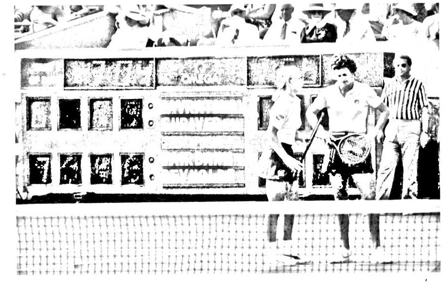
HAI CÁI ĐẦU THÌ TỐT HƠN...TWO HEADS ARE BETTER...
Trong đánh đôi, hai cái đầu không chỉ tiện lợi hơn mà còn thiết yếu! Không có sự “gặp gỡ của các khối óc”, người chơi có thể hoạch định và chơi độc lập với nhau. Chiến thuật, lựa chọn cú đánh, đánh giá đối thủ và những kế hoạch chiến thuật tương tự khác chỉ có thể được bàn bạc và quyết định như một đội. Bất kỳ cách nào khác đơn giản chỉ là chơi những trận quần vợt riêng biệt như một đôi song hành.
In doubles, two heads aren't only more convenient, they're essential! Without a “meeting of the minds” players may plan and play independently of each other. Strategies, shot selections, opponent evaluations, and other such tactical planning can only be discussed and decided on as a team. Any other way would simply be playing separate games of tennis as a tandem.
Khi hai người góp chung nguồn lực, những gì mỗi người nhìn thấy, nghe thấy, cảm nhận và nghĩ đều nên được chia sẻ để củng cố nhận thức chung của cả đội. Những gì bạn thu được từ một góc nhìn khác cũng có thể mang tính khai sáng và thậm chí giúp mài sắc nhận thức cá nhân của bạn. Khi có hai người đối diện bên kia lưới, có nhiều biến số hơn phải cân nhắc. Bạn có thể phát hiện điều gì đó một trong hai người chơi đang làm trong khi đồng đội bạn nhận ra một diễn biến quan trọng khác từ đội đối phương. Khi mỗi người chia sẻ phát hiện của mình với người kia, đội không chỉ hưởng lợi từ những khám phá kết hợp của các bạn mà mỗi người còn cải thiện khả năng nhận thức của mình.
With two persons pooling their resources, what each person sees, hears, feels, and thinks should be shared to strengthen the overall awareness of the team. What you gain from another point of view can also prove enlightening and even help to sharpen your individual awareness. With two persons across the net from you, there are many more variables to consider. You might pick out something one of the players is doing while your partner picks up on another important occurrence from the opposing team. When each of you shares your findings with the other, not only does the team benefit from your combined discoveries, but you will each improve in your perceptions.
Cỗ máy tính phức tạp nhất thế giới nằm trong đầu bạn. Khi được bật lên và tập trung đúng cách, những khả năng bạn có thể đạt được về mặt tinh thần là vô hạn. Tuy nhiên, điều thường xảy ra là nhiều người để tâm trí mình nằm im hoặc ở vị trí “tắt”. Khi hai khối óc gặp nhau và hợp lực, tầm nhìn tinh thần kết hợp của mỗi người càng được nâng cao hơn. Và chính nỗ lực tinh thần thống nhất này sẽ mang lại cho đội sự nhận thức sắc bén nhất và nhiều thành công nhất.
The most complex computer in the world lies in your head. When turned on and focused properly, the possibilities of what you could accomplish mentally are limitless. What happens quite often though, is that many will leave their minds dormant or turned to the “off’ position. When two minds come together and join forces, the combined mental outlook of each is that much more enhanced. And it is this united mental effort that will bring the team the sharpest awareness and the most successes.
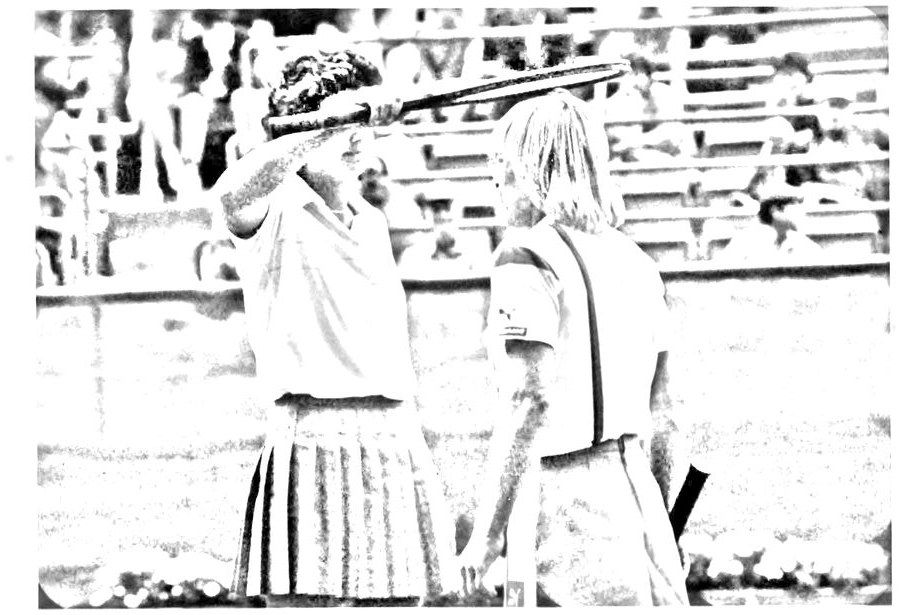
NGHỆ THUẬT GIAO TIẾPTHE ART OF COMMUNICATION
Chính cốt lõi của tinh thần đồng đội bắt đầu khi hai người bạn đời thiết lập được sự hiểu nhau vững chắc. Điều này có thể diễn ra dưới nhiều hình thức giao tiếp, cả bằng lời lẫn không lời. Những buổi "bàn nhanh" ngắn ngủi, khi hai đồng đội gặp nhau để chia sẻ và trao đổi ý tưởng, là một trong những cách giao tiếp cơ bản và quan trọng nhất trong đánh đôi. Chiến thuật có thể được bàn trong những cuộc trò chuyện chớp nhoáng ấy, hoặc chúng cũng có thể được dùng như một cách "tiếp lửa" để giữ cho cả đội vừa có động lực vừa tập trung vào những gì đang diễn ra.
The very essence of teamwork begins when a common understanding is firmly established between the partners. This can take the form of several modes of communication, both verbal and nonverbal. Brief “pow-wow’ sessions, which occur when teammates meet to share and discuss ideas, are one of the basic as well as most important means of communication in doubles. Strategies might be discussed in these quickie chats or they can even be used as a form of “‘pep talk’ to keep the team both motivated and focused on what is happening.
Các tay vợt thường chia sẻ mình sắp đánh cú gì hoặc sẽ hướng quả bóng tiếp theo đi đâu. Vì sao? Để đồng đội biết mà chuẩn bị. Như vậy sẽ không có bất ngờ nào. Khi người giao bóng ra hiệu cho người đứng lưới rằng cú giao sẽ đặt ra ngoài biên, điều đó mách cho người đứng lưới rằng cô ấy phải sẵn sàng bọc hành lang biên của mình nhiều hơn bình thường một chút, vì một cú giao ra ngoài biên tạo ra góc cho người đỡ giao bóng thuận lợi để đặt bóng xuống hành lang biên. Nếu không biết trước, người đứng lưới có thể đã chủ quan hơn trong việc bọc hành lang biên và dễ bị đánh vượt qua. Tương tự, những người đỡ giao bóng sắp đánh cú lốp thường thành công hơn nếu cảnh báo trước cho đồng đội, để cô ấy phản ứng nhanh hơn khi cú lốp ngắn lại và cô ấy phải đối mặt với một "chiếc bánh kẹp lông lá" bay tới phía mình. Những trao đổi giữa các điểm bóng như vậy thường hữu ích và sẽ cải thiện việc hoạch định cũng như giữ vị trí của cả đội.
Players often share what shots they are about to hit or where they will direct the next ball. Why? So their partner will then know what to prepare for. There will be no surprises this way. When a server indicates to the net-playing partner that the serve will be placed out wide, it gives that person at the net a clue that she must be prepared to cover her alley a little more than normal since a serve out wide creates an angle for the receiver conducive to alley placements. Without prior knowledge, the net person might have been a little more relaxed on her alley coverage and been easily passed. Likewise, receivers who are about to hit a lob return would often have more success if they would warn their partner in advance so she will react more quickly if the lob pulls up short and she’s faced with a ‘fuzzy sandwich” coming her way. These inbetween-point communications are often helpful and will improve team planning and positioning.
Ra hiệu là một cách giao tiếp khác trong đánh đôi. Nó thường được người đứng lưới dùng nhất, giấu tay ra hiệu sau lưng cho người giao bóng. Động tác này cho người giao bóng biết liệu mình sẽ "cướp bóng" (poach), tức di chuyển ngang sân để chặn cú vô-lê, hay phải đứng yên. Người đó cũng có thể ra hiệu cho người giao bóng biết nên hướng bóng đi đâu (trái hay phải) trong ô giao bóng, để mình ở đúng vị trí phản ứng với cú đỡ giao bóng. Bàn tay nắm lại có thể nghĩa là "đi", còn bàn tay mở nghĩa là "đứng yên". Ngón trỏ chỉ sang trái nghĩa là giao vào đó, còn ngón cái chỉ ngược lại nghĩa là nên giao sang phía bên phải của ô. Nếu người giao bóng nắm quyền chủ động, đây có thể là cách tuyệt vời để hai người phối hợp với nhau.
Signaling offers another means of doubles communication. It is most often used by the net person who shows a hidden hand signal behind the back to the server. It lets the server know if he will be “poaching” or moving across the court to intercept the volley or that he should stay put. He might also be indicating to the server where the ball should be directed (left or right) in the service box so he will be in position to react to the return of service. A closed hand could mean “go” while an open hand means “stay.” The index finger pointed to the left means serve there, and the thumb showing in the opposite direction indicates the serve should be directed to the right side of the box. If the server has the control, this can be an excellent way for two to work together.
Giao tiếp trong đánh đôi quan trọng là vậy, nhưng quá nhiều có thể gây mất tập trung vì người ta chú trọng chia sẻ suy nghĩ với đồng đội hơn là vào chính lối chơi. Vì lý do này, bạn và đồng đội phải quyết định mức độ giao tiếp cần thiết cho đội mình. Bạn có thể chọn giữ việc trò chuyện trên sân ở mức tối thiểu.
As important as communication is in doubles, too much can cause concentration failure as more emphasis is placed on sharing thoughts with your partner than on the actual play. For this reason, you and your partner must decide just how much communication is necessary for your team. You might elect to keep your on-court talk to a minimum.
Hãy nhớ rằng im lặng thường là vàng. Nếu mọi thứ đang diễn ra tốt đẹp và đội bạn đang đi đúng hướng, ý tưởng hay nhất có thể chỉ là im lặng và chơi! Bạn có thể khám phá ra rằng việc cắn răng im lặng khi bạn muốn nói có thể mang lại lợi ích cho cả hai. Hãy tìm tỷ lệ giao tiếp so với im lặng phù hợp để đội bạn đạt mức thành công cao nhất.
Remember that silence is often golden. If everything is working well and your team is on the right track, the best idea might be just to be quiet and play! You could discover that biting your tongue when you would prefer to talk could benefit you both. Search for the right proportion of communication vs. silence for your team’s greatest level of success.
Dù bạn là người dẫn dắt hay người đi theo trong đội, để trở thành người giao tiếp giỏi đòi hỏi tài lắng nghe. Người nói ít học được nhiều hơn và nghe được nhiều hơn! Bạn đều biết ai đó nói quá nhiều đến mức chẳng lắng nghe ai. Ngay cả khi bạn đang nói, bạn có thể thấy người ấy thực sự không lắng nghe vì người ấy chỉ nghĩ về điều mình sẽ nói tiếp theo. Đây là lý do tại sao những người trò chuyện giỏi nhất trong cuộc sống, những người được coi là người giao tiếp giỏi nhất, lại là những người lắng nghe tuyệt vời! Khi đồng đội bạn nói, hãy lắng nghe và học hỏi.
Whether you are the leader or the follower on your team, to be a good communicator requires a talent for listening. Those who talk less learn more and hear more! You all know someone who talks so much that he listens to no one. Even as you speak, you can see that he really isn't listening because he is thinking only about what he will say next. This is why the best conversationalists in life, those regarded as the best communicators, are great listeners! When your partner does talk, listen and learn.
Hình thức giao tiếp quan trọng nhất bạn chia sẻ với đồng đội (cũng như với đối thủ) là biểu cảm trên khuôn mặt bạn. Nó sẽ kể hết câu chuyện về những gì bạn đang cảm nhận nếu bạn không đề phòng. Hãy học cách kiểm soát biểu cảm để tạo tông giọng cho đội mình. Một nụ cười hay vẻ mặt bình thản trên khuôn mặt bạn toát lên sự tự tin và có thể giúp đồng đội thư giãn hơn hầu hết mọi lời nói. Một ánh nhìn thân thiện, dịu dàng hoặc ấm áp từ đồng đội cũng giúp bạn hạ thấp phòng vệ, và bạn có thể thấy mình sẵn lòng lắng nghe và thi đấu vì cô ấy hơn.
The most important form of communication you will share with your partner (as well as with your opponents) is the expression on your face. It will tell the whole story of what you're feeling if you don’t watch out. Learn to control its action to set the tone for your team. A smile or calm look on your face exudes confidence and can relax your partner more than most words can. A friendly, soothing, or warm look from a partner helps to let your defenses down also, and you might find yourself more willing to listen and perform for her.
NHÀ NGOẠI GIAO ĐÁNH ĐÔITHE DOUBLES DIPLOMAT
Kỹ năng giao tiếp tốt đòi hỏi kiến thức thực hành về quan hệ giữa người với người. Trong đánh đôi, không phải lúc nào điều bạn nói cũng quan trọng mà cả cách bạn nói. Nếu nói sai cách, thông tin bạn chia sẻ, dù quan trọng đến đâu, có thể không được đồng đội chấp nhận hoặc thậm chí không được tiếp nhận. Người ta có xu hướng nghe điều họ muốn nghe, nên bạn phải chắc chắn rằng đồng đội bạn muốn nghe điều bạn nói. Cách bạn trình bày thông điệp thậm chí có thể được coi là một “bài chào hàng”. Nó phải được trình bày cẩn thận, đặc biệt trong những thời điểm căng thẳng và thử thách như trong lối chơi đánh đôi, và nhất là khi nội dung lại mang tính cá nhân — chẳng hạn như lối chơi quần vợt của người ta!
Good communication skills require a working knowledge of human relations. It’s not always what you say in doubles that is important but also how you say it. If said wrong, your shared information, no matter how significant, might not be accepted or even received by your partner. People tend to hear what they want to hear, so you must make sure that your partner wants to hear what you have to say. How you present your message can even be deemed a “‘sales pitch.” It must be carefully presented especially during stressful and trying times like those during doubles play, and especially when the subject matter is of a personal nature — like his tennis play!
Nguyên tắc cốt lõi cho mọi giao tiếp trong đánh đôi phải là: đừng làm đồng đội của bạn tức giận hay bực bội. Không ai thích nổi giận, và chắc chắn nổi giận sẽ không mang lại lối chơi tốt hơn. Dù đồng đội của bạn có chơi kém đến đâu, hãy nhớ rằng người đó, cũng như bạn, đang chơi hết sức mình trong ngày hôm đó. Thay vào đó hãy thông cảm... chính bạn cũng sẽ có những ngày "phong độ kém" và bạn sẽ mong người kia thông cảm khi lối chơi của bạn không đạt phong độ. Tránh những lời châm chọc, ánh mắt khó chịu hay thái độ lạnh nhạt với đồng đội. Thay vào đó, hãy tìm cách lôi kéo người ấy về phía mình bằng sự khéo léo và tinh tế. Làm được vậy, bạn không chỉ ghi điểm với đồng đội mà còn có thể ghi nhiều điểm hơn trước đối phương.
The bottom line for all communications in doubles must be: Don't get your partner mad or upset. No one likes to get mad and certainly better play won't be the result. No matter how poorly your partner might be playing remember that they, like you, are playing the best they can that day. Be understanding instead . .. you will experience “off’ days also and you will expect their sympathy when your own play is not up to par. Stay away from sarcastic remarks, dirty looks, or using the cold shoulder to your partner. Instead, try to win him over to your side with tact and finesse. By doing so, you will not only score points with your partner, but you'll also probably score more points against your opponents as well.
Không ai thích bị ra lệnh. Đặt câu hỏi là cách khéo léo để kéo đồng đội theo cách nghĩ của bạn. "Bạn có nghĩ chiến thuật lốp bóng của mình là đúng khi đối đầu với đội này không?" "Bạn nghĩ mình nên làm gì thay vào đó?" Cách này luôn mang lại kết quả tốt hơn là chỉ nói thẳng "Tôi ước gì bạn đừng lốp bóng nhiều thế nữa mà bắt đầu đánh bóng đi!"
No one enjoys being on the receiving end of orders. Questions offer a tactful way to bring your partner over to your way of thinking. “Do you think our lobbing strategy is the right one to use against this team?” “What do you think we should be doing instead?” This approach always gets better results than simply saying “I wish you'd stop lobbing so much and start hitting the ball!”
Một cách tích cực khác là dùng "chúng ta" thay cho "bạn" khi nói với đồng đội. "Chúng ta nên làm..." nghe dễ chịu hơn "bạn nên làm...". Đây không phải là chiến thuật gay gắt như vậy, ít đổ lỗi cho cá nhân hơn và thay vào đó đặt nhiệm vụ lên cả đội. Khi ấy từng tay vợt sẽ muốn nỗ lực vì tập thể và sẵn lòng theo hướng đi mới của đội. Tuy nhiên, khi bị bảo rằng chính họ phải thay đổi vì điều họ đang làm, phòng vệ sẽ dựng lên và sự tự tin của họ thường giảm xuống. Giao tiếp khi đó trở thành kẻ hủy hoại đội thay vì là phương tiện giúp đội thành công hơn.
Another positive approach is to use ‘we’ in place of “you” when talking with your partner. “We should be doing .. sounds more pleasant than “you should be doing...” It’s not quite as harsh a tactic, places less blame on the individual involved, and puts the task on the team instead. The individual players then want to rally for the team effort and are willing to adopt the team’s new course of action. However, when told they themselves must change because of something they’re doing, defenses will rise and their confidence will usually lower. Communication then becomes a team destroyer instead of a means of enhancing the success of the team.
Hãy cố làm cho những buổi bàn bạc của đội mang tính khích lệ và tạo động lực, bằng cách nói rõ hoặc ngụ ý rằng thay đổi cần thiết là một việc dễ làm. Khi những suy nghĩ và lời lẽ bi quan xuất hiện, sự nản chí ập đến và kéo cả đội đi xuống. Khiếu hài hước cũng chẳng bao giờ hại gì! Khi cả hai đều có thể lùi lại một bước, trêu đùa hay pha trò vào những lúc căng thẳng đang dâng lên, điều đó có thể giúp bạn thư giãn và gắn bó với nhau hơn. Nhưng hãy cẩn thận với giọng điệu bạn dùng. Nó có thể ảnh hưởng đến phản ứng của đồng đội với thông điệp của bạn theo hướng tích cực hoặc tiêu cực.
Strive to make team talks encouraging and motivating by stating or implying that the needed change is an easy task. When thoughts and words of despair enter into the picture, discouragement sets in and brings the team down. A sense of humor never hurts either! When you both can step back and poke fun or joke during special times when the tension is building, it could relax you and bring you closer together. Do be careful of the tone you use. It could affect your partner's reaction to your message either positively or negatively.
Một phần quan trọng của việc hiểu con người và học cách trở thành một tay đánh đôi khéo léo là biết rằng người ta thường thích được làm cho cảm thấy quan trọng. Cũng hãy nhớ rằng vấn đề của mỗi người là mối quan tâm lớn nhất của chính họ. Những khái niệm này cực kỳ quan trọng khi giao tiếp với đồng đội. Giao tiếp là con đường hai chiều và bạn cần nhận ra cảm xúc của đồng đội khi tương tác. Hãy quan tâm chân thành đến đồng đội. Lắng nghe bằng đôi tai biết quan tâm, không chỉ với điều người ấy nói mà còn với điều người ấy hẳn đang cảm nhận. Những người chơi không quan tâm đến người khác sẽ gặp rất nhiều khó khăn trong đánh đôi và trong cuộc sống!
An important part of understanding people and learning to become a diplomatic doubles player is knowing that people generally like to be made to feel important. Remember also that everyone’s own problems are their biggest concerns. These concepts are of utmost importance in communicating with your partner. Communication is a two-way street and you'll need to recognize your partner's feelings when interacting. Take a genuine interest in your partner. Listen with a caring ear, not only to what he says but also to what he must be feeling. Those players who take no interest in others will have great difficulties in dqubles and in the game of life!
HÃY THỪA NHẬN ĐI, NÓ GIỐNG NHƯ MỘT CUỘC HÔN NHÂNLET'S FACE IT, IT’S LIKE A MARRIAGE
Một đội đánh đôi phải được xây dựng trên sự tin tưởng, tôn trọng, thấu hiểu, giao tiếp và hỗ trợ lẫn nhau. Nghe quen không? “Bạn có ______ nhận ______ làm người đồng đội đánh đôi của mình, để có và chơi cùng nhau cho đến khi thất bại chia lìa đôi ta không?”
A doubles team must be built on mutual trust, respect, understanding, communication, and support. Sound familiar? “Do you ________ take thee _____ to be your doubles partner, to have and to play with until losses do you part?’
Cũng như trong hôn nhân hay bất kỳ mối quan hệ nào khác, trong đánh đôi bạn nhận lại những gì bạn bỏ vào. Có thể cần một chút công sức để giữ cho đội vận hành trơn tru cùng nhau. Đánh đôi chắc chắn mang đến một tình huống cho và nhận, và có những lúc bạn phải chuẩn bị làm đúng điều đó, “cho” nhiều hơn một chút. Việc “nhận” đến từ những gì bạn sẽ nhận lại qua tất cả những gì bạn cho đi. Hãy học cách cho đi mà không mong đợi nhận lại và bạn chắc chắn sẽ thu được từ đó. Tuy nhiên, nếu bạn chỉ sẵn lòng cho đi một cách có điều kiện, đừng mong nhận lại nhiều. Suy cho cùng, bạn đã không sẵn lòng cho đi nhiều phần con người mình.
Just as with a marriage or any other relationship, in doubles you get back what you put in. It might require a little work to keep the team flowing smoothly together. Doubles definitely offers a give-and-take situation, and there are times you must be prepared to do just that, a little more “giving.” The “taking” comes from what you will get back through all of your giving. Learn to give without any expectations of receiving and you will certainly gain from it. However, if you're only willing to give conditionally, don’t expect to get much back either. After all, you weren’t willing to give very much of yourself.
Sự hỗ trợ nhạy cảm và thông cảm dành cho đồng đội gửi đi thông điệp về sự quan tâm và tình cảm của bạn dành cho người ấy. Nếu bạn học cách làm cho người ấy cảm thấy hài lòng về bản thân nhờ sự hỗ trợ của bạn, rất có thể người ấy sẽ chơi tốt hơn (vì bạn). Bạn sẽ làm cho người ấy cảm thấy thư giãn và tự tin cũng như sẵn lòng hợp tác với bạn như một người đồng đội. Mặt khác, nếu bạn thiếu sự nhạy cảm để quan tâm đến đồng đội sau khi người ấy đánh hỏng ba cú thuận tay liên tiếp, đừng mong người ấy tập hợp lại và ủng hộ ý tưởng chiến thuật xuất sắc tiếp theo của bạn cho đội.
Sensitive and sympathetic support of your partner sends the message of your care and feelings toward him. If you learn to make him feel good about himself through your support, chances are he will play better (for you). You will make him feel relaxed and confident and more willing to work with you as a partner. On the other hand, if you lack the sensitivity to care about your partner after he’s missed the last three forehands, don’t look for him to rally around and support your next brilliant strategic idea for the team either.
Người ta nói rằng tình yêu nghĩa là không bao giờ phải nói lời xin lỗi. Những lời xin lỗi nhấn mạnh và lặp đi lặp lại cũng nên tránh trên sân đánh đôi. Hãy cố quên đi những sai sót trong quá khứ. Khi bạn xin lỗi, bạn chỉ đang nhắc nhở chính mình, đồng đội và đối thủ về những sai lầm của bạn. Đừng chăm chăm vào điều tiêu cực. Thay vào đó, hãy cố học từ sai sót để không lặp lại, rồi dành những lời khích lệ cho chính bạn và đồng đội. Hãy tiến về phía trước trong suy nghĩ và hành động, tránh xa những bước thụt lùi.
It has been said that love means never having to say you're sorry. Emphatic and repeated apologies should be avoided on the doubles court also. Try to forget about past errors. When you apologize you are only reminding yourself, your partner, and your opponents of your mistakes. Don't dwell on the negative. Instead, try to learn from your errors so you won't repeat them, and then offer encouraging words to yourself and your partner. Go forward in your thoughts and actions and stay away from backward progressions.
Nhiều cuộc hôn nhân đổ vỡ vì thiếu giao tiếp. Hãy chắc chắn rằng với tư cách một cặp đánh đôi, cả hai đều cởi mở với những cuộc thảo luận về đội của mình trên và ngoài sân (tốt nhất là ngoài sân). Chính sách “cửa mở” này giữ cho dòng giao tiếp diễn ra đều đặn để tránh những suy nghĩ tiêu cực bị tích tụ. Sẽ cần một cam kết từ phía bạn để thiết lập một mối quan hệ bền chặt với đồng đội đánh đôi của mình. Tuy nhiên, một khi bạn đã quyết định dốc sức vì nó và coi đó là ưu tiên, bạn và đồng đội đánh đôi có thể thấy mình thành công bên nhau “cho đến khi cái chết chia lìa đôi ta”!
Many marriages break down through lack of communication. Make sure that as a doubles pair you are both open to discussions about your team on and off the court (preferably off). This “open door’ policy keeps a steady flow of communication possible to avoid built-up negative thoughts. It will take a commitment on your part to establish a strong relationship with your doubles partner. However, once you've decided to work at it and make it a priority, you and your doubles partner might find yourselves successfully together ‘‘till death do you part”!
Học cách chơi như một đội đòi hỏi sự hiểu biết ngầm về việc ai sẽ đảm nhận và đánh mỗi cú bóng ở bên phần sân của mình. Với hầu hết các quả bóng, khá rõ ràng ai sẽ trả bóng khi người chơi ở đúng đội hình, tuy nhiên, như bạn có thể nhận ra, luôn có ngoại lệ cho quy tắc.
Learning to play as a team requires an implicit understanding of who will take and play each shot on your side of the court. With most balls it’s quite obvious who will return the shot when the players are in the proper formation, however, as you probably realize, there are exceptions to the rule.
Hai tình huống do dự phổ biến nhất xảy ra khi bóng được hướng giữa hai bạn xuống giữa sân và khi bóng được đánh cao qua đầu bạn (hoặc đầu đồng đội bạn). Những quả bóng đánh xuống giữa sân nên do người chơi mạnh nhất trong đội đảm nhận, tức là người giỏi hơn trong hai người. Điều này có thể được xác định rõ hơn bằng việc ai trong hai người có cú đánh xuống giữa sân tốt nhất. Thường là cú thuận tay nhưng không phải lúc nào cũng vậy. Đây là lý do đội nên hiểu trước và quyết định ai sẽ đánh những quả bóng này để tránh nhầm lẫn trong lúc thi đấu thực tế. Một cân nhắc khác có thể là ai đã đánh cú trước đó. Nếu cùng một người đánh bóng lần nữa, người ấy có lẽ có nhịp điệu tốt hơn, dễ sẵn sàng hơn và có thể phản xạ nhanh hơn một chút so với đồng đội.
The two most common situations of indecision occur when the ball is directed between the two of you down the center of the court and when the ball is played high over your head (or your partner's head). Balls hit down the center of the court should be taken by the strongest player on the team, that is, the better of the two. This can be further defined by which of you has the best stroke down the center of the court. Usually it’s the forehand stroke but not always. This is why the team should understand in advance and decide who will play these balls to avoid confusion during actual play. Another consideration might be who played the last shot. If the same person hits the ball again he probably has a better rhythm, is more apt to be ready, and may be a little quicker with his reflexes than his partner.
Người chơi nào gần lưới nhất ở những quả bóng cần xác định? Người chơi gần lưới nhất luôn nên được dành quyền ưu tiên. Vì gần lưới hơn, người chơi này được đặt vị trí tốt hơn để tận dụng những góc được tạo ra nhằm mang lại lợi thế cho đội. Cô ấy ở vị trí tốt hơn để dứt điểm và thắng điểm so với đồng đội.
Which player is closest to the net on balls in question? The player closest to the net should always be afforded the right of way. Being closer to the net, this player is positioned better to use the angles created to the team’s advantage. She is in a better location to put the ball away and win the point than her partner.
Mọi quả bóng bị lốp qua đầu sang bên phần sân của bạn nên nhanh chóng được gọi to bằng “Của tôi!” hoặc "Của bạn!" Điều quan trọng là phải quyết định và nói ngay lập tức, để đồng đội biết ý định của bạn mà chuẩn bị và giữ vị trí cho phù hợp. Khi nói "của tôi", bạn đã cho biết mình sẽ đánh quả bóng đó, nên đồng đội chuẩn bị bọc phần sân bên mình. (Tuy nhiên người ấy cũng nên sẵn sàng hỗ trợ bạn nếu bạn phán đoán sai và không thể đánh được quả bóng.) Khi hô ngay "của bạn", bạn cho đồng đội biết rằng mình không thể tới kịp quả bóng và cần được giúp. Vấn đề xảy ra khi bọc những cú lốp nếu các tay vợt quên hô hoặc chần chừ quá lâu và hô quá muộn. Khi đó các tay vợt không biết ai sẽ đánh quả bóng và hỗn loạn xảy ra.
All balls lobbed up overhead to your side of the court should quickly be called out loud with either a “Mine!” or “Yours!” It is important that this be decided and stated immediately, so your partner will know your intention$ and be able to prepare and position accordingly. When ‘mine’ is said, you have indicated that you will take the ball so your partner prepares to cover his side of the court. (He should, however, be prepared also to back you up if your judgment is off and you're unable to play the shot.) When “yours” is immediately yelled, you are letting your partner know that you can’t get to the ball and you need help. Problems occur with covering lobs when players neglect to call the shot or if the players hesitate too long and make the call late. Players are then left unsure of who will take the ball and chaos results.
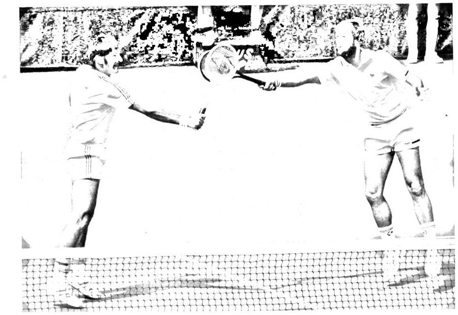
"Để bóng nảy!" và "Đổi vị trí!" là hai khẩu lệnh khác có thể giúp ích cho đội. "Để bóng nảy" được một tay vợt nhanh nhạy hô gấp với đồng đội đang chuẩn bị đánh quả bóng có vẻ như sắp bay ra ngoài. Còn "đổi vị trí" là từ dùng để nói đồng đội nên làm gì sau khi bạn đã băng ngang sang phần sân bên người ấy.
“Let it bounce!” and “Switch!” are two other commands that can help the team. “Let it bounce” is quickly called by an alert player to his partner about to strike a ball that appears to be traveling out. And “switch” is the word used to describe what your partner should do after you've crossed over to his side of the court.
HỌC CÁCH CHƠI NHƯ MỘTLEARNING TO PLAY AS ONE
Dù mỗi người đều có nhiệm vụ riêng trong đánh đôi, chính những tay vợt học được cách cùng hướng về một mục tiêu chung mới khám phá ra cốt lõi đích thực của tinh thần đồng đội và thành công mà nó mang lại.
Even though everyone has individual tasks in doubles, it is those players who learn to work toward a common cause who will discover the true essence of teamwork and the success that it will bring.
Chơi như một khối thống nhất chính là nền tảng của lối đánh đôi hay. Một khi bạn đã hiểu rõ lối chơi của chính mình, đã tính đến lối chơi của đối thủ, đã ngồi lại với nhau và thống nhất một chiến thuật, thì điều quan trọng tiếp theo là thực hiện sứ mệnh đó như một khối thống nhất. Thường thấy là một đội đánh đôi vạch ra chiến thuật chung trước khi trận đấu bắt đầu rồi sau đó chơi trận đấu một cách "tùy hứng". Rất ít trao đổi trên sân diễn ra vì ngay từ đầu đã chẳng có mấy tinh thần đồng đội. Điều đội bạn cần trước tiên là cụ thể hóa hơn nữa kế hoạch chiến thuật. Mỗi thành viên phải biết đội đang hướng về đâu để chơi lối chơi của mình theo cùng hướng đó. Không có con đường rõ ràng để đi theo, người chơi chắc chắn sẽ đánh một lối chơi tách rời khỏi đồng đội. Nếu hai bạn cùng thực hiện một chuyến đi dài bằng hai chiếc xe riêng, bạn sẽ không bao giờ nghĩ đến việc khởi hành trước khi chia sẻ chính xác lộ trình của mình. Nếu chỉ có những chỉ dẫn chung chung kiểu "đi về phía đông"
Playing as one is the very basis of good team play. Once you understand your own games, have taken into account the games of your opponents, have come together and communicated a strategy, it will then be important to carry out the mission as one. What is often the case is that a doubles team formulates a general strategy prior to the start of the match and then plays the match “impromptu.” Very little on-court communication will ensue because very little teamwork is present to begin with. What the team needs first is to get more specific with their strategic planning. Each team member must know what direction the team is heading in order to play his game in the same direction. Without a clear path to follow, players will surely play a game independent of their partner. If the two of you were taking a long trip together in separate cars, you would never consider taking off before sharing your exact course. If only general directions such as “head east”
thì bạn có nghĩ hai người sẽ kết thúc ở cùng một đích đến không?!
were given, do you think the two of you would end up at the same destination?!
Để một cặp đánh đôi tiếp tục chơi như một, phải luyện tập giao tiếp trên sân để đội có thể thích nghi hoặc thay đổi kế hoạch nhằm đối phó với nhiều tình huống chắc chắn sẽ phát sinh. Một đội bỏ quên việc bám sát những thay đổi này có thể thấy mình tụt lại phía sau với một chiến thuật đã không theo kịp.
For a doubles pair to continue to play as one, on-court communication must be practiced so the team will be able to adapt or change their plans to allow for the many situations bound to crop up. A team that neglects to stay abreast of these changes can find themselves lagging behind with a strategy that has failed to keep up.
Ở các môn thể thao khác, việc người chơi phối hợp cùng nhau như một khối là chuyện thường. Trong bóng bầu dục Mỹ, tiền vệ chỉ huy và trung phong phải kết nối đúng cách qua cú chuyền bóng; trong bóng rổ, người ném rổ vô dụng nếu không có sự hỗ trợ của người kiến tạo hay chuyền bóng; và trong bóng chày, người ném bóng và người bắt bóng phối hợp chặt chẽ để đoán trước đối thủ đánh bóng. Trong quần vợt, mỗi cặp đánh đôi cũng phải trở thành một. Khi đội giao bóng, người đứng lưới đề nghị cướp bóng nhiều hơn hoặc khuyên nên giao bóng ở đâu khi đội gặp khó khăn. Người chơi không im lặng, họ luôn phối hợp cùng nhau để cố giữ game giao bóng như một đội. Và với tư cách đội đỡ giao bóng, họ phải nỗ lực còn nhiều hơn để vượt qua lợi thế tấn công của đội giao bóng.
In other sports, players working together as one unit are commonplace. In football the quarterback and center must properly connect with the hike of the ball; in basketball the shooter is useless without the help of the assist man or passer; and in baseball the pitcher and catcher work closely to outguess the batter. In tennis each doubles pair must also become one. When the team is serving, the net player offers to poach more or advises where to serve when the team gets into trouble. The players aren't silent, they’re always working together to try to hold serve as a team. And as the receiving team, they must work even harder to overcome the serving team’s offensive advantage.
CẦN HAI NGƯỜI ĐỂ THẮNG (HOẶC THUA!)IT TAKES TWO TO WIN (OR LOSE!)
Điều quan trọng nhất cần nhớ khi cùng đồng đội phát triển thành một đội là: “Bạn không thi đấu chống lại đồng đội của mình.” Hãy học cách làm việc cùng đồng đội, chứ không phải chống lại người ấy. Ai cũng có những ngày hay và dở, nóng và lạnh, nên hãy thấu hiểu và cảm thông nếu lối chơi của đồng đội bạn đi chệch hướng. Người ấy sẽ không bao giờ thi đấu ở mức cao hơn nếu bạn làm người ấy bẽ mặt. Tuy nhiên, khi sự tôn trọng được thể hiện, ngay cả trong những khoảnh khắc tồi tệ nhất, những lời khen của bạn sẽ giúp khôi phục sự tự tin cần thiết cho đồng đội, từ đó giúp cải thiện phong độ của người ấy.
The most important thing to remember when developing with your partner into a team is: “You are not playing against your partner.” Learn to work with your partner, not against her. Everyone has good and bad or hot and cold days, so be understanding and compassionate if your partner’s game goes awry. She will never perform at a higher standard if you humiliate her. However, when respect is shown, even at the lowest of moments, your praises will help to restore your partner's needed confidence thereby helping her performance.
Một số người chơi thực sự thi đấu chống lại đồng đội của mình. Đôi khi họ tức giận đến mức không buồn nói chuyện với đồng đội trong nhiều ngày sau khi chơi một trận đánh đôi được cho là “giao hữu” với người ấy. Họ có xu hướng đổ lỗi cho người kia thay vì nhận trách nhiệm ngang bằng cho thất bại. Họ cảm thấy rằng bằng cách cô lập đồng đội, họ sẽ báo hiệu cho người khác biết ai thực sự đã làm đội thua trận. Một cái tôi lớn ở một hoặc cả hai người chơi có thể phá hỏng một đội đánh đôi nhanh hơn bạn kịp nói: “Ai muốn chơi một trận đánh đôi không?”
Some players do play against their partners. They sometimes get so furious they won't even talk to their teammate for days after playing a so-called “friendly” game of doubles with them. They tend to blame the other instead of accepting equal responsibility for losses. They feel that by isolating their partner they will be signaling to others who actually lost the match for the team. A big ego in one or both of the players can spoil a doubles team faster than you can say, “Anyone for a game of doubles?”
Sự tự tin, hình ảnh và niềm tin vào chính mình của bạn có liên quan rất nhiều đến hành động và sự ủng hộ mà đồng đội dành cho bạn. Người ấy có thể khiến bạn cảm thấy tốt hoặc tệ về bản thân (và chơi theo đúng cảm giác đó), đồng thời bạn cũng có ảnh hưởng đến cảm nhận của đồng đội về chính mình. Vì cả hai bạn không thể thắng nếu thiếu người kia, hãy học cách thể hiện với đồng đội sự tôn trọng và ủng hộ mà bạn cũng mong nhận được từ người ấy.
Your confidence, image, and belief in yourself have so much to do with the actions and support your partner shows toward you. He can make you feel good or bad about yourself (and play that way too), and at the same time you have an impact on how your partner feels about himself. Since neither of you can win without the other, learn to show your partner the respect and support you crave from him.
Khi hai người chơi lệch trình nhau, người mạnh hơn — thường đảm nhận vai trò đội trưởng — nên hết sức thận trọng, chỉ đưa ra những gợi ý để cả đội làm theo. Người yếu hơn vốn đã cảm thấy mình kém cỏi, nên những chỉ dẫn cho đội phải thật ít và khéo léo. Cũng cần chú ý đến nét mặt và cử chỉ trên sân. Dù nhỏ đến đâu, chúng cũng có thể gây tổn thương nặng nề cho lòng tự trọng của hầu hết người chơi. Sự tinh tế và tinh thần trách nhiệm với đồng đội chính là thứ giúp hai bạn mạnh mẽ hơn như một khối. Hãy nhớ, bạn thắng hay thua mọi game với tư cách một cặp, nên hãy học cách làm việc và thi đấu như một người.
When two players are of mixed levels the stronger player, who often assumes the duties of captain of the team, should take great caution to give only suggestions for the team to follow. The weaker player already feels a sense of inadequacy, and instructions for the team must be kept minimal and diplomatic. Care should also be given to expressions and gestures made on the court. No matter how slight, they can prove quite damaging to the self esteem of most players. Sensitivity and responsibility to your partner will be what builds you stronger as one. Remember, you will win or lose every game as a pair, so learn to work and play like one.
TÓM TẮTSUMMARY
Hãy nhìn kỹ vào cả hai phong cách chơi và khả năng đánh bóng của hai bạn trước khi bắt đầu lập chiến thuật cho đội tuân theo. Hoạch định và chơi trong khuôn khổ của chính mình sẽ mang lại cho đội bạn kết quả ổn định nhất. Hãy hợp nhất khối óc và chia sẻ suy nghĩ. Bạn không chỉ mỗi người thu được nhiều kiến thức hơn mà đội còn hưởng lợi lớn từ những quan sát kết hợp của các bạn. Giao tiếp cực kỳ quan trọng để giữ một cặp chơi với sự hiểu biết chung. Hãy tìm ra những phương tiện và cách thức tốt nhất cũng như mức độ giao tiếp phù hợp cần thiết để đội bạn vận hành hiệu quả nhất. Không phải lúc nào điều bạn nói cũng quan trọng mà cách bạn nói mới là điều quan trọng nhất. Hãy rất khéo léo trong cách tiếp cận với đồng đội để phát huy lối chơi tốt nhất của người ấy. Một đội đánh đôi có thể được so sánh với một cuộc hôn nhân. Nó mang đến một mối quan hệ cho và nhận giữa hai người, và bạn thường nhận lại những gì bạn bỏ vào.
Take a good look at both of your game styles and shotmaking abilities before you start making a strategy for the team to follow. Planning and playing within yourselves will bring your team the most consistent results. Put your minds together and share in your thoughts. Not only will you each gain more knowledge, but the team will greatly benefit from your combined observations. Communication is vitally important to keep a pair playing with a common understanding. Search for the best means and ways as well as the correct amount of communication necessary for your team to operate most effectively. It’s not always what you say but how you say it that matters most. Be very diplomatic in your approach with your partner to bring out her very best play. A doubles team could be compared to a marriage. It presents a give-and-take relationship between two, and you will usually get back what you put into it.
Việc giao tiếp với đồng đội về những quả bóng còn nghi ngờ nên được thực hiện to và dứt khoát để giữ rõ ràng ai sẽ đánh bóng. Để có thể “chơi như một” sẽ đòi hỏi những kế hoạch cụ thể để đội tuân theo. Những điều chung chung chắc chắn sẽ khiến đội chơi một trận quần vợt riêng biệt. Vì bạn không thi đấu chống lại đồng đội của mình, mà hãy đối xử tinh tế với họ để giúp họ hồi phục sau lối chơi kém. Hãy nhận trách nhiệm rằng bạn sẽ thắng hay thua với tư cách một đội, nên hãy gạt bỏ cái tôi và làm việc cùng đồng đội trong cả những ngày tốt lẫn ngày xấu của anh ấy.
Communication with your partner on questionable balls should be made loudly and decisively to keep clear who will play the ball. To be able to “play as one” will require specific plans for the team to follow. Generalizations will surely cause the team to play a separate game of tennis. Since you're not playing against your partner, develop a sensitivity for them to help them rebound from poor play. Accept the responsibility that you will win or lose as a team, so drop the ego, and work with your partner on both his good and bad days.
Chơi Trong Thế Kiểm Soát
GIÀNH QUYỀN KIỂM SOÁT CHÍNH MÌNHGAINING CONTROL OF YOURSELVES
Ôi... sức mạnh của việc nắm quyền kiểm soát. Các chính trị gia thích thú nó, các nhà lãnh đạo doanh nghiệp khao khát nó, và nhiều người vô cùng muốn có nó. Nắm quyền kiểm soát mang lại cảm giác chỉ huy. Đó là cảm giác "nắm quyền" đầy uy lực, mang đến cho bao người niềm vui, sự sung sướng và sức mạnh của việc kiểm soát.
Ohhhh.... the power of being in control. Politicians relish it, business leaders crave it, and many individuals want badly to have it. Being in control can bring with it a sense of command. It is an authoritative “in charge” feeling that brings to so many the joy, luxury, and power of controlling.
Những người chơi tennis đang tìm cách tiến bộ trong môn này nên học vài điều từ các nhà lãnh đạo thành công ngoài "đời thực". Nắm quyền kiểm soát thực sự có những lợi thế rõ ràng. Người chơi tennis kiểm soát được bản thân, tâm trí và quả bóng chắc chắn sẽ kiểm soát được đối thủ và trận đấu khi họ thi đấu. Tuy nhiên, nếu không kiểm soát được bản thân hay giữ được sự tập trung của tâm trí, khả năng kiểm soát bóng của bạn sẽ giảm đi rất nhiều. Trở ngại này chắc chắn làm thay đổi khả năng kiểm soát đối thủ và cuối cùng là khả năng nắm bắt trận đấu của bạn.
Tennis players in search of advancement in the game should take a few notes from successful leaders in the “real world.” Being in control does have definite advantages. Tennis players in control of themselves, their minds, and the ball will surely be in control of their opponents and the match as they play. However, without control of yourself or the focus of your mind, your ability to control the ball will be greatly diminished. This hindrance undoubtedly alters your control of your opponent and ultimately your grasp of the match.
Kiểm soát chính mình được mô tả gọn nhất bằng một từ: "kỷ luật". Chính sự điều chỉnh liên tục suy nghĩ và hành động này tạo nên cái "bản ngã" mà bạn khao khát trở thành. Nói đơn giản, người ta thấy người chơi hoặc "kiểm soát được" bản thân trên sân, hoặc "mất kiểm soát". Hầu hết hành vi thiếu thể thao đều bắt nguồn trực tiếp từ một cá nhân thiếu kỷ luật tự giác hoặc thiếu tự chủ. Những người này không làm chủ được bản thân nên hiếm khi làm chủ được một cách ổn định những trận đấu họ chơi.
Control of yourselves is best described in the single word “discipline.” It is this constant regulation over your thoughts and actions which produces the desired “‘self’ you aspire to be. Quite simply, people are seen either “in control” of themselves on the court or “out of control.” Most unsportsmanlike conduct can be traced directly to an individual lacking self discipline or self control. These people don’t have command of themselves so they will only rarely be consistently in command of the matches they play.
Để chơi được lối tennis mà bạn mong muốn, bạn cần kiểm soát được nhiều tình huống có thể xảy ra trong một trận đấu như thời tiết hay điều kiện sân thay đổi, đối thủ khó chịu, áp lực từ khán giả, hay những phiền toái xung quanh khác. Những tay vợt thiếu kiểm soát chính mình thường để những tình huống này chi phối mình bằng cách cho phép chúng bóp méo lối chơi của họ. Đây là "giờ đổ lỗi" điển hình, vì đổ lỗi cho những diễn biến bên ngoài luôn dễ hơn là tự chịu trách nhiệm về lối chơi kém cỏi của mình. Ngược lại, những đối thủ tinh thần thép sẽ không bị ảnh hưởng bởi các yếu tố tình huống, vì họ để chúng bật ra khỏi lớp vỏ cứng rắn của mình mà thay vào đó gieo rắc sự hoang mang lên đối thủ. Nhịp điệu và thời điểm của những tay vợt biết kiểm soát cũng tương phản rõ rệt với những người vội vã chạy nhốn nháo khắp sân. Những bước chạy và động tác uyển chuyển, trôi chảy là dấu hiệu đặc trưng của những tay vợt chơi trong thế kiểm soát.
To play your desired game of tennis will require you to be in control of the many situations likely to occur in a match such as changing weather or court conditions, difficult opponents, spectator pressures, or other surrounding nuisances. Players who lack the control of themselves will often let these situations control them by allowing them to distort their play. This is the prime “excuse time’ as it’s always easier to lay the blame on external happenings than to hold yourself accountable for poor play. Mentally tough competitors, on the other hand, won't be affected by situational factors as they let them bounce off their tough exterior shell and play havoc on their opponents instead. The rhythm and timing of players in control is also quite a contrast to those rushing hurriedly about the court. Smooth flowing strides and strokes are the earmarks of controlled tennis players.
Chơi trong thế kiểm soát nghĩa là hành động có trách nhiệm. Nếu sau này bạn thấy mình liên tục hối hận về những trò và hành động của mình trên sân, thì đã đến lúc nhận ra sự thiếu hụt của mình trong khoản tự chủ. Bạn có thể thay đổi bằng cách đơn giản là rèn luyện thêm kỷ luật với chính mình. Đừng tìm lý do bào chữa cho lối chơi của mình nữa. Hãy học cách chịu hoàn toàn trách nhiệm về nó. Chỉ bạn mới kiểm soát được lối chơi của mình, nên đừng tìm câu trả lời ở nơi khác!
Playing in control means responsible actions. If you find yourself later repeatedly feeling remorseful about your oncourt antics and actions, it's time to recognize your deficiency in the self-control department. You can change by simply exercising more discipline over yourself. Stop looking for excuses for your play. Learn to take full responsibility for it. Only you are in control of your play, so stop looking for answers elsewhere!
TẬP TRUNG TÂM TRÍ VÀO NHIỆM VỤFOCUSING YOUR MINDS ON THE TASK
Những tay vợt dùng trí não trên sân để lo lắng về một động tác hay một vấn đề mình đang gặp sẽ không gặt hái được nhiều thành công trong tennis. Trong khi tâm trí phải được rèn luyện về việc nên nghĩ gì, nó cũng phải được huấn luyện để luôn tập trung vào nhiệm vụ trước mắt. Một tâm trí lang thang sẽ chẳng tập trung vào đâu cả và gây bất lợi cho lối chơi, còn một tâm trí tập trung không chỉ có lợi cho lối chơi mà còn tuyệt đối cần thiết để đạt kết quả tối ưu.
Players who exercise their brains on the court by worrying about a stroke or problem they're having won't realize much success in tennis. While the mind must be disciplined about what to think about, it must also be trained to remain focused on the task at hand. A wandering mind will focus nowhere and prove detrimental to play, while a focused one is not only beneficial to play, it is absolutely essential for optimum results.
Tennis "đánh rồi xem" là lối chơi mà nhiều tay vợt quen thuộc. Họ chỉ đơn giản đánh bóng qua lưới để xem điều gì sẽ xảy ra! Chơi lối này chẳng cần dùng não bao nhiêu. Dù tâm trí không hề hoạt động có lợi cho những tay vợt này, nó thường vẫn bị vắt kiệt khi họ rên rỉ, phàn nàn và ủ rũ về màn trình diễn dưới mức của mình. Hầu như chắc chắn rằng chính những tay vợt này không biết cách sử dụng tâm trí đúng mực trong tennis. Họ quá quen dùng nó để lo lắng, giận dữ và chán ghét đến mức quên mất rằng nó cũng có thể được dùng để đem lại lợi ích. Họ cần để khám phá ra rằng chính trí tuệ mới tạo nên người thắng cuộc trong tennis. Họ nên dùng đầu óc để nuôi dưỡng những suy nghĩ có lợi chứ không phải những suy nghĩ tự đánh bại chính mình.
“Hit and see” tennis is the game many players are familiar with. They simply knock the ball over the net to see what will happen! Very little use of the brain is required to play such a game. Even though the mind isn’t working in these players’ favor, it is usually quite heavily taxed as the players moan, complain, and sulk about their sub-par performances. More likely than not, these same players just aren't aware of how to use their minds properly in tennis. They are so accustomed to using them for worry, anger, and disgust that they've forgotten that they can be used for benefits as well. They need to discover that it’s intelligence that makes winners in tennis. They should use their minds to foster thoughts that are beneficial and not those that are self defeating.
Suy nghĩ có kiểm soát thường là thứ phân chia trình độ giữa các người chơi. Nó cũng quyết định diễn biến của phần lớn trận đấu. Thắng set đầu, lơi lỏng sự tập trung, và bạn sẽ thấy trận đấu dần tuột khỏi tay mình. Lơi lỏng sự tập trung sau khi bẻ được game giao bóng của đối thủ, và việc giữ game giao bóng của mình sẽ trở thành một cuộc vật lộn khó khăn hơn nhiều. Nghĩ về chuyện tối qua hay một việc quan trọng nào đó trong đời, thế là xong! Tâm trí bạn bay đi nơi khác và khả năng kiểm soát trận đấu biến mất. Tập trung là nghệ thuật giữ sự chú ý vào lúc này và tại đây. Đó là việc gạt bỏ những suy nghĩ về quá khứ và tương lai có thể cản trở lối chơi của bạn. Người chơi tập trung tốt thường cũng không để lỗi lầm làm mình bận tâm, vì họ kiểm soát suy nghĩ của mình đến mức không cho phép những suy nghĩ tiêu cực hay tự đánh bại bản thân xâm nhập và chi phối.
Controlled thinking is what often separates the levels of players. It also decides the way most matches will go. Win the first set, relax your focus, and watch the match slowly slip away. Relax your focus after breaking your opponent’s serve and holding your own serve will become a much more difficult struggle. Think on what you did last night or on some important happening in your life, and forget it! Your mind takes you elsewhere and your control over the match is gone. Concentration is the art of remaining focused on the here and now. It is blocking out past and future thoughts that can hinder your play. Concentrated players usually won't let mistakes bother them either, because they're in such control of their thoughts that they don’t allow negative or self-defeating thoughts to enter and take control.
Khả năng giữ được sự tập trung với một tâm trí chuyên chú là điều mà hầu hết người chơi phải vật lộn suốt những năm tháng chơi tennis của mình. Họ chơi hay khi tâm trí "ăn khớp" và chơi thất thường khi không. Nhưng đã bao lần chính những người chơi đó cố tìm hiểu rõ hơn hoặc nỗ lực nhiều hơn để phát triển mức độ tập trung cao hơn trong bản thân? Đáng buồn thay, rất hiếm. Phần lớn người chơi dường như bằng lòng với việc tự gào lên "nhìn bóng đi", đòi hỏi sự tập trung tức thì khi họ đánh hỏng những quả dễ. Giá như họ học được cách thư giãn nhiều hơn, gạt mọi suy nghĩ không liên quan ra khỏi đầu và rèn luyện tư duy, thì chỉ riêng sự tập trung của tâm trí cũng đủ nâng cao trình độ thi đấu của họ. Biết đâu họ còn phát hiện ra rằng mình không cần gào "nhìn bóng đi" nữa, vì họ vốn đã tập trung vào nó rồi. Đòi hỏi mình phải tập trung tức thì trên sân cũng gần khó như đòi hỏi mình chạy marathon ngay lập tức. Cả hai đều không thể làm được nếu thiếu sự chuẩn bị đầy đủ, kỹ lưỡng, thiếu kỷ luật và khát khao. Bạn phải thực sự muốn đạt đến mức độ tập trung cao hơn mới có thể dồn hết suy nghĩ và năng lượng cho nhiệm vụ. Nó cũng không đến khi bị ép buộc. Hãy thư giãn khi bạn muốn mức độ tập trung của mình cải thiện. Một khi học được cách làm chủ sự tập trung, bạn sẽ phát hiện ra rằng việc kiểm soát nó sẽ là đồng minh lớn nhất của bạn trên sân. Tuy nhiên, nếu phớt lờ sức mạnh của nó, bạn chắc chắn sẽ phải vất vả lâu dài và gian khổ để tiến bộ trong môn tennis.
Being able to stay concentrated with a focused mind is something most players struggle with all of their tennis-playing years. They play well when their minds are “in tune” and erratically when they are not. But how often will these same players attempt to better understand or work harder to develop a greater level of concentration within themselves? Sad to say, it is rare. Most players seem content to scream “watch the ball’ to themselves, demanding instant concentration when they miss the easy ones. If only they would learn to relax more, clear their minds of all irrelevant thoughts, and discipline their thinking, the focus of their mind could alone heighten their level of play. They might even discover that they wouldn't need to scream “watch the ball’ any longer, because they’d already be focused on it. Demanding that you have instant concentration on the court is almost as difficult as demanding that you immediately run a marathon. Neither can be accomplished without proper and thorough preparation, discipline, and desire. You must really want to reach a heightened level of concentration to channel all of your thoughts and energies to the task. It also won’t come when forced. Relax when you want your concentration level to improve. Once you've learned to master your concentration, you ll discover that its control will be your greatest ally on the court. However, ignore its power and you're destined to labor long and hard to advance your tennis game.
HIỂU VÀ THỰC HIỆN VIỆC KIỂM SOÁT BÓNGUNDERSTANDING AND EXECUTING BALL CONTROL
Chơi trận đấu trong thế kiểm soát là điều hoàn toàn bất khả thi nếu trước tiên bạn không hiểu và không thể thực hiện được việc kiểm soát bóng. Dù ai cũng hiểu rằng bóng tennis bay theo hướng mà nó được đánh, việc kiểm soát bóng vẫn tiếp tục ám ảnh hầu hết mọi người. Trong tennis chỉ có bốn sai lầm: đánh bóng vào lưới, đánh bóng quá dài, đánh bóng lệch quá xa sang trái, và đánh bóng lệch quá xa sang phải. Bốn sai lầm đơn giản này vẫn nuôi sống các chuyên gia huấn luyện trên khắp thế giới, khi học trò của môn thể thao này không ngừng tìm kiếm sự thấu hiểu về cách kiểm soát bóng tốt hơn.
Playing the game in control is quite impossible without first understanding and being able to execute control of the ball. Although it’s universally understood that tennis balls travel in the direction they are stroked, control of the ball continues to plague most people. The only four mistakes in tennis are: hitting the ball into the net, hitting the ball too long, hitting it too far to the left, and hitting it too far to the right. These four simple mistakes keep teaching professionals around the world in business, as students of the game continue to search for an understanding of how to better control the balls they hit.
Rõ ràng, mọi cơ chế của từng động tác đều chỉ nhằm tạo ra sự tiếp xúc đúng đắn với bóng và đưa bóng đi theo hướng mong muốn. Các bậc thầy tennis và những chuyên gia hướng dẫn khác rất thích làm phức tạp hóa quá trình đánh bóng bằng cách quảng bá "1.001 cách đã được kiểm chứng để có cú vung vợt tốt hơn". Tay vợt rồi cố gắng áp dụng lời khuyên này vào lối chơi của mình bằng cách sửa đổi hay thay đổi một phần nào đó trong động tác, mà không bao giờ thực sự hiểu nó liên quan thế nào đến việc kiểm soát bóng của mình. Họ có thể đổi cách cầm vợt, thay đổi cú vung, hay thậm chí di chuyển chân khác đi, nghĩ rằng đó là câu trả lời họ hằng tìm kiếm. Có thể đúng, mà cũng có thể không. Nếu không hiểu rõ sự thay đổi liên quan thế nào đến việc kiểm soát bóng của mình, thì thay đổi đó thường tỏ ra vô ích.
Clearly, all mechanics of each stroke occur simply to make proper contact with the ball and to send it in the desired direction. Tennis gurus and other instructional experts love to complicate the stroking process by touting “1,001 proven ways for a better swing.” Players then try to incorporate this advice into their own games by altering or changing some part of their stroke, never really understanding how it relates to their control of the ball. They might change a grip, alter their swing, or even move their feet differently thinking this is the answer they've been searching for. Maybe it is, and then again, maybe it isn’t. Without the clear understanding of how the change relates to their control of the ball, the change will usually prove useless.
Động tác chân giúp cơ thể bạn vào đúng tư thế để thực hiện cú đánh cần thiết, còn việc chuẩn bị vợt đưa vợt bạn vào vị trí cho điểm tiếp xúc mong muốn. Cách cầm vợt giữ vợt ở đúng góc, trong khi độ chắc của cú cầm vợt ổn định chuyển động của vợt suốt cú đánh để kiểm soát tốt hơn. Bóng nên được đánh phía trước cơ thể trong mọi cú đánh và đón ở độ cao cùng khoảng cách thoải mái so với cơ thể để tránh bị gò bó không cần thiết và với quá xa. Sự thăng bằng của cơ thể cũng là một yêu cầu quan trọng để đưa bóng đi đúng hướng với sự kiểm soát đúng mực.
Footwork lines your body up for the required hit, while racket preparation gets your racket into position for the desired contact. Your grip holds the racket at the proper angle while the firmness of your grip stabilizes the racket’s movement throughout the hit for better control. Balls should be played out in front of the body on all hits and taken at a comfortable height and distance away from the body to avoid unnecessary cramping and excessive reaching. Balance of the body is also an important requirement to direct the ball with proper control.
Mỗi yếu tố này liên hệ với nhau trong quá trình đánh bóng tại điểm tiếp xúc. Đây là lúc mặt vợt (dây vợt) và bóng gặp nhau, và nó quyết định sau cùng hướng bóng sẽ tiếp tục bay. Động tác tiếp tục tiến triển với phần kết thúc khi vợt tiếp tục vung sau khi tiếp xúc theo hướng mục tiêu dự định và điều hướng bóng đến đó trong quá trình đánh.
Each of these relates to the other in the stroking process at the contact point. This is when the racket face (strings) and ball meet, and it ultimately dictates in which direction the ball will continue to travel. The stroke further progresses with the follow-through as the racket continues to swing after contact in the direction ofits intended target and directs the ball there in the process.
Khi xảy ra sai sót hay vấn đề với các động tác đánh bóng của bạn, hãy nhìn vào điểm tiếp xúc bóng. Đây thường là nơi bạn khám phá ra lý do vì sao bóng đi theo hướng không mong muốn. Hãy "đóng băng" trong giây lát ở cuối mỗi cú đánh để phân tích thăng bằng, động tác kết thúc và vị trí đứng của bạn. Cũng hãy "đóng băng" khi đối thủ đánh bóng vào lưới để phân tích động tác chuẩn bị vợt và thân người cũng như cường độ của bạn trước những cú đánh mà bạn chuẩn bị thực hiện. Cả hai động tác "đóng băng" này đều giúp bạn có được hiểu biết quý giá về lối chơi của mình và hiểu rõ hơn khả năng kiểm soát bóng.
When mistakes or problems occur with your strokes, look to your contact of the ball. This is where you will usually discover why the ball went in the unwanted direction that it did. ‘Freeze’ at the end of hits for a brief moment to analyze your balance, follow-through, and positioning on your hits. Freeze also when your opponent hits a shot into the net to analyze your racket and body preparation as well as your intensity prior to shots you are preparing to strike. Both of these freeze maneuvers can help you gain valuable insight into your game and a better understanding of your control of the ball.
Sức mạnh thuần túy chỉ đem lại kết quả trong đánh đôi khi đi kèm sự kiểm soát. Đây là một trong những trở ngại lớn nhất để thi đấu thành công: điều tiết lượng sức mạnh sao cho nó đi liền với sự kiểm soát. Những cú giao bóng như đại bác nên để dành cho các chiến thuật đổi nhịp, còn một cú giao bóng ở mức tốc độ 4 với độ sâu và điểm rơi tốt mới là lý tưởng. Mỗi cú đánh đều nhắm đến một mục tiêu, nên đặt bóng có chủ đích là chìa khóa ở mọi trình độ. Hãy cố dùng một cú vung vợt có kiểm soát để đánh ra quả bóng có kiểm soát. Những cú vung mượt mà, hiệu quả, đưa vợt xuyên qua bóng sẽ mang lại cho đội bạn kết quả mong muốn.
Sheer power pays off in doubles only when control is present. This is one of the biggest obstacles in successful play, regulating the amount of power so that it comes with control. Cannonball serves should be saved for change of pace strategies, while a 4 speed service with good depth and placement is ideal. Every shot is hit with a target in mind so deliberate placement is the key at every level played. Strive to use a controlled swing to hit a controlled ball. Smooth efficient swings that effectively travel through the ball will bring your team the results you desire.
CHỈ NHỮNG SUY NGHĨ TÍCH CỰC, XIN MỜIPOSITIVE THOUGHTS ONLY, PLEASE
Để chơi đánh đôi trong thế kiểm soát, bạn buộc phải làm chủ được suy nghĩ của mình. Ai để những suy nghĩ tuyệt vọng, nghi ngờ hay vô vọng xâm nhập vào đầu sẽ ngập chìm trong sự bi quan của chính mình. Những đội kiểm soát được suy nghĩ sẽ truyền cho nhau những lời động viên, và điều đó lại tiếp thêm một tinh thần lạc quan mạnh mẽ. Sức mạnh của lối suy nghĩ tích cực có chọn lọc thật đáng kinh ngạc. Bạn chính là những gì bạn nghĩ, nên hãy rèn mình suy nghĩ như một người thắng cuộc!
To play the game of doubles in control necessitates gaining command of your thoughts. Anyone who allows thoughts of despair, doubt, or hopelessness to enter his mind will wallow in his own pessimism. Teams in control of their thoughts will funnel words of encouragement to themselves, which in turn fuel powerful optimism. The strength of selective positive thinking is quite remarkable. You are what you think, so train yourself to think like a winner!
Lỗi lầm và lối chơi kém thường là thứ thử thách sức mạnh của lớp giáp tinh thần nơi mỗi người. Thể hiện sự bất mãn với sai sót thì dễ; nhưng không để cảm xúc bị ảnh hưởng bởi chúng mới cho thấy bản lĩnh và sự vững vàng tinh thần. Lỗi lầm nên được nhanh chóng quên đi sau khi phân tích để sửa chữa, thay vào đó người chơi hãy ghi nhớ những cú đánh hay mà mình đã thực hiện. Đã bao lần bạn chơi một game đánh đôi và sau khi đánh được mười đến mười lăm cú hay lại chỉ nhớ mỗi những sai sót tồi tệ mà bạn đã mắc trước đó? Còn những cú đánh của đồng đội bạn thì sao? Bạn cứ mãi nhớ đến vài sai lầm mà cô ấy mắc phải, hay bạn giữ thái độ tích cực bằng cách chọn tập trung vào lối chơi tốt hơn của cô ấy? Bạn làm chủ được suy nghĩ của mình và có quyền chọn giữa những ý nghĩ khiến bạn và đồng đội suy sụp hay nâng đỡ bạn và đồng đội.
Errors and poor play are what generally test the strength of one’s mental armor. It’s easy to show dissatisfaction with mistakes; however, it shows character and mental toughness to be emotionally unaffected by them. Errors should be quickly forgotten after corrective analysis as players remember instead the good shots they've been playing. How many times have you played a game of doubles and after hitting ten to fifteen good shots remember only the bad mistakes you made earlier? What about the shots your partner hit? Do you keep remembering the several mistakes she made, or do you remain positive by choosing instead to focus on her better play? You are in control of your thinking and have the choice between thoughts that put you and your partner down or pick you and your partner up.
Trong đánh đôi, những suy nghĩ mặc cảm tội lỗi thường là lý do lớn nhất khiến một số người chọn đánh đơn thay vì đánh đôi. "Tôi không muốn làm đồng đội mình thất vọng" là phản ứng phổ biến của nhiều người sợ chơi kém. Họ tự gây áp lực lên bản thân phải thi đấu ở một đẳng cấp siêu phàm không mắc lỗi đến mức trở thành những "kẻ tư duy tiêu cực" đã định sẵn. Trong khi một số tay vợt đơn khi cố chơi đánh đôi thực sự áp đặt mặc cảm tội lỗi lên đồng đội, thì thường những cảm giác này chỉ đến từ bên trong. Chỉ đến khi họ học được cách kìm nén những suy nghĩ làm nhụt chí này và thay thế bằng những suy nghĩ tích cực, tiếp thêm động lực, họ mới thấy thoải mái trên sân đánh đôi.
In doubles, thoughts of guilt are often the biggest reason some will choose playing singles over doubles. “I don't want to let my partner down” is a common reaction by many who fear poor play. They put such pressure on themselves to perform at a superhuman level without mistakes that they become predetermined “negative thinkers.” While some singles players trying to play doubles do apply the pressures of guilt on their partner, often these feelings simply come from within. Not until they learn to suppress these discouraging thoughts and replace them with positive and motivating ones will they feel comfortable on the doubles court.
Suy nghĩ tích cực mang lại kết quả tích cực. Rất ít thứ có thể ảnh hưởng đến kết quả một trận đấu hơn những gì các tay vợt tham gia đang nghĩ. Những gì người ta nghĩ có ảnh hưởng sâu sắc đến họ đến mức nó thực sự nhào nặn họ thành con người của họ. Thái độ là cách người ta hành động, cảm nhận và suy nghĩ, và được quyết định bởi những gì mỗi chúng ta thường nghĩ tới. Vẻ đẹp của thái độ nằm ở chỗ nó có thể được định hình hay nhào nặn theo ý bạn muốn chỉ bằng cách kiểm soát những gì bạn nghĩ tới. Những tay vợt đánh đôi tích cực về bản thân và đội của mình đúng như mức họ muốn, và kết quả là họ sẽ chơi theo cách đó!
Positive thoughts bring positive results. Very few things can affect the outcome of a match more than what the players involved are thinking. What people think has such a profound effect on them that it actually shapes them into the person that they are. Attitudes are the way people act, feel, and think and are determined by what each of us habitually thinks about. The beauty of your attitude is that it can be shaped or molded as you desire by simply controlling what you think about. Doubles players are as positive about themselves and their team as they want to be and will play that way as a result!
TIN VÀO CHÍNH MÌNHBELIEVING IN YOURSELVES
Những tay vợt cố gắng không thua trên sân thường thấy cơ bắp mình căng cứng trong một lớp khiên phòng ngự. Họ hiếm khi đạt đến đỉnh cao phong độ cho đến khi khám phá ra rằng cố gắng chơi hết sức mình mới là điều giúp họ tạo ra nhiều dòng chảy và sự thanh thoát hơn trong các cú đánh và phong cách của mình. Niềm tin vào bản thân sẽ giúp họ thấm nhuần sự tự tin cần thiết và thúc đẩy họ tiến tới chiến thắng.
Players who attempt not to lose on the court often find their muscles tight and tense in a shield of defense. Rarely will they reach their playing peak until they discover that trying to play their best instead is what will help them produce more flow and grace in their strokes and style. Belief in themselves will help them to further instill the necessary confidence and charge them toward victory.
Học cách tin tưởng vào chính mình là bước đầu tiên để chơi trận đấu ở chế độ "tự động". Tennis chơi ở chế độ tự động còn được gọi là "in the zone" (trạng thái sung). Đây là trạng thái thi đấu lý tưởng khi những suy nghĩ có ý thức về các cú đánh nhường chỗ cho niềm tin tiềm thức vào chúng. Mọi thứ cứ thế diễn ra thật nhẹ nhàng với rất ít suy nghĩ, đến mức những tay vợt ở trạng thái này có vẻ bình thản và tự tin.
Learning to trust in yourselves is the initial step toward playing the game in “automatic.” Tennis played in automatic is also referred to as “in the zone.” This is the ideal performing state when conscious thoughts on strokes give way to subconscious belief in them. Everything just happens so effortlessly with little thought that players in this state eppeer to be calmly confident.
Vì ai chơi tennis cũng có điểm mạnh và điểm yếu, điều thiết yếu là bạn phải đánh giá khả năng của đội mình dựa trên điểm mạnh chứ không phải điểm yếu. Khi cố gây dựng sự tự tin cho chính mình, trở ngại lớn nhất mà đội bạn phải vượt qua là cách xử lý những điểm yếu của đội. Đây là nơi hầu hết người chơi dồn hết năng lượng. Họ thường quá bất an với những khiếm khuyết của đội và của từng cá nhân đến mức hiếm khi cho mình cơ hội nghĩ vượt ra ngoài chúng.
Since everyone playing the game of tennis has strengths and weaknesses, it is essential for you to measure your team’s abilities by your strengths and not your weaknesses. When trying to develop confidence in yourselves, the single biggest obstacle for your team to overcome is how to handle your team’s weaknesses. This is where most players concentrate their energies. They are often so insecure with the team’s deficiencies and those of the individuals involved that they rarely afford themselves the opportunity to think beyond them.
Tập luyện là mảnh đất rèn luyện để gây dựng niềm tin vào bản thân và vào đội của bạn. Chính tại đây, trên sân tập, sự lặp lại tạo nên những cú đánh mạnh mẽ hơn cùng với sự tự tin. Khi đội bạn gặp những trở ngại nhỏ trong lúc thi đấu thật, hãy học cách nghĩ vượt qua chúng. Hãy tin vào bản thân và vào kết quả mà bạn biết mình có thể đạt được, rồi lỗi lầm và những trở ngại nhỏ khác sẽ trở thành những thử thách nho nhỏ mà đội bạn thích chinh phục. Bạn sẽ nhận lại đúng những gì bạn lập trình vào bộ não như máy tính của mình, nên hãy tin vào bản thân và điều đó sẽ thành hiện thực!
Practice is the training ground for developing belief in yourselves and your team. It is here, on the practice court, that repetition builds stronger strokes as well as confidence. When minor setbacks befall your team during actual play, learn to think beyond them. Believe in yourselves and the result you know you're capable of, and errors and other minor setbacks will become little challenges your team loves to overcome. You will get back what you program into your computer minds, so believe in yourselves and it is so!
CHIẾN THẮNG NHỜ SỰ NHẬN BIẾTWINNING WITH AVARENESS
Lối chơi hợp lý bắt nguồn từ sự nhận biết. Thậm chí có thể coi những lỗi lầm là "thông minh" khi chúng được nhanh chóng phân tích, sửa chữa và không lặp lại. Khả năng luôn nhận biết, đánh giá tình huống bằng cách lùi lại và quan sát, sẽ giúp bạn luôn nắm bắt được những gì đang diễn ra với cả bốn người chơi trên sân đánh đôi.
Sensible play results from awareness. Errors can even be deemed “intelligent” ones when they are quickly analyzed, corrected, and not repeated. Your ability to remain aware, to size up the situation by stepping back and viewing it, will enable you to stay abreast of what is occurring with all four players on the doubles court.
Từ lúc khởi động cho đến khi điểm cuối cùng của trận đấu được đánh xong, các giác quan của bạn sẽ liên tục thu thập những hiểu biết quý giá về những gì đang diễn ra. Hãy dò tìm điểm yếu nơi đối thủ. Ai cũng có điểm yếu. Nếu bạn học được cách phát hiện một điểm yếu nhỏ và tận dụng nó, có lẽ bạn sẽ thắng được phần lớn những người mà hiện tại bạn đang thua! Điểm yếu có thể không lộ rõ, nên bạn có thể phải tinh chỉnh sự nhận biết của mình để tìm ra chúng. Có thể đối thủ của bạn vô-lê trên lưới khá tốt. Nhưng liệu họ có đánh bóng tốt ở mọi độ cao, góc độ, tốc độ và mọi bên không? Hãy tìm kiếm... nó ở đó để bạn khám phá.
From the warm-up until the last point of the match has been played, your senses will continually gather valuable insight on what is happening. Probe for weaknesses in your opponents. Everyone has them. If you could learn to spot one little weakness and take advantage of it, you’d probably beat most of the players you're currently losing to! The weaknesses may not be obvious, so you might have to tune your awareness to discover them. Maybe your opponents are quite good volleyers at the net. But do they play the ball well at all heights, angles, speeds, and sides? Search .. . it’s there for you to find.
Thay vì cứ day dứt về lỗi của chính mình, hãy nhìn vào lỗi của đối thủ. Vì sao họ lại đánh hỏng những cú như vậy?
Instead of dwelling on your own mistakes, look to those of your opponents. Why are they missing the shots they are?
Họ đang thắng bạn bằng cách nào khi họ thắng? Họ đang làm gì mà khiến bạn khó xử lý đến vậy? Hãy học từ sai lầm của chính mình cũng như của đối thủ, giống như bạn nên học từ những cú winner đang diễn ra trên sân.
How are they beating you when they are? What are they doing that’s so difficult for you to handle? Learn from your mistakes as well as those of your opponents, just as you should learn from the winners taking place on the court.
Mỗi người trong hai bạn nên cố gắng giúp đỡ người kia bằng cách chia sẻ những hiểu biết thu thập được trong suốt trận đấu. Đội bạn có đang mất kiểm soát bóng không? Bạn có đang mất kiểm soát chính mình không? Bạn có đang lạc khỏi kế hoạch trận đấu đã đề ra không? Bạn đã phát hiện ra điểm bất lực nào trong lối chơi của đối thủ chưa? Hãy cùng nhau làm việc để giữ vững thế kiểm soát. Sự nhận biết của bạn, nếu thực sự nhạy bén và được truyền đạt đúng cách, có thể là chất xúc tác khơi dậy lối đánh đôi thông minh trong chính hai bạn.
Each of you should strive to help the other by sharing the knowledge gathered throughout the match. Is your team losing control of the ball? Are you losing control of yourselves? Are you straying from the established game plan? Have you discovered an impotency in your opponents’ play? Work together to remain in control. Your awareness, if sharply in tune and properly communicated, could be the catalyst to bring out intelligent doubles play within yourselves.
NẮM QUYỀN KIỂM SOÁT ĐỐI THỦTAKING CONTROL OF YOUR OPPONENTS
Câu hỏi mà hai bạn cần tự đặt ra là: "Đối thủ của chúng ta thực sự giỏi đến vậy, hay chính chúng ta khiến họ trông như vậy?"
The question to ask yourselves is: “Are our opponents really so good or do we just make them look that way?”
Hầu hết những tay vợt gặp "ngày dở" hiếm khi tính đến những cú bóng mà đối thủ đang đưa sang cho họ. Họ có thể đánh hỏng cú trái tay dài quá đường cuối sân rồi tiếp tục tự hạ thấp và mắng nhiếc bản thân, thay vì ghi công cho đối thủ khôn khéo đã đặt bóng vào điểm yếu của họ. Đây có lẽ là lý do hầu hết tay vợt cảm thấy lẽ ra mình phải thắng sau khi thua. Họ sẽ tự thuyết phục rằng đó là do lối chơi kém cỏi của chính mình (và điều này hoàn toàn có thể đúng), nhưng lại bỏ qua việc tính đến nguyên nhân thực sự của lối chơi kém cỏi đó — những đối thủ xảo quyệt của họ. Đối thủ của bạn hoặc sẽ đưa bóng đến những "sở thích" của bạn, hoặc đến những "điều không thích" của bạn. Khi bóng được đánh đến "sở thích" của bạn, bạn thường ghi công cho mình về chiến thắng. Tuy nhiên, khi đối thủ đặt bóng vào "điều không thích" của bạn, bạn có lẽ tự hạ thấp mình và hiếm khi ghi công cho đối thủ. Điều quan trọng là bạn và đồng đội phải nhận ra rằng các tay vợt thường chơi tốt đúng như mức đối thủ cho phép họ, và trong tương lai hãy để ý xem bạn cho phép đối thủ chơi tốt đến mức nào.
Most players experiencing “‘off’ days rarely take into account the shots their opponents are feeding to them. They might miss their backhand long over the baseline and proceed to belittle and berate themselves, instead of crediting their clever opponent for placing the ball to their weaknesses. This is probably the reason most players in tennis feel they should have won after losing. They will convince themselves that it was due to their own poor play (and quite possibly this is true) but neglect to take into account the real cause of their poor play — their crafty opponents. Your opponents will either direct balls to your “likes” or to your “dislikes.” When balls are played to your “likes” you will usually credit yourself with the victory. However, when your opponents place shots to your “dislikes” you probably discredit yourself and rarely give credit to your opponent. It is important for you and your partner to realize that players generally play as well as their opponents allow them to and in the future take notice of how well you allow your opponents to play.
Đừng bao giờ đi xa khỏi câu châm ngôn khôn ngoan xưa cũ: "Bạn đừng bao giờ thay đổi một lối chơi đang thắng." Những người theo chiến thuật thích bày ra các kế hoạch trận đấu mới đến mức đôi khi họ quên tuân theo lời khuyên đúng đắn này. Khi quyền kiểm soát trận đấu của bạn bắt đầu tuột dốc, thì việc thay đổi chiến thuật là cần thiết. Hãy nhớ rằng, để lật ngược tình thế trong trận đấu và khiến thế kiểm soát nghiêng về phía mình, bạn sẽ cần khiến đối thủ của bạn chơi khác đi. Để làm được điều đó, có lẽ chính bạn cũng sẽ cần phải chơi khác đi!
Never stray far from the wise old saying, “You should never change a winning game.” Strategists love to conjure up new game plans so much that they sometimes forget to follow this sound advice. When your control of the match begins to slip, a change in strategy is necessary. Remember, to turn the tables in the match and have the control swing your way, you will need to make your opponents play differently. To accomplish this, you will probably need to play différently yourselves!
Hãy khai thác điểm yếu của đối thủ. Ở phía bên kia có bốn cú đánh (cú thuận tay và trái tay của mỗi tay vợt). Hãy tìm ra cú yếu nhất và đặt bóng tới đó thường xuyên hơn. Có hai đối thủ ở phía bên kia lưới. Hãy tấn công mắt xích yếu nhất trong đội đối phương. Làm như vậy, bạn sẽ không chỉ phá vỡ sự tự tin của từng cá nhân mà còn của cả đội đối phương. Việc kiểm soát đối thủ thường được thực hiện tốt nhất bằng cách phơi bày sự thiếu ăn ý của đội bên kia.
Exploit the weaknesses in your opponents. There are four strokes on the opposite side (each player's forehand and backhand). Find the weakest and place your shots there more often. There are two opponents on the other side of the net. Attack the weakest link in the opposing team. By doing so you will not only break the confidence in the individual player but also in the opposing team. Opponent control is often best executed by exposing the other team’s lack of teamwork.
Hãy gây uy hiếp cho họ. Những quả bóng mạnh đánh sát hoặc trúng người họ có thể làm giảm lối chơi hung hãn của đối thủ và giúp giữ họ trong tầm kiểm soát. Điều này phải luôn được thực hiện theo tinh thần thể thao và nên có một cử chỉ "không cố ý gây hại" khi kết thúc điểm bóng.
Intimidate them. Hard balls hit close or at them can dampen aggressive play in your opponents and help to keep them under control. This should always be accomplished in a sportsmanlike manner and a “no harm intended” gesture should be made at the completion of the point.
Hãy khiến họ chơi theo cách họ không muốn chơi. Nếu họ thích lên lưới, hãy buộc họ phải ở lại đường cuối sân bằng những cú đánh sâu hơn và những cú lốp. Nếu họ thích lối chơi từ đường cuối sân, hãy đánh những quả bóng ngắn kéo họ lên lưới. Những tay vợt thoải mái nhất khi ít phải di chuyển nên bị giật mình chạy khắp sân, còn những tay vợt nhanh nhẹn như mèo hay rình rập thì nên được thuần phục bằng những quả bóng đánh thẳng vào người họ.
Make them play the way they don’t want to play. If they prefer the net, force them to stay on the baseline instead, with deeper strokes and lobs. If they enjoy the game from the baseline, play short balls which pull them into the net. Players who are most comfortable with litthe movement should be jerked all about the court, while cat-like players who prowl should be tamed with balls directed at them.
Bạn và đồng đội nên luôn cố gắng đặt bóng đến chỗ đối thủ để có được những cú đánh mà bạn muốn. Giả sử bạn đang ở lưới và đối thủ liên tục lốp bóng thành công qua đầu bạn vào vùng sân trống để ghi điểm winner. Hãy đặt bóng sâu hơn trong sân buộc họ đáp trả ngắn, để bạn có thể tận hưởng những cú đập bóng trên cao dễ dàng mà bạn ưa thích. Bạn cũng có thể đánh vào cú yếu nhất của đối thủ hoặc khiến người chậm chạp hơn phải căng người ra đánh rộng sang bên cho cú đánh của bạn trong lần lên lưới tiếp theo. Dù theo cách nào, bạn sẽ tăng cơ hội chơi được cú đánh mình mong muốn, mà trong trường hợp này là cú lốp ngắn. Nếu bạn muốn một cú vô-lê thay vào đó mà đối thủ cứ lốp bóng khiến bạn khốn đốn, thì lần tới khi tiến lên, hãy đứng lùi lại vài bước so với vị trí lưới hung hãn thường lệ để buộc đối thủ rời xa cú lốp. Rất có thể chỉ bằng việc thay đổi nhẹ vị trí trên sân, bạn sẽ buộc đối thủ phải đánh vượt qua bạn (passing), và điều đó có thể cho bạn đúng cú đánh mà bạn muốn thực hiện: một cú vô-lê.
You and your partner should always attempt to place the shots to your opponents to give you the shots you want. Let’s say that you're at the net and your opponents keep lobbing successfully over your heads into the open court for winners. Place balls deeper in the court forcing short replies, so that you can enjoy the easy put-away overheads you prefer. You could also play to the weakest stroke of your opponents or make the slower one stretch out wide for your shot on your next trip to the net. Either way, you'll increase your chances of playing the shot you desire, which in this case is the short lob. If you're wanting a volley instead and your opponents are lobbing you to death, the next time you move in, stay back several steps from your normal aggressive net position to force your opponents away from the lob. Chances are by altering your court position slightly you'll force your opponents to pass, which can give you the very shot you wanted to play, a volley.
HÃY ĐẤU VỚI ĐỐI THỦ, ĐỪNG ĐẤU VỚI CHÍNH MÌNHPLAY YOUR OPPONENTS, NOT YOURSELVES
Khi được chơi trong thế kiểm soát, môn đánh đôi là niềm vui để các đồng đội cùng chia sẻ. Thật là một cảm giác kỳ diệu khi hai người có thể hòa làm một trên sân đánh đôi. Tuy nhiên, thực tế mà nói, bạn phải nhận ra rằng với tư cách một đội, có lẽ bạn sẽ trải qua phần của mình trong những khó khăn, va vấp trên con đường tới thành công. Chính những thời khắc xung đột và vật lộn mới chắc chắn thử thách sự bình tĩnh của đội bạn. Hãy giữ bình tĩnh và cố đừng gây quá nhiều áp lực lên bản thân hay đồng đội khi bị dẫn trước trong trận. Thường thì câu trả lời cho lối chơi kém cỏi có thể đơn giản chỉ là, với tư cách một đội, hai bạn đang mắc quá nhiều lỗi. Hãy kiểm soát chính mình. Hãy thả lỏng và thư giãn, làm chậm hơi thở và bước đi. Đừng siết chặt các cú đánh nữa mà hãy cố làm chúng mượt mà và để chúng trôi chảy.
When played in control, the game of doubles is a joy for teammates to share. It is a wondrous feeling when two can come together as one on the doubles court. Realistically though, you must recognize that as a team, you will probably experience your share of hard knocks on the road to success. It is times of strife and struggle that will surely test your team’s composure. Remain calm and try not to place too-much pressure on yourself or your partner when behind in matches. Often the answer to poor play could simply be that, as a team, you're making too many mistakes. Get control of yourselves. Loosen up and relax, slow down your breathing and your walk. Stop pressing your strokes and attempt to smooth them out and let them flow.
Sự bực bội thường có thể bị hướng về phía đồng đội trong lúc thi đấu căng thẳng. Khi những thời khắc khó khăn trên sân xảy ra, người ta thường thấy các tay vợt trút cảm xúc hoặc về phía chính mình hoặc về phía đồng đội. Hãy coi chừng! Đây là một cách tự đánh bại đội mình. Khi bạn bắt đầu đấu với chính mình, đội bạn coi như xong. Hãy học cách kiểm soát cảm xúc của mình trên sân. Đừng quên rằng bạn đang đấu với đối thủ, chứ không phải với chính mình. Không ai thích thua, nhất là thua chính mình!
Frustrations can often be directed toward your partner during heated play. When difficult moments on the court occur, players have been known to vent their emotions either toward themselves or their partner. Watch out! This is an automatic defeater for your team. When you start playing against yourselves, your team is doomed. Learn to get control of your emotions on court. Don’t forget that it is your opponents you are playing, not yourselves. No one likes to lose, especially to themselves!
TÓM TẮTSUMMARY
Hãy tự rèn luyện kỷ luật để chơi lối chơi mà bạn mong muốn. Hãy chịu hoàn toàn trách nhiệm về hành động của mình trên sân và tìm câu trả lời cho lối chơi của mình bên trong chính bạn. Sự tập trung sẽ không bao giờ đến bằng cách ép buộc. Bạn phải thư giãn bản thân và gạt bỏ những suy nghĩ về quá khứ và tương lai để cho tâm trí bạn tập trung rõ ràng vào nhiệm vụ. Khi các cú đánh có vấn đề xuất hiện, hãy tìm sự thấu hiểu tốt hơn bằng cách nhận ra điều gì đang diễn ra tại điểm tiếp xúc. Bạn có lẽ sẽ trở thành tay vợt mà những suy nghĩ của bạn cho phép bạn trở thành! Đừng dìm bạn và đồng đội xuống... hãy nâng cả hai lên bằng những suy nghĩ tích cực.
Discipline yourself to play the game you desire. Take full responsibility for your actions on the court and look for the answers in your play within yourself. Concentration will never come by force. You must relax yourself and block out past and future thoughts to allow your mind to focus clearly on the task. When problem strokes arise, search for a better understanding by realizing what is taking place at contact. You will probably become the tennis player that your thoughts allow you to be! Don't put yourself and your partner down .. . pick yourselves up with positive thoughts.
Những tay vợt tự tin tận hưởng đặc ân được trải nghiệm "tennis tự động". Họ tin vào bản thân nên học được cách buông lỏng và thư giãn, và trong quá trình đó chơi thứ tennis hay nhất mà mình có thể. Hãy điều chỉnh sự nhận biết của mình thật nhạy bén để tận dụng tối đa những gì đang diễn ra trên sân đánh đôi. Với bốn tay vợt cùng tranh tài, những người sẽ thắng có lẽ là những người nhận biết rõ nhất về việc mỗi người trong số họ đang làm gì. Đối thủ của bạn thực sự giỏi đến vậy, hay chính bạn khiến họ trông như vậy? Để khiến đối thủ chơi khác đi, chính bạn sẽ cần phải chơi khác đi. Nói chung, mọi tay vợt đều chơi tốt đúng như mức đối thủ cho phép. Hãy kiểm soát bản thân và cảm xúc của mình để bạn không rốt cuộc trở thành đối thủ của chính mình khi những thời khắc khó khăn xảy ra. Cũng đừng tìm cách đổ lỗi cho đồng đội; anh ấy ở "phe của bạn". Đừng quên, đối thủ thực sự của bạn ở phía bên kia lưới!
Confident players enjoy the luxury of experiencing “automatic tennis.” They believe in themselves so they learn to let go and relax, and in the process play the best tennis they're capable of. Tune your awarenesses in sharply to get the most out of what is taking place on the doubles court. With four players competing, the ones who will be winning will likely be the ones most aware of what each and every one fs doing. Are your opponents really so good or are you just making them look that way? To make your opponents play differently you will need to play differently yourselves. Generally, all players play as well as their opponents allow them to. Gain control of yourself and your emotions so you don't end up being your own opponent when difficult moments occur. Don’t look to blame your partner either; he is on “your side.” Don't forget, your real opponents are across the net!
Vị Trí Đúng Để Thành Công
TẬN DỤNG LỢI THẾ Ở LƯỚITAKING ADVANTAGE OF THE NET
Đánh đôi là trò chơi thường được thắng hay thua ở lưới. Có lưới nghĩa là có lợi thế trong đánh đôi. Trong đánh đơn, các trận đấu có thể được thắng từ đường cuối sân ở gần như mọi trình độ, tuy nhiên, trong đánh đôi, khi trình độ chơi tăng lên, việc lên được lưới trở thành một yếu tố ngày càng quan trọng. Giống như bóng chuyền, những tay vợt đứng ở lưới sẵn sàng "đập" bóng xuống để thắng điểm, còn những người đứng ở khu vực cuối sân chỉ đơn thuần dựng điểm lên. Mục tiêu trong đánh đôi là giữ bóng thấp xuống dưới chân đối thủ. Khi đó anh ta buộc phải đánh bóng "lên", điều này cho phép các tay vợt tiến sát lưới và đánh bóng đang lên "xuống" để thắng điểm.
Doubles is a game that is usually won or lost at the net. To have the net means to have the advantage in doubles. In singles play, matches can be won from the baseline at almost every level, however, in doubles, as the level of play increases, getting to the net becomes an increasingly important factor. Like volleyball, players positioned at the net are ready to “spike” the ball down to win the point, while those positioned in the backcourt merely set the point up. The object in doubles is to keep the ball down at the opponent's feet. He is then forced to hit the ball “up” which allows players to close in to the net and hit the rising ball “down” to win the point.
Nhiều tay vợt khao khát làm chủ môn đánh đôi không đạt được điều đó vì họ sợ lưới. Bóng đến với họ nhanh hơn ở lưới vì đối thủ giờ đứng gần hơn, và họ cảm thấy thời gian phản ứng của mình không đủ nhanh để xử lý những pha trao đổi bóng chớp nhoáng ở lưới. Các tay vợt câu lạc bộ thường quyết định ở lại đường cuối sân, thỉnh thoảng mới lên lưới (và hiếm khi giao bóng rồi lên lưới). Nếu họ thực sự muốn bắt đầu cải thiện lối đánh đôi của mình, họ phải bắt đầu lên lưới! Nếu không trong lúc thi đấu thì đặc biệt là trong tập luyện, để cảm thấy an tâm hơn ở lưới.
Many players aspiring to master the game of doubles fall short since they are afraid of the net. The ball comes faster to them at the net since their opponents are now positioned closer and they feel their reaction time isn’t quick enough to handle the rapid net exchanges. Club players often resolve to stay on the baseline, coming into the net every now and then (rarely ever serving and volleying). If they truly want to start improving their doubles game, they must start coming to the net! If not during match play, then especially in practice in order to feel more secure at the net.
Hãy dạy cho chính bạn và đồng đội cú vô-lê để đạt thành công tốt nhất cho đội mình. Thực ra vô-lê dễ hơn đánh cú đánh nền. Ở lưới không có động tác vung ra sau mà bạn phải bận tâm, chỉ cần một động tác xoay vai đơn giản là sẽ đưa vợt bạn vào đúng vị trí. Cũng có rất ít động tác kết thúc phải lo. Hãy duỗi vợt ra để tiếp xúc tốt ở phía trước cơ thể, và góc của mặt vợt sẽ quyết định hướng bóng bay. Động tác chân và vị trí đặt chân ở lưới cũng không quan trọng bằng ở đường cuối sân. Nhờ "Quy tắc 1 bước", các tay vợt có thể với tới hầu hết các quả bóng khi đứng ở lưới. Chỉ với một bước bắt chéo, việc bao quát sân từ lưới dễ hơn nhiều so với từ đường cuối sân, nơi cần nhiều bước. Và nhờ ở gần lưới hơn, bạn cũng sẽ ít gặp khó khăn hơn trong việc đánh bóng qua lưới!
Teach yourself and your partner the volley for the best success of your team. It is actually easier to volley than it is to hit groundstrokes. There is no backswing to be concerned with at the net, just a simple shoulder turn will position your racket properly. There is also little follow-through to worry about. Extend your racket out to make contact well in front of your body and the angle of the racket face will dictate where the ball will travel. Footwork and positioning of your feet aren't as crucial at the net as they are at the baseline either. Using the “1 Step Rule” players are able to reach most balls while positioned at the net. With one cross-over step it is much easier to cover the court from the net than it is from the baseline where many steps are required. And by being closer to the net you'll also have less difficulty hitting over it!
Lý tưởng nhất, đánh đôi được chơi hay nhất khi các tay vợt cố gắng chiếm lĩnh lưới ở mọi cơ hội. Ở trình độ tennis cao nhất, cả bốn tay vợt đều đứng ở lưới khi kết thúc điểm, và thường thì điểm thắng thuộc về đội giao bóng lên lưới trước. Để giành quyền kiểm soát sân, hãy bắt đầu bằng việc lên lưới thường xuyên hơn. Hãy giao bóng vào bên yếu của đối thủ (hoặc xuống giữa sân nếu không tìm ra bên yếu) và theo cú giao bóng của mình lên lưới. Bạn sẽ không bao giờ thành thạo việc giao bóng rồi lên lưới nếu không luyện tập nó thường xuyên hơn. Ở lại đường cuối sân khi cú vô-lê của bạn còn yếu không phải là một chiến thuật tồi, tuy nhiên, để nâng cao lối đánh đôi của mình, cuối cùng bạn và đồng đội sẽ cần học cách "thích" chơi ở lưới.
Ideally, doubles is best played when players attempt to take over the net at every opportunity. At the highest level of tennis, all four players are positioned at the net at the close of the point with typically the winning point going to the serving team arriving at the net first. To gain control of the court, start by getting to the net more often. Serve to the weaker side of your opponent (or down the middle if the weaker side cannot be found) and follow your serve to the net. You will never become proficient at serving and volleying until you practice it more often. Staying at the baseline when your volley is weak is not a bad strategy, however, to advance your doubles game you and your partner will eventually need to learn to “like” playing the net.
Chiếm lĩnh lưới ngay sau cú đỡ giao bóng của bạn cũng có thể mang lại lợi thế cho đội bạn. Kế hoạch chơi "cắt bóng rồi lao lên" (chip and charge) thường là cách tốt nhất để làm điều này. Hãy rút ngắn động tác của mình bằng cách nâng vợt ra sau cao hơn một chút và đánh xuyên xuống mặt sau của quả bóng bằng một động tác rút gọn. Với cú đánh "cắt" (chip), bóng có xoáy ngược và sẽ bay thấp hơn sau khi nảy bên phần sân đối thủ; điều này buộc đối thủ phải đánh lên đúng vào cú vô-lê đang chờ sẵn của bạn ở lưới.
Taking over the net behind your return of serve can also gain your team the advantage. A “chip and charge” game plan is often the best method to accomplish this. Shorten your stroke by raising your backswing slightly higher and hitting down through the back side of the ball in an abbreviated stroke. With a “chip” shot, balls have backspin and will remain lower after they've bounced on your opponents’ side; this forces your opponent to hit up to your waiting volley at the net.
Hai tay vợt ở lưới chỉ có thêm chín feet sân phải bao quát so với sân đánh đơn. Rất khó để đánh vượt qua một tay vợt đơn độc trong đánh đơn, nên khi hai tay vợt cùng đứng ở lưới trong đánh đôi, điều đó còn tạo ra thách thức lớn hơn nữa cho đối thủ. Ngoài ra, việc phát triển một lối đánh đôi tấn công còn mang theo yếu tố uy hiếp. Sẽ có thêm áp lực đè lên đối thủ khi bạn chơi hung hãn. Nếu chơi ở lưới chưa phải là sở trường của bạn, hãy nỗ lực phát triển cú vô-lê. Tập luyện, tập luyện, tập luyện! Tương lai của bạn là lối đánh đôi tốt hơn.
Two players at the net have only nine more feet of court to cover than a singles court. It’s very difficult to pass a lone player in singles so when two players are positioned at the net in doubles, it presents an even greater challenge for opponents. Also, by developing an attacking game of doubles, it brings with it an intimidation factor. Additional pressures will be placed on your opponents when you play aggressively. If playing the net is not yet your forte, work to develop your volley. Practice, practice, practice! It’s your future to better doubles.
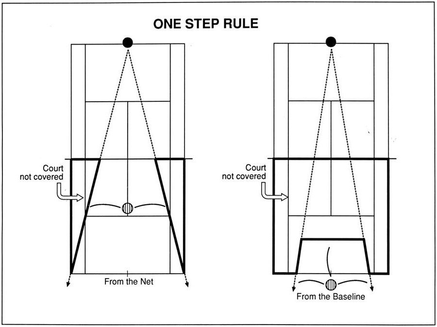
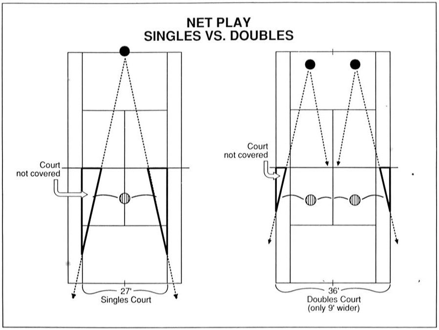
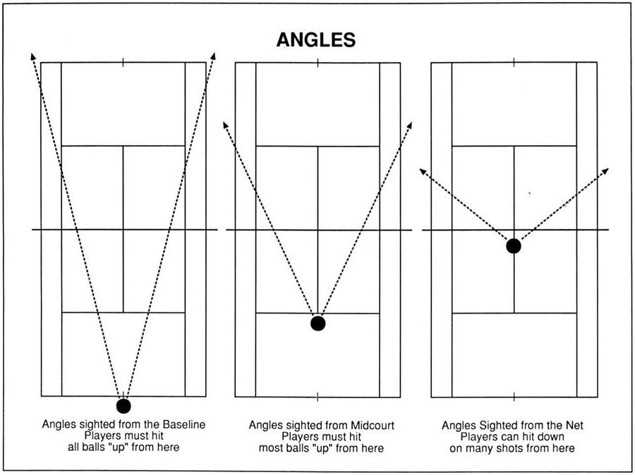
HIỂU VỀ CÁC GÓCUNDERSTANDING ANGLES
Để hiểu rõ hơn vì sao chơi ở lưới có lợi nhất trong đánh đôi, bạn cần hiểu về các góc. Lần tới khi ra sân, hãy đứng ở đường cuối sân và dán mắt vào mép trên của lưới trước mặt. Từ đây, phần sân duy nhất nhìn thấy được ở phía bên kia sẽ là phần nhìn thấy bên dưới hoặc xuyên qua lưới. Nếu lưới được che kín hoàn toàn hoặc chắn hết tầm nhìn, bạn thậm chí sẽ không thể nhìn thấy đường cuối sân phía đối diện! Hãy giữ mắt trên mép lưới và chậm rãi bước về phía nó. Khi bạn đến gần lưới, hãy để ý phần sân bên kia bắt đầu mở rộng ra thế nào. Tiếp tục bước tới và phần sân dường như ngày càng rộng hơn. Lúc này bạn có thể bắt đầu nhìn xuống qua lưới mà không cần phải gian lận bằng cách nhìn xuyên qua nó để thấy sân. Đây là lý do những tay vợt hàng đầu trong môn này cố gắng lên lưới. Họ nhận ra rằng có nhiều sân hơn để họ đánh vào vì họ hiểu các góc của sân. Đánh đôi thực sự không phải là một lối chơi hiệu quả từ đường cuối sân vì ở đó không có cơ hội đánh bóng xuống; các góc của sân không cho phép điều đó.
To better understand why net play is most advantageous in doubles will require an understanding of angles. The next time you are on court, position yourself on the baseline and affix your eyes to the top of the net in front of you. From here, the only part of the court visible on the other side will be that which is seen under or through the net. If the net-was completely covered or blocked out, you wouldn't even be able to see the baseline on the opposing side! Keep your eyes on the top of the net and slowly walk in its direction. As you approach the net notice how the court on the other side begins to grow. Continue walking forward and the court seems wider and wider. You can now begin to look down over the net without having to cheat by looking through it to see the court. This is why the top players in the game strive to get to the net. They realize that there is more court for them to hit into because they understand the angles of the court. Doubles really isn’t an effective game from the baseline because there is no chance to hit down from there; the angles of the court don’t allow it.
Khi đội bạn hiểu về các góc, bạn sẽ có thể kiểm soát tốt hơn những điểm bóng mình chơi. Những quả bóng đánh rộng thường trở về rộng, còn những cú đánh xuống giữa sân thường dễ dàng được trả về giữa sân. Để ngăn chặn một đội đánh vượt qua tốt, chỉ cần giữ nhiều bóng hơn vào giữa sân của họ để tước đi các góc mà họ có thể đánh. Thành công tốt nhất của một người giao bóng rồi lên lưới thậm chí có thể chỉ đến từ việc giao tất cả bóng xuống giữa sân để buộc nhiều cú trả bóng hơn về giữa sân. Điều này cho người đứng lưới cơ hội cướp bóng (poach) dễ dàng hơn một chút vì nhiều bóng sẽ được trả về giữa sân chứ không ra xa ngoài tầm với của anh ta.
When your team understands angles, you will be able to take better control of the points that you play. Wide hit balls often come back wide, while shots played down the center of the court are readily returned down the center. To thwart a good passing team, simply keep more balls in the center of their court to take away the angles that they will be able to play. A serve and volleyer’s best success could even come by simply serving all balls down the center of the court to force more returns back down the center. This allows the net person the opportunity to poach a little more easily since more balls will be returned in the center of the court and not out wide of his reach.
Một góc khác cần cân nhắc là đứng ở đâu để đỡ giao bóng. Tư thế đúng nên ở giữa góc tạo bởi người giao bóng và ô giao bóng mà anh ta đang giao vào. Hãy vẽ một đường tưởng tượng giữa bạn và người giao bóng, và nó phải chia đôi ô giao bóng khi bạn ở đúng vị trí. Nếu không được chia đôi đúng cách, bạn có thể đang mời gọi một quả "ace" xuất hiện đấy!
Another angle important to consider is where to stand to return serve. A correct stance should be in the middle of the angle created by the server and the service box that he is serving into. Draw an imaginary line between yourself and the server and it should bisect the service box when you're in the correct position. If not properly bisected, you could be inviting an “ace” to appear!
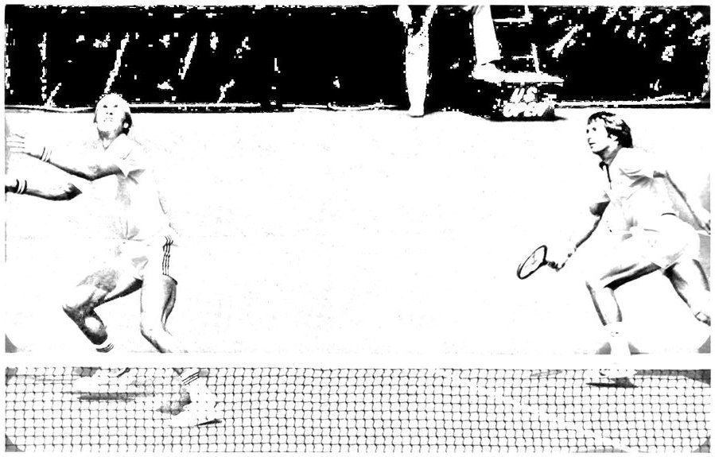
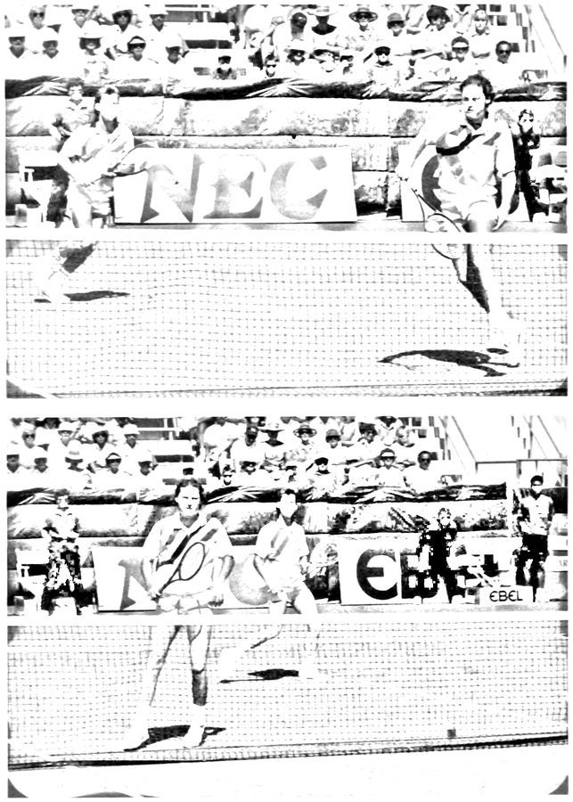
DI CHUYỂN CÙNG NHAUMOVING TOGETHER n
Những người chơi học được cách "di chuyển theo bóng" sẽ thường xuyên ở đúng vị trí để bọc lót cho những cú đánh của đối thủ. Bằng cách dịch chuyển theo những quả bóng đánh ra biên rộng, người chơi giảm bớt cơ hội để đối thủ đánh vượt qua họ xuống hành lang biên. Tuy nhiên, khi một người dịch chuyển còn người kia đứng yên, một lỗ hổng toang hoác sẽ mở ra ở giữa sân. Với những người chơi trình độ thấp, lỗ hổng này thường lớn đến mức có thể lái cả một chiếc xe tải chở hàng xuyên qua! Vì phần thấp nhất của lưới nằm ở giữa sân và hầu hết các cú đánh trong đánh đôi đều diễn ra ở đó, điều cực kỳ quan trọng là người chơi phải di chuyển cùng nhau để loại bỏ những lỗ hổng và khoảng trống có thể hình thành khi đứng sai vị trí.
Players who learn to “move with the ball” will find themselves in the correct position to cover their opponents’ hits more often. By shifting over with wide hit balls, players diminish their opponents’ chances of passing them up the alley. However, when one player shifts and the other remains stationary, a gaping hole develops down the middle of the court. With lower level players this hole is often so big that a freight truck could be driven through it! Since the lowest part of the net is located in the center of the court and most shots in doubles are played there, it is vitally important for players to move together to eliminate holes and gaps that can be created when positioned improperly.
Cách dễ hình dung nhất về sự di chuyển của đội bạn là tưởng tượng có một sợi dây thừng buộc giữa hai bạn. Khi một người bị kéo ra biên rộng để đánh một cú, người kia dịch chuyển một khoảng cách tương đương về phía giữa sân theo cùng hướng đó. Khi cú đánh hoàn tất và đồng đội của bạn trở về vị trí, bạn cũng trở về vị trí ban đầu của mình. Mẹo sợi dây này cũng nên được áp dụng cho sự di chuyển tiến và lùi của đội trong lúc thi đấu. Khi một người lùi lại để đỡ cú lốp bóng, cả hai đều nên lùi về để bọc lót. Và khi một người tiến lên lưới, cả hai nên cùng tiến lên như một đội.
The best way to visualize your team’s movement is to think that a rope is tied between you. When one of you is pulled out wide for a shot, the other shifts equal distance towards the center in the same direction. Once the shot is played and your partner recovers back to position, you will likewise recover your original position. This rope trick should also be applied to your team’s forward and backward movement during play. When one retreats for a lob, both should go back to cover it. And when one advances into the net, both should go in together, as a team.
CÂN BẰNG SÂNBALANCING THE COURT
Những đội học được cách chơi song song mạnh hơn những đội thích đội hình một người lên lưới / một người ở cuối sân thông thường. Vì sao? Có một vùng chéo sân rất lớn bị bỏ trống khi hai người chơi so le nhau, một người lên lưới và một người ở cuối sân. Đối phương có thể nhanh chóng tận dụng đội hình yếu ớt này bằng cách đánh những cú chéo góc vào khoảng giữa hai người.
Teams that learn to play parallel are stronger than those that prefer the common one up/one back formation. Why? There is a huge diagonal area left open when the players are staggered one up and one back. Opposing teams can quickly take advantage of this powerless formation by directing angled strokes between them.
Để cân bằng sân tennis một cách hợp lý, người chơi phải nhận biết những "vùng" được quy định và bọc lót cho chúng. Cũng như các hậu vệ ở tuyến dưới trong bóng bầu dục hay các tiền vệ ngoài trong bóng chày, người chơi đánh đôi dùng cách bọc lót theo vùng để định vị đúng đắn nhằm bao quát mọi quả bóng trong khu vực thi đấu. Khi một người lệch khỏi vị trí, điều quan trọng là người kia phải giúp bọc lót vùng không được phòng thủ.
To balance the tennis court properly requires that the players be aware of designated ‘‘zones” and supply coverage to them. Just like defensive backfielders in football and outfielders in baseball, doubles players use zone coverage to position themselves properly to cover all balls in the playing area. When one player gets out of position, it will then be important for the other to help cover the undefended zone.
Bóng thuộc về ai khi một cú lốp bóng vượt qua đầu một trong hai người đứng lưới? Ban đầu, đó là trách nhiệm của người mà quả bóng đã bay qua đầu. Tuy nhiên, nếu anh ta nhanh chóng xác định mình không thể tới được bóng và kịp thời báo đúng "Của bạn" cho đồng đội, thì quả bóng trở thành trách nhiệm của người đồng đội hỗ trợ. Điều này giả định rằng cú lốp bóng bay thẳng qua đầu người đứng lưới, khiến cho việc đồng đội tiếp cận bóng từ phía bên tạo thành một góc đánh tốt hơn và một cú đánh dễ thực hiện hơn.
Whose ball is it when a lob gets over the head of one of the players at the net? Initially it is the responsibility of the person whose head the ball cleared. Howéver, if he is quick to decide he cannot get to it and properly communicates “Yours” to his partner in time, the ball becomes the responsibility of the assisting partner. This is assuming that the lob cleared the net person’s head in a straight line which makes the partner's approach to the ball from the side a better angle and an easier shot to play.
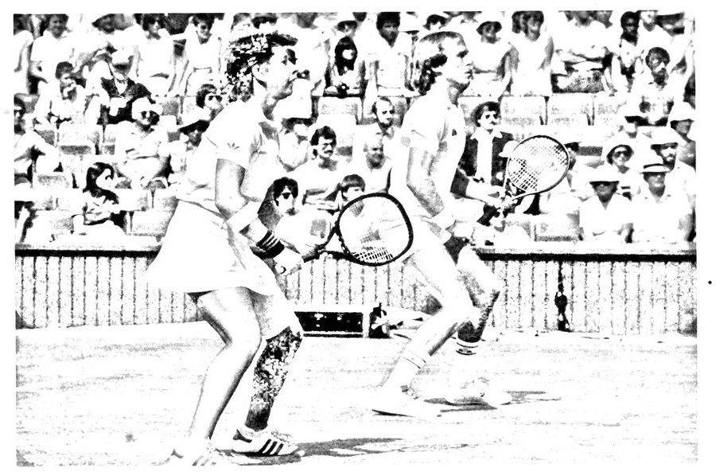
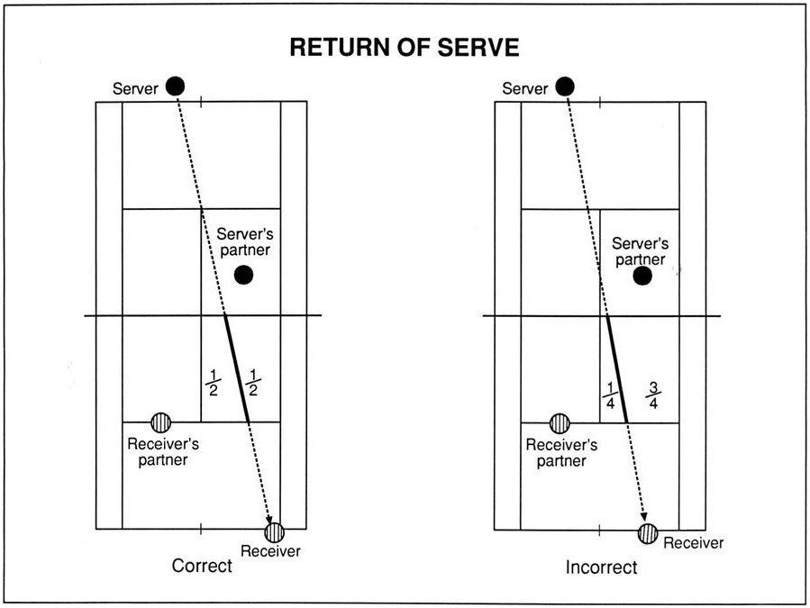
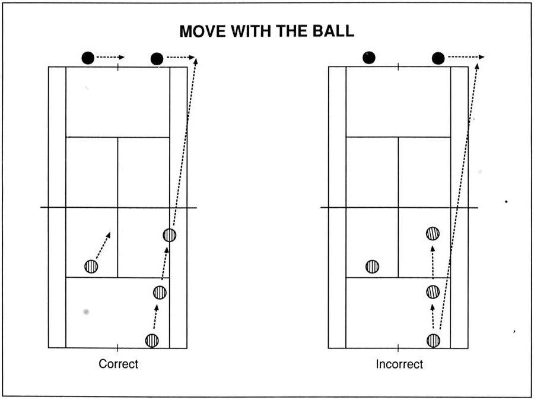
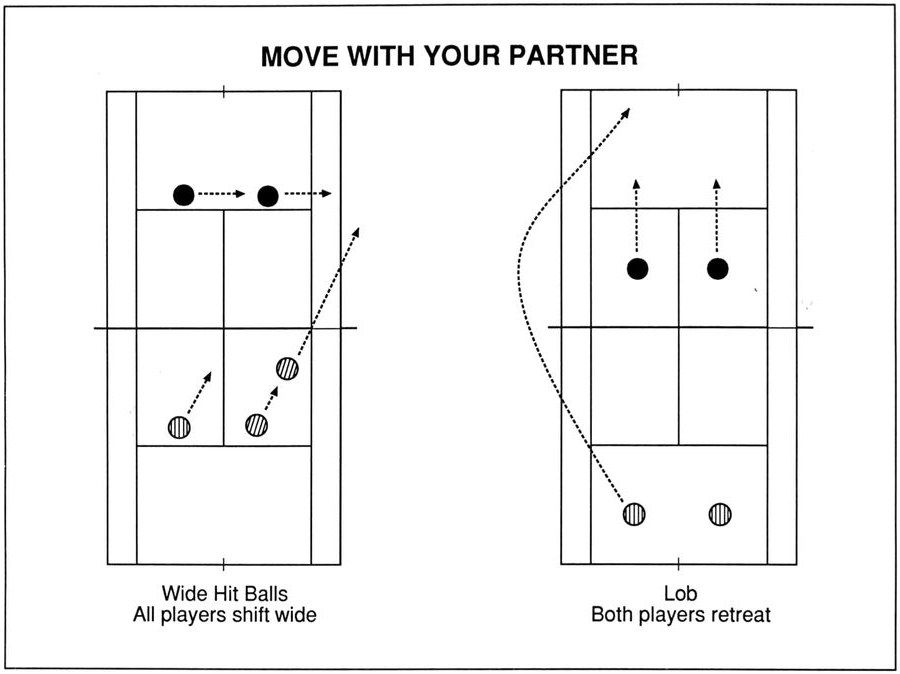
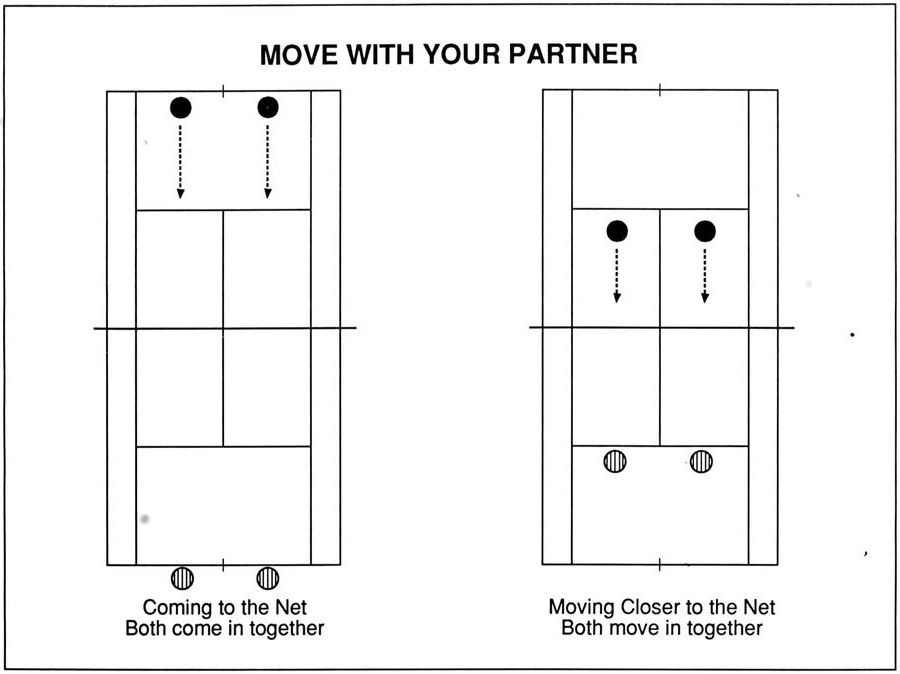
Đội hình chữ I là mối đe dọa mất cân bằng lớn nhất đối với người chơi, và các đội nên học cách đề phòng nó. Đội hình chữ I xảy ra khi một người đứng phía trước người kia và nửa sân còn lại bị bỏ trống. Khi một người dịch chuyển sang nửa sân bên kia để đuổi theo một cú bóng, người đồng đội phải giữ cho đội được cân bằng bằng cách di chuyển sang bọc lót phần sân bị bỏ trống. Khi hiệu lệnh "Đổi vị trí" được báo nhanh, người chơi nhận ra vùng nào mình phải bọc lót và di chuyển để cân bằng sân.
The “I Formation’ is the single biggest imbalancing threat to players, and teams should learn to guard against it. The “I Formation” occurs when one player is positioned in front of the other with the other half of the court left vacant. When one players shifts his position to the other side of the court going after a shot, the partner must keep the balance of the team intact by moving over to cover the side left vacant. When “Switch” is quickly communicated, players then recognize which zone they are to cover and move to balance the court.
ĐỌC BÓNGREADING THE BALL
Để định vị tốt nhất cho những cú đánh mà bạn sắp thực hiện, hãy học cách "đọc bóng". Nó thường sẽ cho bạn biết liệu đội bạn nên tiến lên vào thế tấn công hay ra hiệu cho bạn lùi về phòng ngự ngay cả trước khi đối thủ đánh bóng. Bằng cách đoán trước điều quả bóng sẽ buộc đối thủ phải làm, bạn có thể có được tầm nhìn xa quý giá để định vị tốt nhất hết lần này đến lần khác.
To best position yourselves for the shots you are about to play, learn to ‘‘read the ball.” It will often let you know if your team should move forward into an offensive position or signal you to retreat in defense even before your opponent strikes the ball. By anticipating what the ball will force your opponent to do, you can gain valuable foresight to best position yourselves time and time again.
Những quả bóng được đặt sâu trong sân về phía đối thủ, đánh mạnh vào họ hoặc với nhiều xoáy, nên báo hiệu rằng bạn đang kiểm soát điểm bóng và cho phép bạn thoải mái tiến lên nắm quyền kiểm soát lưới. Những quả bóng đặt thấp dưới chân đối thủ, vào đối thủ yếu hơn, hoặc vào những cú đánh yếu hơn sẽ là dấu hiệu cho đội bạn thay đổi vị trí để tận dụng điều có khả năng xảy ra. Ngược lại, những cú đánh ngắn, yếu hơn, hoặc đánh nhẹ sẽ trao quyền kiểm soát điểm bóng cho đối thủ. Cách phòng ngự tốt nhất của bạn có thể là lùi ra sau hoặc chuẩn bị tinh thần cho một cú đánh tấn công dự đoán trước đang hướng về phía bạn.
Balls placed deep in the court to your opponents, hit hard to them or with lots of spin should indicate your control over the point and allow freedom to move in and take command of the net. Balls placed low to opponents’ feet, to the weaker opponent, or to weaker strokes will be the sign for your team to alter its position to take advantage of what is likely to occur. On the other hand, short, weaker, or softly played strokes offer control of the point to your opponents. Your best defense could be to retreat backward or to brace yourself for an anticipated offensive shot coming your way.
Hãy luôn để mắt tới quả bóng đối với mọi tay vợt trên sân. Hãy quan sát những tác động nó gây ra cho từng người và cách mỗi người phản ứng với vô số tốc độ, độ nảy và điểm rơi khác nhau của nó. Sự nhận biết của bạn về cách quả bóng chi phối những người trên sân chắc chắn sẽ đưa bạn tiến gần hơn tới việc trở thành tay vợt đánh đôi thông minh mà bạn muốn trở thành.
Keep your eye on the ball to all players on the court at all times. Watch the effects it has on each and how everyone reacts to its many varying speeds, bounces, and placements. Your awareness of how the ball controls those on the court will certainly advance you toward becoming the intelligent doubles player that you want to be.
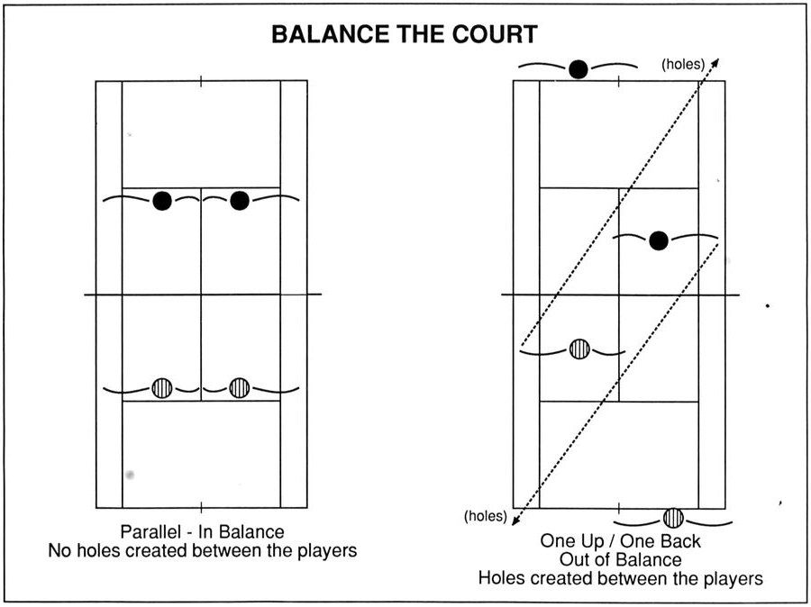
Ngay cả khi đồng đội bạn đánh bóng, hãy giữ mắt trên bóng suốt cho đến khi nó tới vợt anh ấy (hãy liếc nhanh qua vai nếu anh ấy đứng sau bạn). Bạn sẽ phản ứng tốt hơn với cú đánh mà anh ấy sắp thực hiện một khi bạn học được cách đoán trước điều quả bóng sẽ khiến đồng đội bạn làm. Khi bạn thấy quả bóng đã cho phép anh ấy thực hiện một cú đánh hiệu quả hơn, hãy tiến lên trước khi đối thủ có cơ hội đáp trả. Bạn sẽ có thể tận dụng vị trí được tạo ra khi đọc bóng thành công. Bạn cũng sẽ khám phá ra rằng mình tự động trở nên nhanh nhẹn hơn nhiều vì bóng dường như dễ với tới hơn khi bạn luôn ở đúng vị trí lý tưởng.
Even as your partner strikes the ball, keep your eyes on it all the way to his racket (quickly glance over your shoulder if he is positioned behind you). You will better react to the shot he is about to play once you learn to anticipate what the ball will make your partner do. Once you see that the ball has allowed him to make a more effective shot, move in before your opponents have a chance to reply. You'll be able to take advantage of the position created when successful at reading the ball. You'll also discover that you'll automatically become much quicker as balls will seem easier to reach when you are ideally positioned each time.
ĐIỀU CHỈNH VỊ TRÍ CỦA BẠNADJUSTING YOUR POSITIONS
Một trong những sai lầm phổ biến nhất trong đánh đôi là người chơi cứ giữ nguyên một vị trí trên sân mỗi lần thi đấu. Họ thường đứng giao bóng từ đúng một chỗ, đỡ giao bóng từ chỗ ưa thích mỗi lần, và khi đồng đội giao bóng hay đỡ giao bóng, họ lại neo mình vào vị trí quen thuộc hết lần này đến lần khác. Điều những người chơi này cần hiểu là không phải mọi đối thủ đều giống nhau, và những vị trí khác nhau mà họ đảm nhận trên sân đánh đôi nên thay đổi tùy theo từng đối thủ khác nhau mà họ gặp.
One of the most common mistakes in doubles is for players to assume the same position on the court each time they play. They routinely stand to serve from the same spot, receive from their favorite place each time, and as their partner serves or receives the ball, anchor themselves in their established location time and time again. What these players need to understand is that not all players are alike, and the various positions they are assuming on the doubles court should vary with the different players they compete against.
Những người mới chơi đánh đôi học được chỗ đứng trên sân để ở đúng vị trí cho từng vai trò mà họ đảm nhận. Ở vai trò người giao bóng, người chơi thường được dạy đứng sau đường cuối sân và ra ngoài biên rộng hơn so với trận đánh đơn, vì giờ họ đã có đồng đội giúp bọc lót nửa sân còn lại. Đồng đội của người giao bóng đứng khoảng giữa ô giao bóng ở lưới. Người đỡ giao bóng đứng ở phía đối diện trên đường cuối sân (hoặc lùi lại một bước phía sau), còn đồng đội của người đỡ giao bóng đứng ở giữa vạch giao bóng thuộc ô giao bóng bên cạnh. Từ đây họ được dạy chơi trận đấu, và thường thì từ đây họ cứ tiếp tục chơi như vậy... suốt cả cuộc đời!
Beginners of the game of doubles learn where to stand on the court to be properly positioned for each role they are to play. As a server, players are generally taught to stand behind the baseline out wider than they would in a singles match, since they now have a partner to help cover the other half of the court. The server's partner is stationed approximately in the center of the service box at the net. The receiver is on the opposite side on the baseline (or a step behind it) while the receiver's partner stands on the middle of the service line at the adjacent service box. From here they are taught to play the game and quite often, from here they continue to play the game ... for a lifetime!
Thực sự không có một vị trí đúng duy nhất nào trong đánh đôi. Những vị trí tốt nhất trong đánh đôi sẽ đến nhờ việc dùng cái đầu của bạn! Đừng cố định ở cùng một chỗ để giao bóng mỗi lần, hãy thay đổi vị trí để có được góc đánh và kết quả tốt nhất có thể. Ở vai trò người đỡ giao bóng, vị trí của bạn phần lớn sẽ do vị trí và khả năng của người giao bóng quyết định. Hãy phân tích cú đánh của đối phương để tìm ra điểm lý tưởng để đỡ giao bóng. Còn khi là đồng đội của người giao bóng và của người đỡ giao bóng, hãy tiến lên khi thời điểm đòi hỏi sự tấn công và lùi về khi chơi phòng ngự. Tuy nhiên, hãy học cách tránh việc cứ "cắm trại" mãi ở cùng một chỗ mỗi lần.
There is really no one right position in doubles. The best positions in doubles will come through using your heads! Don't settle in the same place to serve each time, alter your positions to get the best angles and results possible. As a receiver, your position will most likely be dictated by the server's position and ability. Analyze her stroke to discover the ideal spot from which to receive. As the partner of the server and receiver, move in when the time necessitates aggression and move back when playing defense. Learn to refrain, however, from simply “camping out” in the same place each time.
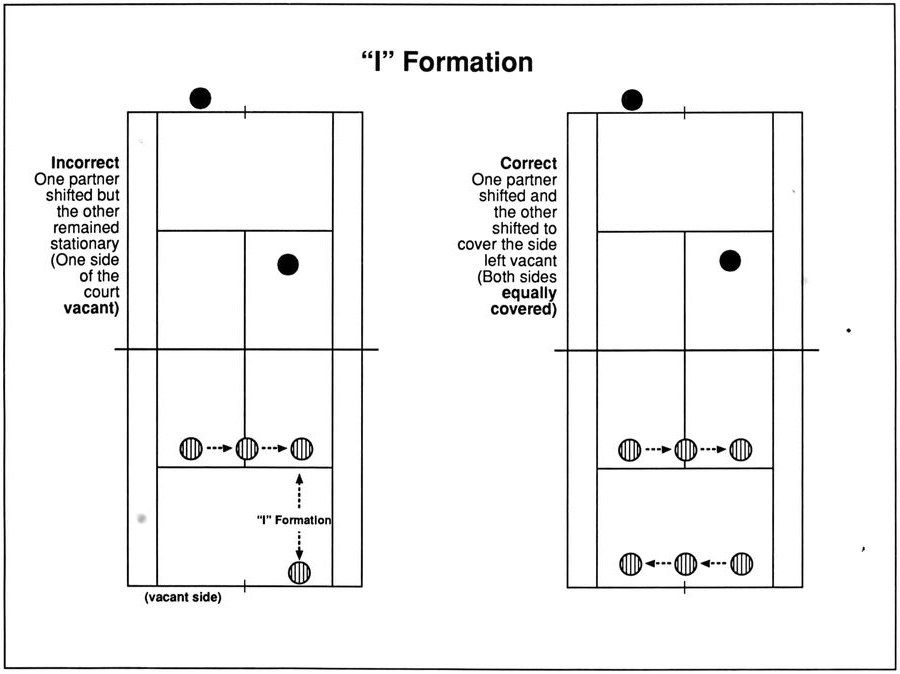
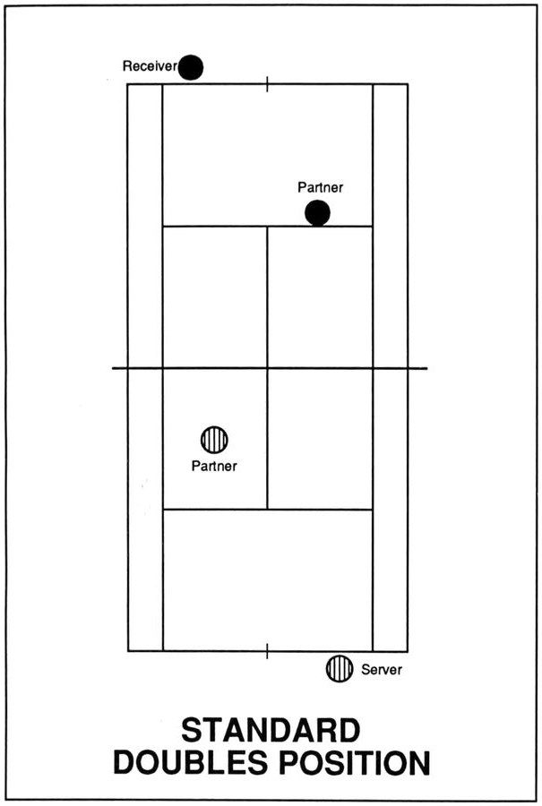
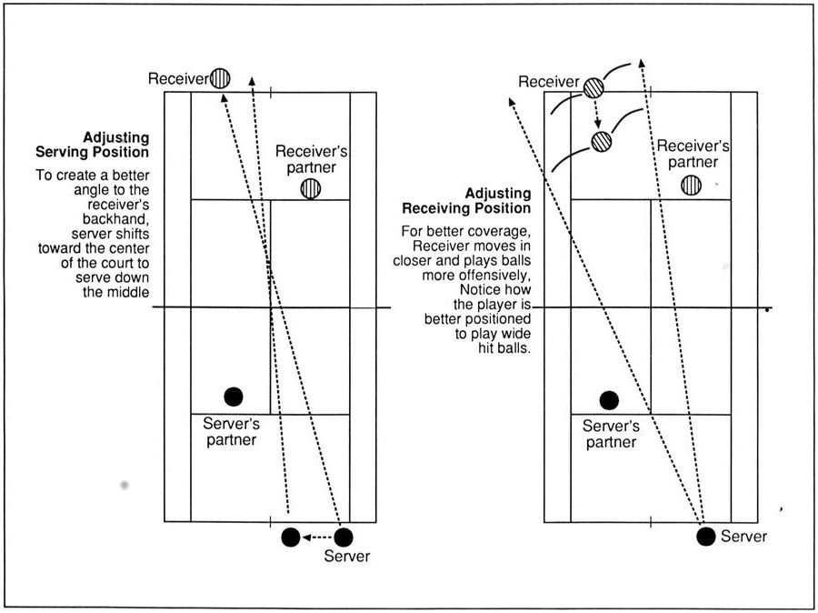
Những người giao bóng gặp khó khăn khi giao bóng hiệu quả xuống giữa sân vào bên trái (backhand) hay bên yếu của người đỡ giao bóng nên đứng gần vạch giao bóng giữa sân hơn nhiều khi giao bóng. Họ không cần lo lắng quá nhiều về việc bọc lót nửa sân của mình vì cú trái tay đánh chéo sân kiểu inside-out hay ngược hướng chéo sân (bên yếu) là cú đánh cực kỳ khó để đối thủ làm chủ.
Servers having a difficult time playing effective serves down the middle to receivers’ backhands or weaker strokes should position themselves much closer to the center service mark when serving. They need not worry so much about covering their side of the court since an inside-out or reverse crosscourt backhand (or weak side) stroke is an extremely difficult shot for their opponents to master.
Người đỡ giao bóng cũng nên tìm cách thay đổi vị trí bằng cách tiến vào sát phía trong đường cuối sân càng nhiều càng tốt. Thông thường người ta thấy người chơi đỡ giao bóng từ một vị trí kém hiệu quả, cách đường cuối sân vài bước về phía sau. Từ đó, người đỡ giao bóng không chỉ khó thực hiện những cú trả tấn công, mà còn tạo lợi thế cho người giao bóng khi có thể kéo người đỡ giao bóng ra khỏi vị trí bằng những cú giao bóng ra biên rộng. Những quả bóng "nảy vọt" với độ xoáy lên tốt cũng buộc người đỡ giao bóng đứng lùi quá xa phải trả bóng khó khăn khi họ chật vật cố đánh bóng ở độ cao ngang vai. Khi người đỡ giao bóng tiến vào vài bước phía trong đường cuối sân, anh ta có thể bắt bóng sớm và trả bóng về sớm hơn, để đội giao bóng ít thời gian chuẩn bị hơn. Điều này đặc biệt đúng với những cú giao bóng hai. Khi người giao bóng đánh hỏng cú giao bóng một, đội đỡ giao bóng phải bắt họ trả giá! Đội đỡ giao bóng sau đó nên cùng tiến lên và gây áp lực lên đội giao bóng bằng cách lên lưới trước họ. Chiến thuật này thường làm tăng số lần giao bóng hỏng hai lần (double fault) khi người giao bóng cố chấm dứt "nỗ lực chiếm lưới" bằng cách giao bóng sâu hơn hoặc mạnh hơn mức anh ta cảm thấy thoải mái.
Receivers should also look to alter their positions by moving in as close inside the baseline as they can. Normally players are seen receiving from the ineffective location several steps behind the baseline. From here, not only is it more difficult for receivers to make offensive returns, but it also gives the server the advantage of being able to pull the receiver out of position on wide hits. Balls that “kick” with good topspin also force difficult replies from receivers positioned back too far as they struggle, attempting to play the ball at shoulder height. When the receiver moves in several steps inside the baseline, he can take the serve early and send it back sooner leaving the serving team less time to prepare for it. This is especially true for second serves. When the server misses the first serve, the receiving team must make them pay for it! The receiving team should then move in together and pressure the serving team by beating them to the net. This strategy will often increase the number of double faults as the server attempts to end the “net takeover attempt” by serving deeper or more powerfully than he feels comfortable with.
Người đứng lưới thường điều chỉnh vị trí khi nhìn thấy những cú bóng đã được đánh ra. Họ bước về phía hành lang biên khi bóng được đánh ra biên rộng và về phía giữa sân khi bóng được đánh xuống giữa sân. Họ tìm cách tiến vào nhiều hơn khi không có những tình huống lốp bóng và lùi lại một chút để phòng thủ trước cú lốp khi nó được sử dụng thường xuyên. Họ thay đổi mức độ căng của mình khi ở tư thế sẵn sàng để phù hợp với tốc độ của trận đấu. Thậm chí họ sẽ thay đổi hoàn toàn vị trí đứng bằng cách nhập chung với đồng đội ở đường cuối sân nếu chiến thuật của họ đòi hỏi một phương án phòng ngự như vậy.
Net partners normally adjust their positions upon seeing what shots have been played. They step toward the alley on wider hit shots and toward the center on balls played down the middle of the court. They look to move in more when nonlobbing patterns of play exist and back up slightly to shield against the lob when it is being used frequently. They alter their level of intensity when in the ready position to match the speed of the game being played. They will even completely change the location of their stance by joining their partner on the baseline should their strategy necessitate such a plan of defense.
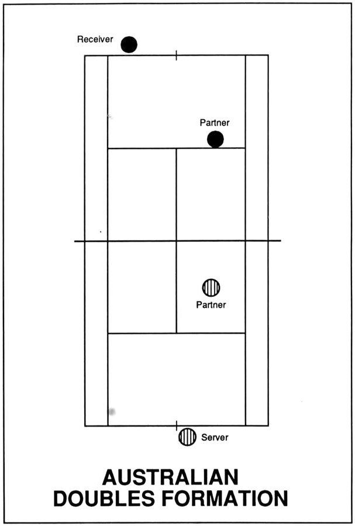
ĐÁNH ĐÔI SÁNG TẠOCREATIVE DOUBLES q?
Thường thì một sự thay đổi đội hình chính là toa thuốc mà bác sĩ (tức HLV chuyên nghiệp ở địa phương) kê, và có thể được dùng để xoay chuyển hoàn toàn cục diện trận đấu. Một khi những kiểu đánh đã được hình thành và các xu hướng đã lộ ra, hãy tìm cách thay đổi chúng và nắm quyền kiểm soát trận đấu bằng việc thay đổi vị trí của đội bạn. Đó rất có thể chính là chiến thuật cần thiết để đưa đội bạn trở lại con đường chiến thắng.
Often, a change in formation is exactly what the doctor (local pro) ordered and can be used to turn a match completely around. Once patterns of play have been established and trends discovered, look to alter them and take control of the play by making changes to the positions of your team. It just might prove to be the strategy needed to get your team back on the winning track.
Đánh đôi kiểu Australian là một công cụ tuyệt vời để "làm mất thăng bằng" đối thủ. Người giao bóng sẽ đứng gần vạch giao bóng giữa sân phía sau đường cuối sân, trong khi đồng đội dịch chuyển sang đứng ở ô giao bóng bên kia. Với đội hình mới này, cú đánh chéo sân ưa thích của người đỡ giao bóng bị lấy đi và buộc anh ta phải thực hiện cú trả bóng dọc biên khó hơn. Đây là cách hiệu quả để khiến đối thủ mất thăng bằng bằng việc trộn lẫn các kiểu đánh và buộc họ phải trả bóng trong thế không thoải mái. Một khi họ đã quen và cảm thấy "vào gu" khi chơi với đội bạn ở vị trí mới này, hãy đổi về vị trí thường lệ. Hãy tiếp tục kiểm soát trận đấu bằng cách đổi qua đổi lại giữa vị trí thường lệ và đội hình Australian cho đến khi đối thủ hoàn toàn không thoải mái với lối chơi của họ.
Australian doubles is a great tool to use to ‘throw off’ your opponents. The server will stand close to the center service mark behind the baseline while his partner shifts to stand in the other sérvice box. With this new formation, the receiver's favorite crosscourt shot is taken away and he is forced to make the more difficult down-the-line return. This is an effective way to keep your opponents off balance by mixing up the play and forcing them to make uncomfortable returns. Once they settle in and feel “grooved” playing against your team in this new position, switch back to your regular position. Continue your control of the match by switching back and forth from your regular to Australian positions until your opponents are completely uncomfortable with their play.
Khi mọi cách đều thất bại và đội bạn thấy mình sa sút trầm trọng, hãy thử đổi bên với đồng đội vào cuối set. Sự thay đổi mới này có thể chính là lời giải cho những khó khăn của đội bạn. Bạn thậm chí có thể đổi xem ai sẽ giao bóng trước trong set mới. Bằng cách học thử nghiệm nhiều hơn một chút, bạn có thể khám phá ra nhiều thành công hơn nhờ chính sự sáng tạo của đội mình!
When all else fails and your team finds itself faltering badly, look to switch sides with your partner at the close of the set. This new change might be the answer to your team’s woes. You could even change which partner serves first in the new set. By learning to experiment a little more, you might discover more success thorough your team’s own creativity!
TÓM TẮTSUMMARY
Hãy đưa bạn và đồng đội lên lưới. Đạt phong độ tốt nhất bằng cách tận dụng lợi thế của vị trí trên lưới. Hiểu cách tạo và sử dụng các góc đánh để chơi đánh đôi thành công. Di chuyển vào đúng vị trí cùng đồng đội bằng cách hình dung một sợi dây thừng buộc giữa hai bạn. Đừng để những lỗ hổng và khoảng trống xuất hiện do mỗi người di chuyển độc lập. Hãy cân bằng sân bằng cách chơi song song với nhau. Tránh đội hình chữ I như tránh dịch bệnh!
Get yourself and your partner up to the net. Reach your best by using the net position to your advantage. Understand how to get and use angles for successful doubles play. Move into the proper position with your partner by visualizing a rope tied between you. Don't let holes and gaps occur by moving independently of each other. Balance the court by playing parallel to one another. Avoid the “I Formation” like the plague!
Một số pha chơi thông minh nhất của bạn sẽ đến từ việc "đọc bóng" một cách hiệu quả. Hãy hiểu cách nó ảnh hưởng đến mọi người trên sân để đoán trước thành công vị trí đúng. Hãy thay đổi vị trí mà bạn và đồng đội đảm nhận bằng cách điều chỉnh nó theo những tay vợt khác nhau mà bạn đang thi đấu. Vị trí lý tưởng cho đội bạn sẽ được tìm ra bằng cách dùng cái đầu của mình để khám phá nó. Hãy sẵn sàng thay đổi hoàn toàn vị trí của mình nếu điều đó cần thiết để giành quyền kiểm soát trận đấu. Hãy "vận dụng mọi cách" bằng cách học cách phát huy sự sáng tạo của đội mình. Thành công của bạn có thể chỉ phụ thuộc vào điều đó!
Some of your most intelligent play will come from effectively “reading the ball.’”’ Learn how it affects everyone on the court to successfully anticipate the correct position. Vary the position you and your partner assume by adjusting it according to the various players you're competing against. The ideal position for your team will be found by using your heads to discover it. Be prepared to change your position completely should it be necessary to gain control of the match. “Pull out all the stops” by learning to bring out your team’s creativity. Your success might just depend on it!
Đạt Kết Quả Ổn Định
LỐI ĐÁNH AN TOÀN NẰM Ở NHỮNG ĐIỀU CƠ BẢN CỦA ĐÁNH ĐÔITHE PERCENTAGES ARE IN BASIC DOUBLES
Đội chơi theo lối an toàn (tỷ lệ thành công cao) trong đánh đôi sẽ có xác suất thuận lợi nhất để thi đấu tốt một cách ổn định. Những người chơi hiểu và áp dụng các nguyên tắc cơ bản của lối đánh đôi hợp lý sẽ liên tục có mặt trong vòng tròn những người thắng cuộc. Hãy hiểu những điều cơ bản của đánh đôi và áp dụng chúng vào lối chơi của chính bạn:
The team that plays the percentages in doubles will have the most favorable odds to perform well consistently. Players who understand and apply the basic principles of sound doubles play will repeatedly be in the winners’ circle. Understand the basics of doubles and apply them to your own games:
1. Tay giao bóng giỏi hơn giao bóng trước.
1. The Better Server Serves First.
Đội của bạn cần khởi đầu tốt, và nếu set đấu diễn ra sát nút, điều này cho phép tay giao bóng giỏi hơn giúp đội bạn thắng set đó ở giai đoạn cuối.
Your team needs to get off to a good start and if the set is close, this allows the better server to help your team win it at the end.
2. Giao bóng một vào sân với tỷ lệ cao.
2. Get a High Percentage of First Serves in.
Thống kê chứng minh rằng rất nhiều điểm hơn được thắng khi giao bóng một vào sân. Điều này cũng giúp duy trì áp lực lên đối thủ.
Statistics prove that many more points are won when first serves are hit in. It also helps to keep the pressure on your opponents.
3. Giao bóng xuống giữa sân.
3. Serve Down the Middle of the Court.
Hạn chế góc đánh của người đỡ giao bóng bằng cách buộc họ phải giữ cú đỡ giao bóng ở giữa sân. Điều này cũng tạo cơ hội để đồng đội của bạn cướp bóng (poach).
Limit the receivers’ angle by forcing them to keep the return in the center of the court. This will also provide the opportunity for your partner to poach.
4. Giữ game giao bóng!
4. Hold Serve!
Nếu đội của bạn không mất game giao bóng, bạn không thể thua trận! Đơn giản chỉ có vậy.
If your team doesn’t lose its serve, you can’t lose the match! It’s that simple.
5. Cố gắng đỡ giao bóng ổn định.
5. Strive for Consistent Returns.
Đưa mọi cú đỡ giao bóng trở lại vào cuộc chơi. Đừng biếu điểm cho đối thủ bằng những lỗi đỡ giao bóng của bạn. Hãy xử lý những cú đỡ giao bóng cẩn thận như bạn thường làm với giao bóng hai.
Get all returns back into play. Don’t give points away to your opponents with yeur return errors. Treat returns with the same care as you normally dowith second serves.
6. Giữ bóng ở giữa sân.
6. Keep the Ball in the Middle of the Court.
Lưới ở đó thấp hơn và nó lấy đi góc đánh của đối thủ.
The net is lower there and it takes away the angle of your opponents.
7. Lốp bóng khi còn do dự.
7. Lob if in Doubt.
Đó có thể là cách phòng ngự tốt nhất trước lối đánh hung hãn. Nó cũng có thể cũng giúp đội của bạn loại bỏ sai sót.
It can be your best defense against aggressive play. It can also help your team eliminate errors.
8. Chiếm lĩnh lưới.
8. Take Over the Net.
Hãy tận dụng vị trí ở lưới làm lợi thế cho đội bạn bằng cách đánh từ trên xuống từ đó để thắng điểm.
Use the position at the net to your team’s advantage by hitting down from there to win the points.
9. Đội mắc ít sai sót nhất sẽ thắng!
9. The Team with the Fewest Errors Wins!
Không phải những cú dứt điểm giúp thắng trận đấu, mà là lối đánh không mắc lỗi.
It's not winners that win matches, it’s error-free play.
Hãy thay đổi lối đánh đang thua, và đừng bao giờ đổi một lối đánh đang thắng.
Change a Losing Game and Never One that's Winning.
Hãy học cách thay đổi lối chơi của bạn để làm những gì cần thiết nhằm giành chiến thắng.
Learn to change your game to do what it takes to win.
SỬ DỤNG NHỮNG CÚ ĐÁNH ĐÁNG TIN CẬYUSING RELIABLE STROKES
Những quả bóng bị đập mạnh bằng những cú vung vợt xoay người thật lớn và nhắm sát các đường biên có rất ít cơ hội tạo ra kết quả ổn định trong quần vợt. Chính những cú vung vợt chậm rãi, đều đặn và tự tin mới mang lại thành công trên sân. Sự ổn định kết hợp với lối đánh hung hãn là công thức chiến thắng cần có trong đánh đôi.
Balls that are crushed with huge windup swings and aimed close to the lines have little chance of producing consistent results in tennis. [It is slow, steady, and confident swings that bring success on the court. Consistency blended with aggressive play is the winning combination needed in doubles.
Hai cú đánh khởi đầu điểm số trong quần vợt cho mọi đội là giao bóng và đỡ giao bóng. Điều đặc biệt quan trọng là phát triển những cú đánh đáng tin cậy với hai cú này. Những cú đánh ổn định và chính xác nhất mà đội bạn dùng để bắt đầu điểm thường sẽ mang lại kết quả ổn định nhất vào cuối. Hãy để đội kia đánh bạc bằng cách nhắm vào các đường biên và cố kết thúc điểm thật nhanh bằng những cú dứt điểm không cần thiết; bản thân các bạn hãy tránh lối chơi này.
The two strokes that begin points in tennis for every team are the serve and the return of serve. It is especially important to develop reliable strokes with these two. The most consistent and accurate strokes with which your team starts the point will usually score the most consistent results in the end. Allow the other team to gamble by going for the lines and trying to end points quickly with unnecessary winners; avoid this style of play yourselves.
Những cú giao bóng như đại bác nên để dành cho sân đánh đơn khi bạn muốn đạt tỷ lệ giao bóng một vào sân cao hơn. Khi giao bóng một liên tục rơi vào ô giao bóng, đối thủ sẽ bị ức chế. Tuy nhiên, khi giao bóng một không thành công, đối thủ thư giãn và trở nên tự tin với cú đỡ giao bóng hai của họ. Không chỉ áp lực được gỡ bỏ khỏi đối thủ khi giao bóng một của bạn hỏng, mà nó còn làm hao mòn và khiến cơ thể bạn mệt mỏi dần khi trận đấu kéo dài, vì bạn phải cố giao thêm rất nhiều bóng. Những người có cú giao bóng hai kiểu "cream puff" (quá nhẹ) nên cố xây dựng cú giao bóng hai tốc độ trung bình đáng tin cậy hơn, vừa hiệu quả hơn vừa ít bị tổn thương hơn.
Cannonball serves should be spared for the singles court in your attempt to record a higher percentage’ Of first serves in play. When first serves repeatedly land in the service box, opponents are left frustrated. However, when the first serve falters, opponents relax and become confident with their return of the second serve. Not only is the pressure off of your opponents when your first serve misses, but it also wears and tires your body as the match progresses since you must attempt to serve so many more balls. Players who have “cream puff’ second serves should strive to develop more reliable medium-paced ones which are more effective and less vulnerable.
Đừng ngại thử các cú đánh trong quần vợt, tuy nhiên hãy chơi trong khả năng của mình. Hãy chơi lối chơi mà bạn tự tin và có thể làm được. Tránh những canh bạc không cần thiết và những rủi ro vô lý trong lối chơi của bạn. Hãy nhớ rằng trong đánh đôi, sức mạnh đến sau điểm rơi và khả năng kiểm soát. Hãy dùng những cú đánh đáng tin cậy nhất của mình và đội bạn sẽ có được kết quả ổn định như bạn mong muốn.
Don't be afraid to attempt shots in tennis, however, do play within yourself. Play the game that you're confident in and capable of. Avoid unnecessary gambles and unreasonable risks with your play. Remember that power comes after placement and control in doubles. Use your most reliable strokes and your team will have the consistent results you desire.
ĐẶT BÓNG VÀO ĐIỂM RƠI ĐỂ THÀNH CÔNGPLACING THE BALL FOR SUCCESS
Mỗi cú đánh trong quần vợt đều phải được thực hiện với một mục đích trong đầu. Người chơi phải hình dung ra một mục tiêu trước khi đánh bóng để đạt được thành công trong việc đặt bóng vào điểm rơi. Bóng không được đưa đi vô định khắp sân với hy vọng gặp may. Chúng được định trước, hay nói cách khác là được nhắm trước, bởi những người chơi tham gia. May mắn được tạo ra nhờ việc dùng trí tuệ trên sân quần vợt; hiếm khi nó đến một cách tình cờ.
Every shot in tennis should be hit with a purpose in mind. A target must be conceived in the player’s mind before a hit is made to achieve success with the placement of the ball. Balls aren't directed aimlessly about the court in hopes of good fortune. They are predetermined or predirected, if you will, by the players involved. Luck is then made through the use of intelligence on the tennis court; rarely will it happen by chance.
Những người chơi thông minh nhận ra đối thủ không thích những cú đánh nào. Họ phân tích từng động tác của đối phương bằng cách liên tục dò tìm điểm yếu. Một khi đã phát hiện ra, bạn có thể chắc chắn rằng bóng sẽ được khéo léo hướng tới những điểm yếu đó. Rõ ràng, những người chơi khôn ngoan như vậy hiểu và kiểm soát được bóng, nhưng họ còn đưa lối chơi của mình lên một tầm cao mới. Họ đã học được cách phát hiện và khai thác điểm yếu của đối thủ.
Smart players realize which shots their opponents don’t like. They analyze their every move by constantly probing for weaknesses. Once they've discovered them, you can bet the ball will be skillfully directed to these weaknesses. Obviously, such clever players understand and have control of the ball but they've taken their games another level. They have learned to uncover and exploit weaknesses in their opponents.
Trí óc của bạn, vốn như một chiếc máy tính, có thể được lập trình để nghĩ trước vài nước đi, giống như một kỳ thủ cờ vua. Khi đã lên kế hoạch trước cho điểm đến của các cú đánh, trí óc bạn sẽ tránh được những lo lắng thường gặp như "Giờ nên hướng bóng đi đâu?" trong khi thi đấu. Một khi điểm yếu của đối thủ đã được phát hiện và bạn cùng đồng đội đã lên chiến thuật phù hợp, việc hướng bóng tới đó một cách tự động và có chủ đích sẽ dễ dàng hơn. Nếu sau đó phát hiện thêm điểm yếu mới, hãy cùng đồng đội khởi động lại kế hoạch và lập trình lại trí óc cho một phương án tấn công mới. Những mục tiêu mới phải được lập trình vào suy nghĩ của bạn để bạn và đồng đội sẵn sàng đặt bóng một cách chiến lược và tự động vào những điểm đích đó trong khi thi đấu.
Your mind, the computer that it is, can be programmed to think out several moves in advance much like a chess player. With advance planning of where your shots will go, your mind will avoid common worries like “Where should the ball be directed now?” during match play. Once your opponents’ weaknesses have been discovered and you and your partner have planned your strategy accordingly, it will be easier to direct the ball there automatically and with intention. If new weaknesses are later discovered, set your plan once again in motion with your partner and reprogram your minds for a new plan of attack. New targets must be programmed into your thoughts so you and your partner will be prepared to place the ball strategically and automatically at those targets during play.
KHÔNG CÓ CÚ ĐÁNH NÀO DỄ DÀNGTHERE ARE NO EASY SHOTS
Sự khác biệt về trình độ giữa các tay vợt thường được đo không phải bằng những cú đánh của họ mà bằng khả năng (hay sự bất lực) xử lý hiệu quả những "cú đánh dễ". NHỮNG LỖI TỰ ĐÁNH HỎNG SẼ GIẾT CHẾT BẠN! Chúng nhằm phá hỏng lối chơi của mọi tay vợt và khá nguy hại như ung thư một khi chúng tấn công. Cách phòng ngự tốt nhất của bạn trước điều này là mài sắc sự tập trung cũng như nhận thức về những gì đang diễn ra trên sân quần vợt. Đừng để những lỗi thông thường hủy hoại lối chơi của bạn. Chúng sẽ giúp bạn tự đánh bại chính mình nếu bạn để chúng làm vậy.
The difference in the levels of tennis players is often measured not by their strokes but rather by their ability (or inability) to handle the “easy shots” effectively. UNFORCED ERRORS KILL! They are out to ruin every tennis player's game and are quite cancerous once they attack. Your best defense against this is to sharpen your concentration as well as your awareness of what is taking place on the tennis court. Don't let routine errors destroy your game. They'll help you beat yourself if you let them.
Những người chơi trong các trận đánh đôi thường thi đấu với cường độ và sự hăng hái của những chiến binh đầy sinh lực. Họ lao khắp sân và thách thức bản thân với vô vàn nhiệm vụ khó khăn mà họ đối mặt. Họ thường vươn lên đúng lúc khi được yêu cầu, nhưng đồng thời cũng có thể lơi lỏng phòng ngự khi thử thách trở nên kém hấp dẫn. Bất kỳ ai từng chơi môn này đều đã trải qua một dạng mất tập trung nào đó. Người chơi có xu hướng mất đi sự sắc bén chiến đấu khi cường độ bắt đầu tụt giảm và khát khao của họ thường cũng giảm theo. Những người chơi này có thể trông khá sắc bén khi trận đấu đòi hỏi, nhưng hãy để một lối chơi tẻ nhạt, ít đòi hỏi diễn ra và hãy xem chính những người chơi đó sa sút.
Players in the game of doubles often perform with the intensity and zest of spirited fighters. They charge about the court and challenge themselves to the many difficult tasks they confront. They will often rise to the occasion when called upon, but at the same time can relax their guard when the challenge becomes less exciting. Everyone who has ever played the game has experienced some form of concentration lapse. Players tend to lose their fighting edge when their intensity begins to lag and their desire usually diminishes along with it. These players might appear quite sharp when match play warrants it but let dull, less demanding play ensue and watch these same players plummet.
Nói chung, người chơi có xu hướng chơi quá căng thẳng và thường đánh hỏng khi vội vàng trong quá trình thực hiện cú đánh. Những người chơi quá căng thẳng này thường nhận ra rằng họ liên tục đánh hỏng những cú dễ vì cố gắng làm quá nhiều với chúng; nghĩa là cố làm nhiều hơn mức cần thiết với quả bóng. Ví dụ, những quả bóng ngon ăn (sitter) lơ lửng trên lưới chỉ cần đẩy nhẹ bóng vào khoảng sân trống để giành điểm. Nhưng những người chơi thiên về sức mạnh lại cố giết quả bóng bằng những cú vung vợt to khỏe. Họ sẽ thành công hơn nhiều trong trận đấu nếu học được cách cân đối nỗ lực với nhiệm vụ. Đừng làm quá nhiều với quả bóng — điều đó chỉ mang lại kết quả thất thường (đặc biệt với những cú dễ).
Players in general tend to play the game too tensely and often miss shots as they rush through them in the stroking process. These overly intense players often discover that they will repeatedly miss the easy ones as they attempt to overplay them; that is, attempt to do more with the ball than is necessarily required. Easy sitters, for example, hovering over the net, simply call for tapping the ball into the open court to win the point. Forceful players instead attempt to murder the ball with big powerful swings. They would have much more success in the game by learning to match the effort to the task. Don't overplay the ball-that only brings inconsistent results (especially with the easy shots).
Sự tập trung và cường độ nên được duy trì ở mức cao nhất có thể kiểm soát trong mọi cú đánh. Những cú đánh dễ hoặc thông thường cần được chú ý đặc biệt vì chính ở đây những lỗi tự đánh hỏng phát sinh. Hãy tránh lối chơi tùy tiện trong chính bản thân bạn và đội bạn. Nếu buộc phải mắc lỗi, hãy chắc chắn rằng lối đánh gây sức ép của đối thủ là nguyên nhân. Mọi người đều mắc sai lầm trên sân, nhưng bạn có thể hạn chế lỗi của mình bằng cách thực hiện mọi cú đánh với cùng mức độ tập trung cao độ. Bạn sẽ khám phá ra một lối chơi lành mạnh hơn một khi đã loại bỏ được quá nhiều lỗi tự đánh hỏng.
Concentration and intensity should be kept at the highest controllable level during all shots. The easy or routine shots should have special attention paid to them since it is here that unforced errors develop. Avoid casual play in yourself and your team. If you must err, make’sure that your opponents’ forcing play is the cause. Everyone makes mistakes on the court, but you can limit yours by attempting all shots with the same level of intense concentration. You will discover a healthier game once you've rid yourself of so many unforced errors.
HÃY DỨT ĐIỂM NHỮNG CÚ DỨT ĐIỂM!PUT AWAY THE PUT-AWYS!
Một trong những lỗi lớn nhất mà người chơi đánh đôi phạm phải là khi anh ta ở vị trí đáng mơ ước trên lưới, có thể thắng điểm, nhưng lại không tận dụng được. Không chỉ thường mắc sai sót ở những "bóng ngon ăn (sitter)" này (như chúng ta đã thấy), mà bóng còn bị đánh sai hướng thẳng trở lại phía đối thủ. Điều đó cho họ thêm một cơ hội thắng điểm và cũng làm giảm cơ hội của bạn có thêm một cơ hội vàng như vậy để tự mình thắng điểm!
One of the biggest sins a doubles player commits is when he is in an enviable position at the net able to win the point and then fails to capitalize on it. Not only are mistakes often made on these ‘‘sitters’”’ (as we've already seen), but balls are also incorrectly hit directly back to opponents. This offers them another shot at winning the point and it also diminishes your chances of having another such golden opportunity to win it yourself!
"Dứt điểm bóng" không giống với việc đánh một "cú kill shot" (cú sát thủ). Nó có nghĩa là đặt bóng một cách mượt mà và an toàn để thắng điểm một cách ổn định. Khi ở đúng vị trí trên lưới, bóng cao nên được hướng tới một trong ba nơi: 1) vào người đứng lưới; 2) vào khoảng giữa hai đối thủ; hoặc 3) đánh chéo góc rộng ra ngoài. Một sai lầm phổ biến của những người đứng lưới là gửi một cú vô-lê dứt điểm trở lại phía người đang chờ ở đường cuối sân. Vì người này ở xa bóng nhất, nên đương nhiên anh ta có nhiều thời gian phản ứng nhất. Người ở gần lưới hơn có ít thời gian phản ứng hơn nhiều, và do đó là mục tiêu lý tưởng để hướng bóng tới. Khi bóng được đặt dưới chân anh ta, anh ta khó có thể xử lý được bóng, chứ chưa nói đến xử lý tốt.
“Putting the ball away” isn’t the same as hitting a “kill shot.” It means placing the ball smoothly and safely to win the point consistently. When correctly positioned at the net, high balls should be directed one of three places: 1) at the net person; 2) between the two opponents; or 3) angled off wide. A common mistake among net players is to send a winning volley back to the waiting baseline player. Since this person is farthest from the ball, logically he has the most time to react to it. The person positioned closer to the net has far less reaction time and therefore is the ideal person to direct the ball to. When the ball is placed at his feet, it isn’t likely that he will be able to make any kind of play on it, much less a good one.
Khi đứng gần lưới hơn, bạn sẽ thấy việc dứt điểm bóng dễ dàng hơn nhiều. Những quả bóng cao cho bạn cơ hội đánh từ trên xuống sẽ xuất hiện thường xuyên hơn, và bóng cũng ít có khả năng rơi xuống chân bạn từ vị trí này. Khoảng 1/3 đến 1/2 phía trước của ô giao bóng là vị trí lý tưởng để đứng. Từ đây, bạn vẫn có thể che chắn cú lốp hiệu quả cũng như tiến lên quyết liệt để vô-lê ở phía trước.
By positioning yourselves closer to the net you will see it is much easier to put the ball away. High balls affording you the opportunity to hit down will be more common, and balls aren't as likely to get to your feet from here either. The front 1/3 to 1/2 of the service box is the ideal location to stand. From here you will still be able to cover the lob effectively as well as move forward aggressively to volley out in front.
Học cách dứt điểm những cú dứt điểm là điều quan trọng để nâng cao trình độ thi đấu của đội bạn. Hãy dùng toàn bộ chiều rộng sân để tạo ra góc đánh tốt nhất giúp thắng điểm. Hãy dùng sự an toàn và biên độ sai số để đặt bóng chính xác với khả năng kiểm soát. Hãy đánh bóng không phải về phía đối thủ mà tránh xa họ. Hãy làm như vậy bằng trí tuệ, không phải sức mạnh, để có những điểm rơi chiến thắng ổn định.
Learning to put away the put-aways is important to advancing your team’s level of play. Use the entire width of the court to create the best angle that wins the point. Use safety and margin of error to accurately place the ball with control. Hit the ball not to your opponents but away from them. Do so with intelligence, not power, for consistent winning placements.
TRÁNH LỐI CHƠI LÚC NÓNG LÚC LẠNHAVOIDING HOT/COLD PLAY
Bạn đã bao giờ trải qua một ngày mà mọi thứ bạn thử trên sân đều diễn ra tuyệt đẹp, và ngay ngày hôm sau thì chẳng có gì thành công? Điều này có thể được mô tả chính xác là quần vợt lúc nóng lúc lạnh — những màn trình diễn thất thường. Ai cũng có những ngày chơi tốt và ngày chơi tệ, tuy nhiên để trở thành đội giỏi nhất mà bạn có thể, cả hai bạn sẽ cần hiểu cách hạn chế những màn trình diễn "ngày tồi tệ" của mình.
Have you ever experienced a day when everything: you attempted on the court worked beautifully and the very next day nothing did? This can aptly be described as hot/cold tennis — inconsistent performances. Everyone has good and bad days with their play, however, to become the best team you're capable of will require both of you to understand how to limit your “bad day” performances.
Mắc lỗi là điều không thể tránh khỏi ở con người. Tuy nhiên, chỉ sau khi những lỗi được lặp đi lặp lại nhiều lần thì chúng mới trở thành sai lầm trong quần vợt. Những người học được từ lỗi của mình sẽ không tiếp tục lặp lại chúng. Họ cũng sẽ không trải qua nhiều "ngày xuống phong độ", vì trí óc họ ý thức được điều gì đang diễn ra trong khi thi đấu và họ có thể thực hiện những điều chỉnh cần thiết để sửa chữa lối chơi.
It is inescapably human to err. However, it’s only after errors are repeated again and again that they become mistakes in tennis. Players who learn from their errors won't continue to repeat them. They won't experience as many “off days’ either, because their minds are aware of what is occurring during play and they are able to make necessary corrective adjustments to their games.
Đánh đôi không phải là môn chơi của sức mạnh mà là sự sử dụng tốc độ một cách thông minh. Khi người chơi cố đánh "home run" trong mọi cú đánh, họ sẽ phát hiện ra hội chứng "được ăn cả ngã về không". Mặc dù Babe Ruth vĩ đại là một tay đập home run huyền thoại trong bóng chày, ông cũng giữ kỷ lục bị strikeout! Điều đó nói lên gì về sự ổn định của ông?!
Doubles is not a game of power but of intelligent use of speed. When players try to hit “home runs’ on every hit they will discover “hit or miss” syndrome. Although the great Babe Ruth was a legendary home run hitter in baseball, he also held the strikeout record! What does this say about his consistency?!
Khi một cặp đánh đôi học được cách bổ trợ cho nhau, họ có tấm khiên tốt nhất chống lại lối chơi lúc nóng lúc lạnh. Khi một người đang đánh hỏng và mắc lỗi, người kia cần chơi những cú an toàn hơn (tỷ lệ thành công cao) để bù đắp cho lối chơi kém của đồng đội. Những cú xuống hành lang biên, những cú bỏ nhỏ khó, hay những cú đánh bằng sức mạnh thô nên được tránh vào lúc này. Nhiệm vụ của người đồng đội là đưa đội trở lại đường thắng bằng cách đưa thêm vài quả bóng vào cuộc chơi và trong quá trình đó giúp đồng đội lấy lại nhịp điệu. Lối chơi này có thể chỉ cần thiết trong vài điểm hoặc có thể cả một trận đấu. Người chơi phải sẵn sàng điều chỉnh lối chơi của mình theo tình huống đòi hỏi và nhu cầu của đội.
When a doubles pair learns to be complementary they have the best shield against hot/cold play. When one is hitting errors and making mistakes, the other needs to play higher percentage shots to compensate for the partner's poor play. Alley shots, difficult drop angles, or strokes hit with brute strength should be avoided at this time. It is the partner’s duty to get the team back on the winning track by getting a few more balls into play and in the process help his partner get his rhythm back. This play might be required for only a few points or possibly an entire match. Players must be ready to adapt their game according to what the situation calls for and the neéds of the team.
Khi hai người trong một cặp có trình độ khác nhau, mỗi người sẽ có một nhiệm vụ để giúp đội thi đấu tốt một cách ổn định. Người chơi mạnh hơn hoặc đội trưởng nên nắm vai trò chỉ huy bằng cách di chuyển bao quát lưới nhiều hơn, gây sức ép lên đối thủ, và kết thúc điểm bằng những cú dứt điểm. Người chơi yếu hơn cũng có một nhiệm vụ quan trọng phải thực hiện. Anh ta lốp bóng nhiều hơn, cố gắng giữ bóng trong cuộc chơi một cách ổn định nhất có thể, và tuân theo kế hoạch chiến thuật do đội trưởng đề ra. Anh ta cố gắng đưa mọi bóng trở lại qua lưới và vào trong sân (chứ không phải vào lưới!) để mang lại cho đội cơ hội tốt nhất thắng những điểm mình chơi.
When the players of a tandem are of mixed levels, each will have a job to do to help the team perform well consistently. The stronger player or captain of the team should take charge by roving the net more, forcing the opponents, and ending the points with put-away shots. The weaker player also has an important task to perform. He’ lobs ‘more, is as consistent with keeping the balls in play as possible, and follows the tactical plan set by the captain. He attempts to get all balls back over the net and into the court (not into the net!) to give the team the best chance of winning the points they play.
Một cặp đấu yếu nhất khi hai người chơi bỏ qua việc phối hợp với nhau. Nếu người giao bóng bị bỏ mặc tự xoay xở mà không có sự hỗ trợ của người đứng lưới thì cơ hội thành công của anh ta rất ít. Khi một người chơi trải qua giai đoạn thi đấu kém và đồng đội không thể nhận ra hoặc gánh vác phần việc còn thiếu cho đội vào đúng lúc cần thiết này, thì họ còn hy vọng thắng bằng cách nào? Họ phải học cách bù đắp cho nhau, giúp đỡ lẫn nhau và phối hợp cùng nhau để tránh tình trạng thi đấu thất thường ở chính mình. Nếu lối chơi của đồng đội bắt đầu sa sút, đừng đổ lỗi cho anh ấy. Hãy nhận ra rằng lúc này đội cần sự giúp đỡ của bạn và hãy điều chỉnh lối chơi của mình để đưa đội trở lại thế chủ động. Chắc chắn sẽ có những lúc khác lối chơi của bạn chệch choạc và đồng đội sẽ là người cần giúp đội đi tới chiến thắng. Đừng tìm cách đổ lỗi cho đồng đội khi anh ấy gặp khó khăn, hãy tìm cách giúp anh ấy và giúp đội của bạn thi đấu tốt một cách ổn định.
A pair is weakest when the players neglect to work together. If a server is left to fend for himself without the help of the net person his chances of success are minimal. When a player experiences a period of poor play and his partner isn’t able to recognize or take up the slack for the team at this needed time, how will they ever hope to win? They must learn to complement each other, help one another, and work together to avoid inconsistent play in themselves. If your partner's game begins to falter, don’t blame him. Recognize that the team needs your help at this time and alter your game to get the team back in control. There will surely be other times when your game will flounder and your partner will be the one needed to help the team to victory. Don’t look to blame your partner when he is in trouble, look to help him and your team play well consistently.
NHỮNG CHIẾN THUẬT LINH HOẠTADAPTABLE STRATEGIES
Khi bạn và đồng đội cứ khăng khăng chơi cùng một lối chơi trước mọi đối thủ, rất có thể là trừ khi đội bạn bất bại, đội sẽ phải nhận phần thua của mình. Đội của bạn cần phải linh hoạt trong lối chơi để thắng đều đặn. Với một số đối thủ, lối chơi mà bạn và đồng đội thường dùng có thể lại chính là lối chơi tốt nhất để đánh bại họ. Tuy nhiên, với những đối thủ khác, nó có thể không phải là lối chơi đúng. Vì vậy, đội của bạn phải sẵn sàng chơi khác đi để giành chiến thắng. Những đối thủ khác nhau có những điểm yếu khác nhau, nên bạn và đồng đội sẽ cần điều chỉnh lối chơi để khai thác chúng ở từng đối thủ mà mình gặp.
When you and your partner insist on playing the same game against all opponents, chances are that unless your team is invincible it will record its share of losses. Your team needs to be adaptable in its play to win regularly. Against some opponents the game that you and your partner normally play just might be the best one to use in order to defeat them. However, against others, it might not prove to be the correct one. Your team, therefore, must be prepared to play differently in order to win. Different opponents have different weaknesses so you and your partner will need to alter your games to exploit them in each of the opponents you face.
Cách tốt nhất để khiến đối thủ mất thăng bằng là chơi một lối chơi khó đoán. Hãy để họ phải đoán già đoán non với nhiều loại cú đánh đa dạng. Nếu người đứng lưới bên đối phương đang cắt đứt những cú đánh chéo sân quen thuộc của bạn, hãy thay đổi bằng cách lốp bóng, đánh dọc biên, hoặc đánh chéo sân với góc hiểm hơn. Đừng để họ cảm thấy thoải mái với lối chơi của bạn.
The best way to keep your opponents off balance is to play a game that is unpredictable. Keep them guessing with a wide variety of shots. If the opposing net player is picking off your routine crosscourt shots, alter your hits by lobbing, hitting down the alley, or with sharper angles crosscourt. Don't let them get comfortable with your play.
Để thay đổi chiến thuật của đội, có thể bạn cần phải điều chỉnh vị trí mà bạn và đồng đội đang đứng, thay đổi hướng của điểm đích cho các cú đánh, hoặc thay đổi phong cách chơi (ví dụ từ tấn công sang phòng ngự). Dù trong trường hợp nào, bạn và đồng đội phải sẵn lòng thay đổi lối chơi để đáp ứng yêu cầu của những đối thủ khác nhau mà bạn sẽ gặp. Khả năng nhận ra chiến thuật nào là cần thiết để giành chiến thắng, cũng như sự cởi mở trong việc thay đổi lối chơi cho phù hợp, sẽ đóng vai trò lớn trong những thành công tương lai của đội bạn.
To change your team’s strategy might require you to alter the position you and your partner are playing, change the direction of the targets of your shots, or change your style of play (i e., offensive to defensive). Whatever the case, you and your partner must be willing to vary your games to meet the demands of the various opponents you will encounter. Your team’s ability to recognize what strategy is necessary to win, as Well as its openness to changing the game accordingly, will play a big role in the future successes of your team.
THÓI QUEN ỔN ĐỊNH TẠO NÊN LỐI CHƠI ỔN ĐỊNHCONSISTENT HABITS PRODUCE CONSISTENT GAMES
Những gì bạn và đồng đội làm thường xuyên sẽ cuối cùng định hình lối chơi mà mỗi người sẽ thể hiện. Cách bạn chuẩn bị cho trận đấu, những gì bạn nghĩ trong khi thi đấu, những cú đánh bạn thực hiện thường xuyên nhất, cũng như mức độ tập trung của bạn, tất cả đều tạo nên con người độc đáo của bạn. Thái độ của bạn cũng được quyết định bởi những thói quen mà bạn đã tạo dựng cho mình. Một khi học được cách làm chúng ổn định hơn, bạn sẽ phát hiện ra rằng lối chơi của bạn cũng sẽ trở nên như vậy.
What you and your partner do on a regular basis will ultimately establish the game you will each play. The way you prepare for matches, what you think about during play, the strokes you hit most often, as well as your level of concentration, all make you into the unique players you are. Your attitude is also determined by the habits you have established for yourselves. Once you learn to make them more consistent, you will discover that your play will become that way as well.
Hãy biến suy nghĩ tích cực trên sân thành thói quen. Phấn đấu đạt mức tập trung cao nhất bằng cách thư giãn và buông bỏ thường xuyên hơn. Hãy tin vào bản thân một cách đều đặn. Chuẩn bị đầy đủ cả về thể chất lẫn tinh thần để có kết quả ổn định. Mỗi lần hãy chơi lối quần vợt có kiểm soát vốn có trong bạn.
Make positive thinking on the court a habit. Strive to achieve your highest level of concentration by relaxing and letting go more often. Believe in yourselves on a regular basis. Prepare properly both physically and mentally for consistent results. Play the controlled game of tennis that is within you each time.
Một thói quen quan trọng khác cần phát triển trong lối chơi của bạn là trở nên kiên nhẫn hơn. Những người chơi kiên nhẫn hiểu rõ thế nào là chờ đợi đúng thời cơ. Đây thường là điều khiến các tay vợt trẻ thi đấu như "trẻ con". Họ thiếu kiên nhẫn trong các cú đánh và phong cách chơi, và kết quả là mắc nhiều lỗi vô nghĩa. Quần vợt là một môn chơi mèo vờn chuột và những người tham gia phải có khả năng chờ đợi đúng thời điểm để "giết". Quá sớm thì có thể khiến người chơi dễ mắc những lỗi không cần thiết. Vì đánh đôi là môn chơi được thắng hay thua nhờ sai lầm, việc chờ đợi đúng thời điểm (để tránh mắc lỗi) là một mối quan tâm quan trọng cho thành công của đội bạn.
Another important habit to develop in your play is to become more patient. Patient players understand what opportunistic waiting is all about. This is often what keeps junior players performing like “kids.” They lack patience in their strokes and style of play and as a result make many senseless errors. Tennis is a game of cat-and-mouse and the players involved must be able to wait for the right moment for the “kill.” Too early and it could leave players vulnerable to making unnecessary errors. Since doubles is a game won or lost on mistakes, waiting for the right moment (to avoid making errors) is an important concern for your team’s success.
Lối chơi của bạn sẽ ổn định tương xứng với những thói quen bạn tạo dựng cho mình. Nếu đội bạn đang phải nhận phần thua hoặc chơi kém, hãy nhìn vào thói quen của từng người chơi và của cả đội nói chung. Bạn có hài lòng với những gì mình thấy không? Nếu không, hãy cố gắng xây dựng những thói quen chiến thắng ở chính mình. Điều đó sẽ đòi hỏi nỗ lực từ phía bạn, nhưng nó sẽ đạt được nhờ sự kỷ luật và quyết tâm của đội bạn.
Your play will be as consistent as the habits you set for yourselves. If your team has been experiencing its share of losses or poor play, look to the habits of each player and the team as a whole. Are you happy with what you see? If not, try to develop winning habits in yourselves. It will take an effort on your part, but it will be attainable through your team’s discipline and determination.
TRỞ THÀNH MỘT NHÀ VÔ ĐỊCH NHÀM CHÁNBECOME A BORING CHAMPION
Tôi đã dạy vô số buổi học cho những người chơi "hào nhoáng" về cách trở nên nhàm chán hơn một chút trên sân đánh đôi. Dù đó là một sự thay đổi phong cách đột ngột, tất cả những người chơi này dường như đều trở thành những tay đánh đôi giỏi hơn nhiều một khi họ gạt bỏ được vẻ "hào nhoáng" của mình để tìm thấy lối chơi ổn định trong chính họ.
I've given countless lessons to “flashy” players on how to be a little more boring on the doubles court. Although it’s an abrupt change in style, these players all seem to become much better doubles players once they've shed their ‘“‘pizzazz’’ to find consistent play in themselves.
Những cú ace, những cú winner và những cú đánh lớn khác mang lại phần thưởng lớn trước mắt nhưng hiếm khi cho kết quả ổn định trong đánh đôi. Chính những cú đánh gào thét sát đường biên không biến người chơi thành nhà vô địch, mà là những quả bóng được đặt tốt ngày này qua ngày khác.
Aces, winners, and other big shots offer great short-term rewards but seldom consistent results in doubles. It’s not screaming shots off the line that make players into champions, it’s well-placed balls day in and day out.
Lần tới khi ra sân đánh đôi, hãy làm chậm lối chơi của bạn lại! Thư giãn... đừng vội vã chạy khắp sân. Hãy lên kế hoạch cho các cú đánh của mình bằng cách cho mỗi cú một biên độ sai số thoải mái, rồi thực hiện chúng một cách mượt mà và an toàn. Hãy để các cú đánh và bước chạy của bạn trôi chảy. Hãy loại bỏ những sai sót không do sức ép bằng cách kiểm soát bóng tối đa ở mỗi cú đánh bạn thực hiện. Hãy chơi những cú đánh có tỷ lệ thành công cao nhất. Hãy tránh xa những cám dỗ của sức mạnh, của việc đánh sát đường biên và những lối chơi anh hùng khác!
The next time you're out playing doubles, slow down your game! Relax .. . don’t rush about the court. Plan your strokes by allowing a comfortable margin for error on each and then execute them smoothly and safely. Let your strokes and your stride flow. Eliminate your unforced errors by getting the maximum ball control from each shot you attempt. Play strokes that offer the greatest percentage chance of success. Stay away from temptations of power, hitting lines, and other heroic play!
Hãy để lối chơi phô trương cho các ngôi sao đánh đơn. Hãy chậm lại và chơi một lối đánh đôi có kiểm soát. Khả năng của bạn và đồng đội trong việc thực hiện những cú đánh nhàm chán một cách đều đặn và giảm lỗi trong quá trình đó chính là điều biến bạn thành những nhà vô địch. Dù lối chơi của bạn không khiến bạn trông như những đối thủ đáng gờm, bạn sẽ thắng trận đấu một cách ổn định nhờ trí tuệ chứ không phải vẻ bề ngoài.
Leave the flamboyant play to the singles stars. Slow down and play a controlled game of doubles. You and your partners’ ability to make boring shots regularly and to reduce your errors in the process will be what makes you into champions. Even though your play will not make you look like tough opponents, you'll be winning matches consistently on your wits and not your appearance.
TÓM TẮTSUMMARY
Hiểu và chơi đánh đôi cơ bản có thể mang lại cho đội bạn kết quả ổn định. Hãy dùng những cú đánh bạn có thể tin cậy. Đừng thử những cú đánh phi thực tế mà bạn không cảm thấy thoải mái khi thực hiện. Hãy đặt bóng vào những điểm đích mà bạn và đồng đội cho là tốt nhất trong kế hoạch chiến thuật. Điều này sẽ giúp bạn tập trung vào việc nên hướng quả bóng tiếp theo đi đâu. Hãy chơi những cú dễ giống như bạn chơi những cú khó. Đừng để sự tập trung sa sút và lối chơi trở nên cẩu thả vì mắc những lỗi vô nghĩa với những cú đánh thông thường.
Understanding and playing basic doubles can bring your team consistent results. Use strokes you can rely on. Don’t attempt unrealistic shots you don’t feel comfortable making. Place the ball to the targets you and your partner have deemed best in your strategic planning. This will help keep you focused on where the next ball should be directed. Play the easy shots just as you would the difficult ones. Don’t let your concentration lapse and your play get sloppy by making senseless errors with the routine shots.
Một khi bạn đã ở vị trí có thể giành điểm, hãy làm điều đó bằng cách đặt bóng tránh xa đối thủ. Hãy hướng bóng xuống chân đối thủ gần nhất nếu bạn đối mặt với một quả bóng cao mà ít góc đánh khả dụng. Hãy học từ lỗi của mình để không tiếp tục lặp lại chúng. Tránh lối chơi thất thường bằng cách bổ trợ cho đồng đội. Hãy giúp đội bạn thi đấu tốt một cách ổn định bằng cách giúp đồng đội khi anh ta cần. Hãy thích nghi lối chơi của mình để phát triển chiến thuật chiến thắng cần thiết cho từng đội mà bạn đối đầu. Mỗi đội đều độc đáo và do đó cần một kế hoạch thi đấu riêng để đánh bại. Hãy ổn định trong thói quen để chơi tốt một cách ổn định. Hãy trở thành một đội đánh đôi nhàm chán, đội thắng đều đặn mà không cần vẻ hào nhoáng và chói lọi của những ngôi sao nhất thời.
Once you are in position to win the point, do so by placing the ball away from the opponents. Direct the ball to the closest opponent's feet ifyou are confronted with a higher ball with few available angles. Learn from your errors so you won't continue to repeat them. Avoid inconsistent play by complementing your partner. Help your team play well consistently by helping your partner when he is in need. Adapt your games to develop the winning strategy necessary for each team you play against. Every team is unique and therefore needs a unique game plan to defeat. Be consistent with your habits to play well consistently. Become a boring doubles team that consistently wins without all the flash and pizzazz that temporary stars possess.
Lợi Thế Ở Khu Vực Giữa Sân
GIỮ THẾ KIỂM SOÁTKEEPING THE CONTROL
Thường có ba cú đánh được thực hiện mỗi khi bạn và đồng đội tiến lên lưới từ vị trí cuối sân. Cú đầu tiên hoặc là cú giao bóng hay cú đỡ giao bóng mà bạn theo lên lưới phía sau, hoặc là một cú lên lưới (approach shot) thực hiện từ một pha đôi công ở nền sân. Cú đánh thứ hai thường được thực hiện trong hành trình lên lưới được gọi là "cú vô-lê đầu" hay cú mở đường. Cú đánh thứ ba là "cú vô-lê thứ hai" hay cú dứt điểm mà chúng ta hy vọng sẽ kết thúc điểm. Nếu bạn tiến lên lưới cực nhanh, tổng số cú đánh cần thiết thậm chí có thể giảm xuống còn hai. Cú mở đường có thể bị loại bỏ nếu bạn đã ở vị trí gần lưới hơn và có thể kết thúc điểm ngay ở lần vô-lê đầu tiên. Tuy nhiên, đây chính là nơi hầu hết các sai sót vô-lê xảy ra. Người chơi cố gắng kết thúc điểm quá nhanh, đặc biệt là khi họ không ở đúng vị trí để làm điều đó với kết quả ổn định.
Three shots are usually played each time you and your partner approach the net from the baseline position. The first is either a serve or return that you're following into the net behind or an approach shot played from a groundstroke exchange. The second hit usually made in your quest for the net is called a “first volley” or set-up shot. The third stroke is the “second volley’ or put-away shot that, we hope, ends the point. If you are extremely quick in your advance to the net, the total number of strokes necessary could even be cut to two. The set-up shot could be eliminated if you're already in a position closer to the net and able to end the point on your first volley attempt. However, this is where most volley mistakes are made. Players try to end the points too quickly, especially when they aren't in the proper position to do so with consistent results.
Khu vực giữa sân là vùng nằm ngay trước vạch giao bóng cho tới ngay sau nó. Vì từ vị trí này người chơi ở gần lưới hơn nhưng vẫn chưa ở trong "tầm đánh", vị trí này mang lại cho họ cảm giác làm chủ lưới sai lệch. Kết quả là nhiều sai sót xảy ra ở khu vực giữa sân hơn bất kỳ khu vực nào khác trên sân. Vì lưới dễ nhìn xuyên qua, có vẻ như người ta có thể đánh từ trên xuống từ vị trí này và kết thúc điểm nhanh hơn. Nếu lưới có một tấm vải sẫm màu che lại, bức tranh sẽ rõ ràng hơn nhiều; bóng vẫn phải được đánh "lên" từ đây để sang được bên kia một cách thành công. Tuy nhiên, nhìn chung con người luôn thích chọn con đường dễ dàng hay lối tắt để hoàn thành hầu hết công việc. Đây là nguyên nhân chính của hầu hết các sai sót ở lưới. Khi người ta cố gắng kết thúc điểm quá sớm, lối chơi trên lưới sẽ trở nên thất thường.
The midcourt is the area located just in front of the service line to just behind it. Since players are closer to the net from this location but still aren’t within “striking distance,” this position offers them a false sense of command of the net. The result is that more errors occur at the midcourt than any other area on the court. Since the net is easy to see through, it appears as though one can hit down from this location and end the point more quickly. If the net had a dark cloth covering it, the picture would be much clearer to see; the ball must still be hit “up” from here to reach the other side successfully. People in general, though, have always preferred to take the easy route or shortcut to accomplish most tasks. This is the primary cause of most errors at the net. When attempts are made to end the point too soon, inconsistent net play will result.
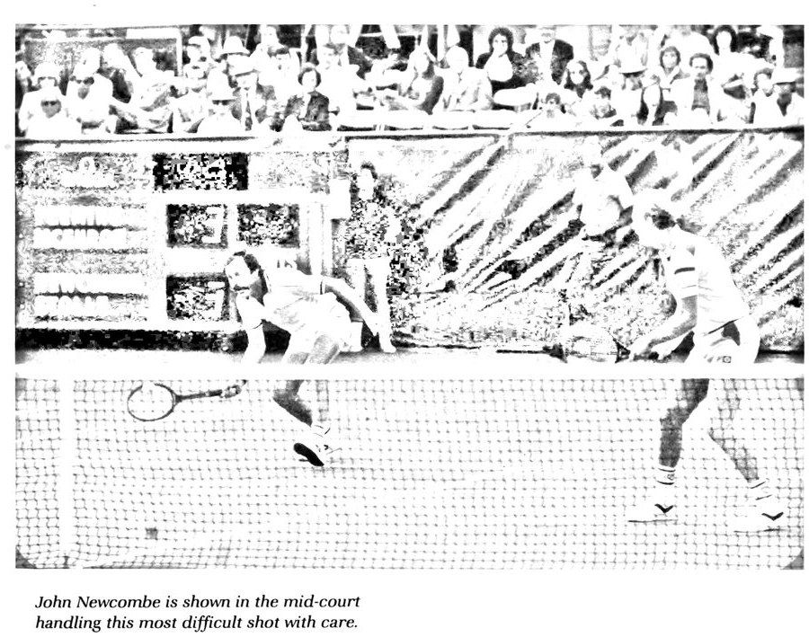
Vị trí giữa sân có thể được tận dụng làm lợi thế cho bạn nếu bạn hiểu mình cần làm gì ở vị trí then chốt này. Hãy giữ lợi thế hay thế chủ động, đừng cố thắng điểm ngay lập tức! Hãy tránh cố đánh những cú ăn điểm ở lần vô-lê đầu tiên trừ khi bạn đang ở đúng vị trí dứt điểm gần lưới. Hãy mở mặt vợt để nâng bóng cao hơn và tạo độ sâu tốt cho điểm rơi của cú đánh. Hãy đánh những cú an toàn (tỷ lệ thành công cao) từ đây, xuống giữa sân hoặc vào điểm yếu của đối thủ (trừ khi thấy một khoảng trống ở nơi khác).
The midcourt position can be used to your advantage by understanding what you need to do at this crucial location. Keep the advantage or control, don’t try to win the point outright! Stay away from attempting winning shots on your first volley unless you're in the correct put-away position close to the net. Open the face of your racket to lift the ball higher and gain good depth on the placement of your shots. Make percentage shots from here, down the center of the court or to the weaknesses of your opponents (unless an opening is seen elsewhere).
Về mặt chiến thuật, đây là nơi điểm số được dàn dựng. Giống như một đường kiến tạo trong bóng rổ, đây là pha bóng tạo tiền đề cho rổ hay những điểm thắng ở pha bóng tiếp theo. Khu vực giữa sân là nơi thế kiểm soát điểm thường được giành lấy hay đánh mất. Hãy học cách đặt bóng từ đây, đừng đánh mạnh! Hãy tiến gần lưới hơn để kết thúc điểm ở cú đánh tiếp theo. Đừng quá nóng lòng kết thúc điểm sớm hơn mức nên làm. Bạn sẽ phát hiện ra rằng khi kiên nhẫn với cú đánh chuyển tiếp này, bạn sẽ loại bỏ được nhiều sai sót mà hiện tại mình có thể đang mắc phải ở lưới.
Strategically, this is where the point is set up. Like an assist in basketball, it is the play that sets the basket or winning points up for the next play of the ball. The midcourt area is where control of the point is usually won or lost. Learn to place the ball from here, don’t power it! Move closer to the net to end the point on your next stroke. Don’t be too anxious to end the point sooner than you should. You'll discover that by being patient with this transition shot you'll eliminate many of the errors you may now be making at the net.
TẬN DỤNG "BƯỚC DỪNG" (CHECK STEP)BENEFITING FROM THE “CHECK STEP”
Những người chơi thường xuyên bị đánh vượt qua khi đang ở lưới cần học bí quyết quý giá của bước chặn (check step). Bước chặn là một lần dừng ngắn mà bạn cần thực hiện trên đường tiến lên lưới. Nó cần thiết để giúp bạn định vị đúng và che chắn mọi cú đánh mà đối thủ thực hiện. Ở bước chặn, cả hai chân hạ xuống cùng lúc với hai chân dang rộng khoảng bằng vai. Từ tư thế sẵn sàng này, bạn sẽ sẵn sàng di chuyển theo hướng bóng mà đối thủ đã đánh.
Players who find themselves repeatedly passed while at the net need to learn the valuable secret of the check step. The check step is a brief stop you will need to make on your way to the net. It is necessary to help you properly position and cover all shots your opponents are hitting. Both feet come down together in the check step with legs spread out approximately as wide as the shoulders. From this ready position you will be prepared to move in the direction of the ball your opponent has hit.
Điều quan trọng là phải hiểu rằng đó không nhất thiết là một vị trí hay đường kẻ nào đó trên sân nơi bạn cần dừng lại chốc lát trong khi di chuyển lên lưới. Thay vào đó, đó là thời điểm đối thủ tiếp xúc với bóng trong cú đánh của cô ấy. Bạn nên thực hiện bước dừng chặn này mỗi khi đối thủ đánh bóng, bất kể bạn đang ở vị trí nào trên sân. Thời điểm là điều tối quan trọng. Mắt bạn nên dõi theo bóng đến lúc đối thủ tiếp xúc bóng để chuẩn bị đúng cho bước dừng ngắn của bạn xảy ra đúng khoảnh khắc đó. Một bước chặn sai thời điểm sẽ dẫn đến định vị kém và che chắn không đủ ở nhiều quả bóng bạn cố xử lý. Khi không thực hiện bước chặn, đà tiến về phía trước thường kéo bạn về phía lưới mỗi lần, chứ không nhất thiết theo hướng của bóng!
It is important to understand that it is not necessarily a place or line on the court where you need to stop briefly on your movement to the net. Instead, it is when your opponent makes contact with the ball on her stroke. Your check step stop should occur each time your opponent strikes the ball no matter what your position on the court. Timing is of utmost importance. Your eyes should follow the ball to the impact of your opponent's hit to properly prepare for your shortened stop to occur at that exact moment. A check step that is improperly timed will result in poor positioning and inadequate coverage on many balls you attempt to play. When no check step is made, your forward momentum generally pulls you toward the net each time and not necessarily in the direction of the ball!
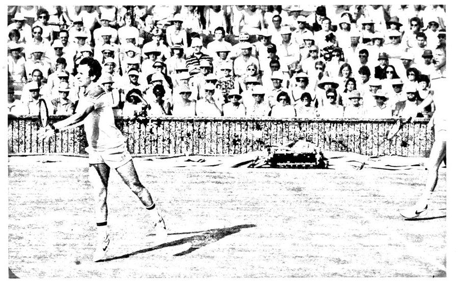
Trong bóng đá, bước chặn (check step) được gọi là "breakdown". Người chơi nhanh chóng vào tư thế sẵn sàng này bằng cách hạ thấp người xuống gần mặt đất với đầu gối hơi khuỵu, nhón trên mũi chân, sẵn sàng bật đi. Dù họ không phản ứng với cú đánh bóng như trong quần vợt, họ vẫn canh thời điểm động tác theo những thay đổi hướng bóng bay.
In football, the check step is called “breakdown.” Players quickly move into this ready position by crouching lower to the ground with slightly bent knees, on their toes, ready to spring into action. Although they aren't reacting to the hit of a ball like in tennis, they are timing their maneuver on changes in the direction the ball is traveling.
Lần tới khi bạn lên lưới, hãy thận trọng hơn. Thay vì lao về phía lưới một cách bừa bãi với tốc độ chóng mặt, hãy chậm lại ở khu vực giữa sân. Bạn đã di chuyển nhanh từ đường cuối sân, điều đó tốt, nhưng ở giữa sân giờ bạn cần chậm lại và giành quyền kiểm soát cơ thể lẫn bóng. Hãy tận dụng bước chặn (check step). Khựng lại trong tích tắc ngay khi đối thủ đánh bóng và chuẩn bị cơ thể để tiếp tục di chuyển, không nhất thiết theo hướng lưới, mà theo hướng quả bóng!
The next time you approach the net use more caution. Instead of racing toward the net with abandon and blazing speed, slow down in the midcourt area. You've moved in quickly from the baseline, which is fine, but at the midcourt you now need to slow down and gain body and ball control. Use the check step to your advantage. Momentarily freeze at the instant your opponent hits her shot and prepare your body to continue moving, not necessarily in the direction of the net, but in the direction of the ball!
ĐI ĐẾN CHỖ BÓNGGOING TO THE BALL
Mục tiêu của nhiều người lao lên lưới chỉ đơn giản là chạm được vào lưới. Điều thường bị quên là họ phải luôn đi tới chỗ quả bóng, và hướng đó không nhất thiết là hướng lưới. Đó là lý do bước chặn lại hữu ích đến vậy trong đánh đôi. Khi người chơi học được cách chậm lại và dừng, họ sẽ tập trung hơn vào quả bóng và việc di chuyển tới nó. Bao quát toàn bộ sân là điều thiết yếu. Bạn đừng bao giờ lao thẳng một đường về phía lưới, chỉ đánh những quả bóng đi thẳng vào mình. Bạn phải di chuyển về phía lưới, dừng lại, rồi tiếp tục di chuyển và bao quát mọi quả bóng được đánh sang phần sân của bạn.
The goal of many net rushers is simply to reach the net. What is often forgotten is that they must always go to the ball and that might not necessarily be in the direction of the net. That is the reason the check step is so beneficial in doubles. Once players learn to slow down and stop, they are then more focused on the ball and their movement toward it. Covering the entire court is essential. You should never race toward the net in a straight line, playing only those balls hit directly to you. You must move toward the net, stop, and then proceed to move and cover all balls played to your side of the court.
Bạn cũng đừng đoán mò xem bóng sẽ bay tới đâu. Bạn có thể học cách phán đoán khi quan sát và đọc đối thủ cùng quả bóng. Đừng quyết định động tác của mình cho đến khi bạn thấy bóng rời khỏi vợt đối thủ. Động tác vợt và cơ thể của họ cũng có thể mách bạn biết những cú đánh dự định sẽ đi về đâu.
You shouldn't guess where the ball will be traveling either. You can learn to anticipate when you watch and read your opponent and the ball. Don’t commit your movement until you've seen the ball come off your opponent's racket. His racket and body movements can also tip you off as to where intended shots are going.
Những người chơi vô-lê ở khu vực giữa sân thường "thọc" vào bóng ở bên phải hoặc bên trái như thể họ đang đâm dao vào bóng tối. Để vô-lê thành công cần một động tác gồm hai phần. Phần đầu xoay vai để định vị cây vợt và phần thứ hai là khi vợt và cơ thể tiến về phía trước để gặp bóng ở phía trước. Vấn đề xảy ra khi người chơi chờ đợi và vô-lê bóng ở bên hông mình. Những người vô-lê giỏi nhất đều đã học được cách đi đến chỗ quả bóng để chơi nó sớm ngay phía trước cơ thể. Họ di chuyển theo đường chéo khi ở lưới để tiếp xúc tốt hơn, sớm ở phía trước, và tránh di chuyển song song với lưới vì sợ đánh bóng muộn. Họ hiểu rằng thành công hơn ở lưới đến từ những cú vô-lê đánh ở phía trước và họ cố gắng không bao giờ để bóng lọt tới bên hông mình.
Players volleying in the midcourt often “jab” at the ball on the right or left side as if they were making a stab in the dark. To volley successfully requires a two-part maneuver. The first part pivots the shoulder to position the racket and the second is when the racket and body move forward to meet the ball out in front. Problems occur when players wait and volley the ball at their side. The best volleyers have all learned to go to the ball to play it early gut in front of the body. They move diagonally while at the net for better contacts early out in front and avoid moving parallel to the net in fear of late hits. They understand that more success at the net comes with volleys played in front and they strive never to allow balls to get to their sides.
Một khi đã xác lập vị trí giữa sân, đừng lùi xa khỏi lưới trừ khi đó là một cú lốp. Những người chơi liên tục lùi lại sẽ thấy mình mất thăng bằng với rất ít trọng lượng cơ thể phía sau cú đánh. Họ nên giữ đà của cơ thể hướng vào cú đánh, chứ không phải ngược lại. Hãy học cách đi đến chỗ quả bóng khi vô-lê; đừng chờ bóng đến với mình. Các cú vô-lê của bạn chắc chắn sẽ cải thiện khi bạn làm vậy.
Once you've established a midcourt position, don’t back away from the net unless it’s a lob. Players who repeatedly retreat find themselves off balance with little weight behind their shots. They should keep the momentum of their body into the hit, not away from it. Learn to go to the ball when volleying; don’t wait for it to come to you. Your volleys are sure to improve when you do.
KHÔNG ĐÁNH KHI ĐANG CHẠYNOT ON THE RUN
Trong hành trình tiến lên lưới, hãy nghĩ về việc di chuyển của bạn như đang ở một cột đèn giao thông. Hãy đi khi "đèn xanh" giữa các cú đánh, chậm lại thành "đèn vàng" và thận trọng khi đối thủ đánh bóng, và chuẩn bị dừng lại ở cú vô-lê của chính bạn như thể đó là "đèn đỏ". Cơ thể bạn sẽ thăng bằng và kiểm soát tốt hơn khi nó không còn di chuyển, điều này cho phép những cú đánh được kiểm soát tốt hơn.
In your quest for the net, think of your movement as if at a stoplight. Proceed on “green” in between hits, slow to “yellow’ and use caution upon your opponent’s hit, and prepare to stop at the volley on your own as if it were “red.” Your body will be better balanced and in control now that it isn’t moving, which allows for better controlled hits.
Lối đánh lưới thường đòi hỏi những động tác "dừng và đi". Những người chơi chưa học được lý thuyết đèn giao thông ở lưới chắc chắn sẽ gặp khó khăn khi đánh bóng ở vị trí đó. Sau bước dừng, hãy tiếp tục đến chỗ quả bóng; tuy nhiên, một khi đã đến nơi, hãy dừng lại. Chính lúc này, việc kiểm soát cơ thể là tối quan trọng để tạo ra những cú đánh thành công. Di chuyển xuyên qua cú đánh chỉ làm phức tạp và cản trở thời điểm tiếp xúc bóng, điều vô cùng quan trọng ở cú vô-lê.
Net play often requires “stop and go” movements. Players who haven't learned the stoplight theory at the net are sure to experience stroking difficulties while positioned there. Following the check step, continue to the ball; however, once you reach it, stop. It is at this time that body control is of utmost importance to produce successful strokes. Moving through the hit only complicates and hinders timing of the ball, which is crucial on the volley.
Di chuyển, bước dừng, di chuyển, dừng lại để vô-lê. Di chuyển, bước dừng, di chuyển, dừng lại để vô-lê. Di chuyển, bước dừng, di chuyển, dừng lại để vô-lê. Đây là động tác bộ chân cần dùng ở lưới. Hãy để ý rằng việc di chuyển chỉ diễn ra giữa các cú đánh. Khi mỗi người đang đánh bóng là lúc cần đứng yên trong chốc lát. Điều đó không quá thiết yếu phải đứng bất động khi đồng đội hay đối thủ đang đánh bóng, nhưng đó là thói quen tốt. Tuy nhiên, ở cú đánh của bạn, việc kiểm soát bóng là thiết yếu, nên hãy đứng yên lâu hơn một chút hoặc cho đến khi bóng rời khỏi vợt bạn. Học cách kiểm soát cơ thể và dừng lại khi vô-lê chắc chắn sẽ giúp các cú vô-lê của bạn dễ thuần thục hơn một chút.
Move, check step, move, stop to volley. Move, check step, move, stop to volley. Move, check step, move, stop to volley. This is the footwork action to use at the net. Notice how movement only takes place between hits. While each person is stroking the ball is the time to remain momentarily still. It’s not as essential to remain motionless when your partner or opponents are stroking the ball, but it’s good practice. On your hit, however, ball control is essential, so remain stationary a little longer or until the ball leaves your racket. Learning to control your body and to stop while volleying is sure to help make your volleys a little easier to master.
ĐỪNG ĐỨNG ĐÓ CHIÊM NGƯỠNG!DON’T STAND THERE ADMIRING!
Sau mỗi cú đánh của mình, bạn sẽ cần hồi vị hoặc di chuyển tới vị trí mong muốn trên sân. Lỗi tệ nhất bạn có thể phạm lúc này là đánh rồi "đứng đó ngắm nghía" cú đánh của mình! Kết quả là vị trí đứng sẽ kém, tạo cơ hội và khoảng trống cho đối thủ đánh vượt qua hoặc nắm quyền kiểm soát điểm.
After each of your hits, it will be necessary to recover or proceed to the desired position on the court. The worst possible sin you could make at this time is to hit and “stand there admiring” your shot! Poor positioning will result and this offers your opponents opportunities and openings to pass or take command of the point.
Sự cám dỗ muốn ngắm nghía cú đánh của mình trong trận đấu sẽ luôn hiện diện. Đôi khi cú đánh cảm giác quá đã đến mức bạn muốn tận hưởng chút khoái cảm bằng cách ngắm nó một lúc. Hãy cưỡng lại sự cám dỗ đó! Đánh rồi di chuyển vào vị trí. Bạn có thể quan sát cú đánh của mình (bạn phải luôn nhìn theo quả bóng) trong lúc di chuyển, nhưng đừng đánh rồi đứng đó.
The temptation to admire your shots during match play will always be present. Sometimes the hit just feels so good that you want to gain a little pleasure by watching it awhile. Resist the temptation! Hit and move into position. You can watch your shot (you should always keep watching the ball) while you're moving but avoid hitting and standing there.
Trừ khi bạn đã đánh ra một cú "winner" dứt điểm, bạn sẽ cần tận dụng việc đã đánh được một cú tốt bằng cách di chuyển vào đúng vị trí sau cú đánh. Lợi thế sẽ chuyển sang phía đối thủ nếu bạn chỉ đứng đó ngắm nghía nó!
Unless you've hit an outright “winner,” you will need to take advantage of making a good shot by moving into the proper position following the hit. The advantage will shift to your opponents if you merely stand there admiring it!
Tránh chờ đợi hay dừng lại sau những cú đánh mà bạn quyết định sẽ lên lưới theo sau. Ví dụ ở giao bóng và cú đánh lên lưới, hãy di chuyển liên tục suốt động tác về phía lưới. Điều này vẫn có thể làm được với khả năng kiểm soát cơ thể và thăng bằng tốt tại thời điểm tiếp xúc. Cách làm này không nên áp dụng cho mọi cú đánh, chỉ những cú cần quãng đường di chuyển dài hơn phía sau chúng. Cần đặc biệt thận trọng và chú ý khi đánh bóng trong lúc đang di chuyển. Đây là nơi nhiều lỗi xảy ra, nhất là với những người chơi thử động tác này khi thật ra không cần thiết.
Avoid waiting or pausing after hits you’ve decided to move into the net behind. On serves and approach shots for example, move continuously throughout the stroke toward the net. This can still be accomplished with sound body control and balance at contact. This practice shouldn't be applied to all strokes, just those that require a greater distance to move in behind them. Extra caution and care should be taken while playing the ball on the move. This is where many errors occur, especially by players attempting this maneuver when it’s not necessarily required.
TĂNG MỨC ĐỘ CĂNG TẬP TRUNGINCREASE YOUR LEVELS OF INTENSITY
Mức độ căng tập trung hay trạng thái sẵn sàng của bạn có giống nhau khi cố đánh một quả bóng bay 100 dặm một giờ và khi bạn cố đánh một quả bóng bay mười dặm một giờ không? Không nên như vậy. Mức độ căng tập trung của bạn thường được quyết định bởi tốc độ quả bóng bạn đang xử lý cũng như khoảng cách của đối thủ. Nói chung, bạn càng ở gần lưới thì càng nên căng tập trung hơn.
Is your level of intensity or state of readiness the same when attempting to hit a ball traveling 100 miles per hour as it is when you are attempting to hit a ball traveling ten miles per hour? It shouldn’t be. Your intensity normally is dictated by the speed of the ball you are playing as well as the proximity of the opponents. Generally, the closer you are to the net, the more intense you should then become.
Có ba dấu hiệu trên cơ thể cần để ý khi xác định mức độ căng tập trung của bạn: khuỷu tay, gót chân, và đầu gối.
There are three body cues to take notice of when determining your level of intensity: elbows, heels, and knees.
Khi đang ở tư thế sẵn sàng, hãy để ý xem khuỷu tay bạn đang ở đâu. Chúng hướng vào trong, về phía cơ thể, thậm chí dọc theo hai bên hông, hay chúng duỗi ra xa hơn về phía trước? Những người chơi ở mức độ căng tập trung thấp hơn có xu hướng thu khuỷu tay vào sát cơ thể ở vị trí thoải mái hơn. Điều này ổn khi thư giãn hoặc khi ít đòi hỏi căng tập trung hơn, tuy nhiên khi ở lưới, lúc mức căng tập trung thường cao nhất, khuỷu tay nên được duỗi ra xa hơn về phía trước cơ thể. Khi đó cây vợt sẽ được chuẩn bị tốt hơn và ở vị trí mong muốn hơn để phản ứng nhanh hơn và bắt bóng sớm hơn ở phía trước cơ thể.
While stationed in the ready position, note where your elbows are. Are they inward, toward your body, even along your sides, or are they extended more out in ffont? Players who are at a lower level of intensity tend to pull their elbows into their body in a more comfortable position. This is fine when at ease or when less intense demands are being placed on the players, however, while at the net, when intensity is usually at its highest, elbows should be extended further out in front of the body. The racket will then be better prepared and in a more desirable position to react more quickly and catch the ball earlier out in front of the body.
Gót chân chạm đất chắc chắn báo hiệu mức độ căng tập trung thấp hơn. Khi chơi ở lưới, hãy tránh để gót chân chạm đất trừ khi đang đánh bóng. Những người đứng bẹp chân khi ở lưới thường có thăng bằng cứng nhắc. Họ có thể thấy mình tự động căng tập trung và sẵn sàng hơn bằng cách nhấc gót chân lên và đứng nhiều trên phần ức bàn chân. Trọng lượng cơ thể sẽ dịch về phía trước trong quá trình đó, mang lại khả năng phán đoán và sẵn sàng tốt hơn. Lúc đó họ sẽ thấy mình được chuẩn bị tốt hơn cho những pha trao đổi bóng nhanh ở lưới.
Heels touching the ground definitely signal a lower level of intensity. When playing the net, avoid touching your heels to the ground except when striking the ball. Players who stand flat footed while at the net tend to have rigid balance. They could find themselves automatically more intense and ready by coming off their heels and standing more on the balls of their feet. Body weight will shift forward in the process affording better anticipation and readiness. They will now find themselves better prepared for quick net exchanges.
Đứng hoàn toàn thẳng người với đầu gối khóa cứng cũng ảnh hưởng đến sự nhanh nhẹn và khả năng di chuyển. Hãy khuỵu đầu gối hơi một chút để sẵn sàng bật dậy hành động. Nếu khuỵu nhẹ là tốt, liệu khuỵu gối nhiều hơn như một tư thế "ngồi xổm" có tốt hơn không? Không! Chỉ cần khuỵu gối nhẹ một chút sẽ chuẩn bị tốt nhất cho cơ thể bạn cho những động tác nhanh ở lưới. Khuỵu gối sâu hơn cần quá nhiều thời gian để duỗi thẳng hoàn toàn và đẩy cơ thể di chuyển khắp sân.
Standing completely upright with locked knees also affects quickness and mobility. Flex your knees slightly to be ready to spring into action. Ifa slight flex is good, is more knee bending such as a “squat” even better? No! Just a slight knee bend will best prepare your body for quick movements at the net. Deeper knee bends require too much time to fully extend and propel your body about the court.
Khi bạn và đồng đội tiến tới khu vực giữa sân, hãy điều chỉnh mức độ căng tập trung để bù cho khoảng cách ngắn hơn được tạo ra giữa bạn và đối thủ. Hãy quyết định trước mỗi pha trao đổi bóng nên hướng bóng đi đâu để tránh những bất ngờ không cần thiết trong khi đôi công. Hãy kiểm soát đầu vợt của bạn. Hãy nắm chắc chuôi vợt và cổ tay để chuẩn bị cho những quả bóng nhanh hơn đang bay tới. Hãy duỗi khuỷu tay và vợt ra xa hơn về phía trước, nhấc gót chân lên, và khuỵu gối nhẹ trong một tư thế sẵn sàng căng tập trung hơn. Bây giờ bạn đã sẵn sàng vô-lê hết khả năng và giành lấy lợi thế khu vực giữa sân!
As you and your partner advance to the midcourt, adjust your intensity levels to compensate for the shorter distance created between you and your opponents. Decide before each exchange where the ball should be directed to avoid unnecessary surprises while rallying. Get your racket heads under control. Firm your grips and wrists to prepare for faster balls coming your way. Extend your elbows and rackets out further in front, get off your heels, and flex your knees slightly in a more intense ready position. Now you're prepared to volley your best and gain the midcourt advantage!
NƠI HẦU HẾT CÁC TRẬN ĐÁNH ĐÔI ĐƯỢC THẮNG VÀ THUAWHERE MOST DOUBLES MATCHES ARE WON AND LOST
Một trong những vị trí tệ nhất mà bạn và đồng đội có thể chơi bóng là "vùng đất không người". Đây là khu vực nằm giữa khu vực giữa sân và đường cuối sân. Từ đây, rất ít cú đánh trở nên dễ dàng. Bóng dường như dễ bị nhắm vào chân người chơi và sau lưng họ khi họ bị kẹt đứng trong vùng đất không người. Đây chính là cốt lõi của bài học rằng "quần vợt là trò chơi được chơi từ sau đường cuối sân hoặc ở trên lưới". Người chơi đang đánh bóng bên trong đường cuối sân nên tiến về phía lưới sau cú đánh hoặc lùi về sau đường cuối sân để tiếp tục điểm.
One of the worst locations you and your partner could ever play the game from is “no person’s land.” This is the area located between the midcourt area and the baseline. From here, very few shots come easy. Balls seem to be easily directed at players’ feet and behind them when they're caught standing in no person's land. This is the very essence of the lesson that ‘tennis is a game played behind the baseline or at the net.” Players stroking balls inside the baseline should proceed either toward the net after the shot or retreat behind the baseline to continue the point.
Khu vực giữa sân khác rất ít so với vùng đất không người. Đó là lý do khu vực giữa sân không phải là vị trí lý tưởng để bạn và đồng đội chơi bóng. Vậy thì tại sao lại có cả một chương dành cho khu vực giữa sân, bạn hỏi? Phần lớn các trận đánh đôi được thắng và thua từ những pha bóng diễn ra ở giữa sân. Chỉ những người chơi đánh đôi rất cao thủ và dày dạn mới hiểu tầm quan trọng của những cú đánh từ nơi này. Những người chơi kém hơn cảm thấy mình đủ gần để đánh tấn công và phạm phần lớn lỗi của họ ở đây. Giá như họ kiên nhẫn, thận trọng và thông minh hơn trong các điểm rơi, họ sẽ khám phá ra rằng giữa sân là nơi tuyệt vời để giành không chỉ lợi thế mà cả quyền kiểm soát những điểm mình chơi.
The midcourt area differs very little from no person's land. This is the reason that the midcourt area is not an ideal position for you and your partner to play the game from. Then why is there an entire chapter devoted to the midcourt area, you ask? Most doubles matches are won and lost from play occurring midcourt. Only very advanced and experienced doubles players understand the importance of shots played from here. Lesser players feel they are close enough for offensive shots and make the majority of their errors here. If they would only be more patient, cautious, and intelligent in their placements, they would discover that the midcourt is a great place to gain not only the advantage but also control of the points they play.
Đúng vậy, đôi khi bóng sẽ nhắm vào chân bạn khi bạn đứng ở giữa sân, tuy nhiên nhờ thận trọng và chú ý hơn, những cú đánh khó này có thể được đưa đi an toàn và ổn định. Hãy đặt những cú vô-lê thấp và bán vô-lê cao hơn hẳn lưới với đủ biên an toàn, tránh xa các đường biên, và đủ sâu để kiểm soát điểm. Đừng cố gắng hung hăng dứt điểm những quả bóng đánh vào chân mình.
Sure, balls will sometimes be directed at your feet while you're positioned midcourt, however, through the use of more caution and care these difficult shots can be safely directed with consistency. Place low volleys and halfvolleys well above the net with enough margin for error, away from the lines, and deep enough to control the point. Stay away from aggressively attempting outright winners off balls played at your feet.
Vạch giao bóng là nơi hấp dẫn để đánh ra những cú winner hoành tráng. Đôi khi điều đó có thể xảy ra nhưng hiếm khi thành công ổn định. Dù bạn có thể cảm thấy đủ gần để "kết liễu", hãy cưỡng lại sự cám dỗ vì thật ra bạn không đủ gần. Thay vào đó hãy cố kiểm soát điểm và duy trì áp lực lên đối thủ. Hãy buộc họ phải đánh bại bạn bằng cách đánh vào khoảng giữa hai người, đánh vượt qua bạn dọc biên, hoặc đánh một điểm rơi hoàn hảo qua đầu bạn. Hãy hướng những cú đánh của mình sao cho đó là nhiệm vụ khó để họ làm được một cách đều đặn. Đó chính là chiến thắng bằng lối đánh đôi an toàn. Khu vực giữa sân sẽ chứng tỏ là một vị trí quý giá cho thành công của đội bạn một khi bạn học được cách dàn dựng các cú đánh từ đây. Nhưng hãy nhớ, để nhận được lợi ích từ những quả bóng được đặt tốt của mình, bạn và đồng đội sẽ cần di chuyển vào vị trí gần lưới hơn để kết thúc điểm một cách ổn định.
The service line is a tempting place to hit glorified winners. Sometimes this might be possible but rarely with consistent success. Even though you might feel close enough for the “kill,” resist the temptation because you actually aren't. Try instead to control the point and to keep the pressure on your opponents. Make them beat you by hitting between you, passing you down the line, or hitting a perfect placement over your heads. Direct your shots so that this will be a difficult task for them to accomplish with any regularity. That is winning with percentage doubles play. The midcourt will prove to be a valuable location for the success of your team once you learn to set your shots up from here. But remember, to gain the benefits of your well placed balls, you and your partner will need to move into a position closer to the net to consistently end the points.
TÓM TẮTSUMMARY
Hãy giữ lợi thế hay thế kiểm soát từ khu vực giữa sân; đừng luôn cố kết thúc điểm ngay lập tức từ đây. Đừng quá sốt ruột muốn kết thúc điểm sớm hơn mức nên làm. Hãy dùng bước dừng để kiểm soát cơ thể đúng cách và định vị bản thân để xử lý mọi quả bóng. Hãy nhớ, bạn đang đi đến chỗ quả bóng chứ không chỉ đến chỗ lưới. Đừng chờ bóng đến với mình khi vô-lê; hãy đi đến chỗ nó để tiếp xúc bóng ở phía trước và tránh đánh bóng ở bên hông. Dù bạn luôn di chuyển đến chỗ quả bóng, một khi đã đến nơi, hãy dừng lại để vô-lê. Chạy xuyên qua cú vô-lê chắc chắn khiến nó trở thành một cú đánh khó thuần thục hơn bất kể trình độ của bạn. Một khi cú vô-lê đã được thực hiện, hãy di chuyển vào vị trí.
Keep the advantage or control from the midcourt; don’t always try to end the points outright from here. Don’t be over anxious to end the points sooner than you should. Use the check step to control your body properly and position yourself to play all balls. Remember, you're going to the ball not just the net. Don’t wait for the ball to come to you when volleying; go to it to contact balls in front and avoid playing them at your side. Although you're always moving to the ball, once you reach it stop to volley. Running through the volley certainly makes it a more difficult shot to master no matter what your level of play. Once the volley has been played, move into position.
Hãy tránh cám dỗ đứng đó chiêm ngưỡng quả bóng được đặt tốt của mình. Hãy tăng mức độ căng tập trung khi chơi ở lưới. Hãy chuẩn bị đúng cách cho những pha trao đổi bóng nhanh ở lưới. Hãy chơi thông minh ở khu vực giữa sân. Bạn và đồng đội có thể chọn dùng vị trí này để nắm quyền kiểm soát điểm số hoặc có thể để nó chống lại bạn. Sự lựa chọn là của bạn. Tất cả phụ thuộc vào việc bạn kiên nhẫn, thận trọng và thông minh đến mức nào trong việc đặt bóng từ đây.
Avoid the temptation to stand there admiring your well placed ball. Increase your level of intensity while playing the net. Properly prepare yourself for the quick net exchanges. Play it smart midcourt. You and your partner can choose to use this position to take command of points or you can let it work against you. The choice is yours. It all depends on how patient, cautious, and intelligent you are with your placements from here.
Rắc Rối Của Đánh Đôi
CÚ LỐP ĐÁNG SỢTHE DREADED LOB
Không gì có thể phá vỡ một trận đấu, thay đổi dòng chảy của nó, hay làm đổi chiến thuật của đối thủ nhiều bằng một cú lốp. Nhiều người còn coi đó là cú đánh đáng sợ nhất trong môn này. Nhưng tại sao? Có nhiều cú đánh có thể bị coi là khó phòng ngự. Những cú giao bóng như tên bắn, những cú lên lưới hung hãn, những cú thuận tay mạnh, những cú đỡ giao bóng lao xuống chân... vậy tại sao một cú đánh đơn giản như lốp bóng lại bị sợ đến thế?
Nothing can disrupt a match, change its flow, or alter opponents’ strategies more than a lob can. Many even view it as the single most dreaded shot in the game. But why? There are many shots which could be considered difficult to defend. Blazing serves, aggressive approach shots, big forehands, returns that dive at the feet . .. so why is a shot as simple as the lob so feared?
Mối đe dọa từ cú lốp cũng ghê gớm ngang chính cú lốp đối với những người phòng ngự ở lưới. Nhiều người sợ nó vì vài lý do: thứ nhất, cú đập bóng trên cao là cú mà ít ai luyện đủ thường xuyên. Người chơi đánh không biết bao nhiêu cú thuận tay và trái tay mỗi buổi tập, trong khi số lần đập bóng trên cao thường đếm được trên một bàn tay! Kết quả là rất ít tự tin và tin tưởng vào khả năng tạo cú đánh của mình với động tác này. Thứ hai, người chơi thiếu hiểu biết về tầm quan trọng của khả năng di chuyển lùi ở lưới. Để phòng ngự cú lốp cần lùi nhanh và đặt chân chính xác. Thứ ba, bầu trời là phông nền cho những cú đập trên cao. Người chơi không quen phán đoán bóng bay trên cao và gặp khó khăn trong nhận thức. Cuối cùng, hầu hết cố đánh cú này đúng như tên gọi đôi khi của nó — một cú smash! Kết quả là lối đánh thiếu ổn định, cuối cùng sinh ra sự thiếu tự tin vào động tác đập bóng trên cao.
The threat of the lob is as much the killer as the lob itself to defenders at the net. Many fear it for several reasons: first, the overhead is a shot that few practice often enough. Players stroke countless forehands and backhands each practice, while the number of overhead hits can usually be counted on one hand! The result is little confidence and belief in their shot-making ability with the stroke. Second, players lack the understanding of how important backward mobility is at the net. To defend the lob requires quick retreat and exact positioning of the feet. Third, the sky is the backdrop for overhead shots. Players aren't used to judging balls played overhead and have trouble with perception. Finally, most try to play the shot as it's sometimes named — a smash! The outcome is inconsistent play which ultimately breeds lack of confidence in the overhead stroke.
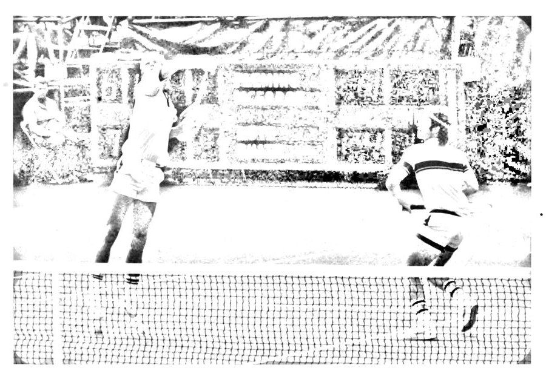
CÚ ĐÁNH HIỆU QUẢ NHẤT TRONG ĐÁNH ĐÔITHE MOST EFFECTIVE SHOT IN DOUBLES
Những đội không bao giờ lốp bóng cho phép đối thủ tiến vào gần hơn và nắm quyền kiểm soát lưới. Ngược lại, những đội lốp bóng chính xác có thể giữ đối thủ ở xa, không cho lên lưới. Họ có thể giành lợi thế bằng cách đặt bóng vào chân đối thủ hoặc tự chiếm lấy lưới. Những đội lốp bóng giỏi cũng giữ bóng trong cuộc chơi thường xuyên hơn và cho đối thủ cơ hội mắc lỗi. Đó là lý do cú lốp, khi được thực hiện đúng, là cú đánh hiệu quả nhất trong đánh đôi ở mọi trình độ.
Teams that never lob allow their opponents to move in closer and take control of the net. Teams that lob with accuracy, on the other hand, can keep opponents at bay, off the net. They are able to gain the advantage by placing balls at their opponents’ feet or by taking over the net themselves. Teams that lob well also keep the ball in play more often and offer opponents a chance to err. This is why the lob, when properly executed, is the most effective shot in doubles at every level.
Tuy nhiên, hầu hết người chơi đánh đôi sẽ né tránh việc dùng cú lốp. Họ cảm thấy mình sẽ bị dán nhãn "lobber", "pusher", "moonballer" và đại loại thế nếu họ bị thấy lốp bóng quá thường xuyên. Họ không bao giờ thật sự hiểu tầm quan trọng của cú lốp hay cách dùng nó tốt hơn; thay vào đó họ thích tránh nó. Nỗi sợ cũng là một yếu tố khiến họ không lốp bóng thường xuyên hơn. Những người chơi này trước đây từng "hất" những quả bóng ngắn lên trời, để rồi đối thủ chờ sẵn đập trên cao dễ dàng hoặc tệ hơn, đập thẳng vào họ hay đồng đội. Điều thường thiếu là hiểu biết về cách kiểm soát cú lốp. Họ đơn giản đã lốp hụt quá nhiều trong quá khứ nên không còn tự tin tiếp tục thử cú đánh này trong trận đấu.
Most doubles players will, however, shy away from using the lob. They feel that they will be labeled “lobbers,” “pushers,” “moonballers,” and the like if they are seen lobbing very often. They never truly understand the importance of the lob or how they can better use it; they prefer to avoid it instead. Fear is another factor in not lobbing more often. These players have “popped” short balls up in the air before, only to have waiting opponents rip overheads either easily away or worse, directly at them or their partner. What is often lacking is the understanding of how to control the lob. They've simply missed too many in the past to continue confidently attempting the shot during match play.
Lốp bóng nên được đánh giống như những cú đánh nền. Ai cũng có thể đánh bóng lên trời, tuy nhiên độ chính xác và hướng đi cần phải luyện tập. Trước tiên phải hình dung một mục tiêu để hướng bóng tới đó với sự kiểm soát. Những cú bật lên ngắn hoặc lốp bồng bềnh ngắn xảy ra khi người chơi dừng vung vợt tại thời điểm tiếp xúc hoặc ngay sau đó. Những cú đấm và cú hất bóng với mặt vợt mở (dây vợt hướng lên trời) sẽ đưa bóng lên cao nhưng rất ít kiểm soát. Điều còn thiếu là động tác kết thúc đúng cách. Động tác kết thúc của cú đánh cho phép vợt tiếp tục di chuyển qua cú đánh và hướng bóng đi trong quá trình đó. Khi người chơi xúc hay đẩy bóng với ít hoặc không có động tác kết thúc, kết quả là những cú đánh yếu và những cú lốp kém hiệu quả.
Lobs should be stroked similar to groundstrokes. Anyone can hit a ball up into the air, however, accuracy and direction require practice. A target must first be imagined to direct the ball there with control. Pop-ups or short floating lobs occur when players stop their swings at contact or shortly thereafter. Punches and flicks at the ball with open racket faces (strings directed to the sky) will send the ball upward but with little control. What is lacking is the proper follow through. The follow through of the stroke allows the racket to continue moving through the hit and direct the ball in the process. When players shovel or push the ball with little or no follow through, weak shots and ineffective lobs result.
Giấu ý đồ (disguise) là chìa khóa thành công với cú lốp. Khi những cú lốp được làm cho trông như những cú thuận tay hay trái tay bình thường rồi đột ngột bóng bay qua đầu những đối thủ không phòng bị, nó thường là chiến thuật bất ngờ tốt nhất hiện có. Để giấu ý đồ lốp bóng tốt hơn, hãy cố đánh bóng theo cùng cách như thể đó là một cú đánh nền, chỉ nâng bóng cao hơn một chút ở động tác kết thúc khi cú đánh hoàn tất. Điều này sẽ khiến đối thủ gặp khó khăn trong việc đọc hay phản ứng với cú đánh mà bạn sắp thực hiện. Nó cũng sẽ khiến họ khá bất an khi đứng quá sát lưới trong tương lai.
Disguise is the key to success with the lob. When lobs are made to appear as though they are normal forehands or backhands and then suddenly the ball clears the head of unprepared opponents, it often is the best surprise tactic available. To better disguise your lobs, strive to stroke the ball in the same manner as if it were a groundstroke, only lift the ball a little more on the follow through as your stroke finishes. This way your opponents will have difficulty reading or reacting to what shot you are about to hit. It will also make them quite insecure positioning themselves very close to the net in the future.
Cú lốp là cú đánh tuyệt vời để thử với những quả bóng khó xử lý. Nó cũng mang lại sự giải tỏa tức thì với những cú đánh đã kéo đội bạn ra khỏi vị trí. Cú lốp giả động tác còn có một dạng khác nữa, đó là cú lốp vô-lê. Một cú lốp chặn, chẳng hạn như cú lốp vô-lê, có thể gây bất ngờ lớn khi được thực hiện đúng cách và chắc chắn sẽ khiến đối thủ mất thăng bằng và phải đoán già đoán non. Cú lốp có thể được thực hiện trước khi bóng nảy (một cú vô-lê) bằng cách mở mặt vợt và điều chỉnh góc cũng như lực vung vợt sao cho bóng vừa đủ bay qua đầu những đối thủ không ngờ tới mà vẫn rơi trong ranh giới sân.
Lobs are excellent strokes to try on hard to handle shots. They also offer instant relief on shots which have pulled your team out of position. Disguised lobs also come in another form, lob volleys. A block lob, such as a lob volley; can be quite surprising when executed properly and will surely keep opponents off balance and guessing. A lob can be made before the ball bounces (a volley) by opening up the racket face and adjusting the angle and power of the swing to just clear the head of the unsuspecting opponents and still land within the boundaries of the court.
Khi đối thủ nhất quyết chơi ở thế một người lên lưới/một người ở cuối sân, cú lốp là công cụ tuyệt vời để làm mệt người đứng cuối sân. Bằng cách lốp bóng thành công liên tục từ góc này sang góc kia, qua đầu người đứng lưới, người ở cuối sân buộc phải chạy từ bên này sang bên kia. Điều này không chỉ khiến đối thủ mắc nhiều lỗi hơn khi đang chạy, mà còn có thể buộc họ phải vào những vị trí trên sân mà họ không hoàn toàn thoải mái, chẳng hạn như cả hai cùng lên lưới hoặc cùng lùi sâu.
When opponents are intent on playing in a one up/one back position, the lob is an excellent tool to use to tire the baseline opponent. By successfully lobbing repeatedly corner to corner, over the net person’s head, the baseliner is forced to run from side to side. This will not only cause your opponents to make more mistakes while on the run, but it can also force them to take positions on the court they're not entirely comfortable with, such as both playing up or back.
Thường thì cú đỡ giao bóng tốt nhất cho bạn và đồng đội là một cú lốp. Nếu người đứng lưới đang tích cực cướp bóng hoặc người giao bóng đang giao bóng và lên lưới thành công, một cú lốp bóng qua đầu người đứng lưới chắc chắn sẽ phá hỏng kế hoạch của họ. Ngoài trời, cú lốp cho đối thủ tha hồ nhìn mặt trời và bầu trời cũng như đối mặt với gió khi cố đập bóng trên cao. Trong nhà, đối thủ phải đối mặt với đèn sáng, dầm thép và trần nhà màu sáng.
Often the best return for you and your partner is a lob return. If the net person is actively poaching or the server is successfully serving and volleying, a lob thrown up over the net person’s head is certain to thwart their plans. Outdoors a lob gives opponents plenty of sun and sky to look at and wind to face in attempting to hit overheads. Indoors, opponents face the bright lights, steel beams, and light-colored ceilings.
Cú lốp là một cú đánh quan trọng mà bạn và đồng đội cần ghi nhớ khi hoạch định chiến thuật. Thay vì dùng nó như cú đánh cứu cánh cuối cùng, hãy luyện tập để biến nó thành một phần trong vốn cú đánh hằng ngày của bạn. Hãy để nó giúp bạn trở thành một đội hoàn thiện hơn. Nó thậm chí có thể trở thành cú đánh hiệu quả nhất mà đội bạn sử dụng!
The lob is an important shot for you and your partner to keep in mind when planning strategy. Instead of using it as a last resort shot, practice to make it a part of your everyday stroke repertoire. Let it help you become a more complete team. It might even become the most effective shot your team uses!
TẤN CÔNG VS. PHÒNG NGỰOFFENSIVE VS. DEFENSIVE
Cú lốp có thể được phân loại thành cú tấn công hoặc cú phòng ngự. Điều quyết định một cú lốp là tấn công hay lối đánh phòng ngự là vị trí của những người chơi đang cố lốp bóng và độ cao của vòng cung trong cú lốp.
Lobs can either be categorized as offensive or defensive shots. What determines whether a lob is an offensive or a defensive play is the positioning of the players attempting to lob and the height of the arc in the lob.
Lốp tấn công được đánh bởi những người chơi đang ở vị trí tốt hoặc đang nắm quyền kiểm soát điểm. Chúng thường được đánh từ những quả bóng ngắn, cho phép người chơi dễ dàng bước vào sau cú đánh và nâng bóng qua đầu người đối diện ở lưới. Độ cao của lốp tấn công là quỹ đạo thấp hơn, khi đánh đúng thì chỉ vừa vượt qua cây vợt đang vươn ra của đối thủ bất ngờ. Thời gian lốp tấn công lưu trên không cũng được rút ngắn, không cho người đứng lưới cơ hội chạy đuổi và đánh trả. Một cú lốp đánh với xoáy lên mang lại lợi thế còn nhiều hơn nữa. Lốp xoáy lên rơi xuống nhanh sau khi vượt qua đầu người đứng lưới và chạy đi thường là không bị chạm tới. Đó là lý do nó được gọi là cú đánh tấn công; nó được dùng để nắm quyền kiểm soát điểm hoặc thậm chí thắng điểm ngay.
Offensive lobs are hit by players in good position or in command of the point. They are usually played off of shorter balls which easily allow players to step in behind the shot and lift it over the net opponent's head. The height of the offensive lob is a lower trajectory which, when correctly played, just clears the outstretched racket of the surprised opponent. The time the offensive lob remains in the air is also shortened, prohibiting the net player from getting the opportunity to run it down and return it back. A lob hit with topspin offers that much more advantage. A topspin lob dips quickly after clearing the net person’s head and runs away usually untouched. This is the reason it is called an offensive shot; it is used to take control of the point or even win it outright.
Lốp phòng ngự, ngược lại, được dùng bởi những người chơi đang gặp rắc rối nào đó. Vòng cung cao và thời gian treo lâu của lốp phòng ngự cho người chơi thời gian cần thiết để trở về vị trí hoặc giành lại quyền kiểm soát điểm. Khi người chơi bị kéo ra khỏi sân hoặc bị dồn với những cú đánh khó, lốp bóng cao là cú đánh thông minh để chọn. Đối thủ rất có thể sẽ có cơ hội đánh trả cú lốp, nhưng điều quan trọng nhất là sẽ không phạm lỗi trong quá trình đó. Khi người chơi cố "nã" đường thoát khỏi tình huống, kết quả là lối đánh thiếu thông minh qua những lỗi lặp đi lặp lại.
Defensive lobs, on the other hand, are used by players who find themselves in some form of trouble. The high arc and long hang time of the defensive lob allow players needed time to get back into position or regain control of the point. When players are pulled out of the court or jammed with difficult shots, the high lob is the intelligent shot to choose. Opponents will, in all probability, be able to have a play on the lob, but the most important thing is that no errors will be committed in the process. When players try to “blast” their way out of situations, unintelligent play results through repeated errors.
Những người chơi yếu thường chỉ dùng cú lốp như một chiến thuật phòng ngự, tuy nhiên ngay cả những người chơi rất giỏi cũng thường thiếu hiểu biết về cách dùng lốp bóng hiệu quả hơn. Để đặt những cú lốp mang tính tấn công hơn và do đó hiệu quả hơn, hãy đưa bóng xuống thấp hơn bằng cách đẩy vợt xuyên qua bóng thay vì nâng nó quá nhiều trong cú vung. Điều quan trọng là nhận ra rằng chính mặt vợt và mặt phẳng của đường vung vợt mới hướng bóng đi trong cú lốp. Để hạ thấp cú lốp, hãy nhắm vào đỉnh hàng rào ở phía đối thủ. Quỹ đạo thấp hơn này sẽ tỏ ra khá khó để đối thủ phòng ngự khi được kiểm soát đúng qua đầu họ.
Weaker players normally use the lob only as a defensive tactic, however, even very good players often lack the knowledge of how to use lobs more effectively. To place lobs more offensively and therefore more effectively, bring the ball down lower by driving your racket through the ball instead of lifting it so much on your swing. It is important to realize that it is the racket face and plane of your swing path that direct the ball on the lob. To bring your lob down, aim at the top of the fence on the side of your opponents. This lower trajectory will prove quite difficult for your opponents to defend when correctly controlled over their heads.
NHỮNG VẤN ĐỀ VỚI CÚ ĐẬP TRÊN CAO CỦA BẠN — "PAT VÀ MIKE"YOUR OVERHEAD PROBLEMS — “PAT AND MIKE”
Những cú đập hay nhất được thực hiện trên cao với cánh tay duỗi thẳng hoàn toàn ở một khoảng cách thoải mái phía trước cơ thể. Cú đánh này được thực hiện tương tự như cú giao bóng, với cơ thể được đặt đúng phía sau bóng, với động tác vung vợt trở thành một chuyển động ném tự nhiên của cánh tay. Tuy nhiên, hầu hết những rắc rối mà người chơi gặp phải với cú đập trên cao đều đến khi bóng được đánh từ phía sau cơ thể. Từ vị trí này, cú đánh trở nên cực kỳ khó thực hiện. Rất ít hoặc không có bộ phận nào của cơ thể được đặt để tạo sự ổn định hay lực cho cú đánh; ngay cả mắt cũng khó giữ được bóng trong tầm nhìn khi bóng bay qua đầu. Đây là lý do "Pat và Mike" (hai bàn chân của bạn!) có một nhiệm vụ rất quan trọng — ngăn không cho bóng bay ra sau lưng bạn!
The best smashes are taken overhead with a fully outstretched arm at a comfortable distance in front of the body. The stroke is to be played similarly to the serve, with body weight properly positioned behind the ball with the swing becoming a natural throwing motion of the arm. Most of the troubles that players experience with the overhead stroke, however, come when the ball is played from behind the body. The shot becomes extremely difficult to execute from here. Little or no body parts are positioned to offer stability or force for the stroke; even the eyes have a difficult time keeping it in view once it clears the head. This is the reason that “Pat and Mike” (your two feet!) have a very important job to do — preventing the ball from getting behind you!
Bộ chân kém là nguyên nhân của hầu hết các vấn đề với cú đập trên cao. Phần lớn những người không thích cú đánh này lại chính là những người liên tục tìm cách ăn gian khi luyện tập nó. Họ bắt đầu bằng cách đứng gần vạch giao bóng để không phải chạy lùi khi đập bóng trên cao. Trong một trận đấu, ai sẽ lốp bóng cho chính những người này khi họ đứng lùi xa tít tắp ở vạch giao bóng? Chẳng ai cả! Những người chơi này cần luyện tập bằng cách đứng quá sát, chen vào lưới. Giờ họ có thể luyện tập di chuyển lùi nhanh và phản ứng nhanh hơn để vào vị trí tốt hơn nhằm đập bóng trên cao. Chạy chính là thứ những người chơi này cần luyện tập. Việc họ khởi đầu tư thế ở vạch giao bóng khi luyện tập đã chứng minh điều đó.
Poor footwork is the cause of most overhead problems. The majority of players who dislike the stroke are the very ones who continually try to cheat while practicing it. They'll begin by standing near the service line so they won't have to run backward to take the ball overhead. In a match, who is going to lob these same players when they are positioned so far back at the service line? No one! These players need to practice by standing in too close, crowding the net. Now they can practice moving backward quickly and reacting faster to better position themselves to play the ball overhead. Running is what these players need to practice. Beginning their stance at the service line in practice just proved it.
Chìa khóa để "Pat và Mike" hoạt động tốt hơn là tránh di chuyển cùng với bóng. Những người chơi trình độ thấp gặp khó khăn với cú đập trên cao vì họ chưa học được bí quyết này. Đôi chân của họ bám theo những quả bóng cao với tốc độ mà hoặc không bao giờ đưa họ vào đúng vị trí, hoặc chỉ đưa họ tới đó vừa kịp để thực hiện những cú vung vợt vội vàng, thiếu kiểm soát vào bóng.
The key to better “Pat and Mike” performance is to avoid moving with the ball. Lower level players experience overhead difficulties because they haven't learned this secret. Their feet track high balls at a speed which either never gets them into the proper position or gets them there only in time to make rushed, uncontrolled swings at the ball.
Những người chơi trình độ cao di chuyển nhanh hơn cả bóng. Họ đoán trước bóng sẽ được đánh tới đâu và di chuyển nhanh để vào vị trí tại điểm đó. Khi việc chuẩn bị nhanh được luyện tập, người chơi sẽ có thời gian để ổn định, dừng lại và thực hiện cú đánh. Những người chơi có đôi chân chậm thường vội vàng trong cú đánh và thực hiện những điều chỉnh cánh tay vụng về để bù đắp cho việc thiếu vị trí tốt. Những người chơi trình độ cao với cú đập trên cao vững vàng thực hiện việc điều chỉnh bằng đôi chân và thường xuyên ở đúng vị trí lý tưởng để có những cú đánh thoải mái.
Advanced players move faster than: the ball. They anticipate where the ball should be played and move quickly to set up at this location. When quick preparation is practiced, players are then afforded the time to set, pause, and execute. Players with slower feet rush their strokes and make awkward arm adjustments to compensate for lack of good positioning. Advanced players with sound overheads make the adjustments with their feet and are ideally positioned on a regular basis. to allow for comfortable hits.
Việc chuẩn bị cho cú đập trên cao bắt đầu bằng động tác xoay vai. Động tác này để căn chỉnh cơ thể đúng cách cho cú vung tự nhiên vào bóng. Sau đó vợt được chuẩn bị bằng cách đưa lên và ra sau đầu trong một động tác "lên cò" sẵn sàng đánh. Cánh tay tự do (tay không cầm vợt) sau đó trở thành cánh tay dẫn hướng hoặc nâng cánh tay lên để giúp ngắm bóng trên cao. Giờ là lúc "Pat and Mike" xuất hiện trong bức tranh. Động tác chân phải được thực hiện nhanh bằng cách bước ngang lùi về sau để giữ bóng ở khoảng cách thoải mái phía trước cơ thể.
Preparation for the overhead stroke begins with a shoulder turn. This is to properly align the body for its natural swing at the ball. The racket then prepares by going up and back behind the head in a “cocked” action ready to strike. The free arm (one without a racket) then becomes a guidance or aim arm to help sight the ball overhead. Now‘is when “Pat and Mike” come into the picture. Footwork must be made quickly by sidestepping backward to keep the ball at a comfortable distance in front of the body.
Qua kinh nghiệm và luyện tập, đôi chân của bạn sẽ đưa bạn tới vị trí lý tưởng để đập bóng trên cao tốt hơn. Khi bạn tập đập bóng trên cao, hãy nhớ đừng gian lận! Hãy đứng gần lưới để bạn buộc phải tập chạy lùi nhanh. Dù chiều cao có thể là lợi thế cho người chơi ở lưới, một số người đập bóng trên cao hay nhất mà tôi từng biết lại thấp người! Họ bù đắp cho việc thiếu vóc dáng bằng cách phát triển vị trí đứng tốt hơn với đôi chân nhanh hơn. Hãy cố đừng điều chỉnh vị trí bằng cánh tay và cú vung, mà thay vào đó hãy để đôi chân định vị bạn đúng mỗi lần và cho phép những cú đánh thoải mái.
Through experience and practice, your feet will take you to the ideal position for better overhead shots. When you do practice overheads, remember not to cheat! Stand in close to the net so that you must practice running backwards quickly. Even though height can be an advantage to players at the net, some of the best overhead hitters I’ve ever known were short! They made up for their lack of size by developing better positioning with quicker feet. Try not to make positioning adjustments with your arm and swing, but rather let your feet be what positions you correctly each time and allows comfortable hits.
HÃY MỈM CƯỜI KHI BỊ LỐP BÓNGSMILE WHEN YOU'RE LOBBED
Là một người chơi đánh đôi, bạn thường sẽ dành khá nhiều thời gian chơi ở lưới. Để phát triển cảm giác an tâm về khả năng chơi lưới, bạn cần một cú đập bóng trên cao đáng tin cậy mà bạn thấy tự tin. Không sở hữu một cú đập trên cao mạnh, sự tự tin của bạn khi chơi lưới chắc chắn sẽ ít hơn. Dù bạn có thể vô-lê khá tốt, ngay khi đối thủ phát hiện điểm yếu đập bóng trên cao của bạn, bạn sẽ bị kết án phải nhường điểm mỗi khi lên vị trí ở lưới.
As a doubles player, considerable time will usually be spent playing the net. To develop a sense of security in your ability to play the net, you need a dependable overhead stroke with which you feel confident. Without possessing a strong overhead, your confidence in playing the net will surely be less. Even though you may volley quite well, as soon as your opponents discover your overhead deficiencies you'll be destined to give up points when taking a position at the net.
Khi phát triển một lối đánh đôi vững chắc, một trong những cú đánh hữu ích nhất bạn có thể sở hữu là cú đập bóng trên cao tự tin. Với nó, bạn có thể thay đổi toàn bộ chiến thuật mà đối phương có thể vạch ra. Chúng ta đã bàn trước đó về việc cú lốp quan trọng thế nào trong đánh đôi ở mọi trình độ. Nếu bạn có thể loại bỏ hoặc thậm chí hạn chế những cú lốp của đối thủ, về cơ bản bạn có thể kiểm soát việc họ buộc phải đánh những cú nào.
In developing a sound doubles game, one of the most beneficial strokes you could ever possess is a confident overhead. With it you could change entire strategies the opposition could devise. We discussed earlier how important a stroke the lob is in doubles at every level. If you could eliminate or even limit your opponents’ lobs you could in essence control which strokes they would have to play.
Các buổi tập của bạn có lẽ cần được điều chỉnh để dành nhiều thời gian hơn cho việc phát triển cú đập bóng trên cao, nhưng chẳng phải điều đó đáng giá sao? Nó có thể cho đội bạn thêm một lợi thế nữa. Nếu mỗi lần bóng bật lên ở phần sân của bạn và bạn đánh ra một "cú winner tự động", liệu đối thủ có tiếp tục lốp bóng vào bạn không? Nếu họ thông minh thì sẽ không. Nếu bạn và đồng đội đều biến những cú đập trên cao thành tự động đến mức bạn cảm thấy muốn mỉm cười và nói cảm ơn mỗi lần bị lốp bóng, thì đối thủ sẽ buộc phải thử những cú đánh vượt qua (passing shot) khó khăn thay vào đó.
Your practices probably need to be adjusted to provide more time to develop your overhead stroke, but isn’t it worth it? It could give your team yet another advantage. If every time the ball popped up on your side of the court and you hit an “automatic winner,” would your opponents continue to lob you? If they were smart they wouldn't. Ifyou and your partner both made your overheads so automatic that you felt like smiling and saying thank you each time you were lobbed, opponents would be forced to attempt difficult passing shots instead.
Đôi khi người chơi sợ cú lốp không phải vì khả năng đập bóng trên cao của mình mà là vì những cú lốp ăn điểm của đối thủ. Nếu những cú lốp tấn công cứ tiếp tục bay qua đầu bạn, thì chỉ vì chính bạn đang để điều đó xảy ra! Không phải lỗi của ai khác ngoài bạn. Hãy đánh những cú lên lưới và vô-lê sâu hơn, về phía đối thủ yếu hơn hoặc về phía cú đánh yếu hơn. Nếu họ vẫn tiếp tục đánh những cú lốp ăn điểm qua đầu bạn, hãy lùi lại vài bước để ngăn họ tiếp tục ghi điểm. Hãy quay lại vị trí cũ ở lưới khi những cú lốp ăn điểm đã chấm dứt. Buộc họ phải đánh những quả bóng nông mà bạn muốn.
Sometimes players fear the lob not because of their overhead abilities but rather because of winning lob placements. If offensive lobs continue to go-over your heads, it’s only because you're letting them! It’s no one’s fault but your own. Make your approach shots and volleys deeper, to the weaker opponent or to the weaker stroke. If they continue to hit winning lobs over your heads, move back several steps to prevent them from continuing to score. Move back to your previous position at the net once the winning lobs have ceased. Force them to hit the shallow balls you prefer.
Bạn cũng có thể phát triển khả năng đọc cú lốp tốt hơn. Hãy để ý đối thủ khi họ lốp bóng. Quan sát cách họ chuẩn bị vợt, vai và cú vung. Bạn sẽ có thể vào vị trí nhanh hơn nhiều chỉ bằng cách đoán trước cú đánh tốt hơn. Hãy mỉm cười khi bị lốp bóng. Bạn biết nó đang đến nhờ đọc được sớm, bạn đã kiểm soát được nó sẽ đi đâu nhờ điểm rơi và vị trí của mình, và đó là một điểm tự động cho đội bạn vì bạn đã luyện tập nó quá nhiều và đã phát triển được sự tự tin với cú đập trên cao của mình!
You can also develop your ability to read the lob better. Notice your opponents when they lob. Watch how they prepare their rackets, shoulders, and swing. You should be able to position yourself much quicker by simply anticipating the shot better. Smile when you're lobbed. You know that it’s coming by reading it early, you’ve controlled where it will go by your placements and positioning, and it’s an automatic point for your team since you've practiced it so much and have developed confidence in your overhead!
NGẮN THÌ NGẮN, SÂU THÌ SÂUSHORT TO SHORT, DEEP TO DEEP
Nhiều người chơi ở câu lạc bộ vẫn thất thường với những cú đập trên cao. Họ có thể đã khám phá được khả năng kiểm soát bóng và điểm rơi với những cú đánh nền nhưng lại không làm được điều đó với cú đập trên cao. Với họ, cú đánh này đơn thuần chỉ là một cú "đập"! Họ ít khi nghĩ đến hướng đi và điểm rơi cho cú đánh này, chỉ toàn là sức mạnh thuần túy. Tuy nhiên, sức mạnh mà không có kiểm soát thì giống như lần đầu học lái xe trong một cuộc đua ô tô... ngay lập tức bạn gặp rắc rối! Đây chính xác là điều mà nhiều người chơi gặp phải với những cú đập trên cao của họ. Họ dùng sức mạnh trước khi có kiểm soát với những kết quả tai hại.
Many club players remain erratic with their overhead shots. They may have discovered ball control and placement with their groundstrokes but not with their overhead. To them, the stroke is simply a “smash”! Little thought is given to direction and placement for this stroke, only sheer power. However, power without control is like first learning to drive in a car race... immediately you're in trouble! This is exactly what many players experience with their overheads. They're using power before control with disastrous results.
Cũng như với mọi cú đánh trong quần vợt, trước tiên phải hình dung một mục tiêu cho cú đập trên cao trong đầu để đặt bóng chính xác, có hướng đi và kiểm soát. Những cú lốp nông hay ngắn nên được đánh chéo góc ngắn với những cú đập trên cao ăn điểm. Ngược lại, những cú lốp sâu hơn, đòi hỏi phải lùi về vạch giao bóng và xa hơn, nên được đánh trả lại sâu bằng cú đập trên cao.
Just as with all shots in tennis, a target for the overhead must first be conceived in the mind in order to place the ball accurately, with direction and control. Lobs that are hit shallow orshort should be angled off short with winning overhead placements. Deeper lobs, on the other hand, which require backing up fo the service line and beyond, should be returned back deep overhead.
Điều quan trọng là phải hiểu quy tắc điểm rơi ngắn thì ngắn, sâu thì sâu này cho những cú đập trên cao. Những cú lốp ngắn phải được hướng ra xa đối thủ. Có nhiều sân hơn để đánh vào vì những góc được tạo ra khi ở gần lưới hơn. Người chơi nên tận dụng phần sân thêm này và hướng bóng tới nơi đối thủ không có mặt ở những quả lốp ngắn. Vấn đề xảy ra khi người chơi quan tâm đến việc đập mạnh quả bóng hơn là hướng nó ra xa đối thủ để kết thúc điểm. Kết quả thường là những pha bóng dài hơn (vì nhiều bóng có xu hướng trở lại) hoặc nhiều sai lầm hơn do lực không kiểm soát được áp vào bóng.
It’s important to understand this rule of short to short and deep to deep placements for overhead shots. Short lobs are to be directed away from opponents. There isamore court to hit into because of the angles created when closer to the net. Players should utilize this extra court and direct the ball where their opponents aren't on short lobs. Problems occur when players are more concerned with smashing the ball and forget to direct it away from opponents to end the point. The result is often longer rallies (as more balls tend to come back) or more mistakes being made due to the uncontrollable power being applied to the ball.
Ngược lại, những cú lốp sâu cần thận trọng hơn. Cú đánh trở thành một cú chuyển tiếp hoặc cú dàn dựng khi được đánh ở giữa sân vì những góc tạo ra bị hạn chế. Bằng cách đặt bóng trở lại sâu, người chơi có thể định vị tốt hơn bằng cách di chuyển vào vị trí lưới gần hơn để cố kết thúc điểm ở cú tiếp theo. Kiên nhẫn là điều cần thiết với những cú lốp sâu hơn. Những cú đập trên cao từ đây không dễ đánh thành winner. Cú đánh đôi thông minh là đánh nó để ổn định, để dàn dựng cho cú tiếp theo vốn cho cơ hội thành công tỷ lệ cao hơn. Hãy né tránh việc đóng vai anh hùng bằng cách cố đập đường thoát khỏi mọi tình huống khó.
Deep lobs on the other hand require more precautionary care. The shot becomes a transition or set-up shot when taken midcourt due to the limited angles created. By placing the ball back deep, players can then better position themselves by moving back into a closer net position to attempt to end the point on the next shot. Patience is what is required for deeper lobs. Overheads from here are not easily hit for winners. The intelligent doubles shot is to hit it for consistency, to set up for the next shot which offers a higher percentage chance for success. Shy away from playing the hero by attempting to smash your way out of all predicaments.
Tốt nhất là đánh hầu hết các cú lốp không để bóng nảy. Đối thủ khi đó có ít thời gian hơn để phản ứng và chuẩn bị cho cú đập trên cao của bạn. Tuy nhiên, khi một cú lốp rất cao hoặc rất sâu, để bóng nảy trước khi đập trên cao là lựa chọn khôn ngoan. Dù điều này cho đối thủ nhiều thời gian hơn để chuẩn bị và đọc cú đánh, bóng lại dễ xử lý và kiểm soát hơn sau khi đã nảy. Nó cũng cho thêm thời gian để vào vị trí lý tưởng phía sau bóng nhằm đặt điểm rơi chính xác.
It is best to play most lobs without a bounce. Opponents then have less time to react and prepare for your overhead shot. However, when a lob is very high or very deep, letting the ball bounce before striking it overhead is the wise choice. Even though this gives more time to opponents to prepare for and read the shot, the ball is easier to manage and control after it has bounced. It also allows more time to get ideally positioned behind the ball to make accurate placements.
NỖI KHỔ VỀ GIAO TIẾPCOMMUNICATION WOES
Cú lốp là một chiến thuật tuyệt vời để gây bối rối. Khi bóng được đánh cao lên không trung, người chơi đôi khi do dự và không chắc ai nên là người xử lý nó. Khi người chơi thiếu hiểu biết về giao tiếp và định vị cho những cú này, sự thiếu ăn ý của họ có thể dễ dàng bị đối thủ khôn ngoan phơi bày.
The lob is an excellent tactic to use to cause confusion. When the ball is hit up high in the air, players are sometimes hesitant and unsure who should be the one to take it. When players lack the understanding of communication and positioning for these shots, their lack of teamwork can be easily exposed by clever opponents.
Khi đội bạn đối mặt với những cú lốp, đừng hoảng. Bạn không bị đánh bại trừ khi bạn để cú đánh đó phá vỡ đội mình. Hãy nhanh chóng giao tiếp xem ai sẽ xử lý bóng. Tốt nhất điều này nên do người mà bóng đang bay qua đầu thực hiện. "Của tôi" nên được hét lên nhanh bởi người này nếu anh ta định xử lý nó. "Của bạn" nên được nói ngay lập tức nếu anh ta không thể đánh được cú tốt với nó hoặc nếu anh ta cảm thấy đồng đội mình có cơ hội tốt hơn với nó.
When your team is faced with lobs, don’t panic. You're not defeated unless you let the shot break your team down. Quickly communicate who is to take the ball. Preferably this should be done by the person whose head the ball is clearing. “Mine” should be yelled quickly by this person if he intends to take it “Yours” should be mstantiy said if he is unable to make a good shot with it or if he feels his partmer has a better chance at it.
Hãy tạo thói quen giao tiếp nhanh mỗi khi bóng được nâng lên trên cao ở phần sân của bạn. Bạn và đồng đội khi đó sẽ hiểu rõ ai là người xử lý mỗi quả bóng. Những đội đã chơi cùng nhau nhiều năm và vốn biết ai sẽ xử lý mỗi quả bóng có thể không cần để tâm nhiều đến bài học này; tuy nhiên, tôi đã thấy nhiều đội dày dạn thất bại vì những rắc rối trong giao tiếp. Việc một đội đã gắn bó một thời gian không nhất thiết có nghĩa là việc giao tiếp đơn giản không
Make it 2 habit to communicate quickly each time the ball is lifted up overhead om your side of the court. You and your partner will then have a clear understanding of who ts to take each ball. Teams that have been playing together for many years and inherently know who will take each ball may not need to pay as much heed to this lesson: however, Ive seen many experienced teams fail througzh commmurscaiion woes. Just because a team has been together for a period of time does not necessarily mean that simple commumication isn't
Bạn và đồng đội có thể quyết định trước ai phù hợp nhất để xử lý những cú lốp khác nhau. Ví dụ, bóng xuống giữa sân có thể được đánh tốt nhất bởi người chơi ở ô lợi thế (ad), người có thể đánh bóng dễ dàng hơn với cú đập trên cao thuận tay so với cả hai. Dù thế nào, thứ loại bỏ sự bối rối tốt nhất là Giao tiếp.
You and your partner may decide beforehand who is best suited to take different lobs. Balls down the center of the court. for example, may be best played by the ad court player who can play balls more easily with the forehand overhead stroke of the two. In any event, the best elmminmator of comfusion is Communication.
cùng nhau khi bao quát mọi cú lốp. Khi một người di chuyển lùi để chuẩn bị đánh, người kia nên di chuyển sẵn sàng xử lý cú đánh nếu đồng đội không làm được. Việc hỗ trợ đồng đội theo cách này mang lại sự đảm bảo thêm rằng cú lốp sẽ luôn được bao quát. Những người chơi di chuyển cùng nhau cũng sẽ thấy mình ở vị trí tốt hơn và sẵn sàng phản ứng với những cú đánh của đối thủ. Bằng cách cân bằng sân, những lỗ hổng thường được tạo ra khi người chơi di chuyển độc lập để bao quát lốp bóng sẽ được bịt lại. Điều cần thiết là di chuyển cùng nhau. Đội bạn không chỉ lấy lại được nhiều bóng hơn mà còn có một sân cân bằng, tạo nên một tấm khiên phòng ngự đáng gờm hơn.
together when covering all lobs. When one moves backward prepared to hit, the other should move ready to take the shot if the partmer is unable to. Backing up the partner this way provides added msurance that the lob wall always be covered. Players who move together will also find themselves better positioned and prepared to react to opponents hits. By bal ancing the court. holes are closed off which usually are created when players move independently covering lobs. In pomoving together is what is required. Not only will your team get back more balls. but youll also have a balanced court which offers 2 more formidable shield of defense.
YẾU TỐ THƯỜNG PHÂN CHIA TRÌNH ĐỘ NGƯỜI CHƠITHE FACTOR THAT OFTEN SEPARATES THE LEVEL OF PLAYERS
Khả năng lốp bóng và đập bóng trên cao hiệu quả chính là điều thường phân biệt các trình độ trong đánh đôi. Hai cú đánh quan trọng này mang lại chiều sâu bổ sung cho lối chơi của người chơi. Những người đã tiến lên trình độ cao hơn đã làm được điều đó bằng cách phát triển một lối chơi toàn diện mà họ có thể dựa vào. Họ hiểu tầm quan trọng của việc chọn cú đánh và đã chọn không tự giới hạn mình bằng cách bỏ qua việc phát triển hai cú đánh rất quan trọng này.
The ability to hit lobs and overheads effectively is what often separates the levels m doubles. These two mnportant shots provide added depth to players games. Those who have advanced to a higher level have done so by develeping a wellrounded game they can rely on. They understand the importance of shot selection and have chosen not to limit theirs by neglecting to develop these two very important strokes.
Khi hoàn thiện cú lốp, hãy cố thay đổi độ cao và quỹ đạo của những cú đánh. Điều này sẽ giúp bạn học cách kiểm soát bóng theo hướng tấn công hoặc phòng ngự, tùy tình huống đòi hỏi. Hãy cố lốp bóng có giấu ý đồ, giống như thể bạn đang đánh một cú thuận tay hay trái tay bình thường. Đây là một chiến thuật bất ngờ tốt giúp bạn giành quyền kiểm soát điểm. Khi cú lốp giấu ý đồ của bạn vượt qua đầu đối thủ, họ buộc phải quay lại và chạy lùi để đuổi theo. Đây là thời điểm lý tưởng để theo cú lốp của bạn lên vị trí lưới và cướp lấy thế tấn công.
When perfecting the lob, work to vary the heights and trajectories of your hits. This will help you learn to control the ball either offensively or defensively, whichever the situation requires. Attempt to lob the ball with disguise, much the same as if you were stroking a normal forehand or backhand. This is a good surprise tactic to help you gain control of the point. Once your disguised lob clears the opponents’ heads, they are forced to turn and run backward for it. This is the ideal time to follow your lob into the net position and steal the offense away.
Cú đập bóng trên cao nên được luyện tập thường xuyên hơn để trở thành những cú đánh đáng tin cậy. Hãy nhớ rằng động tác chân là chìa khóa để căn chỉnh đúng và những cú đánh thoải mái. Cũng nên điều chỉnh việc đánh "lên" vào bóng để đặt bóng ngắn hoặc sâu, đánh vào hai bên bóng để hướng nó sang phải hoặc trái. Hãy để cây vợt làm việc để thêm lực cho cú đánh bằng cách tăng tốc nó lên và xuyên qua bóng. Hãy làm cho cú vung đập trên cao của bạn mượt mà và uyển chuyển. Dù cú đánh được gọi là smash, kết quả tốt nhất của bạn sẽ đến từ những điểm rơi chính xác và ổn định, chứ không nhất thiết phải mạnh.
Overheads should be practiced more often to make them into reliable strokes. Remember that footwork is the key to proper alignment and comfortable hits. Adjustments should also be made in your hitting “up” on the ball to place the ball short or deep, hitting the sides of the ball to direct it either right or left. Let your racket do the work to add power to the stroke by accelerating it up and through the ball. Make your overhead swing smooth and flowing. Even though the stroke is called a smash, your best results will come through accurate placements that are consistent, not necessarily powerful.
TÓM TẮTSUMMARY
Hầu hết người chơi sợ cú lốp hơn bất kỳ cú đánh nào khác trong môn này. Dù vậy, hiếm khi người chơi cố tìm hiểu hiệu quả của cú đánh này và phát triển nó thành một phần quan trọng trong lối đánh đôi của mình. Với việc giấu ý đồ, cú lốp có thể trở thành cú đánh hiệu quả nhất mà đội bạn sở hữu. Có sự khác biệt giữa lốp tấn công và lốp phòng ngự. Hãy hiểu rằng có thời điểm cho mỗi loại, tùy vào cú đánh được đánh vào bạn và cú đánh bạn sắp thực hiện. Hãy để đôi chân di chuyển để đập trên cao tốt hơn. Đôi chân bạn sẽ thực hiện những điều chỉnh để căn thẳng cơ thể cho cú đánh, chứ không phải cánh tay đón bóng ở đủ mọi độ cao và vị trí.
Most players fear the lob more than any other shot in the game. Even though this is the case, rarely do players try to understand the shot’s effectiveness and develop it to be an important part of their doubles game. With disguise, the lob could become the most effective shot your team possesses. There is a difference between offensive and defensive lobbing. Understand that there is a time for each, depending on the shot played to you and the shot you are about to play. Get your feet moving for better overheads. Your feet will make the adjustments to line your body up for the hit, not your arm taking the ball at all different heights and locations.
Hãy biến cú đập trên cao của bạn thành một cú đánh đáng tin cậy và bạn sẽ mỉm cười khi bị lốp bóng. Hãy đánh những cú lốp ngắn vào ngắn và những cú lốp sâu vào sâu. Mục quan trọng thứ ba trong ba chữ P của việc đập bóng trên cao vững vàng (Chuẩn bị, Vị trí, Điểm rơi) chính là điểm rơi. Đừng cố đập bóng để thoát khỏi mọi tình huống. Hãy tránh vấn đề mà việc lốp bóng có thể mang đến cho đội bạn bằng cách giao tiếp tốt hơn với đồng đội. Hãy di chuyển cùng nhau để giữ nhiều bóng trong cuộc chơi hơn và cân bằng sân cho việc phòng ngự. Để nâng cao trình độ của mình, hãy phát triển một lối chơi toàn diện với những cú lốp được kiểm soát vừa tấn công vừa phòng ngự, và những cú đập trên cao đáng tin cậy có thể được hướng ngắn và sâu đều tốt như nhau.
Make your overhead into a dependable stroke and you'll be smiling when you're lobbed. Direct short lobs short and and deep lobs deep. The third item of importance in the three P’s of sound overhead hitting (Preparation, Positioning, Placement) is placement. Stay away from smashing your way out of all situations. Avoid the problem that lobbing can bring your team by communicating better with your partner. Move together to keep more balls in play and to balance the court for defense. To advance your level, develop a well-rounded game with controlled lobs that are both offensive and defensive and reliable overheads that can be directed both short and deep equally well.
Người Di Chuyển, Kẻ Cướp Bóng và Tay Tạo Đột Biến
NGƯỜI ĐỨNG LƯỚI KIỂM SOÁT ĐIỂMTHE NET PERSON CONTROLS THE POINT
Những người chơi đứng ở lưới có thể kiểm soát điểm bất kể họ có chạm vào bóng hay không. Khi di chuyển, những người đứng lưới năng động khiến đối thủ bị phân tâm và thậm chí hoang mang. Họ trêu chọc người đỡ giao bóng bằng cách nhảy nhót tại chỗ và bước về phía giữa sân, hoặc để chặn bóng bằng một cú vô-lê, hoặc để đánh lừa họ bằng cách giả động tác như đang định làm vậy. Đối thủ mắc nhiều lỗi hơn bình thường khi bị buộc phải thử những cú đánh mà họ không thoải mái, chẳng hạn như những cú đánh mạo hiểm hơn với cơ hội thành công thấp hơn.
Players positioned at the net can be in control of the point whether they are touching the ball or not. When in motion, active net players cause opponents tc be distracted and even confused. They tease the receiver by dancing in place and stepping toward the center of the court either to intercept the ball with a volley or to fool them by faking such an attempt. Opponents make more mistakes than usual when they are forced to attempt shots they aren’t comfortable with such as riskier shots that have a lower percentage chance of success.
Những kẻ cướp bóng ra tay để đánh cắp cú đánh ở lưới. Họ cướp bóng, tức di chuyển ngang sân vào phần sân của đồng đội để "tóm" lấy bóng cho một cú dứt điểm ăn điểm. Mục tiêu của kẻ cướp bóng là thắng điểm bằng cách kết thúc bóng. Họ cố cướp bóng để gây bất ngờ và tạo thêm áp lực buộc đối thủ phải đánh ra những cú khó hơn, mạo hiểm hơn, sát đường biên và lưới hơn để đưa bóng qua mặt họ.
Poachers are out to steal the shot at the net. They poach or move across the court into their partner’s territory to “nab” the ball for a winning placement. The goal of the poacher is to win the point by putting the ball away. They attempt to poach for surprise and to put added pressure on opponents to produce more difficult, riskier shots closer to the lines and net in order to get the ball by them.
Cướp bóng ở lưới giống như chơi trò "mèo vờn chuột" với người đỡ giao bóng. Kẻ cướp bóng là con mèo, sẵn sàng vồ lấy con chuột (quả bóng) đang cố lách qua an toàn. Con mèo ở lưới càng năng động thì con chuột càng gặp khó. Tuy nhiên, nếu con mèo chọn cách lười biếng và ngủ gật khi ở lưới, thì ít mối đe dọa được đặt lên người đỡ giao bóng và con chuột có thể lẻn qua với bất kỳ tốc độ hay góc độ nào nó muốn.
Poaching at the net is like playing ‘“‘cat and mouse” with the receiver. The poacher is the cat, ready to pounce at the mouse (ball) trying to get by safely. The more active the cat is at the net, the more difficult it is for the mouse. If the cat chooses to be lazy though, and sleep while at the net, little threat is placed on the receiver and the mouse is able to creep by at any pace or angle desired.
Để kiểm soát lưới, kẻ cướp bóng phải năng động. Anh ta gieo vào lòng người đỡ giao bóng sự nghi ngờ bằng cách hoặc cướp bóng, hoặc giả động tác cướp bóng trong mỗi cú đánh. Nếu kẻ cướp bóng không thể vô-lê, rõ ràng anh ta sẽ không tạo ra mối đe dọa nào cho đối thủ. Đây là lý do trước tiên cần phát triển một cú vô-lê đáng tin cậy để có thể vận hành với sự kiểm soát ở lưới. Tuy nhiên, vẻ đẹp của cú cướp bóng nằm ở chỗ dù không thành công, nó vẫn có thể là một cách hiệu quả để kiểm soát những điểm sau này. Đối thủ sẽ nhớ cách bạn lao ngang sân để cướp cú vô-lê và dù bạn có đánh hỏng, họ vẫn biết bạn có khả năng lặp lại động tác đó và sẽ cảm thấy bị đe dọa. Nếu lối chơi của họ trong phần còn lại của trận đấu có thể bị ảnh hưởng tiêu cực bởi một cú cướp bóng không thành công, hãy nghĩ xem bạn có thể kiểm soát lối chơi của họ đến mức nào nếu những cú cướp bóng của bạn thành công!
To control the net, the poacher must be active. He instills doubt in the receiver by either poaching or faking to poach on every hit. If the poacher cannot volley, obviously he will pose no threat to opponents. This is why it is first important to develop a reliable volley in order to function in control at the net. However, the beauty of the poach is that even if unsuccessful, it can still be an effective way to control future points. Opponents will remember how you darted across the court to poach the volley and even if you missed the shot, they will know you're capable of repeating the maneuver and will feel threatened. If their play for the remainder of the match could be adversely affected by an unsuccessful poach, think of how you could control their play if your poaches were successful!
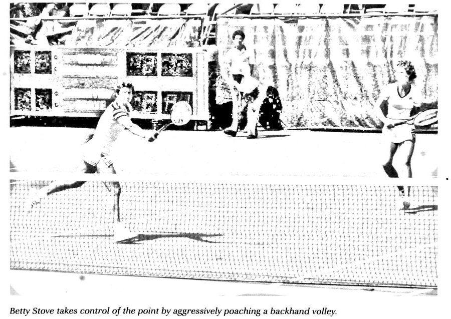
ĐỌC ĐỐI THỦ CỦA BẠNREADING YOUR OPPONENTS
Những người đứng lưới đã trở thành những tay cướp bóng (poach) giỏi không phải nhờ may mắn. Họ đã rèn luyện khả năng cướp bóng của mình thành một kỹ năng với thời điểm và động tác chính xác. Nhờ trực giác và khả năng nhận biết nhạy bén, họ học được khi nào là thời điểm thích hợp để cướp bóng và khi nào thì không.
Players at the net who have become good poachers have not done so by chance. They have developed their poaching into a skill with precise timing and movements. Through keen intuition and perception, they have learned when it is the right time to poach and when it isn't.
Những tay cướp bóng khéo léo thường lấy đối thủ làm cơ sở cho các động tác của mình. Họ tìm những cú đỡ giao bóng dễ đoán hoặc những cú đánh sở trường để phán đoán bóng sẽ được đánh đi đâu. Họ quan sát cách đối thủ dùng vợt, vai và động tác cơ thể để điều bóng đến những vị trí khác nhau trong suốt trận đấu. Nhờ đó, họ có thể di chuyển đến vị trí trên sân mà bóng sẽ bay tới trước khi bóng thực sự đến đó, bởi vì họ đã phán đoán được cú đánh một cách hiệu quả.
Artful poachers usually key their maneuvers off their opponents. They look for predictable returns or favorite shots to anticipate where the ball will be hit. They watch what opponents do with their rackets, shoulders, and body movements to direct the ball to different locations throughout the match. They are then able to move to the location on the court where the ball will be traveling before it actually gets there because they have effectively anticipated the shot.
Phán đoán thường chẳng qua chỉ là việc tức thì nhớ lại một tình huống trước đó. Đây là lúc bạn cần bật “sáng” trí óc mình và để nó có ích cho lối đánh đôi của bạn. Những cú đánh mà đối thủ đã thực hiện trong các tình huống khác nhau trước đây chính là thông tin được lưu trữ trong bộ não như một chiếc máy tính của bạn. Khi những tình huống đó tái diễn, hãy để trí óc bạn nhớ lại chuyện đã xảy ra trước kia để chuẩn bị tốt hơn cho những cú đánh mà họ có thể sẽ thử.
Anticipation is often no more than instant recall of a previous situation. This is the time to turn your mind “on” and let it benefit your doubles play. Shots your opponents have made in various situations in the past are stored information in your computer mind. When these situations occur again, let your mind recall what happened before to better prepare you for the shots they will probably attempt.
Để cướp một gôn trong bóng chày, người chạy gôn cần tập trung cao độ và chăm chú vào người ném bóng. Khi người chạy thấy người ném bóng đã quyết tâm ném về phía người đánh bóng và gôn nhà, chỉ khi đó anh ta mới có thể thử cướp gôn. Nếu người chạy không thể đọc được người ném bóng một cách hiệu quả, rất có thể anh ta sẽ không cướp gôn thành công. Điều này cũng đúng với những tay cướp bóng ở lưới trong quần vợt. Để cướp cú đánh ở lưới, người cướp bóng phải đọc được đối thủ. Nếu không có con mắt tinh tường, người chơi chắc chắn sẽ gặp phải phần khó khăn của mình trong việc cướp bóng.
To steal a base in baseball, intense concentration and focus on the pitcher are required of the base runner. Once the runner sees that the pitcher has committed to throw to the batter and home plate, then and only then can he attempt to steal. If the runner is unable to read the pitcher effectively, chances are he won't be successful in stealing. This is also true of poachers at the net in tennis. To steal the shot at the net, poachers must be able to read the opponent. Without a perceptive eye, players will certainly experience their share of poaching difficulties.
THỜI ĐIỂM LÀ CHÌA KHÓATIMING IS THE KEY
Những kẻ cướp bóng lão luyện không chỉ đọc đối thủ giỏi mà còn căn thời điểm động tác của mình thật chính xác. Những kẻ cướp bóng sai thời điểm thường "bắn pháo hiệu" cho đối thủ, báo hiệu rằng một cú cướp bóng đang được thực hiện. Điều này tạo ra một mục tiêu dễ dàng để đối thủ đánh vượt qua xuống hành lang biên đang bỏ trống. Tuy nhiên, những kẻ cướp bóng khôn khéo không bao giờ để đối thủ thấy mình di chuyển. Họ đã học được cách lừa đối thủ bằng việc hoàn thiện thời điểm của mình.
Expert poachers not only read their opponents well, they also time their movements precisely. Ill-timed poachers often “send up a flare’ to oppqnents signaling a poach is being attempted. This makes an easy mark for opponents to pass down the uncovered alley. Clever poachers, however, never let their opponents see them move. They have learned how to outsmart their opponents by perfecting their timing.
Khi người chơi chuẩn bị vợt và đôi chân để căn chỉnh đúng cách cho cú đánh chính là lúc họ nên cân nhắc xem bóng sẽ được hướng đi đâu. Những người đứng lưới rời vị trí quá sớm khi cướp bóng khiến quyết định trở nên dễ dàng cho đối thủ. Họ chỉ việc hướng bóng tới nơi "không có ai ở nhà", tức dọc biên. Những người đứng lưới kiên nhẫn thành công hơn trong việc chặn đứng những cú đỡ giao bóng. Chờ cho đến khi đối thủ đã quyết định hướng bóng (thay vì quyết định thay họ bằng cách đi quá sớm) sẽ làm tăng cơ hội cướp bóng thành công của họ.
When players prepare their racket and feet to align properly for the stroke is the time they should be contemplating where the ball will be directed. Net players who leave too early on the poach make the decision an easy one for them. They simply direct the ball where ‘‘no one is home,” down the line. Patient net players have better success at picking off returns. Waiting until the opponent has decided where to direct the ball (instead of deciding for them by going too early) will increase their chances for successful poaches.
Một khi người chơi đã bắt đầu vung vợt ra trước trong một cú đánh, họ đã cam kết với cú đánh đó. Việc thay đổi hay điều chỉnh cú đánh vào khoảnh khắc này là cực kỳ khó. Một kẻ cướp bóng khôn ngoan nhận ra điều này và xuất phát đúng thời điểm đối thủ bắt đầu vung vợt ra trước. Bóng vẫn chưa được đối thủ đánh đi, vậy mà người đứng lưới đã có thể "ăn gian" vị trí của mình bằng cách lén bước vài bước đúng lúc về phía giữa sân để đoán trước. Nhờ căn đúng thời điểm động tác, người chơi có thể cướp được nhiều bóng hơn và làm được điều đó mà không báo cho đối thủ biết ý định của mình.
Once a player has begun the forward swing of the racket on a stroke, he has committed to the shot. It is extremely difficult to change or alter the stroke at this instant. A wise poacher recognizes this and takes off at the exact moment the opponent begins the forward swing. The ball has not yet been struck by the opponent and yet the net player is able to “cheat” in his positioning by stealing several timely steps toward the center of the court in anticipation. By timing the movement, players are able to poach more balls and are able to do so without alerting opponents to their intentions.
NHỮNG THỜI ĐIỂM CƯỚP BÓNG TỰ ĐỘNGAUTOMATIC POACHING TIMES
Trong thi đấu thường xuyên xuất hiện những tình huống mang lại cơ hội tuyệt vời cho người đứng lưới cướp bóng. Những người đứng lưới cảnh giác, nhận ra những tình huống này sẽ có thể biến chúng thành những thời điểm cướp bóng tự động và chắc chắn sẽ thu lợi từ sự thông minh của mình.
Situations often occur during match play which offer terrific opportunities for net players to poach. Alert net players who recognize these situations will be able to make them become automatic poaching times and will surely profit from their intelligence.
Những quả bóng cao đánh về phía đối thủ thường khá khó để họ xử lý, đặc biệt nếu họ phải đánh bóng từ ngang vai hoặc cao hơn. Điều này tạo ra một cơ hội vàng thì người đứng lưới không thể cướp bóng. Những quả bóng cao do đối thủ đánh lên cũng mang đến cơ hội. Những quả bóng bay bổng lên cao mà không có nhiều lực nên là dấu hiệu để cướp bóng tự động.
High balls hit to opponents are usually quite difficult for them to handle, especially if they must stroke the ball from shoulder height or higher. This presents a golden opportunity for net players to poach. High balls hit from opponents also present opportunities. Balls that float up high without much pace should signal an automatic poach.
Những cú đỡ giao bóng thấp buộc đối thủ phải đánh hoặc vô-lê “lên” tạo điều kiện cho người đứng lưới cướp bóng dễ dàng hơn. Với những quả bóng thấp này, đánh dọc biên qua phần cao nhất của lưới là cực kỳ khó, nên đối thủ gần như luôn buộc phải đánh chéo sân. Những người đứng lưới năng động coi đây là tình huống để cướp bóng và sẽ tự động làm vậy mỗi khi bóng được đánh thấp về phía đối thủ. -
Low returns which require opponents to hit or volley “up” allow the net person an easier poach. To hit down the line over the highest part of the net is extremely difficult on these low balls, so opponents are forced to go crosscourt almost every time. Active net players see this as a situation to poach on and will do so automatically each time the ball is hit low to opponents.
Bóng đặt vào giữa sân dễ cướp hơn bóng đánh ra ngoài biên. Bóng càng rộng càng đòi hỏi phải bao quát hành lang biên nhiều hơn, do đó hạn chế việc di chuyển tự do ở lưới. Những cú giao bóng và cú đánh sâu buộc đối thủ phải trả bóng yếu hơn, cũng như những cú đánh mạnh hơn với nhiều lực hơn. Những người chơi trình độ cao nhanh chóng chuẩn bị cướp bóng khi những tình huống này xuất hiện.
Balls placed in the center of the court are an easier poach than balls played out wide. Wider balls require more coverage of the alleys thus prohibiting free movement at the net. Deep serves and shots force weaker replies as do shots hit harder with more pace. Advanced players quickly prepare to poach when these situations occur.
Khi bạn và đồng đội nhận ra đối thủ không thích những cú đánh nào, mỗi người sẽ dễ dàng hơn trong việc tạo đà cho người kia ghi những điểm thắng ở lưới. Người ở cuối sân đánh bóng thấp hơn, cao hơn, sâu hơn hoặc mạnh hơn, giữ bóng xuống giữa sân hoặc đánh vào điểm yếu của đối thủ. Người đứng lưới khi đó có thể đóng vai người hùng bằng cách chọn lấy những cú vô-lê dễ dàng. Đây chính là lúc tinh thần đồng đội cực kỳ quan trọng trong đánh đôi. Người đứng lưới có thể thắng nhiều điểm hơn và ảnh hưởng đến kết quả trận đấu khi đồng đội của họ biết cách hỗ trợ bằng việc tạo đà tốt hơn cho họ. Nếu không có sự hỗ trợ từ đồng đội, người đứng lưới buộc phải ít hoạt động hơn và do đó ít đe dọa hơn khi ở vị trí lưới.
Once you and your partner recognize which shots your opponents dislike, it will then be easier for each of you to set the other up for the winning points at the net. The baseline partner hits lower, higher, deeper or harder shots, keeps the ball down the center of the court or to the opponents’ weaknesses. The net partner is then able to play the hero by picking off easy volleys. This is when teamwork is so vitally important in doubles. Net players are able to win more points and influence the outcome of matches when their partners learn to help by setting them up better. Without help from their partner, net players are forced to remain less active and therefore less threatening while positioned at the net.
GIẢ ĐỘNG TÁC VÀ GIẢ ĐỘNG TÁC KÉPFAKES AND DOUBLE FAKES
Những người đứng lưới tỏ ra như đang lao theo mọi quả bóng có thể rất đáng sợ. Họ trở thành những "chướng ngại vật" mà đối thủ phải cố đánh vòng qua. Nhiệm vụ này ngày càng khó thực hiện hơn khi người đứng lưới di chuyển càng nhiều. Đây là lý do những người đứng lưới năng động kiểm soát những điểm họ chơi, trong khi những người đứng lưới thụ động chỉ ngồi nhìn những điểm diễn ra. Tuy nhiên, khi người chơi cướp bóng mỗi lần, thì chẳng có gì phải đoán già đoán non về điều sẽ xảy ra. Đối thủ chỉ việc chờ người đứng lưới lao ngang sân rồi đánh bóng ra phía sau lưng họ để ăn điểm xuống hành lang biên của họ. Những người đứng lưới khôn khéo thay đổi động tác của mình và khiến đối thủ rối trí. Họ không để đối thủ cảm thấy thoải mái vì họ không bao giờ để đối thủ biết mình sẽ làm gì tiếp theo.
Net players who appear to be going after every ball can be very intimidating. They become “obstacles” opponents must attempt to hit around. It is an increasingly more difficult task to accomplish the more the net person moves. This is why active net players control the points they play, while passive net players merely watch the points played. When players poach every time, however, there is little guesswork on what will occur. Opponents simply wait for the net player to shoot across the court and then play the ball behind them for winners down their alley. Clever net players mix up their movements and their opponents. They don’t allow opponents to get comfortable because they never let them know what they will do next.
Những người đứng lưới giỏi nhất luôn di chuyển. Họ không phải lúc nào cũng cướp bóng, nhưng họ luôn di chuyển như thể họ sắp cướp bóng. Bằng cách giả động tác cướp bóng rồi đôi khi lại đứng yên, đối thủ thấy chuyển động ở lưới nhưng không chắc điều gì sẽ xảy ra. Điều này mang lại sự bất định trong đầu đối thủ, khiến họ mất thăng bằng và luôn không thoải mái với lối chơi của mình.
The best net players always move. They don’t always poach, but they do always move as if they were going to poach. By faking to poach and then staying sometimes, opponents see the movement at the net but are unsure of what will occur. It brings uncertainty into the opponents’ minds, keeping them off balance and always uncomfortable with fheir play.
Những người giả động tác cướp bóng thực hiện động tác của mình trước khi đối thủ bắt đầu vung vợt ra trước. Hãy nhớ rằng, một khi cú vung vợt ra trước bắt đầu, người chơi đã cam kết với cú đánh đó. Giả động tác phải diễn ra trước sự cam kết này để khiến đối thủ nghĩ rằng họ đang đi. Khi đó anh ta sẽ cố lừa lại kẻ cướp bóng bằng cách đánh bóng xuống hành lang biên. Trước sự ngạc nhiên của anh ta, người đứng lưới hoàn toàn không đi mà thay vào đó đang chờ sẵn ở đó để bóng bay thẳng đến chỗ mình!
Players faking a poach make their movements before opponents begin the forward swing of the racket. Remember, once the forward swing of the racket begins, the player has committed to the shot. Fakes must occur before this commitment to make the opponent think they are going. He will then try to outwit the poacher by playing the shot down the alley. To his surprise, the net person didn’t go at all but is instead waiting there for the ball to come right to him!
Giả động tác kép là một động tác khôn khéo khác có thể khiến đối thủ của bạn hoang mang. Khi đối thủ đã quen với những cú giả động tác và cướp bóng của bạn và có thể đọc được khi nào mỗi thứ sẽ xảy ra, hãy làm họ hoàn toàn mất phương hướng bằng cách giả động tác kép hoặc giả động tác rồi đi thật. Giả động tác sớm trong khi cú đánh đang được chuẩn bị rồi một lần nữa ngay trước khi họ cam kết thực hiện cú đánh sẽ khiến đối thủ của bạn bối rối. Giả động tác rồi đôi khi đi thật sẽ hoàn toàn đảm bảo quyền kiểm soát điểm bằng cách khiến đối thủ của bạn bối rối và không thể đọc được ý định của bạn.
Double fakes are another clever maneuver that can keep your opponents confused. When opponents become wise to your fakes and poaches and are able to read when each will occur, throw them completely off by double faking or by faking and then going. Faking early while the stroke is being prepared and then once again just before she commits to make the shot, will bewilder your opponent. Faking and then going sometimes will completely secure control of the points by keeping your opponent perplexed and unable to read your intentions.
Những người đang học giả động tác phải nhận ra rằng nếu động tác của họ không được nhìn thấy thì đối thủ sẽ cảm nhận được rất ít mối đe dọa. Những chuyển động nhẹ của đầu, cơ thể hay bàn chân có thể không đủ để gây chú ý hay khiến người ta bận tâm. Bóng càng gần đối thủ thì động tác phải càng rõ rệt, vì sự tập trung của họ vào bóng càng sắc bén.
Players learning to fake must realize that unless their movements are seen, little threat will be felt by their opponents. Slight head, body, or foot movements may not be enough to cause attention or draw concern. The closer the ball is to opponents the more extreme the movements must be since their focus is keener on the ball.
Tất cả những việc đi, giả động tác, giả động tác kép, rồi giả động tác và đi thật này có thể mệt mỏi và chắc chắn đòi hỏi nhiều nỗ lực hơn hẳn so với việc chỉ đứng bất động ở lưới. Tuy nhiên, kết quả sẽ khiến mọi công sức của bạn trở nên xứng đáng. Bạn không chỉ đốt nhiều calo hơn ở lưới mà còn thắng được nhiều điểm hơn nữa!
All this going, faking, double faking, and faking and going can be tiring and certainly requires a lot more effort than simply standing motionless at the net. The results, however, will make all of your hard work worthwhile. You'll not only lose more calories at the net, you'll also win a lot more points!
AI CŨNG SỢ KẺ ĐIÊNEVERYONE IS AFRAID OF A CRAZY PERSON
Người ta cho rằng những "kẻ điên" là như vậy vì họ hành động phi lý. Bởi vì phản ứng của họ không bình thường, nên luôn khó đoán được chính xác họ sẽ làm gì tiếp theo.
“Crazy people” are thought to be that way because they act irrationally. Because their reactions aren’t normal, it’s always difficult to figure out just what they will do next.
Ai cũng sợ một kẻ điên. Nỗi sợ họ phần lớn xoay quanh sự không chắc chắn. Người ta không bao giờ biết phải mong đợi gì ở một người hành xử không bình thường. Những người đứng lưới hiếu động cũng bị sợ theo cách y hệt như vậy. Người ta cho rằng họ “phát điên” ở trên lưới với đủ mọi động tác, và vì thế đối thủ sợ họ. Những người đứng lưới hiệu quả nhất trong đánh đôi, dù bị coi là điên, lại thành công vì họ vượt trội về mặt tinh thần! Họ đã nhận ra cách thay đổi và kiểm soát khả năng đánh bóng của đối thủ thông qua các hành động của mình ở lưới.
Everyone is afraid of a crazy person. Fear of them mostly centers around uncertainty. One never knows what to expect from someone who doesn’t act normal. Hyperactive net players are feared in just the same manner. They are thought to be “crazed” up there at the net with all of their movements and because of this, opponents are fearful of them. The most effective net players in doubles, although thought to be crazy, are successful because they are mentally superior! They have realized how to alter and control their opponents’ shot-making abilities through their actions at the net.
Những người đứng lưới năng động cũng có thể gây rối loạn và trục trặc trong phối hợp cho chính đội mình, trừ khi có những điều chỉnh để bù đắp cho tất cả sự di chuyển đó. Theo nguyên tắc chung, người cướp bóng vượt qua vạch giao bóng giữa sân (vạch chia chiều dài sân thành hai nửa) nên ở lại bên mà mình đã vượt sang, bất kể họ có chạm bóng hay không. Điều này giúp người đồng đội ở sâu hơn biết được nửa sân nào cần bao quát. Người này phải đổi vị trí (switch) để bao quát khoảng trống mà người đứng lưới để lại. Nếu người đứng lưới chạy tới chạy lui trước lưới, người đồng đội ở sâu hơn sẽ không biết chắc phải bao quát nửa sân nào.
Active net players can cause confusion and teamwork troubles for their own team as well, unless adjustments are made to compensate for all of the movement. As a rule of thumb, players who poach across the center service line (which divides the length of the court in half) should stay on the side they have crossed into whether they've made contact with the ball or not. This will aid the deeper partner in realizing which side of the court to cover. He must switch to cover the territory left open by the net person. If the person runs back and forth in front of the net, the deeper partner is left in doubt as to which half of the court to cover.
MỌI QUẢ BÓNG ĐỀU ĐANG ĐẾN CHỖ BẠNEVERY BALL IS COMING TO YOU
Nhiều người chơi gặp vấn đề ở lưới vì họ thiếu sự tập trung cao độ và tư thế sẵn sàng. Họ đã vào vị trí lưới nhưng thực ra chưa sẵn sàng vô-lê. Họ quen chỉ vô-lê khi bóng hướng về phía mình, và vì điều đó không phải lúc nào cũng xảy ra trong đánh đôi, họ bị bất ngờ khi bóng cuối cùng lại bay về phía mình. Sau khi mắc vài lỗi ở lưới, họ càng tỏ ra ít sẵn sàng vô-lê hơn trong những lần chạm bóng tiếp theo. Thay vì tăng cường độ tập trung để vô-lê tốt hơn, họ quyết định chỉ canh giữ khu vực trước mặt mình bằng cách thử ít cú vô-lê hơn, vì sự tự tin của họ đã giảm.
Many players experience problems at the net because they lack intensity and readiness. They've assumed the net position but aren’t actually prepared to volley. They're used to volleying only when the ball is directed to them and since this doesn’t always occur in doubles, they're surprised when the ball does finally come in their direction. After they've made several mistakes at the net, they appear even less prepared to volley on future hits. Instead of sharpening their intensity to volley better, they resolve to guard their immediate area only by attempting fewer volleys since their confidence has been lowered.
Cách tốt nhất để chuẩn bị ở lưới là nghĩ rằng mọi quả bóng đều đang bay về phía bạn. Như vậy, bạn sẽ luôn tập trung cao độ và sẵn sàng vô-lê trong mỗi pha bóng. Bạn không cần chờ bóng đến với mình, chỉ cần lên kế hoạch và chuẩn bị như thể bạn sẽ vô-lê mọi quả bóng do đối thủ đánh sang. Những cú vô-lê tốt nhất sẽ đến khi bạn chủ động đi đến chỗ bóng thay vì chờ bóng. Bằng việc nghĩ rằng mỗi cú đánh sẽ được hướng để bạn vô-lê sẽ mài sắc sự nhận biết và tập trung của bạn vào bóng. Nó cũng sẽ giúp bạn tránh được sự bất ngờ khi bóng cuối cùng bay về phía mình.
The best way to prepare at the net is to think every ball is coming to you. In this manner, you will remain intense and ready to volley on each exchange. You need not wait for the ball to come to you, simply plan and prepare as if you will be volleying each ball played by your opponents. The best volleys will occur when you go to the ball instead of waiting for it. By thinking each shot will be directed for you to volley, your awareness and focus on the ball will be sharpened. It will also help you avoid the surprise when the ball finally does come your way.
QUY TẮC TẤN CÔNG/PHÒNG NGỰOFFENSIVE/DEFENSIVE RULE
Khi vô-lê, hãy nhớ quy tắc đơn giản này: Những quả bóng được đánh ở độ cao hơn mặt lưới nên được chơi tấn công, trong khi những quả được đánh thấp hơn mặt lưới là những cú phòng ngự.
When volleying, remember this simple rule: Balls that are taken higher than the level of the net are to be played offensively, while those taken lower than the net are defensive shots.
Đây là một quy tắc rất quan trọng cần tuân theo khi chơi gần lưới. Những quả bóng cao hơn mặt lưới nên được dứt điểm hoặc đánh để ăn điểm. Chúng nên được đánh chéo góc, đánh vào giữa hai đối thủ, hoặc đánh thẳng vào đối thủ gần nhất vì thời gian phản ứng của anh ta ngắn nhất. Những quả bóng cao đại diện cho cơ hội. Chúng là những quả nên được chơi hung hăng hoặc tấn công. Hãy tránh chặn những cú vô-lê cao trả lại cho đối thủ ở sâu hơn, người có nhiều thời gian hơn để phản ứng với nó. Những người chơi bỏ qua việc tận dụng những cơ hội bóng cao này đang phạm những sai lầm chiến thuật có thể gây tốn kém.
This is a very important rule to follow when playing close to the net. Balls that are higher than the net should be put away or hit for winners. They are to be angled off, hit between opponents, or hit directly at the closest opponent since his reaction time is shortest. Higher balls represent opportunities. They are the ones to play aggressively or offensively. Avoid blocking high volleys back to the deeper opponent who has more time to react to it. Players who neglect to take advantage of these high ball opportunities are committing tactical errors which can prove costly.
Một sai lầm tốn kém khác thậm chí xảy ra thường xuyên hơn là khi người chơi đánh những cú vô-lê thấp quá hung hăng. Họ cố đánh ăn điểm trong mọi cú vô-lê nên cú vô-lê thấp bị đối xử giống như cú cao hơn. Tuy nhiên, cú vô-lê thấp là một cú đánh khó hơn vì trước tiên nó phải vượt qua lưới. Cần phải thận trọng khi thực hiện nó. Mặt vợt nên được mở nhiều hơn khi tiếp xúc bóng để cho phép bóng vượt lưới tốt hơn và có độ sâu trong cú đánh. Toàn bộ cơ thể hạ thấp cho những cú vô-lê thấp được kiểm soát tốt, chứ không chỉ cây vợt. Những quả bóng được đánh ở vị trí thấp, không giống như những quả cao hơn, nên được hướng ra xa đối thủ gần nhất.
Another costly mistake which occurs even more often is when players hit lower volleys too aggressively. They attempt to hit winners on all volleys so the lower volley is treated the same as the higher one. The lower volley is, however, a more difficult shot since it must first clear the net. Caution must be used in executing it. Racket faces should be more opened at contact on the hit to allow better net clearance and depth on the shot. The entire body lowers for well controlled low volleys, not just the racket. Lower played balls, unlike higher ones, are to be directed away from the closest opponent.
Lý tưởng nhất là mọi quả bóng đều được vô-lê ở độ cao trên mặt lưới. Những người đứng lưới hung hăng cố gắng không để bóng rơi xuống dưới mép trên của lưới. Họ nhanh chóng di chuyển hoặc thẳng tới trước hoặc theo đường chéo để đón bóng sớm ở đỉnh cao nhất trước khi nó rơi xuống. Họ tránh di chuyển song song với lưới ngang qua sân. Họ biết cách tận dụng vị trí của mình và chơi những cú tấn công ở lưới. Tuy nhiên, họ hiểu quy tắc tấn công/phòng ngự; họ chỉ chọn chơi tấn công ở lưới mà thôi. Họ nhận ra rằng ngay khi bóng hạ xuống dưới mặt lưới, lợi thế sẽ chuyển sang đối thủ, nên họ rèn luyện khả năng di chuyển nhanh tới trước. Bằng cách đón bóng ở vị trí cao, họ có thể chơi tấn công và do đó giữ được quyền kiểm soát nhiều điểm hơn khi chơi ở lưới.
Ideally, all balls are volleyed above the net level. Aggressive net players try not to allow the ball to drop below the top of the net. They quickly move either straight forward or at a slant to catch the ball early at its peak before it drops. They avoid moving parallel to the net across the court. They know how to take advantage of their positioning and play offensive shots at the net. They do, however, understand the offensive/defensive rule; they merely elect to play offensively at the net. They realize that as soon as the ball dips below the net the advantage shifts to their opponents, so they work on their quick forward movement. By taking the ball high they’re able to play offensively and therefore retain control of more points played at the net.
BẠN ĐANG LO LẮNG ĐIỀU GÌ — 4½ FEET?WHAT ARE YOU WORRYING ABOUT — 412 FEET?
Rắc rối ở lưới của phần lớn người chơi bắt nguồn từ những ưu tiên ngược. Họ thường lo bao quát hành lang biên rộng 4½ feet của mình đến mức quên đi 3½ feet còn lại bên kia sân! Cú đánh cần quan tâm trong đánh đôi không phải là cú xuống hành lang biên, mà là (khiến hầu hết mọi người ngạc nhiên) cú đánh chéo sân! Cú đánh này mang lại vùng mục tiêu lớn nhất và an toàn nhất để đánh vào, và lại chính là cú đánh thường bị trao cho đối thủ.
Most players net trouble stems from backward priorities. They are usually so concerned with covering their 412 foot alley that they forget the remaining 3112 feet across the court! The shot to be concerned with in doubles is not the alley shot, it is (much to the surprise of most) the crosscourt shot! This shot offers the largest and safest target area to hit into and is the shot so often given to opponents.
Trong các trận đánh đôi, đối thủ đánh bóng xuống hành lang biên của bạn bao lâu một lần? Đối thủ của bạn càng phải đánh nhiều cú xuống hành lang biên thì trình độ của bạn có lẽ càng cao. Những cú xuống hành lang biên là lối đánh có tỷ lệ thành công thấp hơn. Sân ngắn hơn, góc hẹp hơn và lưới cao hơn. Đây chính là những cú đánh mà bạn muốn đối thủ phải thực hiện! Hãy khiến họ phải đánh xuống hành lang biên của bạn nhiều hơn, đừng cho họ những cú chéo sân dễ dàng.
How often do opponents direct the ball down your alley in doubles matches? The higher numbers of alley shots that your opponents must play, the higher level of player you probably are. Alley shots represent lower percentage play. The court is shorter, the angle is less, and the net is higher. These are the very shots you want your opponents to play! Make them hit down your alley more, don’t give them the easy crosscourt shots.
Vấn đề lớn nhất của những người chơi trình độ thấp là họ đứng quá gần hành lang biên. Họ cảm thấy nhiệm vụ của mình là bao quát dải rộng 4½ feet đó, dù bóng có lẽ chỉ bay theo hướng đó vài lần trong cả trận đấu. Họ đã đặt ưu tiên ngược lại. Tư thế của họ nên bắt đầu từ giữa ô giao bóng. Chỉ với một bước chéo lớn và chiếc vợt vươn ra, họ có thể bao quát đầy đủ toàn bộ hành lang biên, chỉ hở vài inch. Khi chọn tư thế gần giữa sân hơn, đối thủ sẽ có mục tiêu chéo sân nhỏ hơn để đánh vào và buộc phải cân nhắc cú đánh khó hơn là xuống hành lang biên (vốn đã được bao quát).
The biggest problem with lower level players is that they stand too close to the alley. Their duty, they feel, is to cover that 4% foot strip even though the ball will probably only come that direction several times in the entire match. They have their priorities backward. Their stance should begin in the center of the service box. With one huge cross-step and an outstretched racket, they should be able to adequately cover the entire alley barring several inches. By choosing a stance closer to the center of the court, opponents then have a smaller target crosscourt to hit into and are forced to consider the more difficult shot down the alley (which is already covered).
Nếu mỗi trận đối thủ chỉ đánh vài quả bóng xuống hành lang biên của bạn, có lẽ bạn đang chưa làm tốt nhất khả năng của mình ở lưới. Hãy khiến họ phải đánh những cú có tỷ lệ thành công thấp bằng cách lấy đi những cú chéo sân an toàn, tỷ lệ cao của họ. Đừng sợ những cú bóng xuống hành lang biên của mình, hãy bắt đầu quan tâm hơn đến những cú chéo sân đặt bóng thông thường.
If opponents are only directing a few balls down your alley each match, you're probably not doing the best job at the net that you could. Make them hit the low percentage shots by taking away their high percentage safe crosscourt hits. Don't be afraid of shots to your alley, start being more concerned with routine crosscourt placements.
NIỀM VUI ĐÓNG BĂNGFROZEN DELIGHT
Trong khi một người chơi chuẩn bị đánh bóng, ba người còn lại nên tránh đứng nhìn mà không di chuyển. Đặc biệt, những người đứng lưới nên di chuyển và vào vị trí liên tục trong suốt điểm đấu.
While one player prepares to strike the ball, the other three should avoid standing and watching without moving. Players at the net, especially, should be moving and positioning themselves constantly throughout the point.
Những người chơi đứng đóng băng ở lưới như tượng không tạo được sự uy hiếp. Đây là nơi nhiều trận đấu có thể được định đoạt. Việc giữ và bẻ game giao bóng liên quan rất nhiều đến người đứng lưới. Anh ta làm gì, chơi tốt đến đâu và gây áp lực nhiều đến mức nào đều là những yếu tố đóng góp quan trọng trong việc quyết định kết quả của mỗi game. Khi người đứng lưới đứng yên bất động, anh ta khó có thể là một tài sản cho đội. Ngược lại, nếu anh ta di chuyển và vô-lê tốt cùng với việc gây ra những sai lầm trong quá trình đó, đội của anh ta có lẽ sẽ có phần thành công của mình bất kể người đồng đội mạnh đến đâu.
Players who are frozen at the net like statues aren’t imposing. This is where many matches can be decided. Holding and breaking serve has a great deal to do with the net person. What he does, how well he plays, and how much he forces are all important contributing factors in determining the outcome of each game. When the net person is idle, he’s not likely to be an asset to the team. On the contrary, if he moves and volleys well and forces mistakes in the process, his team will probably experience its share of success no matter how strong his partner is.
Khi chơi ở lưới, hãy di chuyển để khiến đối thủ bận tâm và hỗ trợ đồng đội của bạn. Bạn sẽ giữ và bẻ game giao bóng với tư cách một đội và những nỗ lực của bạn ở lưới có thể ảnh hưởng lớn đến tỷ số. Hãy di chuyển đi — đừng là một "niềm vui đóng băng" để đối thủ thưởng thức!
When playing the net, move about to cause your opponents concern and to aid your partner. You will hold and break serve as a team and your efforts at the net can greatly influence the score. Get moving — don’t be a “frozen delight” for your opponents to enjoy!
TÓM TẮTSUMMARY
Để kiểm soát điểm từ lưới, người chơi phải năng động. Bằng cách di chuyển nhiều hơn ở lưới, đối thủ buộc phải thử những cú đánh khó hơn và sẽ mắc nhiều lỗi hơn trong quá trình đó. Những kẻ cướp bóng thông minh đọc đối thủ để đoán trước những cú đánh họ sẽ thực hiện. Họ căn thời điểm động tác của mình thật chính xác bằng cách chờ cho đến khi đối thủ đã cam kết với cú đánh. Họ lén bước vài bước then chốt về phía giữa sân trước khi đối thủ đánh bóng để vào vị trí tốt hơn cho cú vô-lê. Họ thậm chí còn cảnh giác nhận ra những thời điểm đòi hỏi cú cướp bóng tự động. Khi những tình huống này xảy ra, họ đã sẵn sàng cướp bóng và học cách làm điều đó một cách tự động. Những người đứng lưới hiệu quả luôn di chuyển. Họ không phải lúc nào cũng cướp bóng, nhưng họ luôn tỏ ra như thể mỗi lần đều sẽ đi. Đối thủ của họ không bao giờ có thể cảm thấy thoải mái với lối chơi của họ vì họ luôn bận tâm đến việc người đứng lưới sẽ làm gì hơn là việc họ đang làm gì với quả bóng.
To control the point from the net, players must be active. By moving more at the net, opponents are forced to try more difficult shots and will make more errors in the process. Intelligent poachers read their opponents to anticipate which shots they will hit. They time their movements precisely by waiting until the opponent has committed to the shot. They steal several crucial steps toward the center of the court before their opponent has struck the ball to better position for the volley. They are even alert to recognize times that call for automatic poaches. When these situations occur, they are primed to poach and learn to do so automatically. Effective net players always move. They don’t always poach, but they do appear as if they are going each time. Their opponents are never able to get comfortable with their play because they're always more concerned with what the net person will do than what they’re doing with the ball.
Hãy chuẩn bị ở lưới với sự tập trung cao độ và sẵn sàng như thể mọi quả bóng đều đang đến chỗ bạn. Điều đó sẽ giúp bạn tránh được những cú vô-lê đáng sợ bất ngờ. Hãy nhớ quy tắc vàng ở lưới: những quả bóng cao hơn mặt lưới là những cú tấn công, trong khi những quả được đánh thấp hơn mặt lưới trở thành những cú phòng ngự. Hãy ngừng lo lắng về hành lang biên của bạn và bắt đầu lo lắng về những cú đánh chéo sân dễ dàng mà đối thủ cứ liên tục thực hiện! Thay vào đó, hãy dụ đối thủ thử đánh xuống hành lang biên của bạn. Thành công của đội bạn phụ thuộc rất nhiều vào những gì bạn làm ở lưới, nên hãy tạo ra những thay đổi bằng cách học cách kiểm soát sân từ đó.
Prepare at the net with the intensity and readiness as if every ball is coming to you. It will help you avoid awful volley surprises. Remember the golden rule at the net: balls higher than the net are offensive shots while those taken lower than net level become defensive ones. Stop worrying about your alley and start worrying about the easy crosscourt hits your opponents keep making! Tempt your opponents instead to try your alley. The success of your team depends a great deal on what you do at the net, so make things happen by learning to control the court from there.
Tiến Lên Qua Các Trình Độ
BẠN CÓ MUỐN ĐI ĐÂU ĐÓ KHÔNG?GOING SOMEWHERE?
Vậy là... bạn và đồng đội của bạn đã sẵn sàng cho bước tiến lớn. Cả hai đều đã sẵn sàng thách thức và leo lên từng bậc trên chiếc thang thành công của quần vợt. Nhưng liệu cả hai bạn có cùng dấn thân cho hành trình này không? Đảm nhận một hành trình như vậy một mình thường gây ra xích mích và khó khăn giữa các đồng đội. Đó là lý do vì sao việc thiết lập những mục tiêu tương thích là quan trọng khi đội muốn tiến bộ. Nếu không có hiểu biết chung về việc đội đang ở đâu và muốn đi đến đâu, người ta thường chẳng mấy bận tâm đến việc tìm cách đi tới đó.
So... you and your partner are ready to make the big move. Both of you are primed to challenge and climb your way up the tennis ladder of success. But are you both committed to this quest? Undertaking such a journey solo usually causes friction and hardship among teammates. This is why it is important to establish compatible goals when teams wish to advance. Without a common understanding of where the team currently is and where the team wants to go, little thought is usually placed on trying to get there.
Trong mọi chuyến đi bạn từng thực hiện, bạn đều có một điểm khởi hành và một điểm đến. Rồi bạn lên đường để tới đó. Tuy nhiên, nếu bạn không biết mình đang ở đâu hoặc không hề biết mình đang đi đâu, bạn có nghĩ mình đã có một chuyến đi thành công không?!
On every trip you've ever taken, you had a departure location and an arrival destination. You then set out on your journey to get there. If, however, you didn’t know where you were or had no idea where you were going, do you think you would have had a successful trip?!
Đáng tiếc, đây là nguyên nhân thất bại của nhiều người chơi quần vợt và cũng chính là lý do nhiều người bỏ môn thể thao này. Thường rất khó xác định trình độ quần vợt của bạn là bao nhiêu, chứ chưa nói đến việc chỉ ra cách lên được trình độ cao hơn kế tiếp.
Unfortunately, this is the downfall of many tennis players and the very reason many drop from the sport. It’s often difficult to figure just what your level in tennis is, much less pinpoint how to get to the next highest level.
Những người chơi golf thì dễ thở hơn. Họ có hệ thống handicap trong môn của mình. Không chỉ dễ hơn trong việc ghép các trình độ với nhau, việc xác định các trình độ trong golf cũng dễ hơn. Nếu một golfer đánh trung bình hơn par (72) mười gậy cho mười tám hố, handicap của anh ta là mười. Để tiến bộ, anh ta chỉ cần nỗ lực hạ điểm handicap của mình xuống.
Golfers have it easy. They have a handicap system in their sport. Not only is it easier to match up ability levels, it's also easier to define the levels in golf. If a golfer shoots an average of ten strokes over par (72) for eighteen holes, his handicap is ten. To improve, he must simply work at lowering his handicap score.
Người chơi quần vợt không có hệ thống handicap để xếp hạng họ- -bản thân. Họ tự gán cho mình là người chơi trình C, B, A hoặc Open, thường không chắc chắn hạng mục nào mô tả đúng nhất lối chơi của mình. Vì các cấp độ hạng mục này thay đổi tùy theo thành phố, tiểu bang và câu lạc bộ, nên việc định nghĩa trình độ thực sự của lối chơi lại càng gây bối rối hơn. Và khi người chơi gặp khó khăn trong việc xác định mình đang ở đâu, thì việc cố gắng đạt tới một trình độ cao hơn và lại chưa được định nghĩa dường như là một hành trình bất khả thi.
Tennis players have no handicap system to rate themselves. They label themselves as C, B, A, or Open level players, often unsure exactly which category best describes their play. Since these category levels vary according to city, state, and club, it makes it even more confusing to define what level their tennis game actually is. And when players have a difficult time figuring where they currently are, trying to get to a higher and again undefined level seems an impossible journey.
Hiệp hội Quần vợt Hoa Kỳ (USTA) cùng với Hiệp hội Quần vợt Chuyên nghiệp Hoa Kỳ (USPTA) và Hiệp hội Các môn Thể thao Vợt Quốc tế (IRSA) đã thông qua một hệ thống đánh giá tay vợt có tên là “Chương trình Đánh giá Quần vợt Quốc gia” hay Hệ thống NTRP. Mục đích của nó là cung cấp “một phương pháp tự xếp loại ban đầu, đơn giản để nhóm những cá nhân có trình độ tương đương lại với nhau...” Các hạng mục đánh giá mô tả nhiều trình độ kỹ năng khác nhau trong môn này. Dưới đây là các trình độ kỹ năng NTRP. Hãy đọc kỹ tất cả các hạng mục và quyết định hạng mục nào mô tả đúng nhất trình độ cá nhân hiện tại của bạn cũng như của cả đội.
The United States Tennis Association in conjunction with the United States Professional Tennis Association and International Racquet Sports Association have adopted a tennis player rating system called the “National Tennis Rating Program” or NTRP System. Its aim is to provide a “simple, initial self-placement method of grouping individuals of similar ability levels .. .’”” The rating categories describe various skill levels in the game. Listed below are the NTRP skill levels. Read all the categories carefully and decide which category best describes your current personal ability level as well as that of your team.
Để tiến lên trình độ cao hơn kế tiếp, bạn chỉ cần đọc các hạng mục cao hơn để khám phá xem bạn và đồng đội còn thiếu điều gì. Hãy chắc chắn rằng mỗi người trong hai bạn hiểu rõ hạng mục cao hơn đó và sẵn sàng cùng nhau làm việc để nâng lối chơi của mình lên tới đó.
To advance to the next highest level, simply read the higher categories to discover what you and your partner are lacking. Make sure each of you understands the higher category and you are willing to work together to advance your games to reach it.
CÁC HẠNG MỤC ĐÁNH GIÁ NTRPNTRP RATING CATEGORIES
1.0 Người chơi này chỉ vừa mới bắt đầu chơi quần vợt.
1.0 This player is just starting to play tennis.
1.5 Người chơi này có ít kinh nghiệm thi đấu và vẫn chủ yếu tập đưa bóng qua lưới; có chút hiểu biết về cách tính điểm nhưng chưa quen với các vị trí và quy trình cơ bản khi đánh đơn và đánh đôi.
1.5 This player has limited playing experience and is still working primarily on getting the ball over the net; has some knowledge of scoring but is not familiar with basic positions and procedures for singles and doubles play.
2.0 Người chơi này có thể đã học vài buổi nhưng cần kinh nghiệm trên sân; có những điểm yếu rõ rệt trong động tác đánh bóng nhưng bắt đầu cảm thấy thoải mái với lối đánh đơn và đánh đôi.
2.0 This player may have had some lessons but needs oncourt experience; has obvious stroke weaknesses but is beginning to feel comfortable with singles and doubles play.
2.5 Người chơi này có những động tác đánh bóng đáng tin cậy hơn và đang học cách phán đoán bóng đi đâu; khả năng bao sân còn yếu hoặc thường bị hụt vị trí, nhưng đã bắt đầu giữ bóng trong cuộc chơi với những người chơi cùng trình độ.
2.5 This player has more dependable strokes and is learning to judge where the ball is going; has weak court coverage or is often caught out of position, but is starting to keep the ball in ‘play with other players of the same ability.
3.0 Người chơi này có thể đặt bóng vào điểm rơi với mức độ thành công vừa phải; có thể duy trì một loạt đánh qua lại với nhịp chậm nhưng chưa thoải mái với mọi động tác đánh bóng; thiếu kiểm soát khi cố đánh mạnh.
3.0 This player can place shots with moderate success; can sustain a rally of slow pace but is not comfortable with all strokes; lacks control when trying for power.
3.5 Người chơi này đã đạt được sự đáng tin cậy và định hướng trong động tác đánh bóng với những cú trong tầm với, bao gồm vô-lê thuận tay và vô-lê trái- các cú vô-lê, nhưng vẫn thiếu độ sâu và sự đa dạng; hiếm khi giao bóng hỏng hai lần liên tiếp và đôi khi buộc đối thủ mắc lỗi ở cú giao bóng.
3.5 This player has achieved stroke dependability and direction on shots within reach, including forehand and backhand volleys, but still lacks depth and variety; seldom double faults and occasionally forces errors on the serve.
4.0 Người chơi này có những cú đánh đáng tin cậy ở cả bên thuận tay và bên trái tay; có khả năng sử dụng nhiều loại cú đánh khác nhau gồm lốp bóng, đập bóng trên cao, cú lên lưới (approach shot) và vô-lê; có thể đặt giao bóng một vào điểm rơi và buộc đối thủ mắc một số lỗi; hiếm khi bị lệch vị trí trong một trận đánh đôi.
4.0 This player has dependable strokes on both forehand and backhand sides; has the ability to use a variety of shots including lobs, overheads, approach shots, and volleys; can place the first serve and force some errors; is seldom out of position in a doubles game.
4.5 Người chơi này đã bắt đầu làm chủ việc sử dụng lực và xoáy; có bộ chân di chuyển vững vàng; có thể kiểm soát độ sâu của các cú đánh và có khả năng điều đối thủ lên lưới rồi lùi về sau; có thể đánh giao bóng một với lực và độ chính xác cùng đặt giao bóng hai vào điểm rơi; có thể lao lên lưới với chút thành công ở cả đánh đơn lẫn đánh đôi sau cú giao bóng.
4.5 This player has begun to master the use of power and spins; has sound footwork; can control depth of shots and is able to move opponent-up and back; can hit first serves with power and accuracy and place the second serve; is able to rush the net with some success on serve in singles as well as doubles.
5.0 Người chơi này có khả năng phán đoán cú đánh tốt; thường có một cú đánh xuất sắc với độ ổn định đặc biệt để có thể xây dựng lối chơi quanh nó; có thể thường xuyên ghi điểm thắng hoặc buộc đối thủ mắc lỗi từ những quả bóng ngắn; có thể thực hiện thành công lốp bóng, bỏ nhỏ, bán vô-lê và đập bóng trên cao; có độ sâu và xoáy tốt ở hầu hết các cú giao bóng hai.
5.0 This player has good shot anticipation; frequently has an outstanding shot of exceptional consistency around which a game may be structured; can regularly hit winners or force errors off of short balls; can successfully execute lobs, drop shots, half volleys, and overhead smashes; has good depth and spin on most second serves.
5.5 Người chơi này có khả năng được xếp hạng ở cấp khu vực; đã phát triển lực và/hoặc sự ổn định thành một vũ khí chính; có thể thay đổi chiến lược và lối chơi trong tình huống thi đấu.
5.5 This player is capable of being ranked at the sectional level; has developed power and/or consistency as a major weapon; Can vary strategies and styles of play in a competitive situation.
6.0 Người chơi này thường đã trải qua quá trình huấn luyện chuyên sâu để thi đấu giải quốc gia ở cấp thiếu niên và đại học, và đã có được thứ hạng cấp khu vực.
6.0 This player typically has had intensive training for national tournament competition at the junior and collegiate levels and has obtained a sectional ranking.
6.5 Người chơi này có cơ hội hợp lý để thành công ở trình độ 7.0, có nhiều kinh nghiệm thi đấu các giải satellite và đã có được thứ hạng cao ở cấp đại học.
6.5 This player has a reasonable chance at succeeding at the 7.0 level, has extensive satellite tournament experience, and has obtained a top collegiate ranking.
7.0 Đây là người chơi đẳng cấp thế giới, bất kỳ nam giới nào hiện được xếp hạng trong top 500 trên máy tính ATP và bất kỳ nữ giới nào được xếp hạng trong top 200 trên máy tính WTA. Người chơi này dấn thân cho việc thi đấu giải ở cấp quốc tế và nguồn thu nhập chính là tiền thưởng giải đấu.
7.0 This is a world class player, any male currently ranked in the top 500 on the ATP computer and any woman ranked in the top 200 on the WIA computer. This player is committed to tournament competition on the international level and whose major source of income is tournament prize winnings.
THẮNG KHÔNG QUAN TRỌNG BẰNG HỌC HỎI VÀ TIẾN BỘWINNING ISN'T AS IMPORTANT AS LEARNING AND IMPROVING
Đáng tiếc thay, thành công thường được đo bằng thắng thua trong quần vợt, giống như hầu hết các môn thể thao. “Con thắng không?” là câu hỏi đầu tiên từ miệng các bậc phụ huynh, huấn luyện viên và bạn bè dành cho người chơi sau trận đấu. Dù chiến thắng có mang lại một cảm giác hài lòng tức thì, nhưng hiệu ứng của nó chỉ dừng ở đó. Để tiếp tục leo lên qua các trình độ, học hỏi và tiến bộ là những yếu tố quan trọng nhất. Không có hai điều này, lối chơi quần vợt của bạn sẽ đứng yên, không thể tiến bộ ngay cả khi bạn đang thắng. Để tôi giải thích.
Success, unfortunately, is often measured by wins and losses in tennis, like most sports. “Did you win?’ is the first question from the mouths of parents, coaches, and friends to players after a match. Although winning does bring with it a sense ofinstant gratification, its effects stop there. To continue your ascent up through the levels, learning and improving are the most important factors. Without these two, your tennis game is left to stagnate, unable to progress even if you're winning. Let me explain.
Thắng mà không học được gì từ trận đấu là một trận thắng/thua. Dù có ghi nhận một chiến thắng, người chơi thực ra đã thua vì cô ấy không tiến bộ trong quá trình đó. Những người chơi liên tục ghi toàn các trận thắng/thua chắc chắn sẽ biến chúng thành thua/thua trong tương lai. Khi người chơi đạt đến một mức bình nguyên trong lối chơi, đây chính xác là điều đã xảy ra. Họ không chắc làm sao để tiến bộ vì đã tận dụng quá ít khả năng tinh thần của mình để giúp bản thân đạt tới tiềm năng tốt nhất, do bỏ qua việc học hỏi từ những trận đã đấu.
To win and not learn from the match is a win/loss. Although a victory is recorded, the player has really lost because she hasn't progressed in the process. Players who continually score win/losses are certain to turn these to loss/losses in the future. When players reach a plateau with their game, this is exactly what has happened. They are unsure of how to progress because they have under-utilized their mental capabilities to help them reach their potential best by neglecting to learn from the matches they've played.
Thua một trận nhưng học được điều gì đó trong quá trình thi đấu có thể khiến kết quả dễ chấp nhận hơn. Khi người chơi hiểu được lý do thất bại của mình, phát hiện ra những động tác đánh bóng nào cần chú ý, và xây dựng chiến thuật tốt hơn chống lại đối thủ, họ đã ghi được một trận thua/thắng. Ngay cả khi tỷ số chênh lệch, người thua vẫn thu được từ trải nghiệm đó một kho kiến thức cần thiết để tiến bộ, nên thực ra người chơi đó đã thực sự thắng từ trận đấu! Thắng trận và học hỏi trong quá trình là điều lý tưởng, tuy nhiên, khi người chơi cố gắng học hỏi từ mỗi lần ra sân dù tỷ số cho thấy thắng hay thua, họ được đảm bảo sẽ tiếp tục nâng cao lối chơi quần vợt của mình.
Losing a match but learning in the process can make the outcome easier to swallow. When players learn the reason for their losses, discover which strokes need attention, and formulate better strategies against their opponents, they have scored a loss/win. Even if the score was lopsided, the losing player has obtained from the experience a wealth of knowledge necessary to advance, so actually the player has really won from the match! To win the match and learn in the process is ideal, however, when players strive to learn from each outing on the court whether the score indicates a win or loss, they are guaranteed to continue improving their tennis games.
Hãy cụ thể trong việc tìm kiếm câu trả lời từ trận đấu hay buổi tập bạn đã chơi. Hãy tua lại những điểm quan trọng trong đầu, tìm xem đội bạn đã đánh những cú tốt và xấu nào cũng như của đối thủ. Cố nhớ lại thế trận đã thay đổi khi nào và điều gì khiến nó thay đổi. Cũng hãy cố ghi nhớ những suy nghĩ của mình. Hãy thảo luận càng nhiều khía cạnh của trận đấu càng tốt với đồng đội sau khi kết thúc, dù bạn thắng hay thua. Hai bạn sẽ thu được những hiểu biết quý giá từ trải nghiệm đó. Nó cũng giúp mỗi người phân tích tốt hơn những diễn biến trong trận đấu, từ đó giúp đội bạn ghi được nhiều chiến thắng nhờ sự thông minh của mình.
Be specific in search of the answers from the match or practice you've played. Replay the key points in your mind, search for the good and bad shots your team played as well as those of your opponents. Try to recall when the momentum of the match changed and what caused it to do so. Attempt to remember your thoughts as well. Discuss as many aspects of the match as possible with your partner following its conclusion, whether you won or lost. The two of you will then be gaining valuable insight from the experience. It will also help each of you better analyze occurrences during matches, thus enabling your team to score many victories through your intelligence.
Các nhà giáo dục hiểu rằng để kiến thức “bám lại” hay lưu lại trong tâm trí, nó phải được sử dụng và luyện tập. Người chơi đang cố tiến lên qua các trình độ phải đem kiến thức đã học ra thử thách và áp dụng nó trên sân. Thách -thức những đội mà trước đây bạn từng khó đánh tốt, đừng né tránh họ. Hãy thi đấu với mọi trình độ người chơi để học cách đánh tốt nhất trước từng đối tượng. Hãy đưa đội bạn vào thử thách. Hãy tham gia các giải đấu khi có cơ hội. Nó có thể hóa ra là bài học rẻ nhất mà bạn từng có! Hãy tìm cách tiếp tục học hỏi và chia sẻ kiến thức mới tìm được với đồng đội. Đội bạn sẽ không bao giờ chệch khỏi con đường tiến bộ khi trọng tâm chính là học hỏi, dù tỷ số bạn ghi được có thuận lợi hay không.
Educators understand that for knowledge to “stick” or remain in the mind, it must be used and practiced. Players who are trying to advance through the levels must put their learned knowledge to the test and use it on the court. Challenge the teams that have been difficult to play well against in the past, don’t avoid them. Compete against all levels of players to learn how to play best against each. Put your team to the test. Compete in tournaments when you get the opportunity. It might prove to be the least expensive lesson you've ever had! Search for the way to continue learning and share newfound knowledge with your partner. Your team will never waver from the path of improvement when its primary focus is on learning, whether the scores you record are favorable or not.
LỢI THẾ TINH THẦNTHE MENTAL EDGE
Quần vợt là một môn chơi mang tính tinh thần rất cao. Tuy nhiên, rất khó nói chính xác bao nhiêu phần trăm yêu cầu là thuộc về tinh thần và bao nhiêu phần trăm là thuộc về thể chất đối với người chơi. Khi trình độ thi đấu tăng lên, tầm quan trọng của các yêu cầu về tinh thần chắc chắn cũng tăng lên bấy nhiêu.
Tennis is very much a mental game. It is extremely difficult, however, to say exactly what percentage of the requirements is mental and what percentage is physical for the players. As the level of play rises, the importance of the mental requirements is certainly that much more increased.
Những người chơi giàu kinh nghiệm làm chủ được trí óc mình. Họ tập trung hoặc chú tâm, cho phép phát huy tối đa tiềm năng tinh thần. Họ cũng bật “sáng” trí óc để suy nghĩ về chiến lược và chiến thuật nhằm tránh lối chơi vô thức. Họ có niềm tin và sự tự tin vào bản thân bằng cách chọn những suy nghĩ tích cực để mô tả lối chơi của mình.
Experienced players have their minds in control. They are concentrated or in focus, allowing for maximum mental potential. They also have their minds turned “on” to strategic and tactical thinking to avoid mindless play. They have belief and confidence in themselves by choosing positive thoughts to describe their play.
Để chơi tốt như nhau trước mọi trình độ đòi hỏi trạng thái tập trung cao độ. Thường thì chơi tốt và tập trung tốt hơn khi gặp đối thủ khó hơn lại dễ hơn so với khi chơi những trận dễ. Trí óc thường lang thang vì chán nản hoặc thiếu tập trung khi gặp đối thủ yếu hơn. Tuy nhiên, để phát triển trí óc (và lối chơi của bạn), tập trung tối ưu nên là mục tiêu của bạn mỗi lần ra sân. Không quan trọng đó là buổi tập, buổi học, trận đấu câu lạc bộ, thi đấu giải hay chỉ là một buổi đánh bóng. Bạn sẽ nhận lại từ trí óc mình đúng những gì bạn cho phép nó làm. Cố gắng tập trung vào lối chơi một cách rời rạc thường dẫn đến lối chơi thiếu ổn định hoặc rời rạc. Những người chơi thắng đều đặn, những người đã thành công trong việc nâng cao lối chơi, đều đã học được cách tập trung vào mọi cú chạm bóng bất kể ai ở bên kia lưới. Họ đã khám phá ra bí quyết chơi tốt một cách ổn định — tập trung ổn định!
To play equally well against all levels requires a high state of concentration. It’s often easier to play well and concentrate better against tougher opponents than it is when playing easier matches. Minds tend to wander out of boredom or lack of intensity against lesser opponents. However, to develop your minds (and your games), optimum concentration should be your goal every time you take to the courts. It shouldn’t matter whether it’s practice, a lesson, a club match, tournament play, or just a hit. You will get back from your mind what you allow it to do. Attempting to focus in on your play sporadically will usually result in inconsistent or sporadic play. Consistent winning players who have successfully advanced their games have all learned to concentrate on every hit no matter who is on the other side of the net. They have discovered the secret of playing well consistently — consistently concentrating!
Những người chơi được chuẩn bị kỹ về tinh thần và sẵn sàng cho các trận đấu của mình không phản ứng khi thi đấu, mà hành động. Những người phản ứng với các tình huống trên sân thì đã không dành nhiều suy nghĩ cho chúng, trong khi những người hành động có tầm nhìn xa để vạch ra kế hoạch về điều mình sẽ làm. Với suy nghĩ đó, họ có thể thực hiện kế hoạch của mình qua các hành động trên sân. Việc lập kế hoạch chiến lược và chiến thuật hình thành qua thói quen suy nghĩ. Tuy nhiên, những người suy nghĩ tốt hơn trong quần vợt thường không được tạo ra trong một đêm, họ được phát triển theo thời gian. Nói chung, trình độ người chơi càng cao thì họ càng giỏi phát hiện điểm yếu. Đó là lý do nhiều cựu vận động viên chuyên nghiệp có thể chuyển sang công việc huấn luyện. Họ tiến bộ trong môn này nhờ học được cách đọc đối thủ. Trên sân huấn luyện, họ sẽ tiếp tục phát hiện điểm yếu ở bên kia lưới, chỉ có điều lần này họ sẽ giúp đỡ người khác thay vì khai thác họ!
Players who are mentally prepared and ready for the matches they play don’t react while playing, they act. Those who react to situations on the court haven’t given much thought to them, while the players who act have the foresight to develop a plan for what they will do. With this in mind, they are able to follow out their plan with their actions on court. Strategic and tactical planning comes about through habitual thinking. Better thinkers in tennis, however, usually aren't made overnight, they are developed over time. Generally, the higher the level of player, the better they are at spotting weaknesses. This is why many past playing professionals are able to make the transition to the teaching courts. They have advanced in the sport by learning how to read their opponents. On the teaching court, they will continue to spot weaknesses across the net, only this time they will be helping others, not exploiting them!
Để trở thành những người suy nghĩ tốt hơn, hãy phân tích lối chơi của chính bạn cũng như của đối thủ. Hãy điều chỉnh chiến thuật cho phù hợp với lối chơi của bạn và với cách đánh cần thiết để đối đầu với đối thủ. Kế hoạch thi đấu này phụ thuộc vào đối thủ và điểm yếu của họ.
To become better thinkers, analyze your own games as well as those of your opponents. Tailor your strategies to suit your styles of play and the game necessary to play against your opponents. This game plan is contingent on your opponents and their weaknesses.
Hỏi: Ai có cú đập bóng trên cao yếu hơn?
Q. Who has the weaker overhead?
Đáp: Hãy lốp bóng qua người này.
A. Lob this person.
Hỏi: Có đối thủ nào yếu trong việc đỡ giao bóng không?
Q. Is one opponent weak in returning serves?
Đáp: Hãy cướp bóng (poach) nhiều hơn trước người này.
A. Poach more against this person.
Hỏi: Một trong hai người có cú giao bóng hai yếu không?
Q. Does either have a weak second serve?
Đáp: Hãy tiến vào trong sân và tận dụng điều đó.
A. Stand in and take advantage of it.
Hỏi: Đối thủ nào vô-lê yếu hơn?
Q. Which opponent is the weaker volleyer?
Đáp: Hãy đánh vào người này ở trên lưới.
A. Play this person at the net.
Hỏi: Có ai chậm chạp hơn không?
Q. Is one person slower?
Đáp: Hãy đánh người này ra biên nhiều hơn.
A. Play this person more out wide.
Hỏi: Đâu là những cú đánh sở trường của họ?
Q. Which are their favorite strokes?
Đáp: Hãy đánh vào tất cả những cú khác, không đánh vào những cú đó.
A. Play all others, not these.
Hỏi: Đâu là những vị trí ưa thích của họ trên sân?
Q. What are their favorite positions on court?
Đáp: Hãy buộc họ chơi ở những vị trí khác.
A: Make them play other positions.
Hỏi: Cú đánh nào là yếu nhất mà họ có?
Q. What is the weakest stroke they possess?
Đáp: Hãy đánh vào cú đó, hết lần này đến lần khác.
A. Play this one, time and time again.
Hỏi: Họ thích đón bóng ở độ cao nào?
Q. At what height do they prefer to take shots?
Đáp: Hãy cho họ tất cả các độ cao khác.
A. Give them all other heights.
Hỏi: Họ thích nhịp độ (pace) nào?
Q. What pace do they prefer?
Đáp: Hãy đánh bóng về phía họ với nhịp độ mà họ không thích.
A. Play shots to them at the pace they don't like.
Hãy linh hoạt trong kế hoạch sau khi điểm yếu của họ đã được phân tích và bàn bạc. Các tình huống được biết là có thể thay đổi trong khi thi đấu. Một điểm yếu bị đánh vào hết lần này đến lần khác có thể trở nên thuần thục và thực sự biến thành một điểm mạnh khi trận đấu diễn ra. Bạn phải chú ý đến những thay đổi này và sẵn sàng điều chỉnh chiến thuật mới khi chúng xuất hiện.
Be flexible in your planning after their weaknesses have been analyzed and discussed. Situations are known to change during match play. A weakness played over and over again can become grooved and actually turn into a strength as the match progresses. You must take notice of these changes and be prepared to adapt new strategies when they occur.
Lối chơi quần vợt của bạn chỉ tiến bộ đến mức mà bạn nghĩ nó có thể đạt tới. Nghe có vẻ đơn giản, nhưng điều đó rất đúng. Suy nghĩ tích cực là suy nghĩ được kiểm soát. Ít điều có thể đạt được mà không có nó. Hãy để những suy nghĩ tiêu cực hay hoài nghi xâm nhập vào tâm trí bạn và chúng sẽ bắt đầu ăn mòn niềm tin cùng sự quyết tâm của bạn, cuối cùng kìm hãm bạn khỏi hành trình của mình. Hãy cẩn thận khi chọn suy nghĩ. Hãy tự rèn luyện để suy nghĩ tích cực cả trên sân lẫn ngoài sân nhằm xây dựng sự tự tin và niềm tin vào lối chơi của bạn. Trí óc sẽ giúp đưa bạn lên những tầm cao lớn hoặc sẽ giữ bạn lại không cho bạn vươn tới đó. Lựa chọn là của bạn, vì chỉ bạn mới kiểm soát được trí óc mình!
Your tennis game will only advance to the level you think it can. It sounds simple, but it’s very true. Positive thinking is controlled thinking. Few things can be achieved without it. Let negative or doubtful thoughts enter your mind and they begin to consume your belief and determination, eventually holding you back from your quest. Be careful in choosing your thoughts. Discipline yourself to think positive thoughts both on and off the court to help build confidence and belief in your game. Your mind will help take you to great heights or it will hold you from reaching them. The choice is yours, since only you are in control of your mind!
NHỮNG CÚ ĐÁNH ĐƯA BẠN TỚI ĐÓTHE STROKES TO TAKE YOU THERE
Đánh đôi là một lối chơi đòi hỏi những cú đánh ổn định cùng với việc đặt bóng có tỷ lệ thành công cao. Tuy nhiên, những người chơi theo kiểu câu bóng (retriever) mà bỏ qua việc tận dụng vị trí trên sân và lựa chọn cú đánh hiệu quả sẽ gặp khó khăn trong việc nâng cao lối chơi của mình. Đó là vì cần hiểu rằng khi trình độ người chơi tăng lên, mục đích và chất lượng của việc đặt bóng cũng được nâng cao. Bóng không thể cứ đơn thuần được đánh trả qua lưới nữa, chúng phải được hướng một cách chính xác để đạt kết quả tối ưu.
Doubles is a game requiring consistent strokes along with percentage placements. Retrievers, however, who neglect to take advantage of court positioning and effective shot selection will struggle with the advancement of their games. This is because it is important to understand that as the level of players increases, the purpose and quality of the placements improve. Balls can't simply be hit back over the net any longer, they must be accurately directed for optimum results.
Trọng tâm chính của đội bạn phải là giành chiến thắng trong các game giao bóng của mình. Đội bạn giữ được game giao bóng càng dễ thì càng dễ tiến xa. Nghe thì đơn giản đến mức đáng sợ, nhưng đó phải chính là nền tảng để đội bạn xây dựng lối chơi của mình. GIỮ GAME GIAO BÓNG! Hãy cùng đồng đội tập giữ game giao bóng dễ dàng hơn. Những cú đánh đưa bạn tới đó là một cú giao bóng một có tỷ lệ thành công cao và một cú giao bóng hai đáng tin cậy (và chất lượng). Người giao bóng phải học cách buộc đối thủ phải “làm việc” bằng những điểm rơi chính xác. Người đỡ giao bóng không nên cảm thấy thoải mái khi chỉ đứng, xoay người rồi đánh trả bóng. Người giao bóng phải nhắm vào các góc của ô giao bóng và buộc người đỡ giao bóng phải sấn tới, với người hoặc chạy khi cố đỡ bóng. Người giao bóng nên thay đổi, biến hóa hoặc pha trộn cú giao bóng để đối thủ không bao giờ cảm thấy thoải mái khi biết trước điều gì sẽ đến. Những cú bóng được đánh với các loại xoáy khác nhau làm được điều này, cũng như những cú đánh thay đổi tốc độ và điểm rơi để giữ cho đối thủ phải đoán già đoán non. Những người giao bóng khéo léo khai thác điểm yếu của đối thủ và pha trộn cú giao bóng đủ nhiều để phá vỡ nhịp điệu và thời điểm mà hầu hết người đỡ giao bóng hằng khao khát.
The primary focus for your team should be to win your serves. The easier it is for your team to hold your serves, the easier it will be for your team to advance. It sounds frightfully simple, however, it should be the very basis your team builds its game on. HOLD SERVE! Work with your partner at holding serve more easily. The strokes that will take you there are a high percentage first serve and a reliable (and quality) second serve. Servers must learn to make opponents “work” through accurate placements. Receivers shouldn't be comfortable returning the ball by simply standing, turning, and hitting. Servers must aim for the corners of the service box and force the receiver to lunge, stretch, or run in attempting the return. He should alter, change, or mix up the serve so the opponents never feel comfortable knowing what to expect. Balls hit with varying spins accomplish this as do strokes which vary the speed and placement of the hit to keep opponents guessing. Clever servers exploit opponents’ weaknesses and mix up their delivery enough to throw off the rhythm and timing most receivers crave.
Giữ hay thắng game giao bóng đòi hỏi nỗ lực của cả đội. Nếu không có sự giúp sức từ người đồng đội đứng lưới, người giao bóng sẽ gặp không ít khó khăn khi cố thắng game một mình. Những cú đánh quan trọng ở đây là vô-lê và đập bóng trên cao. Nếu có cơ hội dứt điểm bóng, quy tắc cốt lõi cho người đứng lưới là cứ làm đúng như vậy, hãy dứt điểm! Người đứng lưới nên luôn tìm cách giúp đội giữ game giao bóng. Những lời khuyên chiến thuật cùng việc di chuyển và hoạt động nhiều chắc chắn giúp ích cho mục tiêu đó, tuy nhiên, những pha cướp bóng (poach) đúng lúc và những cú đánh được đặt chính xác sẽ đảm bảo thành công cho đội.
To hold or win serve requires a team effort. Without help from the net partner, the server will have his share of trouble attempting to win the game alone. The strokes that count here are the volley and the overhead. If there is an opportunity to put the ball away, the cardinal rule for the net person is to do just that, put it away! Net players should be on the lookout for ways to help the team hold serve. Strategic advice and lots of movement and activity certainly help the cause, however, well-timed poaches and accurately placed strokes will ensure the team’s success.
Bẻ gãy (hay thắng) game giao bóng của đối thủ là trọng tâm chính còn lại của đội bạn. Những cú đánh quan trọng để bẻ gãy giao bóng là cú đỡ giao bóng, lốp bóng và vô-lê. Những người đỡ giao bóng thành công hướng những cú đánh của mình với sự kiểm soát ổn định. Họ tránh xa những cú đánh có tỷ lệ thành công thấp vốn tạo ra kết quả thiếu ổn định. Trong khi cú đỡ giao bóng chéo sân là lối đánh an toàn, người đỡ giao bóng phải cố giữ bóng trong cuộc chơi một cách hiệu quả, đồng thời tránh xa tầm khai thác tấn công của đội giao bóng. Những cú đỡ bóng thấp rơi xuống hoặc những cú lốp bóng sâu hơn có thể được dùng để phá hỏng kế hoạch tấn công của đội giao bóng. Một khi thế tấn công đã chuyển khỏi đội giao bóng nhờ những điểm rơi như vậy, người đỡ giao bóng nên cố tận dụng tình huống bằng cách cướp lấy vị trí tấn công. Quyền kiểm soát điểm sau đó chuyển sang đội đỡ giao bóng.
Breaking (or winning) opponents’ service games is the other primary focus for your team. The important strokes for breaking serve are the return of serve, lob, and volley. Successful returners direct their shots with consistent control. They stay away from low percentage shots that produce inconsistent results. While the crosscourt return is the percentage play, receivers must work to keep the ball in play effectively and at the same time away from the offensive grasp of the serving team. Low dipping returns or deeper placed lobs can be used to thwart the serving team’s offensive plans. Once the offense has shifted away from the serving team with such placements, the receivers should strive to take advantage of the situation by stealing the offensive position away. Control of the point then shifts to the receiving team.
Giữ và bẻ gãy giao bóng chỉ có thể đạt được với những cú đánh ổn định và đáng tin cậy. Rõ ràng, rất khó để tiến lên trình độ cao hơn kế tiếp khi còn những điểm yếu rõ rệt trong động tác đánh bóng. Bạn cần những cú đánh mình có thể tin cậy: Năm cú đánh đã bàn đến — giao bóng, vô-lê, đập bóng trên cao, đỡ giao bóng và lốp bóng — là những cú cơ bản cần thiết để hoàn thành các chức năng thiết yếu là giữ và bẻ gãy giao bóng. Những cú đánh này càng chính xác ổn định bao nhiêu, đội bạn càng dễ leo lên các bậc trình độ bấy nhiêu.
Holding and breaking serve can only be accomplished with consistent and reliable strokes. Obviously, it’s very difficult to move to the next highest level with glaring stroke weaknesses. You need strokes you can depend on: The five strokes discussed — the serve, volley, overhead, return, and lob — are the basics necessary to accomplish the vital functions of holding and breaking serve. The more consistently accurate these strokes become, the easier it will be for your team to move up the ladder of levels.
XÂY DỰNG MỘT TÚI MẸODEVELOPING A BAG OF TRICKS
Những chính trị gia giỏi dường như chưa bao giờ cạn lời. Họ thường có thể nói cho qua được hầu hết mọi tình huống, thường làm mờ đi vấn đề bằng những thuật ngữ hoa mỹ. Họ có thể nhận một câu hỏi, không đưa ra câu trả lời nào, và trong quá trình đó lại đổ lỗi cho đối phương! Họ dường như sở hữu một khả năng kỳ lạ là lách qua được mọi vấn đề. Những đội đánh đôi thành công cũng được trang bị một “túi chiêu trò”. Họ không bước vào trận đấu mà không chuẩn bị, họ dường như có sẵn câu trả lời cho mọi tình huống từ rất lâu trước khi gặp phải nó. Họ cũng khéo léo trong cách đáp trả, thường khiến đối thủ mất thăng bằng trong quá trình đó.
Good politicians never seem to be at a loss for words. They can usually talk their way out of most situations, often clouding the issues with rhetorical jargon. They can take a question, give it no answer, and in the process lay the blame on their opponent! They seem to possess an uncanny knack for weaseling their way out of the issues. Successful doubles teams also come equipped with a “bag of tricks.” They don't play the game unprepared, they appear to have answers for every situation long before they're ever faced with it. They are also clever in their reply, often keeping opponents off balance in the process.
Một túi chiêu trò chẳng qua chỉ là sự chuẩn bị được lập trình sẵn. Khi xem xét kỹ lưỡng các câu hỏi trước khi chúng được đặt ra, câu trả lời luôn đến dễ dàng. Tương tự, bằng cách chuẩn bị trước lựa chọn cú đánh cho các tình huống khác nhau mà đội bạn sẽ gặp, bạn sẽ có sẵn một câu trả lời trong khi thi đấu. Điều cần thiết là sự cam kết toàn diện với lối chơi từ bạn và đồng đội. Đội có kho vũ khí chiêu trò lớn hơn hiếm khi rơi vào cảnh bế tắc trước các bài toán của trận đấu, trong khi những đội có túi chiêu trò hạn chế sẽ chỉ gặt hái được thành công hạn chế với ít lời đáp hơn.
A bag of tricks is nothing more than pre-programmed preparation. With careful review of the questions before they're ever asked, the answers always come easy. Likewise, by preparing your shot selection for the various situations your team will encounter, you will have a reply prepared and ready to answer during match play. What is required is a total game commitment from you and your partner. The team with the larger arsenal of tricks rarely finds themselves at a loss for match solutions, while teams whose bag of tricks is limited will discover only limited success with fewer replies.
Những tay vợt “một chiều” thường chơi tốt một nhiệm vụ duy nhất. Có thể họ chơi hoàn toàn tấn công hoặc phòng ngự, chỉ từ đường cuối sân hoặc ở lưới, hoặc chỉ với những cú đánh mạnh hay nhẹ. Tay vợt một chiều sẽ đánh bại một số đối thủ nhưng chắc chắn không phải tất cả. Họ thiếu những kỹ năng toàn diện cần thiết để đánh bại nhiều lối chơi và trình độ khác nhau. Họ phải trở nên toàn diện hơn với tư cách tay vợt để tiến bộ. Túi chiêu trò của họ cần phát triển để ghi điểm đều đặn trước vô vàn đối thủ đa dạng mà họ sẽ đối mặt.
“One-dimensional” players usually perform well at a single task. Maybe they play the game solely offensively or defensively, from only the baseline or at the net, or only with hard or soft shots. One-dimensional players will defeat some players but surely not all. They lack the total skills required to defeat a variety of styles and ability levels. They must become more well rounded as players to progress. Their bag of tricks needs to grow to score consistently well against the wide variety of opponents they will face.
Lựa chọn cú đánh là điểm khởi đầu tốt trong việc phát triển một lối chơi toàn diện. Dù đánh đôi hay phải bắt đầu với số lượng hạn chế những cú đánh bạn có thể tin cậy, thì đánh đôi trình độ cao đòi hỏi sự hiểu biết thực hành tốt về mọi cú đánh. Những tay vợt hiểu và đã luyện tập nhiều kiểu đánh đa dạng sẽ thấy mình sẵn sàng lặp lại chính những cú đánh đó trong trận đấu. Những cú như cú bỏ nhỏ (drop shot), vô-lê bỏ nhỏ (drop volley), vô-lê lốp (lob volley), bán vô-lê, cú chip, cú lên lưới (approach shot), và những cú đánh sau đầu cùng nhiều cú khác nên được học và phát triển. Chất lượng kiểm soát, về xoáy, độ sâu và lực, nên cũng bắt đầu được áp dụng cho những cú đánh bạn đã có để nâng cao hiệu quả của chúng. Hãy nhớ rằng, xây dựng một kho cú đánh lớn hơn có nghĩa là nhiều câu trả lời hơn trong túi chiêu trò của bạn, để mang lại nhiều thành công hơn cho đội bạn.
Shot selection is a good starting place in the development of a total game. Even though good doubles should begin with a limited number of strokes you can count on, advanced doubles play requires a good working knowledge of all the strokes. Players who understand and have practiced a wide variety of hits will find themselves prepared to repeat these same shots in matches. Shots such as the drop shot, drop volley, lob volley, half volley, chip shot, approach shot, and shots played behind the head among others should be learned and developed. Quality of control, in spins, depth, and power, should also begin to be applied to the strokes you already possess to enhance their performance. Remember, building a larger arsenal of strokes can mean more answers in your bag of tricks to bring about more success for your team.
Phát triển một loạt các kế hoạch chiến thuật rộng hơn cũng có thể làm tăng cơ hội thành công của đội bạn. Thay đổi vị trí mà đội bạn chơi khi cần thiết — lùi về cho các phương án phòng ngự, lên lưới cho các pha tấn công, và tạo ra những vị trí mới như đội hình đánh đôi Australian — giúp đội bạn luôn thích ứng để có thể thay đổi chiến thuật. Phát triển một lối chơi lốp bóng, một lối chơi tấn công, một lối chơi ổn định và một lối chơi kiên nhẫn cũng có thể chuẩn bị tốt nhất cho bạn trước những đòi hỏi đó khi tình huống phát sinh.
Developing a wider array of strategic plans can also increase your team’s chances of success. Changing the positions your team plays when necessary — back for defensive maneuvers, up to the net for offensive plays, and creating new positions such as Australian doubles formation — keeps your team adaptable to allow for strategic changes. Developing a lobbing game, an attack game, a steady game, and a patient one can also best prepare you for these demands when the situation arises.
Cuối cùng, kiểm soát bóng và điểm rơi tốt hơn là điều thiết yếu trong việc nâng cao lối chơi của bạn. Những người có khả năng điều bóng cả sâu lẫn ngắn ở mọi cú đánh, cao hay thấp, và có thể đánh bóng tốt như nhau dù mạnh hay nhẹ, thì có thể đặt bóng hiệu quả trong nhiều tình huống trận đấu khác nhau.
Finally, better control of the ball and its placement is vital in the advancement of your games. Those who have the ability to direct the ball both deep and short on all shots, high or low, and can hit the ball equally well hard or soft are able to place the ball effectively during a variety of match situations.
LÀM SAO ĐỂ GẶP MAYHOW TO GET LUCKY
Bạn và đồng đội của bạn sẽ tự tạo nên vận may của mình trong cuộc sống. Các bạn sẽ tự sắp đặt để đón nó hoặc không. Bạn thấy đấy, bạn càng chăm chỉ làm việc trong cuộc sống bao nhiêu, bạn sẽ càng gặp may bấy nhiêu!
You and your partner will make your own luck in life. You will set yourselves up for it or not. You see, the harder you work in life, the luckier you will be!
Những người không thành công từ chối tin điều này. Họ sống cuộc đời mình với giả định rằng may mắn là một sự việc ngẫu nhiên chẳng bao giờ mỉm cười với họ. Thành công của người khác được họ biện minh hoàn toàn bằng may mắn, vì họ ghen tị khi người khác gặp vận may. Họ có lẽ sẽ thấy mình may mắn hơn nhiều trong cuộc sống nếu họ học được cách đơn giản là bắt tay vào làm việc vì nó!
Non-achievers refuse to believe this. They live their lives assuming luckis a chance happening that never seems to turn their way. Others’ successes are rationalized purely in terms of luck, as they are jealous when others experience good fortune. They could probably find themselves much luckier in life if they learned simply to get down to work for it!
Thật không may, có rất ít đường tắt trên con đường thành công. Để có được “bánh đánh đôi mà vẫn ăn được bánh” sẽ cần lao động trên sân, có thể là rất nhiều. Kỷ luật là điều bạn và đồng đội cần, cùng với mức độ khao khát cao từ cả hai. Một khi bạn quyết định nâng cao trình độ của mình, hãy cam kết bằng cách làm điều gì đó nhiều hơn về nó. Chỉ ước ao hay mơ tưởng về việc tiến bộ sẽ mang lại cho đội bạn thành công ngang với chơi xổ số — một trong vài triệu cơ hội thành công!
Unfortunately, there are very few shortcuts on the road to success. To have your “doubles cake and eat it too” will take work on the court, maybe even lots of it. Discipline is what will be required from you and your partner along with a high level of desire from you both. Once you decide to advance your level, commit yourselves to it by doing something more about it. Simply wishing or dreaming of improving will score your team as much success as that of a lottery-one out of several million chances of success!
Những đội chỉ thích tập luyện bằng cách chơi trận với nhau có thể khám phá ra sự tiến bộ nhanh hơn bằng cách thay đổi lịch tập. Huấn luyện và bài tập lặp lại là những những yêu cầu bổ sung ngoài thi đấu. Chính sự tự tin và niềm tin vào các cú đánh và vào bản thân là điều phải được phát triển, và điều này thường chỉ có thể đạt được qua luyện tập lặp đi lặp lại. Để tiến bộ, một số đội chỉ cần đơn giản là luyện, luyện, luyện. Luyện tập theo cách này có thể thú vị, là một thử thách thực sự, hoặc có thể thực sự nhàm chán. Tất cả phụ thuộc vào thái độ của đội và tầm quan trọng đặt vào việc tiến bộ. Hai bạn thực sự muốn nâng cao trình độ của mình đến mức nào? Nếu muốn đủ nhiều, hãy chuẩn bị tinh thần làm việc vì nó.
Teams that prefer to practice by only playing matches together could discover more rapid improvement by altering their practice schedule. Training and drilling are necessary requirements in addition to match play. It is confidence and belief in strokes and selves that must be developed and this can often only be accomplished through repetitive practice. To improve, some teams need to simply drill, drill, drill. Practicing in this manner can be fun, a real challenge, or it can be a real bore. It all depends on the attitude of the team and the importance placed on improvement. How badly do the two of you really want to raise your level? If you want to enough, prepare yourselves to work for it.
Có thể bạn và đồng đội phát hiện ra rằng vấn đề của đội nằm ở những khiếm khuyết trong cú đánh. Nếu bạn không chắc về vấn đề, một buổi học cùng một giáo viên chuyên nghiệp có trình độ có thể chữa khỏi căn bệnh này. Tuy nhiên, nếu bạn đã biết rõ những khu vực có vấn đề, hãy dùng thời gian luyện tập của mình một cách khôn ngoan. Có thể đó là một cú đánh duy nhất như cú giao bóng cần được chú ý. Đặt các mục tiêu ở các góc của ô giao bóng bên kia lưới rồi cùng đồng đội đưa hàng trăm quả giao bóng vào đó để luyện điểm rơi chính xác. Đây là cách để cải thiện các cú đánh của bạn. Hãy tập trung vào những khu vực có vấn đề rồi cùng đồng đội làm việc để phát triển sự tự tin và niềm tin vào các cú đánh của mình.
Maybe you and your partner discover that the problem with your team lies in stroking deficiencies. If you’re unsure of the problems, a lesson together with a qualified teaching professional might cure the ailment. However, ifyou are aware of the problem areas, use your practice time wisely. Maybe it’s a single stroke such as your serve that needs attention. Place targets in the corners of the service boxes across the net and proceed along with your partner to direct several hundred serves to practice accurate placements. This is the way to improve your strokes. Focus in on the problem areas and then work together with your partner to develop confidence and belief in your strokes.
Hãy luyện tập theo cách bạn muốn đội mình thi đấu. Ví dụ, nếu bạn và đồng đội khao khát trở thành những người giao bóng rồi lên lưới giỏi hơn, hãy dành nhiều thời gian luyện tập hơn cho lối chơi này. Đội bạn sẽ không bao giờ giao bóng rồi lên lưới trong những trận quan trọng nếu bạn không tự tin khi làm điều đó, vì vậy hãy luyện giao bóng rồi lên lưới để phát triển mức độ tự tin đến mức bạn cảm thấy thoải mái sử dụng nó trong thi đấu. Thông thường, cách đội bạn luyện tập sẽ quyết định cách đội bạn thi đấu cuối cùng. Nếu có một cú đánh, chiến thuật hay lối chơi mà đội bạn mong muốn, hãy đơn giản dành nhiều thời gian luyện tập hơn để xây dựng sự tự tin vào nó.
Practice the way you would like your team to play. If you and your partner are longing to become better serve and volleyers for example, spend more time in practice working on this game style. Your team will never serve and volley in important matches if you're not confident in doing it, so practice serving and volleying to develop your level of confidence to the point where you will feel comfortable using it in match play. Invariably, the way your team practices will dictate the way it will eventually play. Ifthere is a stroke, strategy, or game style your team desires, simply spend more practice time developing your confidence in it.
Khi bạn và đồng đội đã cam kết từ bên trong để xuất sắc, các buổi luyện tập của bạn sẽ có mục đích. Chúng sẽ trở nên thử thách và bổ ích hơn một khi tầm quan trọng được đặt vào việc tiến bộ trong luyện tập. Hãy tập trung vào thời gian luyện tập của mình và sẵn sàng làm việc nếu cần. Những người thành công luôn khẳng định rằng chính việc chạm tới đỉnh cao không mang lại cho họ niềm vui lớn nhất, mà là tất cả sự chăm chỉ và những đấu tranh trên đường đi mới là điều bổ ích nhất. Hãy tận hưởng thử thách và bạn cùng đồng đội chắc chắn sẽ trở nên may mắn hơn nhờ nó.
When you and your partner have made an inner commitment to excel, your practices will have a purpose. They will become more challenging and rewarding once the importance is placed on improving in practice. Focus in on your practice time and prepare to work if necessary. Successful people have always attested to the fact that it wasn’t reaching the top that brought them the most joy, but all the hard work and struggles along the way which were most rewarding. En-Joy the challenge and you and your partner will certainly become all the luckier for it.
ĐỪNG QUÊN: ĐÁNH ĐÔI LÀ BÀI TẬP KỴ KHÍDON'T FORGET: DOUBLES IS ANAEROBIC
Những ai trong các bạn nghĩ rằng mình đang lấy lại phong độ khi chơi đánh đôi, tôi có tin này cho các bạn... đánh đôi là một bài tập kỵ khí! Điều này có nghĩa là, nếu bạn muốn chơi đánh đôi ở trình độ cao nhất, bạn sẽ phải lấy lại phong độ bằng những cách khác chứ không chỉ chơi đánh đôi. Có một cơ thể sung sức sẽ không chỉ mang lại lợi ích thể chất cho bạn và đội bạn, mà còn mang lại nhiều lợi ích tinh thần. Để bạn và đồng đội chơi ở phong độ tốt nhất, cần có sự cam kết rằng mỗi người trước tiên phải đạt được phong độ tốt nhất có thể.
Those of you who think you're getting into shape while playing doubles, I've got news for you . . . doubles is an anaerobic exercise! What this means is, if you want to play top level doubles, you will have to get into shape through other means than just playing doubles. Having a fit body will bring not only physical benefits to yourself and your team, it will bring many mental benefits as well. Fdr you and your partner to play your best, a commitment is required that each of you first get into the best shape that you can.
Nền tảng hiếu khí có thể được xây dựng ở mỗi bạn thông qua việc thỉnh thoảng chơi đánh đơn, chạy bộ, đi bộ, đạp xe, tham gia lớp thể dục nhịp điệu, hoặc những bài tập khác bao gồm những khoảng thời gian vận động liên tục kéo dài và sử dụng từ 60% đến 90% nhịp tim dự trữ tối đa. Những người có nền tảng hiếu khí vững chắc hồi phục nhanh hơn và ít mệt mỏi hơn. Họ cũng thường có huyết áp thấp hơn, mức căng thẳng tốt hơn, mức cholesterol thấp hơn, kiểm soát cân nặng tốt hơn, và lòng tự trọng cao hơn, chưa kể chơi quần vợt tốt hơn.
An aerobic base can be built in each of you through occasional singles play, running, walking, bicycling, aerobic class participation, or other exercises which include prolonged periods of constant movement and use between 60% and 90% of your heart’s maximum reserve. Players who possess solid aerobic foundations recover more quickly and tire less often. They also usually have lower blood pressure, better stress levels, lower cholesterol levels, their weight more under control, and higher self esteem, not to mention play better tennis.
Lý do đánh đơn thường được coi là bài tập hiếu khí còn đánh đôi thì không nằm ở tỷ lệ “làm việc-nghỉ ngơi” của mỗi loại. Người chơi đánh đôi có tỷ lệ làm việc trên nghỉ ngơi ngắn hơn người chơi đánh đơn, những người phải tự mình bao quát toàn bộ sân cũng như đánh mọi quả bóng đi về phía mình. Đánh đôi ở trình độ cao nhất là ngoại lệ của quy tắc này. Tuy nhiên, hầu hết các trận đánh đôi không được chơi với đủ nỗ lực để khuấy động hệ tim mạch làm tăng đáng kể lượng oxy hấp thụ của cơ thể. Đánh đôi thường chỉ mang lại khoảng một nửa lợi ích của đánh đơn và các hoạt động hiếu khí tương tự khác. Đây là lý do đánh đôi không được hầu hết các chuyên gia y học thể thao coi là một “hoạt động thể lực”.
The reason singles is generally considered aerobic exercise and doubles isn’t is due to the “work-rest” ratio in each. Doubles players have a shorter work-to-rest ratio than singles players who must cover the entire court themselves as well as strike every ball played to their side. Doubles played at the highest level is the exception to this rule. Most doubles, however, isn’t played with enough effort to stir the cardiovascular system to significantly increase the body's oxygen intake. Doubles usually only produces about half the benefits of singles play and other such aerobic activities. This is the reason that doubles isn’t considered a “fitness activity’ by most sports medicine experts.
Những người chơi trình độ cao nhận ra sự thật này và tập luyện theo những cách khác để hỗ trợ cho lối đánh đôi của mình. Bạn và đồng đội có sung sức không? Nếu có, có lẽ bạn đang kết hợp tập luyện hiếu khí cùng với chơi đánh đôi. Nếu bạn cảm thấy mình chưa ở phong độ tốt nhất, tôi tha thiết khuyên bạn nên bổ sung việc chơi đánh đôi bằng một hoặc vài hoạt động thể lực để rèn luyện và chuẩn bị tốt hơn cho kết quả tối ưu.
Advanced players recognize this fact and train in other ways to help benefit their doubles play. Are you and your partner in shape? If so, you're probably doing)a combination of aerobic training along with playing doubles. If you don’t feel that you're in the best of shape, I strongly urge you to supplement your doubles play with one or several fitness activities to better condition and prepare yourselves for optimum results.
TÓM TẮT eaeSUMMARY eae
Để nâng cao lối chơi, bạn và đồng đội cần đánh giá mình đang ở đâu và muốn ở đâu trong tương lai. Hãy tự xếp hạng theo thang NTRP để xác định trình độ mà bạn chơi, rồi đọc các cấp độ cao hơn để hiểu cần gì để nâng lối chơi của mình lên những trình độ đó. Hãy luôn cố gắng “thắng” từ những trận đấu bạn chơi bằng cách không ngừng học hỏi để tiến bộ. Ngay cả khi kết quả của bạn không thuận lợi, đội bạn vẫn ở trên con đường thành công khi bạn liên tục thu nhận kiến thức từ mỗi trận đấu mình chơi. Những tay vợt thắng nhưng không học hỏi trong quá trình đó thực sự mới là những kẻ thua cuộc thật sự trong các trận đấu họ chơi!
To advance your game, you and your partner need to assess where you currently are and where you would like to be in the future. Rate yourselves according to the NTRP scale to determine the level at which you play the game, then read the higher levels to ascertain what is needed to advance your games to these higher levels. Strive always to “win” from matches you play by constantly learning to improve. Even if your outcome scores are unfavorable, your team will stay on the road to success when you continually gain knowledge from every match you play. Players who win but don’t learn in the process are really the true losers in the matches they play!
Để có được lợi thế tinh thần đòi hỏi một tâm trí tập trung cao độ, tư duy chiến lược và chiến thuật, cũng như niềm tin và sự tự tin thông qua những suy nghĩ tích cực. Không nên có sự khác biệt dù ai ở bên kia lưới, trận đấu tinh thần diễn ra trong đầu bạn và chỉ bạn mới kiểm soát được nó. Trọng tâm chính của bạn và đồng đội phải là luôn giữ game giao bóng và bẻ được game giao bóng bất cứ khi nào có thể. Những cú đánh đưa bạn tới đó phải được chơi với sự ổn định để chúng trở nên đáng tin cậy. Tuy nhiên, đánh đôi trình độ cao đòi hỏi phạm vi cú đánh, chiến thuật và khả năng kiểm soát rộng hơn. Những tay vợt trình độ thấp có ít thành công hơn vì họ vẫn còn hạn chế về khả năng, trong khi các đội trình độ cao dễ dàng tỏa sáng nhờ túi chiêu trò lớn hơn. Nếu bạn và đồng đội muốn gặp may, hãy bắt tay vào làm việc! Bạn càng chăm chỉ trên sân luyện tập, đội đánh đôi của bạn sẽ càng may mắn! Nếu bạn không có thể lực tốt, đừng mong cải thiện thể trạng của mình qua việc chơi đánh đôi. Để chơi tốt nhất sẽ cần xây dựng một nền tảng aerobic vững chắc thông qua các hoạt động thể lực aerobic bổ sung. Hãy vào thể trạng tốt để chơi đánh đôi hay nhất của mình; đừng cho rằng lối đánh đôi hay nhất của bạn sẽ đến mà không có nó.
To gain the mental edge requires a mind in concentrated focus, strategic and tactical thinking, as well as belief and confidence through positive thoughts. It should make no difference who is on the other side of the net, the mental game is played within your head and only you are in control of it. The primary focus for you and your partner should be to hold serve always and break serve whenever possible. The strokes to take you there should be played with consistency for them to become reliable. Advanced doubles play requires, however, a broader scope of strokes, strategies, and control. Lower level players have limited successes since they remain limited in abilities, while advanced teams readily excel with a larger bag of tricks. If you and your partner want to get lucky, get down to work! The harder you work on the practice court, the luckier doubles team you'll become! If you're not in good shape, don’t expect to improve your condition through doubles play. To play your best will require building a solid aerobic foundation through additional aerobic fitness activities. Get in shape to play your best doubles; don’t assume your best doubles play will come about without it.
Đánh Đôi Kiểu “Sân Ly Hôn”
KHAI PHÁ ĐIỀU TỐT NHẤT (HAY TỆ NHẤT) Ở ĐỒNG ĐỘI CỦA BẠNBRINGING OUT THE BEST (OR WORST) IN YOUR PARTNER
Đánh đôi nam nữ đang nhanh chóng trở thành một trong những hình thức tennis phổ biến nhất được chơi ngày nay, đặc biệt ở cấp câu lạc bộ. Nó mang lại cơ hội cho nam và nữ cùng thi đấu trong một môn thể thao, thường là bình đẳng với nhau. Mặc dù chương này chủ yếu dành cho lối chơi đánh đôi nam nữ, nó thực sự liên quan đến “những trục trặc trong sự hợp tác” mà cũng có thể áp dụng tương tự cho đánh đôi nam và đánh đôi nữ.
Mixed doubles is fast becoming one of the most popular forms of tennis played today, especially at the club level. It offers the opportunity for men and women to compete together in a sport, often on equal terms. Although this chapter is mainly devoted to the game of mixed doubles, it really concerns ‘partnership troubles” which could equally be applied to men’s and women’s doubles as well.
Những thái độ chiến thắng cơ bản tương tự cũng áp dụng cho đánh đôi nam nữ như với các lối đánh đôi khác. Tuy nhiên, trong đánh đôi nam nữ, những áp lực tinh thần bổ sung khiến trò chơi trở thành một cuộc vật lộn khó khăn hơn với nhiều người. Người nữ đôi khi cảm thấy thua kém hoặc thậm chí xấu hổ nếu cô không thể làm tròn phần việc của mình cho đội. Người nam tin rằng vai trò của mình là vai trò chi phối và sẽ chơi với lòng tự trọng thấp hơn nếu anh không chứng tỏ được mình là người vượt trội trên sân.
The same basic winning attitudes apply to mixed doubles as they do for other doubles play. However, in mixed doubles additional mental pressures make the game a more difficult struggle for many. The female sometime feels inferior or even embarrassed if she is not able to do her part for the team. The male believes his role is the dominant one and will play with lower self esteem if he’s not proving himself as the superior one on the court.
Cách để phát huy điều tốt nhất ở đồng đội, bất kể giới tính, là truyền cho họ sự tự tin. Hãy làm họ cảm thấy quan trọng và thể hiện sự tôn trọng với họ. Đó là cách tốt nhất có thể để đối xử với đồng đội. Mỗi người đều có lúc cảm thấy thua kém hoặc bất an trên sân tennis. Nhiệm vụ của người đồng đội là giúp khôi phục sự tự tin đã mất. Khi các trận tennis đang chệch choạc, rất có thể sự tự tin của người chơi cũng vậy. Những người chơi hiểu điều này cố gắng xây dựng sự tự tin cho đồng đội để giúp họ luôn sắc bén và chơi hết sức mình. Họ tận dụng tối đa khả năng của đồng đội bằng cách tìm ra điều gì đó để khen ngợi họ. Có thể họ phải tìm kiếm điều đó vào những ngày bạn đánh đôi của mình chơi kém, nhưng họ luôn tìm một điều gì đó mà đồng đội đang làm "đúng" và chia sẻ điều đó với họ. Hãy nhớ rằng, lời khen giả dối không bao giờ có tác dụng. Chưa từng và sẽ không bao giờ, nên đừng thử!
The way to bring out the best in your partner, no matter the gender, is to instill confidence in them. Make them feel important and show them respect. That is the best way possible to treat your partner. Everyone has at one time or another felt inferior or insecure on the tennis court. It is the partner's duty to help restore lost confidence. When tennis games are faltering, chances are players’ confidence is as well. Players who understand this try to build their partner's confidence to help keep them sharp and playing their best. They make the best use of their partner’s abilities by finding something to compliment them on. They may have to search for it on days their mate is playing poorly, but they are always looking for something their partner is doing “right” and share this with them. Remember, false flattery never works. Never has and never will, so don't try it!
Một số người chơi khăng khăng đòi làm ông thầy huấn luyện ồn ào của đội, nắm quyền chỉ huy trên sân. Nếu bạn là "trung sĩ" của đội mình, hãy học cách hạ giọng ra lệnh! Không ai thích bị phán xét hay bị sai khiến trên sân. Hãy khéo léo kiềm chế không ra lệnh cho đồng đội. Phong độ của cô ấy sẽ luôn gắn với việc bạn kiểm soát cái miệng của mình tốt đến đâu.
Some partners insist on being the boisterous coach of the team, in charge of the court. If you are the sergeant of your team, learn to tone down your commands! No one likes to be judged or bossed around the court. Tactfully refrain from giving orders to your partner. Her performance will invariably be related to how well you can control your tongue.
Nếu bạn là người phải nhận những mệnh lệnh đó, hãy cố gắng thuận theo chiến thuật hay kế hoạch thi đấu mà đồng đội đã vạch ra. Thỏa hiệp ở những khác biệt nhỏ trong quan điểm. Sẵn sàng nhận vai trò phục tùng nếu cần để xoa dịu người đồng đội "cấp trên" của mình và mang lại sự hòa hợp cho đội. Đừng cố giành "quyền bình đẳng với tư cách đồng đội" ngay trên sân tennis; hãy để dành cho những cuộc trao đổi sau đó ngoài sân.
If you are the one on the receiving end of such orders, make the effort to go along with the strategy or game plan your partner has devised. Compromise on little differences of opinion. Be willing to assume a submissive role if necessary to appease your high ranking partner and bring harmony to the team. Don’t attempt to win “your rights as an equal partner” on the tennis court; save it for later off-court discussions.
Khi mọi cách đều thất bại, hãy nhớ quy tắc đơn giản này: Hãy giữ thái độ tích cực với chính mình và với đồng đội. Thật dễ để những suy nghĩ tiêu cực xâm nhập khi mọi thứ đang chống lại bạn, nhưng những đội đã học được cách tin vào điều tích cực thường chơi tốt hơn. Đừng bám mãi vào những chuyện nhỏ nhặt đã xảy ra trên sân, những lỗi ngớ ngẩn hay những cú đánh hỏng. Hãy cố tập trung vào những cú đánh hay để đưa hy vọng và lạc quan trở lại trong suy nghĩ. Đừng chỉ trích bạn đánh đôi của mình vì lỗi lầm hay so sánh họ một cách bất lợi với người khác. Cách hai người đối xử với nhau trên sân (đặc biệt là các cặp vợ chồng đánh đôi nam nữ) thường là dấu hiệu tốt cho thấy thực ra hai bạn hòa hợp với nhau đến mức nào.
When all else fails, remember this simple rule: Keep it positive with yourself and your partner. It’s easy to allow negative thoughts to enter when all is going against you, but teams that have learned to trust in the positive regularly play better. Don’t dwell on the little things that have happened on the court, the silly errors or missed shots. Try to focus on the good shots to put hope and optimism back into your thoughts. Stay away from criticizing your mate for mistakes or comparing him unfavorably to others. How you treat each other on the court (especially married couple mixed doubles teams) is often a good indication of just how well you actually get along.
ĐỔI VỊ TRÍ THAY VÌ CÃI NHAUSWITCH RATHER THAN FIGHT
Người đồng đội thường ngày vẫn đáng tin của bạn vừa đánh cú trái tay vào lưới lần thứ hai mươi ba trong ngày hôm nay, nếu có ai đếm. Bạn đã sẵn sàng gào lên, "chặt đầu" anh ấy, hay thậm chí từ mặt anh ấy. Chỉ có một vấn đề nhỏ... anh ấy là chồng bạn!
Your normally reliable partner has just hit his backhand into the net for the twenty-third time today, ifanyone is counting. You're ready to scream, take his head off, or even disown him. There’s one tiny problem...he’s your husband!
Các cặp vợ chồng đánh cùng đội phải cực kỳ cẩn thận khi chơi chung một đội. Vấn đề là bạn càng hiểu rõ một người bao nhiêu, bạn càng ít giữ ý tứ và để ý lời ăn tiếng nói của mình khi căng thẳng bấy nhiêu. Vì phần lớn các trận tennis chứa đầy những tình huống căng thẳng, những cặp đôi không thể kiểm soát cảm xúc của mình chắc chắn sẽ cãi nhau trên sân tennis. Những người có xu hướng khó chịu vì điểm yếu, sai lầm, thói quen xấu hay tính cách của vợ/chồng mình có thể đang tự đẩy mình vào một “hiệp đấu trên võ đài” với bạn đời trên sân đánh đôi!
Husband and wife teams must be extremely careful when playing on the same team. The problem is that the better you know someone, the less likely you are to mind your manners and watch what you say under stress. Since most tennis play is filled with stressful situations, couples Unable to control their emotions are certain to feud on the tennis court. Those who have a tendency to become annoyed at their spouses’ weaknesses, mistakes, bad habits, or personality might be setting themselves up for a “round in the ring” with their mate on the doubles court!
Hầu hết các vấn đề xảy ra khi người chơi trút sự bực bội lên nhau. Dù những người chơi này có thể chỉ đang xả hơi, kết quả cho đội có thể rất tai hại! Vợ/chồng cảm thấy bị coi nhẹ và phòng thủ, đội bị chia rẽ, mà vấn đề vẫn không được giải quyết! Thay vì trút căng thẳng lên đồng đội, hãy thư giãn, kiểm soát bản thân và tìm câu trả lời. Chính xác điều gì đang gây ra khó khăn cho đội bạn? Bạn có đang dùng sai chiến thuật hay kế hoạch thi đấu không? Bạn có đang dùng những lựa chọn cú đánh tốt nhất không? Đội bạn có đang ở vị trí tốt nhất trên sân không? Hãy thảo luận những điều này và những cách khác để quay lại đúng hướng. Đó là điều những người chơi biết suy nghĩ làm. Những người chơi thiếu suy nghĩ vẫn quan tâm đến việc xả hơi hơn là sửa chữa vấn đề.
Most problems occur when players take their frustrations out on each other. Even though these players might just be letting off steam, the results to the team can be devastating! Spouses feel belittled and defensive, the team is pulled apart, and the problem still isn’t solved! Instead of taking tension out on your partner, relax, get control of yourself, and look for the answers instead. What exactly is causing your team’s hardships? Are you using the wrong strategy or game plan? Are you using the best shot selections? Is your team best positioned on the court? Discuss these and other ways to get back on track. That’s what sensible players do. Senseless players remain more concerned with letting off steam than correcting the problems.
Nếu bạn nhất quyết chơi để thắng, hãy chắc rằng đồng đội của bạn đồng ý và sẵn lòng chơi lối chơi đó. Người khác có thể không thấy vui nếu bạn “độc chiếm” sân và đập bóng vào đội đối phương để giành điểm. Trong những tình huống cạnh tranh cao, mục tiêu của bạn sẽ là phơi bày điểm yếu của đối thủ, nhưng điều này vẫn có thể đạt được với tinh thần thể thao tốt, sự chính trực và phong thái đẹp.
If you insist on playing to win, make sure your partner agrees and is willing to play that game as well. Others may not enjoy the game if you “hog” the court and smash balls at the opposing team to win points. In highly competitive situations your aim will be to expose opponents’ weaknesses, but this can still be accomplished with good sportsmanship, integrity, and class.
Những cặp đồng đội lệch trình độ đòi hỏi mỗi người hiểu rõ vai trò mình phải đảm nhận trong đội. Người chơi mạnh hơn nên nhận nhiều bóng hơn, bao quát nhiều sân hơn và dứt điểm nhiều cú hơn để thắng điểm. Người chơi yếu hơn nên cố gắng lốp bóng nhiều hơn, đặc biệt nếu họ có thể đặt bóng cao và sâu chính xác. Điều quan trọng là hiểu rõ vai trò của mỗi người chơi nếu họ muốn phối hợp ăn ý với nhau. Khi những vai trò này bị đảo ngược và vấn đề phát sinh trong đội, đó không phải lúc để cãi nhau mà là lúc nói chuyện mang tính chiến thuật.
Mixed level partnerships require each to understand the role they are to play on their team. The stronger player should take more balls, cover more of the court, and put more shots away to win the points. Weaker players should attempt to lob more, especially if they can place the ball high and deep with accuracy. It is important to understand each player’s role if they are to play compatibly together. When these roles are reversed and problems arise with the team, it’s not time to fight but rather to talk strategically.
Đổi bên với đồng đội có thể là một nước đi khôn ngoan nếu set vừa chơi là một thảm họa. Có thể đối thủ đang đặt bóng vào điểm yếu của đội bạn một cách dễ dàng. Đôi khi, bằng cách đổi bên, bạn ở vị trí tốt hơn để bảo vệ điểm yếu và phát huy điểm mạnh của mình. Nó cũng có thể khiến đối thủ mất phương hướng nếu họ đã quen với những điểm rơi cụ thể từng thành công nhưng nay không còn hiệu quả nữa.
Trading sides with your partner could be a wise move if the previous set played was a disaster. Maybe your opponents were placing the ball to your team’s weaknesses with ease. Sometimes by changing sides you're better positioned to protect your weaknesses and play your strengths. It can also throw your opponents off if they've become grooved to particular placements that. were once successful but no longer are.
Những cặp vợ chồng yêu thích lối đánh đôi nam nữ (nhưng chỉ miễn là họ không chơi cùng một đội) vẫn có thể chơi cùng nhau ở hai bên đối diện của sân. Bằng cách chọn một người đồng đội khác nhưng vẫn ở cùng sân với vợ/chồng mình, bạn sẽ có thể cùng nhau trải nghiệm các trận đánh đôi nam nữ mà vẫn giữ được cuộc hôn nhân với nhau.
Husbands and wives who enjoy the game of mixed doubles (but only as long as they're not playing as a team) can still play together on opposite sides of the court. By choosing a different playing partner but remaining on the same court with your spouse, you'll be able to experience mixed doubles matches together while staying married to each other.
Những người chơi biết cùng nhau cười thường gắn bó với nhau và không có nguy cơ tan vỡ. Nếu bạn có thể cùng nhau cười, mỉm cười và tận hưởng cuộc chơi, nhiều khả năng bạn đang chơi với đúng người đồng đội. Tuy nhiên, nếu bạn trải qua những giây phút căng thẳng trên sân, muốn "giết" đồng đội của mình, hãy học cách kiểm soát cảm xúc hoặc đổi người đồng đội. Nhưng nếu bạn không thể kiểm soát cảm xúc của mình với người đồng đội này, liệu bạn có chắc mình sẽ làm được với người khác không?
Players who can laugh together, usually stay together and pose no breakup threat. If you're able to laugh, smile, and enjoy the game together, chances are you're playing with the right partner. If, however, you experience tense moments on the court, wanting to “kill” your partner, learn to take control of your emotions or make a partner switch. If you’re not able to control your emotions with this partner though, are you sure you will be able to with another?
BẠN CÓ NÊN ĐỀ NGHỊ "CHIA TAY"?SHOULD YOU ASK FOR A SEPARATION?
Khi đồng đội của bạn chơi kém, đó có thể là cảm giác rất bất lực. Tuy nhiên, điều quan trọng là phải nhớ rằng sẽ có ngày đồng đội của bạn phải "cõng" bạn, nên hãy cố thấu hiểu khi phong độ của đồng đội đi xuống. Dù vậy, những mối quan hệ căng thẳng vẫn có thể nảy sinh khi người chơi cảm thấy không thoải mái khi chơi cùng nhau. Có thể một người chơi sa sút trong một thời gian, hoặc đội có một chuỗi trận không thành công, hoặc có chuyện gì khác xảy ra ảnh hưởng đến mối quan hệ giữa hai người đồng đội.
When your partner plays poorly, it can be a very helpless feeling. It is, however, important to remember that the day may come when your partner will have to carry you, so try to be understanding when your partner's play is down. Still, strained relationships can develop when players feel uncomfortable playing together. Maybe one player falls into a stump for a period of time, or the team has an unsuccessful streak, or something else has happened that affects the relationship of the partners.
Sự hợp tác trên sân cũng giống như sự hợp tác trong cuộc sống. Cần rất nhiều học hỏi, cảm nhận, thấu hiểu và nỗ lực để nó bền lâu. Nếu sự nhàm chán len lỏi vào từ những khoảng thời gian quen nhàm, tẻ nhạt hay đơn điệu bên nhau, hãy sáng tạo lên! Để một mối quan hệ vận hành được, đôi khi bạn cần kéo nó ra khỏi sự buồn tẻ bằng cách làm mọi thứ thử thách và thú vị hơn. Hãy làm cho khoảng thời gian trên sân của bạn cùng đồng đội trở nên thú vị hơn. Hãy mang trở lại niềm say mê có lẽ chính là điều đã đưa hai bạn đến với nhau trên sân tennis ngay từ đầu.
Partnerships on the court are just like partnerships in life. A lot of learning, feeling, understanding, and effort are required to make it last. If staleness creeps in from routine, dull, or uneventful time spent together, get creative! To make a relationship work sometimes you may need to bring it out of boredom by making things more challenging and exciting. Make your time spent on the court more enjoyable with your partner. Bring back the zest that probably brought you two together on the tennis court to begin with.
Căng thẳng có thể nảy sinh từ việc phản ứng thái quá với những chuyện nhỏ nhặt nhất trên sân. Những tiếng thở dài, những cái liếc nhìn, hay sự lịch thiệp dành cho đồng đội khi họ đánh hỏng một cú hay mắc lỗi là điều then chốt, không chỉ với sự tự tin của họ mà còn với lòng tận tụy của họ dành cho đội. Nếu bạn và đồng đội có lúc gặp phải những khác biệt, cách bạn đối xử với nhau trong những điều nhỏ nhặt sẽ cực kỳ quan trọng. Hãy cố hiểu và giải quyết những khác biệt của mình khi chúng xảy ra; đừng quá vội vàng giải quyết vấn đề bằng cách chia tay.
Tension can be created by overreacting to the littlest things on the court. The sighs, looks, or courtesy extended to partners when they have missed a shot or made a mistake are crucial not only to their confidence but also to their dedication to the team. If you and your partner ever experience differences, the way you treat each other over the little things will be vitally important. Try to understand and settle your differences when they occur; don't be too quick to remedy the problem with a separation.
Khi mọi thứ khác đều thất bại, một cuộc chia tay thử có thể là câu trả lời. Những cuộc chia tay mang lại thời gian xa nhau cần thiết và cho mỗi người chút khoảng thở để đánh giá tình hình và sắp xếp mọi thứ. Người chơi có thể chỉ muốn chơi với vài đồng đội khác để xem liệu một sự hợp tác tốt hơn có thể được hình thành ở nơi khác không. Nếu thành công, những cuộc chia tay có thể truyền cảm hứng để các đồng đội gặp lại nhau một cách “tươi mới” hoặc là cơ hội để nhận ra sự không tương thích của họ.
When all else has failed, a trial separation may be the answer. Separations provide needed time away and allow each some breathing room to evaluate the situation and sort things out. Players might just want to play with several other partners to see if a better partnership could be formed elsewhere. If successful, separations can provide the inspiration for partners to get together again ‘‘fresh” or the opportunity to recognize their incompatibility.
Điều thường thiếu ở những người chơi trải qua giai đoạn chơi kém cùng nhau là sự hiểu biết về điều gì khiến họ chơi như vậy. Những khác biệt trong tương tác thường là kết quả của lối chơi kém, không phải nguyên nhân. Nếu cùng với đồng đội, bạn đã cố tìm ra lý do cho phong độ dưới mức của mình hoặc đã phát hiện ra chúng nhưng không thể tìm ra cách chữa, bạn có thể muốn tránh chia tay bằng cách tham gia một hoặc vài buổi học tennis (cùng nhau) với một giáo viên chuyên nghiệp có chứng chỉ tại địa phương.
What is usually lacking in players who experience periods of poor play together is the understanding of what is causing them to play this way. Interaction differences are usually the result of poor play, not the cause. If, along with your partner, you've attempted to discover the reasons for your sub-par performance or you've uncovered them but are unable to find the cure, you might want to avoid a separation by taking one or several tennis lessons (together) with a local certified teaching professional.
HÃY GẶP CHUYÊN GIA TƯ VẤN HÔN NHÂN (CHUYÊN GIA ĐỊA PHƯƠNG)VISIT A MARRIAGE COUNSELOR (LOCAL PRO)
Các giáo viên chuyên nghiệp đôi khi phải đảm nhận vai trò của nhà tâm lý học và cố vấn hôn nhân trên sân tennis. Lời khuyên có trả phí của họ không chỉ giúp chữa cơ chế cú đánh của học viên, mà còn cả những rối loạn tinh thần, vấn đề trong cuộc sống và những nỗi khổ trong sự hợp tác của họ.
Teaching professionals sometimes have to assume the roles of psychologists and marriage counselors on the tennis court. Their paid advice helps not only to cure students’ stroke mechanics, but their mental disturbances, problems in life, and partnership woes as well.
Việc tôi là một giáo viên chuyên nghiệp không có nghĩa là tôi tán thành các chuyên gia tennis như những “guru” cho mọi vấn đề của cuộc sống! Tuy nhiên, họ có thể giúp các đội giải quyết những khác biệt hoặc đưa lối chơi của họ trở lại đúng hướng bằng những lời khuyên hợp lý, am hiểu. Họ sẵn sàng hướng dẫn và dìu dắt các đội bằng con mắt khách quan, và lắng nghe, tư vấn cho các đội bằng đôi tai khách quan.
Just because I am a teaching professional does not mean that I endorse tennis professionals as “gurus” for all of life’s problems! They can, however, help teams settle their differences or get their games back on track with sound, knowledgeable advice. They are available to instruct and guide teams with an objective eye and listen and counsel teams with an objective ear.
Khi những trục trặc trong sự hợp tác bắt đầu, hãy dập tắt chúng từ khi còn trong trứng nước bằng một buổi học trước khi chúng đạt tới giai đoạn không thể kiểm soát. Học cùng nhau có thể mang lại cho đội bạn thời gian cần thiết để thảo luận chiến thuật với một huấn luyện viên chuyên nghiệp, khám phá và cải thiện những điểm còn yếu, giải quyết những khác biệt nhỏ, hoặc đơn giản là đưa hai bạn trở lại làm việc cùng nhau như một.
When partnership troubles begin, nip them in the bud with a lesson before they reach an uncontrollable stage. Taking lessons together can provide your team with the needed time to discuss strategies with a professional coach, discover and improve problem areas,:settle little differences, or simply get you two back working together as one.
HÃY GẠT CÁI TÔI SANG MỘT BÊNLET THE EGO SLIDE
Đánh đôi nam nữ, hay "đánh đôi rắc rối" như đôi khi người ta vẫn gọi, có thể được chơi giống hệt bất kỳ lối đánh đôi nào khác. Điều đôi khi khiến trò chơi này trở nên đặc biệt là ảnh hưởng của nó lên cái tôi của người chơi. Khi cả nam lẫn nữ cùng thi đấu trên một sân, người chơi có thể trở nên quá bận tâm đến việc những người khác trên sân nghĩ gì về mình (thậm chí còn hơn cả trong đánh đôi thông thường). Kết quả thường thấy là một số người chơi cố tránh tỏ ra thua kém bằng cách đánh những cú mạnh hơn và những cú khó hơn mức thực sự cần thiết.
Mixed doubles, or “mixed troubles” as it’s sometimes called, can be played just like any other doubles. What makes this game unique at times is the effect it has on one’s ego. When both male and female compete together on the same court, the players can become overly concerned with what others on the court may be thinking of them (even more so than in regular doubles). What often results is some players trying to avoid appearing inferior by using harder hit strokes and more difficult shots than are necessarily required.
Những anh chàng "đại trượng phu" cố làm hết mọi thứ thường kết cục là làm đội thua (dù họ thường đổ lỗi cho đồng đội). Những người đàn ông này không nên quá bận tâm đến việc thể hiện bản lĩnh đàn ông trên sân, phô diễn sức mạnh trong mọi cú đánh. Những cú đánh quan trọng như lốp bóng, cú chạm nhẹ, đổi nhịp độ và cú đánh góc không nên bị né tránh vì sợ mất bản lĩnh đàn ông. Đánh hết sức trong mọi cú chỉ thành công ở đánh đôi tại trình độ chuyên nghiệp cao nhất. Sức mạnh mang lại kết quả, nhưng chỉ khi có sự kiểm soát hoàn toàn.
Macho guys who try to do it all usually end up losing it for the team (although they'll often blame their partner). These men shouldn't be so concerned with expressing their masculinity on the court, showing force and power in all their strokes. Important shots like lobs, touch, change of pace, and angles shouldn't be avoided in fear of losing masculinity. Full power on all hits is only successful in doubles at the highest professional level. Power pays off, but only when complete control is present.
Người chơi phải học cách gạt bỏ những bận tâm về cái tôi nếu họ muốn trải nghiệm lối đánh đôi hay. Những người chơi ích kỷ không quan tâm đến đội, họ chỉ quá chú ý đến bản thân. Họ có xu hướng đánh quá sức và sẵn sàng liều lĩnh để kết thúc điểm quá sớm. Những người chơi có cái tôi ở mức lành mạnh luôn tìm cơ hội để "nuôi" cái tôi của mình và giữ nó vui vẻ. Để chơi trò này cho tốt, những người chơi này phải học rằng sân đánh đôi nam nữ không phải là lúc hay chỗ để nuôi dưỡng cái tôi.
Players must learn to rid themselves of ego concerns if they ever want to experience good doubles play. Self-centered players aren’t concerned for the team, they’re too interested in themselves. They tend to overplay shots and are willing to take wild gambles to end points too early. Players with healthy-sized egos are always looking for opportunities to “feed” their egos and keep them happy. To play this game well, these players must learn that the mixed doubles court will not be the time or place to nourish an ego.
Bạn bè sẽ không giành được và đồng đội có thể mất đi khi người chơi hành động vì lợi ích bản thân nhiều hơn vì lợi ích của đội. Trong các mối quan hệ xã hội, họ chắc chắn sẽ không được xem là quý ông hay quý bà nếu cứ liên tục "dập" những đối thủ yếu hơn hay cố thắng bằng cách đánh bại các đội mình gặp. Kiểm soát bóng tốt hơn mới là thứ giành được sự ngưỡng mộ, chứ không phải những cú đánh mạnh hơn. Những người chơi đôi giỏi dùng sự kiểm soát để giành lấy sự tôn trọng, chứ không dùng sức mạnh để đòi hỏi nó!
Friends won't be won and partners can be lost when players act more in self interest than in the interest of the team. In social circles they certainly won't be viewed as gentlemen or ladies if they continually drill lesser opponents or try to win by knocking out the teams they play. Better ball control is what wins admirers, not harder shots. Better doubles players use control to gain respect, not force to demand it!
TẦM QUAN TRỌNG CỦA MỘT CUỘC NÓI CHUYỆN TỐTTHE IMPORTANCE OF A GOOD TALK
Cũng như với hầu hết các mối quan hệ, các đội đánh đôi thường tan vỡ khi thiếu sự giao tiếp. Một số người chỉ thích giữ nhiều chuyện trong lòng và chỉ đem ra bàn khi họ bị khiêu khích hoặc khi số chuyện họ tích tụ đã lên đến đỉnh điểm. Những người khác, vốn nói quá nhiều, cũng thiếu kỹ năng giao tiếp vì họ quên lắng nghe đủ kỹ. Tuy nhiên, các đội sẽ cần nói chuyện cởi mở với nhau bất kể họ có những nét tính cách nào. Họ sẽ cần bàn chiến thuật cũng như nói ra các vấn đề. Đây là lý do vì sao giao tiếp lại vô cùng quan trọng để bất kỳ sự hợp tác nào tồn tại hòa hợp trong một thời gian dài.
As with most relationships, doubles teams have a history of falling apart when there is a lack of communication present. Some people just prefer to keep more things in and only bring them out for discussion after they've been provoked or the number of items they've amassed reaches its peak. Others, who talk too much, lack communication skills as well since they neglect to listen well enough. Teams will, however, need to talk openly with one another no matter what personality traits they may have. They will need to discuss strategies as well as talk out problems. This is the reason that communication is so vitally important for any partnership to exist harmoniously for a length of time.
Để trở thành một người giao tiếp hiệu quả, hãy nhớ rằng điều quan trọng nhất không phải lúc nào cũng là bạn nói gì, mà là bạn nói điều đó như thế nào. Giọng điệu bạn dùng để truyền đạt quan điểm có thể là yếu tố quyết định cách quan điểm của bạn được tiếp nhận. Đồng đội của bạn có thể trở nên phòng thủ nếu điều bạn đang cố nói bị nói "sai cách", ngay cả khi thông điệp đó là tích cực.
To become an effective communicator, remember that it’s not always what you say, but howyou say it that matters most. The tone you use in getting your point across might be the deciding factor in just how your point is taken. Your partner could become defensive if what you're trying to say is said “incorrectly” even if the message is a positive one.
Trong các cuộc nói chuyện, nếu bạn buộc phải đưa ra lời khuyên, hãy làm cho nó hữu ích, chứ không mang tính phân tích hay phán xét. Khi lưu ý đến một sai lầm, hãy làm điều đó một cách gián tiếp để tránh gây oán giận. Hãy nói về sai lầm của chính bạn trước, hoặc bắt đầu bằng lời khen để đồng đội vui vẻ nghe điều bạn sắp nói.
During your talks, ifyou must give advice, make it helpful, not analytical or judgmental. When calling attention to a mistake, do so indirectly to avoid arousing resentment. Talk about your own mistakes first or begin with praise to make your partner happy to hear what it is you are about to say.
Những người đồng đội tốt hiểu rằng họ phải sẵn sàng "cho" nhiều như mức họ chuẩn bị "nhận" trong một mối quan hệ. Họ giao tiếp giỏi vì họ có thể nói ra những bận tâm của mình một cách hiệu quả và lắng nghe đầy cảm thông khi người kia có ý tưởng muốn chia sẻ. Họ không đặt mục tiêu thay đổi đồng đội nhiều bằng việc thấu hiểu cô ấy. Khi giao tiếp, họ dùng sự khéo léo và lịch thiệp, và trên hết, tránh cằn nhằn. Họ dành sự trân trọng chân thành trong khi bàn bạc, ngay cả với những điều nhỏ nhặt nhất. Thật đáng kinh ngạc khi những vấn đề mà các đội này gặp phải có thể được giải quyết dễ dàng đến vậy khi áp dụng các kỹ năng giao tiếp tốt!
Good partners understand they must be willing to “give” as much as they are prepared to “take” in a relationship. They are good communicators because they are able to talk out their concerns effectively and listen sympathetically when the other has an idea to share. They don’t set out to change their partner as much as to understand her. When communicating they use tact and courtesy and, above all, avoid nagging. They give honest appreciation during discussion, even for the smallest things. It’s amazing how the problems these teams will experience can be worked out so easily when good communication skills are applied!
KHÔNG AI THẮNG TRONG MỘT CUỘC CÃI NHAUNO ONE WINS AN ARGUMENT
Cách tốt nhất để thắng một cuộc cãi nhau với đồng đội đơn giản là tránh nó đi! Bạn có thể hoàn toàn đúng, nhưng xét về việc thay đổi suy nghĩ của người kia hay thuyết phục họ rằng bạn đúng, bạn sẽ thất bại y như thể bạn hoàn toàn sai vậy.
The best way to win an argument with your partner is simply to avoid one! You may be completely right but as far as changing the other’s mind or convincing them that you are right, you will fail just as if you were totally wrong.
Khi các vấn đề kéo dài đến mức dẫn tới cãi nhau trong một mối quan hệ, đã đến lúc bạn đánh giá mức độ quan tâm của mình dành cho đội. Bạn đang bận tâm đến lợi ích trước mắt hay ngắn hạn, hay bạn quan tâm hơn đến mối quan hệ lâu dài của đội mình? Đây là một điều cân nhắc quan trọng. Quan điểm của bạn có đáng để mạo hiểm cả đội không? Không phải mọi cuộc cãi nhau đều chia rẽ một đội, nhưng vì không ai thắng trong một cuộc cãi nhau, những cảm xúc tiêu cực chắc chắn thách thức sự ổn định của bất kỳ cặp đôi nào.
When problems persist to the point of argument in a relationship, it’s time for you to assess your interest in the team. Are you concerned about immediate or short-term gain or are you more interested in the long-term relationship of your team? This is an important consideration. Is your point worth risking your team? Not all arguments will break a team up, but since no one wins from an argument, certainly negative emotions challenge the stability of any pair.
Một số tình huống đơn giản là "không thể thắng", và người đồng đội phải có khả năng nhận ra và xử lý chúng một cách thông minh khi chúng xảy ra. Thay vào đó, điều họ nên hướng tới là những tình huống "cả hai cùng thắng". Đó là khi một người chơi thuyết phục được người kia về phía mình mà không đòi hỏi điều đó. Trong khi kỹ năng giao tiếp vẫn quan trọng để đạt được mục tiêu này, thì kỹ thuật thương lượng cũng vậy. Nên cố gắng nhìn mọi việc từ quan điểm của người kia. Đây có lẽ là cách tốt nhất để thực sự hiểu con người và những vấn đề của họ. Các giải pháp phải được suy nghĩ một cách lý trí và trình bày theo cách phù hợp với cả hai bạn. Nếu ý tưởng là của bạn, bạn thậm chí có thể cần để đồng đội nghĩ rằng đó là ý của anh ấy. Đừng luôn cố chứng minh mình đúng, và nếu bạn sai, hãy là người đầu tiên thừa nhận.
Some situations are simply “no win” and partners must be able to recognize and deal with them intelligently when they occur. What they should strive for instead are “win-win” situations. This is when one player wins the other over to his side without demanding it. While communication skills remain important to achieving this task, so do negotiating techniques. Attempts should be made to see things from the other’'s point of view. This is probably the best way to truly understand people and their problems. Solutions must be thought out rationally and presented in a way to suit both of you. If the idea is yours, you might even need to let your partner think it was his. Don’t always try to prove you are right, and if you're wrong, be the first to admit it.
Một khi bạn đã học được cách dành thời gian để hiểu đồng đội và những vấn đề của anh ấy, bạn sẽ trở nên tương thích hơn với người này. Mọi người hành động như họ đang làm là vì một lý do nào đó, và việc bạn hiểu được lý do này chắc chắn sẽ giúp bạn hiểu rõ hơn con người và vấn đề đó. Khi đó, việc đối phó với họ trong nhiều tình huống khác nhau sẽ trở thành một nhiệm vụ dễ dàng hơn.
Once you have learned to take the time to understand your partner and his problems, you will become more compatible with this person. Everyone acts as they do for a reason and your understanding of this reason will surely help you better understand the person and the problem. Coping with them in various situations will then become an easier task.
Nếu đồng đội của bạn có lúc cư xử cáu kỉnh trên sân, hãy dành thời gian để hiểu những gì anh ấy có thể đang trải qua. Đừng nổi nóng và gây gổ vào lúc anh ấy cần bạn nhất. Có thể những tâm trạng thất thường đang khơi lên hành vi đó. Có thể anh ấy đang chơi dưới mức bình thường vì những suy nghĩ khác trong đầu hoặc những chuyện đang xảy ra trong cuộc sống. Hãy thấu hiểu những nhu cầu của đồng đội. Người ta thường bộc lộ con người thầm kín nhất của mình trên sân tennis. Nếu đồng đội của bạn đang ở giai đoạn xuống tinh thần, hãy nhận ra rằng anh ấy có thể cần sự giúp đỡ của bạn. Đừng đá ngã người đang nằm dưới đất bằng cách khơi mào một cuộc cãi nhau.
If your partner happens to behave irritably on court, take the time to understand what he may be going through. Don’t lose your temper and fight at his time of need. Maybe varying moods are provoking such behavior. Possibly he is playing below normal standards because of other thoughts on his mind or happenings in his life. Be compassionate with your partner's needs. People often reveal their innermost selves on the tennis court. If your partner is at a low time, recognize that he might need your help. Don’t kick him while he’s down by provoking an argument.
Ai cũng yêu mến người thắng cuộc, và điều đó không nhất thiết có nghĩa là những người thắng cuộc thể hiện qua tỷ số. Bạn sẽ luôn là người thắng khi tránh cãi nhau với đồng đội, và là người thua ngay khi bạn dấn vào một cuộc cãi nhau!
Everyone loves a winner and that does not necessarily mean winners as indicated by the score. You will always be a winner by avoiding argument with your partner and a loser as soon as you enter into one!
TÓM TẮTSUMMARY
Hãy gieo vào đồng đội sự tự tin để khai phá điều tốt nhất ở họ. Hãy thể hiện sự tôn trọng và làm họ cảm thấy quan trọng. Thường chính BẠN là người khai phá điều tốt nhất hoặc tệ nhất ở đồng đội mình. Hãy tránh những lời nói tiêu cực với đồng đội vì chúng chỉ tạo ra những màn trình diễn tiêu cực. Những người chơi biết suy nghĩ sẽ tìm kiếm và khám phá ra lý do của lối chơi kém. Họ nói chuyện một cách có chiến lược khi vấn đề nảy sinh; họ không cãi vặt và gây gổ. Những người chơi biết cùng nhau cười thường sẽ gắn bó với nhau. Đừng quá vội vàng giải quyết vấn đề của đội mình bằng một cuộc chia tay. Hãy cố hiểu và giải quyết những khác biệt của mình. Những khác biệt trong cách phối hợp thường là kết quả của lối chơi kém, chứ không phải nguyên nhân. Hãy tìm ra lý do thực sự khiến đội của bạn chệch choạc. Những buổi học cùng nhau với một chuyên gia giảng dạy có trình độ có thể mang đến những câu trả lời hữu ích. Hãy gạt bỏ những bận tâm về cái tôi trên sân đánh đôi nam nữ. Hãy chơi vì đội, chứ không phải vì bản thân!
Instill confidence in your partner to bring out their best. Show them respect and make them feel important. It is often YOU who will bring out the best or worst in your partner. Avoid negative remarks to your partner as they only create negative performances. Sensible players look for and discover the reasons for poor play. They strategically talk when problems arise; they don’t bicker and fight. Players who can laugh together will usually stay together. Don’t be so quick to remedy the problems of your team with a separation. Try to understand and settle your differences. Interaction differences are usually the result of poor play, not the cause. Search for the true reason your team is faltering. Lessons together with a qualified teaching professional might provide helpful answers. Shed your ego concerns on the mixed doubles court. Play the game for the team, not for yourself!
Giao tiếp là chìa khóa giữ cho các đội gắn kết. Hãy nhớ rằng cách bạn nói một điều gì đó quan trọng ngang với chính điều bạn nói. Hãy dùng sự khéo léo và lịch thiệp khi tương tác với đồng đội. Bạn có thể sẽ khám phá ra rằng những vấn đề của đội mình sẽ được giải quyết dễ dàng khi áp dụng các kỹ năng giao tiếp tốt. Ai cũng thắng một cuộc cãi nhau khi nó được tránh đi. Hãy cố hiểu đồng đội của mình hơn và nhìn mọi việc từ quan điểm của anh ấy. Hãy thuyết phục đồng đội theo cách nghĩ của bạn và học cách làm điều đó mà không đòi hỏi.
Communication is the key to keeping teams intact. Remember that how you say something is as important as what you say. Use tact and courtesy while interacting with your partner. You'll probably discover that the problems of your team will be worked out easily when good communication skills are applied. Everyone wins an argument when one is avoided. Try to understand your partner better and see things from his point of view. Win your partner over to your way of thinking and learn to do so without demanding it.
Nhân Đôi Niềm Vui
TẬN HƯỞNG TRÒ CHƠI CỦA BẠN NHIỀU HƠNGETTING MORE ENJOYMENT FROM YOUR GAME
Vì sao bạn chơi đánh đôi? Bạn đã bao giờ tự hỏi mình câu này chưa? Có thể có cả nghìn lý do để chơi trò này, nhưng những lý do quan trọng duy nhất là những lý do của riêng bạn. Hãy nghĩ về chúng một lát. Chúng có thể đóng một vai trò quan trọng giúp bạn tận hưởng lối đánh đôi của mình nhiều hơn.
Why do you play the game of doubles? Have you ever asked yourself this question? There could be a thousand reasons for playing this game but the only important ones concern your reasons for playing it. Think on them for a moment. They can play an important part in helping you gain more enjoyment from your doubles play.
Người ta thường có xu hướng thích những gì mình giỏi, và điều này cũng đúng với người chơi tennis. Điều này không nhất thiết có nghĩa là bạn càng chơi giỏi thì bạn sẽ càng thích trò chơi theo tỷ lệ thuận. Tôi đã thấy không ít "tay nghiệp dư" mê trò chơi này đến phát cuồng, và cũng có những người xếp hạng hàng đầu lại dễ dàng từ bỏ môn thể thao này. Điều quan trọng là cái gì mang lại cho bạn niềm vui lớn nhất khi chơi đánh đôi. Có phải đánh được vài cú "siêu đẳng" trong trận đấu là điều bạn thích nhất? Có phải cải thiện lối chơi và đánh đôi hay hơn là điều bạn thực sự khao khát? Còn khi bạn tìm được đúng người đồng đội và mọi thứ dường như "ăn khớp" vào một ngày nào đó thì sao? Đó có phải là điều bạn thích nhất? Hay vận động và tập luyện mới là điều bạn và cơ thể bạn cần? Còn những căng thẳng và áp lực trong cuộc sống thường ngày của bạn thì sao? Một trận đánh đôi có phải là lối thoát của bạn? Chỉ bạn mới có câu trả lời cho việc điều gì mang lại cho bạn niềm vui lớn nhất từ trò chơi của mình.
People generally tend to enjoy what they are good at, and the same can be said of tennis players. This doesn’t necessarily mean you will proportionately enjoy the game more the better you play. I’ve seen a number of tennis “hackers” crazy about the game and some top-ranked ones who could easily give up the sport. What is important is what brings you the most enjoyment from playing doubles. Is hitting several “super shots” in matches what you enjoy most? Is improving your game and playing better doubles what you really crave? What about when you find the right partner and everything just seems to ‘“‘click” on a given day. Is this what you enjoy most? Or is exercise and working out what you and your body need? How about the stresses and pressures of your everyday life? Is a game of doubles your escape? Only you have the answers to what brings you the most enjoyment from your game.
Nếu bạn giống như hầu hết mọi người, thì việc khám phá và khai phá lối chơi hay nhất của mình là điều bổ ích và phấn khích. Nhưng điều này diễn ra thường xuyên đến mức nào? Nếu không thường xuyên lắm, việc cứ mãi chơi ở mức dưới trung bình sẽ trở nên bực bội. Những người chơi đầy tham vọng đang tìm kiếm một trình độ cao hơn cần tập trung và "chú tâm" nhiều hơn khi thi đấu. Để đạt được tiềm năng của mình một cách bền vững đòi hỏi sự cam kết vươn lên cùng rất nhiều kỷ luật tự thân để liên tục thể hiện ở đỉnh cao phong độ. Những đòi hỏi về tinh thần, cảm xúc và thể chất được đặt lên bạn trong khi thi đấu, và khả năng chơi tốt một cách bền vững của bạn được quyết định phần lớn bởi mức độ bạn được rèn luyện và chuẩn bị tốt đến đâu để đáp ứng những đòi hỏi này. Chơi giỏi trò chơi này mang lại cảm giác hài lòng và tự hào, tuy nhiên, thường chính sự khổ luyện trong quá trình phát triển lối chơi của bạn mới là điều bổ ích nhất.
If you are like most, discovering and bringing out your best play is what is rewarding and exhilarating. But how often does this occur? If it’s not very often it becomes frustrating to play continually at sub-par performance levels. Ambitious players in search of a higher level need to concentrate and “focus” more often while playing. To reach your potential consistently requires a commitment to excel along with a great deal of self discipline to continually perform at your peak. Mental, emotional, and physical demands are placed on you during play, and your ability to play well consistently is determined to a large extent on how well conditioned and prepared you are to handle’these demands. Playing the game well does bring with it satisfaction and pride, however, it’s often the hard work in the development of your game which is the most rewarding.
Đừng để những bực bội làm bạn và lối chơi của bạn đi xuống. Hãy tự đứng dậy bằng cách tập trung năng lượng tinh thần vào lối chơi của mình. THƯ GIÃN và TẬP TRUNG vào những gì đang diễn ra và trên hết, hãy giữ thái độ TÍCH CỰC. Trạng thái tinh thần được kiểm soát của bạn sẽ giúp tối đa hóa tiềm năng của bạn để có lối chơi tối ưu. Nếu đây là điều bạn thực sự yêu thích, hãy chuẩn bị để khai phá điều tốt nhất ở mình. Đừng mong nó tự đến; bạn sẽ thất vọng khi nó không đến.
Don’t allow frustrations to bring you and your game down. Pick yourself back up by focusing your mental energies on your play. RELAX and CONCENTRATE on what is occurring and above all, remain POSITIVE. Your controlled mental state will help to maximize your potential for optimum play. If this is what you truly enjoy, prepare to bring out your best. Don’t expect it to come on its own; you will be frustrated when it doesn't.
THÁCH THỨC BẢN THÂN ĐỂ CHƠI ĐÔI HAY HƠNCHALLENGING YOURSELF TO BETTER DOUBLES PLAY
"Thành công không bao giờ là điểm kết thúc. Thất bại không bao giờ là chết chóc. Điều đáng kể là lòng can đảm..." Winston Churchill
“Success is never final. Failure is never fatal. It is courage that counts...” Winston Churchill
Lối đánh đôi của bạn hiện đang ở một trong ba trạng thái: 1) đang tiến bộ; 2) đang ở mức bình ổn — không tiến bộ nhưng cũng không thụt lùi; 3) đang thụt lùi. Lối đánh đôi của bạn hiện rơi vào loại nào?
Your doubles game is currently in one of three states: 1) improving; 2) on a plateau — showing no improvement but also no regression; 3) regressing. Into which category does your doubles play currently fall?
Không ai thích kết cục là lối chơi của mình đứng ở mức bình ổn, dậm chân tại chỗ, nhưng có bao nhiêu người sẵn sàng làm điều gì đó hơn nữa để thoát khỏi mức bình ổn đó? Những người chơi sẵn sàng bỏ thêm nỗ lực bằng cách học các buổi học, nghiên cứu hay đọc các tài liệu hướng dẫn sẵn có, hoặc ra sân tập để rèn luyện một điểm còn yếu thường không phải là những người có lối chơi thụt lùi. Họ hiểu đạo lý lao động rằng "không ai cho không ai cái gì" và sẵn sàng bỏ ra nỗ lực để tìm kiếm điều gì đó nhiều hơn từ lối chơi của mình.
No one likes to end up on a plateau going nowhere with his or her game, but how many are willing to do something more to get off that plateau? Players willing to put forth the extra effort by taking lessons, studying or reading available instructional materials, or taking to the practice court to drill a problem area are usually not the ones whose games regress. They understand the work ethic that “you won't get something for nothing” and are willing to put forth the effort in search of something more from their games.
Chơi đôi hay hơn là một nhiệm vụ dường như bất khả thi với một số người, nhưng lại là một thử thách thú vị với những người khác. Điều này phụ thuộc rất nhiều vào hình ảnh mà người chơi có về chính mình, niềm tin mà họ có ở chính mình, và mức độ động lực cùng khát khao cải thiện lối chơi của họ.
Better doubles play is a seemingly impossible task to some, but an exciting challenge to others. It depends a great deal on the image players have of themselves, the belief they have in themselves, and the level of motivation and desire they have to improve their games.
Cách bạn nhìn nhận bản thân phụ thuộc vào cách bạn nghĩ về chính mình. Phải dùng những suy nghĩ tích cực để tạo nên những ấn tượng tích cực, thay thế mọi suy nghĩ tiêu cực có thể đang hiện hữu. Niềm tin vào bản thân và vào lối chơi của bạn sẽ phát triển qua luyện tập và trải nghiệm. Đây là lý do vì sao việc rèn luyện và đánh lặp đi lặp lại khi tập lại quan trọng đến vậy. Mức độ động lực và khát khao của bạn phụ thuộc vào việc bạn được thúc đẩy từ bên trong đến mức nào để vươn lên. Với rất ít ngoại lệ, những ảnh hưởng bên ngoài có thể thúc đẩy bạn tạm thời, nhưng để có được một giai đoạn động lực bền lâu, nó phải đến từ bên trong.
They way you see yourself depends on how you think of yourself. Positive thoughts must be used to form positive impressions, replacing any negative thoughts which might be present. Beliefin yourself and your game will develop through practice and experience. This is why drilling and repetitive stroking in practice are so important. Your level of motivation and desire depends on how internally driven you are to excel. With very few exceptions, outside influences may motivate you temporarily but for any lasting motivational period it must come from within.
Bạn có xứng đáng được chơi hay hơn không? Bạn đã bỏ ra thời gian, công sức và nỗ lực để xây dựng hình ảnh của mình và cải thiện lối chơi chưa? Bạn đã rèn luyện về tinh thần và thể chất để phát triển sự tự tin ở bản thân chưa? Nếu chưa, thì không chỉ lối chơi của bạn sẽ chỉ tiến bộ chút ít, mà bạn còn bỏ lỡ hết niềm vui! Không phải kết quả cuối cùng mang lại niềm vui như mong đợi, mà chính là thử thách trên chặng đường! Những người thành công đã khẳng định suốt nhiều thế kỷ rằng chính việc chạm tới đỉnh cao không phải là điều mang lại cho họ niềm vui lớn nhất, mà là hành trình đến đó.
Do you deserve to be playing better? Have you put in the time, work, and effort to build your image and improve your game? Have you trained mentally and physically to develop confidence in yourself? If you haven't, not only will your game see marginal improvement, but you'll also be missing all the fun! It’s not the end results that bring as much joy as expected, but rather it’s the challenge along the way! Successful people have for centuries attested to the fact that it wasn’t reaching the top that brought them the most joy but the journey there.
Thường chính những điều khó khăn nhất trong cuộc sống mới là những điều bổ ích nhất. Hãy đẩy bản thân và lối chơi của bạn lên những tầm cao mới. Hãy thách thức bản thân chơi đôi hay hơn và bạn sẽ khám phá thêm nhiều niềm vui khi tiến bộ. Chính khi niềm say mê thử thách bị đánh mất thì lối chơi của bạn mới bắt đầu chệch choạc. Hãy nhớ rằng, phần thưởng sẽ đến trong chính hành trình tìm kiếm, nên đừng chỉ tìm chúng ở cuối chặng đường. Hãy giữ lối chơi của bạn trong trạng thái không ngừng tiến bộ và bạn chắc chắn sẽ tiếp tục bước trên con đường thành công!
It is often the most difficult things in life that are the most rewarding. Push yourself and your game to new heights. Challenge yourself to better doubles play and you will discover more enjoyment while advancing. It’s when the zest for the challenge is lost that your game begins to flounder. Remember, the rewards will come in the quest, so stop searching for them only at the end of the journey. Keep your game in a constant state of improvement and you're destined to continue traveling on the road to success!
CHIA SẺ MỘT TRẢI NGHIỆM VỚI NGƯỜI KHÁCSHARING AN EXPERIENCE WITH OTHERS
Khía cạnh xã hội của trò đánh đôi là điều thu hút nhiều người đến với môn thể thao này. Đánh đôi mang đến cơ hội tuyệt vời để người chơi gặp gỡ, thi đấu và cùng nhau vui vẻ làm một điều gì đó. Đó là dịp để chia sẻ một trải nghiệm với bạn bè, vợ/chồng và những người khác trong một môi trường xã hội, cùng chơi một môn thể thao bạn yêu thích.
The social aspect of the game of doubles is what attracts many to the sport. Doubles offers an excellent opportunity for players to meet, compete, and have fun doing something together. It is a chance to share in an experience with friends, spouses, and others in a social environment playing a sport you enjoy.
Đây không phải là một nỗ lực "chào hàng" để quảng bá lối đánh đôi tốt hơn, mà là một lời nhắc nhở về nhiều lợi ích và lý do bạn nên chơi đánh đôi. Khi bạn khi bạn thấy mình cảm thấy “chùng” với lối chơi của mình, cách nhanh nhất để hồi phục và chơi tốt trở lại là một lần nữa tận hưởng việc chơi trò chơi này.
This is not a “sales pitch” attempt to better promote doubles play, rather it’s a reminder of the many benefits and reasons you should be playing the game of doubles. When you find yourself feeling “flat” over your play, fhe quitkest way to recover and get yourself playing well is once again to enjoy playing the game.
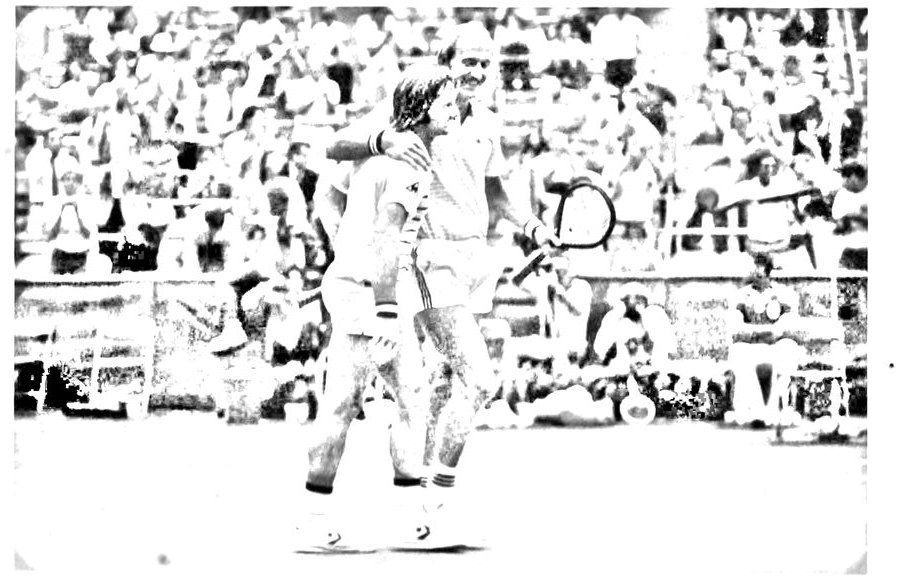
Hãy thư giãn và tận hưởng khoảng thời gian chia sẻ với người khác trên sân đánh đôi. Lối chơi của bạn sẽ được nâng cao khi bạn tận hưởng trò chơi nhiều hơn nhờ những cảm xúc tích cực. Nghe thì đơn giản: “Hãy tận hưởng trò chơi nhiều hơn và bạn sẽ chơi tốt hơn”, nhưng đó là cách bạn có thể dùng tư duy tích cực để có lợi cho mình. Bằng cách nuôi dưỡng những cảm xúc và suy nghĩ tích cực, mọi thứ sẽ trở nên khả thi qua lối chơi của bạn, còn nếu bạn không kiểm soát được chúng thì rất ít điều thành hiện thực. Đừng để mình đánh mất “ngọn lửa” với trò chơi này, hãy giữ sự hào hứng và niềm vui khi chơi nó, và cơ hội chơi tốt hơn của bạn chắc chắn sẽ tăng lên.
Relax and savor the time shared with others on the doubles court. Your play will be enhanced while you enjoy the game more through your positive emotions. It sounds simple: “Enjoy playing the game more and you'll play better,” but that is how you can use positive thinking to your advantage. By fostering positive emotions and thoughts anything will be possible through your play and without your control over them, few things will be. Don’t allow yourself to lose your “gusto” for this game, keep your excitement and joy in playing it and your chances for better play are certain to increase.
HÃY THỬ NGHIỆM ... THẬT VUIEXPERIMENT ... IT’S FUN
Bao giờ bạn cảm thấy trì trệ, thiếu cảm hứng hay mất động lực với lối chơi đánh đôi của mình chưa? Đừng lo, điều đó đã xảy ra với mọi tay vợt trong môn này ít nhất một lần trong đời tennis của họ. Khi điều này xảy ra, bạn có thể để lối chơi của mình sa sút trong sự tẻ nhạt được tạo ra, hoặc bạn có thể tìm cách thoát khỏi sự uể oải đó. Một sự thay đổi thường là điều cần thiết. Một cách để trải nghiệm điều gì đó mới mẻ hay khác biệt nhằm mang sự phấn khích và niềm vui trở lại với lối chơi của bạn.
Ever feel stagnant, uninspired, or unmotivated with your doubles game? Don’t worry, it’s happened to every player in the game at least once in their tennis life. When this happens you can let your game slump in the dullness created, or you can look for ways to escape from such sluggishness. A change is usually what is needed. A way to experience something new or different to bring excitement and fun back into your play.
Một số người chơi chỉ cần tạm rời môn thể thao để khơi lại lòng nhiệt tình với việc chơi. Chơi tennis quá nhiều thường mang lại sự nhàm chán. Các tay vợt chuyên nghiệp trên các giải đấu là ví dụ điển hình. Họ đi khắp thế giới chơi và luyện tập ngày này qua ngày khác dù muốn hay không. Khi khao khát của họ giảm sút thì lòng nhiệt tình và trình độ chơi cũng vậy. Đây là lý do họ thường tìm sự an ủi qua những kỳ nghỉ xa môn thể thao này.
Some players just need to break from the sport to rekindle their enthusiasm for playing. Too much tennis often brings staleness. The professional tour players are prime examples. They travel the world playing and practicing day in and day out whether they want to or not. When their desire slips so does their enthusiasm and playing level. This is why they often seek solace through vacations away from the sport.
Sự buồn chán được biết là xuất hiện ở những người chơi ít tiến bộ. Họ đang trong một lối mòn và cảm thấy như thể họ chỉ chơi một cách máy móc. Nếu điều này xảy ra với lối chơi của bạn, hãy tìm hiểu rõ hơn cách thoát ra khỏi nó. Có thể đó là sự hiểu biết về chiến thuật mà bạn thiếu, hoặc cũng có thể là về mặt kỹ thuật. Bạn sẽ có thể tiếp tục trên con đường tiến bộ miễn là bạn hiểu điều gì đang ngăn lối chơi của mình tiến lên. Một khi đã có được sự hiểu biết cần thiết, tốc độ tiến bộ của bạn sẽ phụ thuộc vào mức độ kỷ luật và quyết tâm của bạn.
Boredom is known to set in with players who are experiencing little improvement. They are in a routine and feel as though they are only going through the motions as they play. If this ever happens with your game, search for a better understanding of how to come out of it. It might be a strategic understanding that you are lacking or it might be a mechanical one. You will be able to continue on the road to improvement as long as you understand what it is that is keeping your game from advancing. Once the necessary understanding has been acquired, your rate of improvement will then depend on your level of discipline and determination.
Có vô số chiến thuật, kế hoạch, cú đánh và lối chơi để sử dụng khi chơi đánh đôi. Nếu lối chơi của bạn đang cảm thấy cũ kỹ hay tầm thường, hãy sáng tạo lên! Hãy thử nghiệm với lối chơi của mình, nó có thể rất vui. Thời điểm tốt nhất để làm điều này thường là trong lúc tập luyện và các trận đấu giao hữu xã hội. Hãy tránh lối chơi sáng tạo như vậy trong những trận đấu then chốt, trừ khi bạn và đồng đội đồng ý rằng đây là thời điểm thích hợp để thực hiện sự thay đổi.
There are limitless tactics, strategies, shots, and styles to use in playing the game of doubles. If your play is feeling old or mundane, get creative! Experiment with your play, it can be fun. The best time for this is usually during practice and social match play. Avoid such creative play during crucial matches unless you and your partner agree that this is the right time to implement the change.
Hãy mở rộng suy nghĩ của bạn về trò đánh đôi. Hãy thấy hứng khởi khi học được điều gì đó mới về lối chơi của mình. Hãy đổi người đồng đội hoặc đổi bên nếu cần. Hãy đánh giá và thay đổi mục tiêu của bạn nếu cần thiết. Hãy làm điều gì đó khác biệt — tham gia một giải đấu hoặc một giải liên đoàn mới; tạo thêm sự hào hứng trong các buổi tập của bạn. Hãy phát triển một cú đánh hay phong cách chơi mới. Trò chơi này có quá nhiều điều để mang lại cho người tham gia, đến mức bạn không bao giờ nên để mình thấy nhàm chán và không tận hưởng việc chơi nó!
Expand your thoughts on the game of doubles. Get a charge out of learning something new about your play. Make a partner switch or side change if necessary. Evaluate and change your goals if need be. Do something different — enter a tournament or a new league; create more excitement in your practices. Develop a new stroke or style of play. This game has far too much to offer its participants to ever let yourself get bored and not enjoy playing it!
ĐÁNH ĐÔI CŨNG NHƯ CUỘC SỐNG — NÓ LÀ NHỮNG GÌ BẠN TẠO NÊNDOUBLES IS LIKE LIFE — IT’S WHAT YOU MAKE OF IT
Những người mê tennis cuồng nhiệt có thể dễ dàng quên rằng đánh đôi chỉ là "một trò chơi". Họ thường đắm chìm trong việc chơi môn thể thao này đến mức nó trở thành một phần quá quan trọng trong cuộc sống của họ. Dù bản thân điều này không xấu, nhưng nếu chính những người chơi này không cẩn thận, họ có thể nhận ra mình đang mất hết cái nhìn đúng mực và khiến tennis có vẻ quan trọng hơn thực tế. Khi điều này xảy ra, trình độ chơi không tăng lên như nhiều người tưởng, mà ngược lại giảm đi vì có thể mất khả năng kiểm soát cảm xúc.
Tennis crazies can easily forget that doubles is “just a game.” They often are so immersed in playing the sport that it becomes such an important part of their lives. Although this in itself is not bad, if these same players are not careful, they might find themselves losing all perspective and making tennis seem more important than it really is. When this occurs, playing levels don't increase as many might think, rather they decrease since emotional control can be lost.
Tôi đã từng thấy tennis chi phối toàn bộ tính cách của người chơi. Khi chơi tốt, họ là những người lạc quan, thân thiện và dễ mến. Tuy nhiên, khi chính những người chơi này nhận ra lối chơi của mình đang chệch hướng, họ trở thành những con người ủ rũ, cáu gắt và khổ sở, đôi khi kéo dài nhiều ngày. Điều quan trọng là đặt tennis vào đúng vị trí của nó. Có những ngày bạn có thể chỉ cần cười vào màn trình diễn của mình trên sân, nhưng đó có thể là cách tốt nhất để giữ được sự làm chủ bản thân và cảm xúc. Những người chơi để lối chơi ảnh hưởng đến tính cách của mình là những người không làm chủ được bản thân. Họ sẽ hạ thấp trình độ chơi của mình bằng cách bóp méo tầm quan trọng của tennis trong cuộc sống.
I've seen tennis control entire personalities in players. When they're playing well they are upbeat, friendly, and personable people. However, when these same players discover their games are off, they become moody, testy, and miserable souls, sometimes for days. It is important to put tennis in its proper perspective. Some days may require you simply to laugh at your on-court performances, but that can be the best way to remain in control of yourself and your emotions. Players who let their games affect their personalities are not in control of themselves. They will lower their playing level by distorting the importance of tennis in their lives.
Hãy tránh đặt lên mình sự nhấn mạnh và áp lực không cần thiết để phải thể hiện. Bạn sẽ chơi đúng với tiêu chuẩn cao nhất của mình khi bạn thấy vui và tận hưởng bản thân trên sân. Hãy nhớ rằng, bạn sẽ tận hưởng việc chơi đánh đôi nếu bạn muốn, và có lẽ bạn sẽ không tận hưởng nó nếu bạn không muốn. Lý do nằm ở thái độ của bạn. Chỉ bạn mới làm chủ được nó, không ai khác. Nếu bạn không học cách kiểm soát nó, bạn có thể thấy những ảnh hưởng khác, như trò chơi tennis, đang kiểm soát mình.
Avoid placing unnecessary emphasis and pressure on yourself to perform. You will play up to your highest standards when you're having fun and enjoying yourself on the court. Remember, you will enjoy playing the game of doubles if you want to, and you probably won't enjoy it if you don't. The reason lies in your attitude. Only you are in control of it, no one else. If you don’t learn to control it, you might find other influences, like the game of tennis, controlling you.
NGÀY MAI TẤT CẢ CÁC BẠN SẼ LÀ BẠN BÈYOU'LL ALL BE FRIENDS TOMORROW
Tôi lớn lên với việc chơi tennis thi đấu. Những người chơi ở bên kia lưới là "kẻ thù" đối với tôi. Theo thời gian, tôi học được cách hướng cái nhìn của mình về phía bản thân nhiều hơn và xa rời đối thủ. Dù tôi vẫn tiếp tục tìm kiếm điểm yếu ở đối thủ và cách khai thác chúng, tôi trở nên quan tâm đến lối chơi tối ưu của chính mình hơn là việc đánh bại những người bên kia lưới.
I grew up playing tennis competitively. Players on the other side of the net were the “enemy” to me. Over time I learned to vent my view more toward myself and away from my opponents. Although I continued to look for weaknesses in my opponents and ways to exploit them, I became more concerned with optimum play in myself than beating those across the net.
Đánh đôi thi đấu có thể là một trận chiến thực sự. Người chơi cố ghi điểm bằng những chiến thuật và lối chơi được thiết kế để "xé nhỏ" đối thủ và khiến họ trông tệ hại trong quá trình đó. Cảm xúc có thể bùng nổ khi không khí tràn đầy căng thẳng. Những cái liếc nhìn hay thậm chí lời qua tiếng lại có thể được trao đổi. Áp lực tăng dần khi mỗi điểm then chốt được diễn ra.
Competitive doubles can be a real battle. Players try to score using tactics and strategies designed to pick opponents apart and make them look bad in the process. Emotions can be heated when tensions fill the air. Looks or even words can be exchanged. Pressures mount as each key point is played.
Một số màn trình diễn hay nhất từng được ghi nhận trong các sự kiện thể thao khắp thế giới đã diễn ra khi mọi áp lực đều đè nặng. Thi đấu mang đến cho người chơi cơ hội hiện thực hóa tiềm năng của mình. Tuy nhiên, nó cũng được biết đến là thứ khơi ra điều tệ nhất ở một số người chơi.
Some of the best performances ever recorded in sporting events around the world occurred when all the pressure was on. Competition offers players a chance at realizing their potential. It also, however, has been known to bring out the worst in some players.
Dù lý do chơi đánh đôi của bạn là gì — khía cạnh xã hội, vận động, hay hoàn thiện bản thân — bạn sẽ luôn có được nhiều niềm vui hơn từ trò chơi này nhờ những suy nghĩ và hành động tích cực. Hãy học cách kiểm soát suy nghĩ và hành động của mình trên sân dù trong bất kỳ tình huống nào. Hãy thể hiện chút chính trực và phong thái đẹp, và chắc chắn bạn sẽ cảm thấy hài lòng hơn về bản thân, giành được nhiều bạn bè hơn trong cuộc sống, và thắng nhiều trận đánh đôi hơn nữa!
Whatever your reason for playing the game of doubles, the social aspects, exercise, or personal betterment, you will always attain more enjoyment from this game through positive thoughts and actions. Learn to control your thoughts and actions on court whatever the situation. Show a little integrity and class and you will surely feel better about yourself, win more friends in life, and win more of the doubles matches you play as well!
TÓM TẮTQ@ SUMMARY
Hãy tìm tòi để khám phá những lý do khiến bạn thích chơi đánh đôi. Nếu điều bạn theo đuổi là chơi hết khả năng của mình một cách đều đặn, hãy chuẩn bị để điều đó xảy ra. Đừng mong nó tự xảy ra rồi lại thất vọng khi nó không xảy ra. Hãy làm cho lối chơi của bạn thú vị hơn bằng cách thách thức bản thân tiến bộ. Nếu bạn xứng đáng chơi hay, có lẽ bạn sẽ chơi hay. Đừng né tránh việc bỏ ra thời gian và nỗ lực để phát triển trạng thái tinh thần và thể chất của mình. Nếu làm vậy, bạn sẽ bỏ lỡ hết niềm vui! Để "hồi sinh" lối chơi của mình, hãy bắt đầu bằng việc tận hưởng nó một lần nữa. Tránh rơi vào tình trạng sa sút bằng cách tạo ra những biến tấu mới mẻ và khác biệt cho các buổi tập và lối chơi của bạn. Nếu bạn muốn chơi đều đặn ở trình độ cao nhất của mình, bạn phải nhớ thấy vui và tận hưởng lối chơi của mình. Nghe có vẻ đơn giản, nhưng bằng cách giữ cảm xúc tích cực, bạn sẽ có thể hiện thực hóa lối chơi hay nhất của mình . . . và làm được như vậy một cách đều đặn hơn!
Search to discover the reasons you enjoy playing the game of doubles. If regularly playing your best is what you're after, prepare yourself for it to happen. Don’t expect it to happen on its own and be frustrated when it doesn’t. Make your play more exciting by challenging yourself to improve. If you deserve to play well, you probably will. Don’t avoid putting in the time and effort to develop your mental and physical state. You'll miss out on all the fun if you do! To raise your game from the “dead,” start by enjoying it once again. Avoid falling into a slump by creating new and different twists to your practices and play. If you want to play consistently at your highest level you must remember to have fun and enjoy your play. It sounds simple, but by keeping your emotions positive, you'll be able to realize your best play . . . and do so on a more regular basis!
Về Tác Giả & Cộng Sự
VỀ TÁC GIẢABOUT THE AUTHOR
Skip Singleton là Giám đốc Tennis tại Bluewater Bay Resort ở Niceville, Florida. Bluewater Bay được Hiệp hội Tennis Florida chọn là "Câu lạc bộ Tennis của Năm" cho các năm 1986-87 và 1988-89, và là một khu nghỉ dưỡng tennis được Tạp chí World Tennis xếp hạng Năm Sao. Skip đã nhận được mức xếp hạng cao nhất dành cho chuyên gia giảng dạy có chứng chỉ của Hiệp hội Tennis Chuyên nghiệp Hoa Kỳ và được USPTA Phân ban Florida vinh danh là "Chuyên gia của Năm" năm 1989. Ông đã có thứ hạng ở cấp tiểu bang và quốc gia từ khi còn là tay vợt trẻ và đã thi đấu trên các hệ thống giải chuyên nghiệp ở Mỹ và châu Âu. Ông đã làm việc cả trên sân lẫn ngoài sân với những huấn luyện viên và tay vợt nổi tiếng và được kính trọng trên quốc tế. Skip tham gia vào nhiều khía cạnh của ngành tennis và hiện là một ủy viên trong Ban điều hành USPTA Florida, giám đốc giải đấu cho sự kiện tennis chuyên nghiệp lớn nhất ở tây bắc Florida, một diễn giả tích cực trên toàn quốc, và là thành viên của Đội Cố vấn Chuyên gia Giảng dạy của Prince. Skip sống cùng vợ, Debbie, và hai chú chó, Ace và Volley, tại Bluewater Bay Resort ở Niceville, Florida.
Skip Singleton is the Director of Tennis at Bluewater Bay Resort in Niceville, Florida. Bluewater Bay was selected by the Florida Tennis Association as “Tennis Club of the Year’ for 1986-87 and 1988-89 and is a Five Star Rated Tennis Resort by World Tennis Magazine. Skip has received the highest rating of certified teaching professionals by the United States Professional Tennis Association and was named ‘Professional of the Year’ by the USPTA Florida Division for 1989. He has held state and national rankings since he was a junior and has competed on professional circuits in the U.S. and Europe. He has worked both on and off the court with internationally known and respected coaches and players. Skip is involved in many aspects of the tennis industry and is currently an officer on the USPTA Florida Board, tournament director for the largest professional tennis event in northwest Florida, an active speaker nationally, and member of the Prince Teaching Professional Advisory Staff. Skip lives with his wife, Debbie, and dogs, Ace and Volley, at Bluewater Bay Resort in Niceville, Florida.
VỀ ROD LAVERABOUT ROD LAVER
Danh sách những thành tích tennis của Rod Laver, tay vợt thuận tay trái tóc đỏ, đã trở thành huyền thoại. "Rocket" là tay vợt duy nhất hai lần giành Grand Slam Tennis, khi thắng Wimbledon cùng các giải Mỹ, Úc và Pháp mở rộng trong cùng một năm. Ngoài việc lập nên kỳ tích đáng kinh ngạc này vào năm 1962 và 1969, Laver còn giành thêm hai danh hiệu đơn khác tại Wimbledon và một danh hiệu nữa tại Úc Mở rộng. Ông đã thắng mười hoặc mười hai trận cho Australia tại các trận chung kết Davis Cup. Laver cũng ghi dấu ấn đáng nể ở nội dung đánh đôi và đánh đôi nam nữ, cùng với việc giành chín danh hiệu đôi Grand Slam trong sự nghiệp lừng lẫy của mình. Sinh ngày 9 tháng 8 năm 1938 tại Rockhampton, Queensland, Laver là tay vợt đầu tiên trong lịch sử kiếm được 1 triệu đô-la tiền thưởng. Được biết đến với cú giao bóng mạnh mẽ và cú thuận tay xoáy lên "như tên lửa", Rod hiện sống ở Newport Beach, California.
Red haired southpaw Rod Laver’s list of tennis accomplishments is legend. “Rocket” is the only player to have twice won the Grand Slam of Tennis, winning Wimbledon, and the U.S., Australian and French Opens all the same year. Besides achieving this astonishing feat in 1962 and 1969, Laver also won two additional singles titles at Wimbledon and one more at the Australian Open. He won ten or twelve matches for Australia in Davis Cup Finals. Laver also chalked up an impressive doubles and mixed doubles record as well as winning nine Grand Slam doubles titles during his illustrious career. Born August 9, 1938 in Rockhampton, Queensland, Laver was the first tennis player in history to earn $1 million in prize money. Known for his powerful serve and “rocketlike” topspin forehand, Rod now resides in Newport Beach, California.
VỀ LEROY NEIMANABOUT LEROY NEIMAN
Nghệ thuật của LeRoy Neiman ghi lại con người trong lúc thư nhàn, không chỉ các sự kiện thể thao mà còn Las Vegas, Thời trang, Opera, Sân khấu, Quán bar, Xe hơi và các Khu nghỉ dưỡng. Mọi thứ lấp lánh trong văn hóa Mỹ đương đại đều được ngòi bút và cọ vẽ của Neiman tái hiện đầy màu sắc. Ông là một họa sĩ vẽ phác tuyệt vời và ngoài ra còn là một bậc thầy về màu sắc. Vậy mà nghệ thuật của ông vượt lên trên kỹ năng kỹ thuật của mình. Ông bắt trọn khoảnh khắc và cảm xúc — chính là tinh túy của một sự kiện hay một biến cố. Và nghệ thuật của ông hiếm khi không khơi lên một phản ứng nơi người xem, chẳng hạn như — đúng vậy, bức tranh đó là hiện thân của sự mong đợi, màu sắc và sự kịch tính của một điểm then chốt trong trận tennis.
LeRoy Neiman’s art chronicles man at his leisure, not only sporting events, but Las Vegas, Fashion, the Opera, the Theater, Bars, Cars, and Resorts. All that glitters in present day American culture is colorfully rendered by Neiman’s brush and pen. He is a superb draftsman and in addition, a brilliant colorist. Yet his art transcends his technical skill. He catches the moment and mood that is the essence of an event or happening. And his art seldom fails to evoke a response in the viewer such as — yes, that picture is the embodiment of the expectancy, color, and excitement of a critical point in a tennis match.